ESPACES FIBRÃS
et
CONNEXIONS
Une introduction aux géométries
classiques et quantiques
de la physique théorique
Robert Coquereaux
Centre de Physique Théorique
Luminy - Marseille
A mes enfants Valérie, Eric et Raphaël

Il est quelquefois plus facile de présenter un livre en disant ce qu’il n’est pas et en dressant une liste des motivations de l’auteur qu’en essayant d’en expliciter le contenu.
Ce livre, bien qu’il contienne un exposé de géométrie différentielle (avec un accent particulier mis sur les groupes de Lie, la théorie des espaces fibrés, la théorie des connexions et la géométrie riemannienne) n’est certainement pas un cours de mathématiques traditionnel. En général les mathématiciens cultivent la précision du style et la concision du discours, alors que l’exposé qui suit essaye de présenter les idées importantes en faisant souvent appel à l’intuition, en effectuant de nombreux retours en arrière et en ne négligeant pas les clins d’oeil à la physique. On peut donc espérer que la lecture de l’ouvrage présent sera un peu moins aride que celle d’un traité traditionnel.
Ce livre n’est pas non plus un cours de physique théorique. Il y manque beaucoup trop d’informations ! Celui ou celle qui souhaite se lancer à la découverte de l’Espace-Temps et déchiffrer certains des mystères de notre univers devrait s’attaquer à de saines lectures (par exemple [5]). L’ouvrage présent ressemble plus à un cours de mathématiques qu’à un cours de physique ; la physique n’est cependant pas absente, au contraire : des idées physiques sont cachées derrière chaque paragraphe, et ce sont elles qui sont, la plupart du temps, à l’origine des notions “abstraites” que nous allons présenter.
Bien qu’il ne s’agisse pas là d’un ouvrage de vulgarisation sur la physique théorique ou les mathématiques, j’ai pourtant rédigé de nombreux paragraphes en pensant à certains de mes amis ayant une culture mathématique relativement modeste mais néanmoins dotés d’un esprit curieux et aimant vagabonder de temps à autres sur des terrains situés au confluent de l’infiniment petit, de l’infiniment grand, des mathématiques et de la métaphysique. Je dois dire, en relisant l’ouvrage après coup, que, de ce point de vue, j’ai peur d’avoir echoué : le contenu présenté ressemble plus à un cours de troisième cycle spécialisé qu‘à un ouvrage de vulgarisation… Cela dit, je pense — et j’espère — qu’à la condition de commencer la lecture à la première page sans essayer de démarrer en plein milieu, l’ouvrage reste accessible à tout lecteur disposant d’un bagage mathématique équivalent à celui qu’on est censé acquérir à l’issue d’un premier cycle universitaire, ou d’une classe de Mathématiques Spéciales. A propos de motivations, je dois aussi signaler que d’autres de mes amis, dotés d’une culture mathématique plus que respectable n’ont malheureusement jamais eu le temps ou la patience de traduire le jargon quelquefois flou des physiciens dans la langue bourbakiste qu’ils affectionnent. Le présent ouvrage, bien que résolument peu bourbakiste dans le style, est également écrit pour eux. Finalement, ce livre est également —et probablement surtout— écrit pour les étudiants en mathématiques ou en physique, mais qu’on ne vienne pas me demander “De quelle année ?” ! En effet, certains des thèmes qui seront abordés peuvent être rencontrés dans un cours de maîtrise de mathématiques (ou de DEA) et on les trouvera souvent incorporés à un enseignement de troisième cycle de physique théorique ou de géométrie différentielle, mais d’autres thèmes, probablement aussi intéressants, et quelquefois même fondamentaux, risquent fort de ne figurer dans le programme d’aucun enseignement universitaire. L’étudiant, physicien ou mathématicien, trouvera peut-être, dans cet ouvrage, ce qu’il cherche (en utilisant l’index et la table des matières) et le non-spécialiste y trouvera peut-être ce qu’il ne cherchait pas…
Enfin, ce livre n’est pas un ouvrage de philosophie ou de métaphysique (Dieu m’en garde !) bien que certaines réflexions de nature éminemment philosophiques ne soient pas absentes des pages qui suivent, surtout dans la section Introduction.
La partie “géométrie différentielle” de ce travail est issue d’un cours de troisième cycle que j’ai eu l’occasion de donner pendant plusieurs années au sein du Diplôme d’Etudes Approfondies (DEA) de Physique Théorique, organisé au Centre de Physique Théorique, à Luminy (Marseille) ainsi qu’en 1997, dans le DEA de Physique Théorique organisé à l’Ecole Normale Supérieure de Lyon. La partie “non commutative” (la dernière section) est un court extrait d’une série de cours que j’ai donnés dans les universités de Rio de Janeiro (URJ, UFRJ et CBPF), de Saragosse et de La Plata ainsi qu’à San Carlos de Bariloche, en 1996 et 1997. L’ouvrage a également servi de support à un cours semestriel de l’IMPA, Rio de Janeiro, en 2012 (Pós-Graduação em Matemática, curso de Doutorado).
Qu’est ce que la “Réalité” ? Existe-t-elle seulement ? Que signifie le verbe “exister” de la proposition interrogative précédente ? Que le lecteur allergique aux discussions philosophiques se rassure, nous n’allons pas continuer longtemps dans cette direction. Cependant, pour ne pas nous enliser dans de faux problèmes sémantiques et pour bien apprécier en quel sens nous comprenons ou prétendons comprendre les phénomènes naturels (y en a-t-il qui ne le soient pas ?) il nous faut apporter une réponse pragmatique aux questions précédentes et tenter de définir les mots eux-mêmes que nous utilisons.
Le point de vue adopté par l’auteur est le suivant :
∙ Il est impossible de donner une signification quelconque à la phrase suivante : La Réalité est. L’auteur croit cependant en l’existence d’une réalité objective dont la nature est indépendante de l’analyse qui peut en être faite. Malheureusement, il s’avère également impossible de donner un sens raisonnable à l’assertion précédente. La croyance de l’auteur est donc un acte de foi au sens métaphysique du terme. On pourra donc utiliser le mot “phénomène” comme synonyme du mot “réalité”, le vocable en question étant lui-même non défini.
∙ La description d’un phénomène, quel qu’il soit, fait toujours appel aux mathématiques, même si le spectateur n’en est pas conscient. Ainsi, déclarer que deux individus font partie de la même lignée (au sens héréditaire du terme) signifie qu’on assimile –peut être inconsciemment– les individus en question aux éléments d’un ensemble sur lequel on a défini une relation d’ordre partiel. De la même façon, la traversée d’un terrain par un ballon de foot-ball est un phénomène admettant une description (en fait plusieurs) dont la nature est essentiellement mathématique. Par exemple, on peut considérer la trajectoire d’un point traversant un rectangle en ligne droite. Il existe cependant une description du même phénomène ou le ballon n’est plus un point mais une sphère et ou le terrain n’est plus assimilé à un rectangle mais une figure géométrique plus complexe (coins plus ou moins arrondis, côtés plus ou moins parallèles etc.) On peut d’ailleurs continuer dans ce sens et tenir en compte l’existence de creux et de bosses sur la surface du ballon, de la couleur etc. Les humains n’ont pas besoin de suivre des cours de mathématiques supérieures pour apprécier un match de foot-ball, mais il est important de constater l’aptitude de l’esprit à créer inconsciemment des modèles mathématiques relativement élaborés pour analyser l’expérience quotidienne. Notons enfin qu’un phénomène donné possède d’ordinaire plusieurs descriptions mathématiques (et même une infinité).
∙ La croyance en l’existence d’une réalité objective n’a aucune importance pratique ; seule compte l’ensemble de ses descriptions mathématiques. En effet, lors de l’analyse d’un phénomène (la traversée de la cour par un ballon de foot-ball), nous pouvons adopter les deux points de vue suivants. 1) La traversée de la dite cour par le ballon en question est un phénomène “réel” dont nous pouvons donner une quantité de descriptions mathématiques compatibles, et il est d’ailleurs possible de préciser la notion de compatibilité des descriptions. 2) La traversée de la dite cour par le ballon en question est en fait définie par un ensemble (infini) de descriptions mathématiques compatibles. Peu importe que nous adoptions l’un ou l’autre de ces deux points de vue, car si un aspect d’un phénomène n’est pas mathématiquement modèlisable, cet aspect relève –presque par définition– de la métaphysique et il n’est pas clair qu’on puisse y attribuer un sens (même si on a envie de croire sans comprendre). On peut se convaincre du fait que l’exercice classique de méditation sur le thème de la chaise (Quelle est cette chaise ? Quelle est sa fonction ? Quelle est sa nature ? Quelle est son histoire ? etc.) est complètement modèlisable en termes mathématiques...
Pour nous, un phénomène est donc défini par l’ensemble de ses descriptions mathématiques. Du point de vue linguistique, on devrait peut-être distinguer en général le phénomène lui-même (concept assez flou) de sa description mathématique – ou plutôt, de ses descriptions mathématiques. On peut alors parler de modélisation du phénomène, mais il faut bien voir que c’est la modélisation elle-même qui rend le phénomène accessible à l’analyse. Le modèle mathématique, qu’il soit choisi consciemment (par un physicien, par exemple) ou inconsciemment (par exemple, par un spectateur du match) apporte avec lui son propre langage, c’est à dire les mots qui permettent à l’observateur de se poser des questions à propos du phénomène qu’il contemple. Chacun de ces mots est censé être susceptible d’une traduction mathématique précise dans un cadre formel — que l’observateur ne défini pas nécessairement — faute de quoi, les mots en question sont simplement vides de sens. Il faut bien être conscient du fait que la phrase “mais que se passe-t-il vraiment ?” posée par le profane repose sur la croyance en une réalité objective, réalité qui, de notre point de vue, échappe à toute analyse scientifique.
Qu’en est-il donc de la distinction entre physique et mathématiques ? Pour nous, dire qu’une figure dessinée sur une feuille de papier est un triangle, c’est “faire de la physique” : le triangle est une notion abstraite appartenant au monde des mathématiques, associer cette notion au dessin qu’on a sous les yeux est un travail de physicien. Dans un genre différent, supposons qu’on fabrique des “choses” avec un canon à électrons… qu’est ce donc qu’un électron ? On peut dire que c’est une petite boule, on peut dire que c’est une fonction (complexe) –une onde !–, on peut dire que c’est une section d’un certain espace fibré vectoriel (un “champ de Dirac”) ou que c’est un élément d’un module projectif de type fini sur une algèbre non nécessairement commutative… Toutes ces descriptions sont mathématiques et la première (la boule) est la plus simple du point de vue du bagage mathématique utilisé mais toutes ces descriptions sont également “vraies” et apportent avec elles leur propre langage. Il y a des questions qu’on ne peut poser qu’après avoir choisi une certaine description. C’est ainsi que les mathématiques sont nécessaires à la description de ce que nous appelons les phénomènes naturels (conséquence immédiate : si vous avez des difficultés en physique, c’est que vous n’avez pas proprement assimilé les mathématiques nécessaires !). La physique consiste essentiellement à habiller le phénomène de notre choix avec des mathématiques appropriées et c’est cet habillage qui rend les choses accessibles au discours. C’est là quelque chose qu’il ne faut pas oublier mais il faut avouer qu’il est néanmoins commode de vivre en faisant “comme si” on croyait à l’existence d’une réalité objective ! On pourrait aussi passer au cran supérieur et se demander si les mathématiques elles-mêmes “existent”. Il n’est pas clair que la phrase ait un sens mais il est certain que, de la même façon qu’il est commode de croire en l’existence d’une réalité physique objective, il est également commode de croire en l’existence d’une réalité mathématique qu’il s’agit pour nous de découvrir (comme un explorateur dans la jungle ou comme un physicien expérimentateur). Les chapitres qui suivent présentent des concepts mathématiques. Indépendamment de la beauté ou de l’élégance intrinsèque des concepts en question, nous voulons attirer l’attention du lecteur (même s’il n’est pas physicien) sur le fait que ces concepts jouent un rôle majeur dans l’“habillage” contemporain des théories physiques, et que, dans de nombreux cas, ces concepts sont eux-mêmes issus de considérations relevant de la physique théorique.
Avant d’arrêter là ces considérations épistémologiques pour passer à notre premier chapitre consacré à l’étude des variétés différentiables, nous voulons dire un mot sur la distinction entre physique classique et physique quantique, en parallèle avec la distinction entre “mathématiques commutatives” et “mathématiques non commutatives”. Cette remarque risque de n’être comprise que par les lecteurs ayant déjà une certaine familiarité avec les sujets mentionnés mais le lecteur intéressé pourra peut-être relire ce commentaire en y revenant un peu plus tard. Les mathématiques commutatives (la géométrie commutative en particulier) s’occupe des propriétés mathématiques des “espaces” (théorie de la mesure, espaces topologiques, différentiables, riemanniens, homogènes, possédant une structure de groupe…) Pour le physicien, ces espaces fournissent un modèle mathématique concernant le système qu’il a choisi d’étudier et toutes les quantités qui l’intéressent peuvent être décrites à l’aide d’une classe appropriée de fonctions définies sur de tels espaces. Il se trouve que les propriétés des espaces en question peuvent elles-mêmes être codées en termes des propriétés de ces algèbres de fonctions ; il s’agit là d’un résultat profond dont l’expression précise est due à Gelfand (voir chapitre 6). Le vocable “mathématiques commutative” vient du fait que toutes ces algèbres sont des algèbres commutatives pour les lois d’addition et de multiplication des fonctions. Attention, de ce point de vue, la théorie des groupes de Lie (voir plus loin) –groupes qui ne sont pas, en général, commutatifs– fait partie des “mathématiques commutatives” car l’algèbre des fonctions (à valeurs réelles ou complexes) définie sur un groupe est une algèbre commutative ! Les “mathématiques non commutatives”, au contraire, s’occupent des propriétés d’algèbres qui ne sont pas commutatives et des objets qui généralisent les constructions usuelles lorsqu’on remplace les algèbres de fonctions (et les “espaces” eux-mêmes) par des algèbres d’opérateurs. Les quantités qui intéressent le physicien ne sont plus alors codées par des fonctions numériques mais, typiquement, par des opérateurs agissant dans des espaces hilbertiens. Il est inutile d’en dire plus à ce niveau mais nous effectuerons deux remarques. La première est terminologique : un physicien dit qu’il fait de la physique classique lorsqu’il utilise des mathématiques commutatives pour décrire un phénomène (ce qui, philosophiquement, revient à le définir ! Voir la discussion précédente) et de la physique quantique lorsqu’il utilise des mathématiques non commutatives (idem). La seconde remarque a trait au contenu de cet ouvrage : il traite de géométrie, et la plupart du temps de géométrie utilisée en physique fondamentale, cependant il s’agira presque toujours de géométrie commutative, vocable englobant d’ailleurs toute la géométrie, au sens usuel du terme, qu’elle soit euclidienne ou non. Du point de vue de la physique, nos constructions correspondront donc à des constructions de théorie classique des champs (même s’il nous arrive de parler de quarks ou d’électrons de Dirac) et non de théorie quantique des champs.
Le dernier chapitre est une introduction aux “mathématiques non commutatives” (un point de vue assez particulier sur la théorie des algèbres associatives) et présente quelques notions fondamentales relevant de le géométrie différentielle non commutative. Ce dernier chapitre pourrait donc aussi s’intituler : Introduction à la géométrie quantique.
Le lecteur ne connaissant rien au sujet et désirant “se faire une idée”, peut dans un premier temps, parcourir les sections 1.1, 1.2, 2.1, 2.2.1, ainsi que 3.1, (3.2.1 → 3.2.5), 3.3.1, 3.3.2, (4.1.1 → 4.1.4) et (4.4.1, 5.6.1, 6.1, 6.2.1, 6.3.1) dont le contenu, à peu près exempt de formules, fait appel à l’intuition et ne suppose que très peu de connaissances préalables.
Les autres sections sont assez inégales ; certaines présentent un matériel qui fait ou devrait faire partie du bagage mathématique standard de tout mathématicien ou physicien théoricien, certaines autres sont d’un niveau plus avancé et peuvent contenir des informations qui ne sont pas nécessairement disponibles ailleurs (sauf peut-être dans quelques articles spécialisés). En fait, comme le titre l’indique, le but initial de ce travail était de fournir une présentation — si possible pédagogique — des espaces fibrés et de la théorie des connexions. Il se trouve que certains lecteurs potentiellement intéressés, en particulier les étudiants de troisième cycle de physique théorique, n’ont souvent pas, au départ, les bases mathématiques nécessaires pour attaquer, de front, un cours relativement complet sur les espaces fibrés : il leur manque souvent un cours préalable de calcul différentiel sur les variétés et un cours sur les groupes de Lie. C’est la raison d’être des parties 1 et 2 de cet ouvrage. On a essayé d’y présenter les notions indispensables à la lecture des chapitres 3 et 4 consacrés aux espaces fibrés et à la théorie des connections. Nous suggérons donc à ceux qui ont déjà acquis une formation raisonnable en ce qui concerne les variétés différentiables (par exemple en lisant le premier volume de [13] et les groupes de Lie, de jeter d’abord un coup d’œil au sommaire, puis de sauter les deux premiers chapitres — qui ne leur apprendront sans doute pas grand chose — et d’entamer directement la lecture de cet ouvrage au chapitre 3. Pour les autres… il vaudrait peut-être mieux s’astreindre à lire les différentes parties dans l’ordre. Comme nous l’avons mentionné dans la préface, l’ensemble de l’ouvrage devrait être lisible par quelqu’un ne disposant pas d’un bagage mathématique supérieur à celui qu’on acquiert d’ordinaire, ou qu’on est sensé acquérir, en premier cycle. Son contenu, néanmoins, serait plutôt d’un niveau 3èmecycle.
Le plan et la structure de ce livre répond à la préoccupation suivante : faire du lecteur un “honnête homme” en géométrie différentielle classique en présentant un certain nombre de notions qui sont fréquemment utilisées en physique théorique ou en mathématiques. Savoir si le but sera atteint est une autre histoire… Enfin, et au risque de faire hurler certains mathématiciens, il nous semble plus important, tout au moins dans un premier temps, de se familiariser avec les idées fondamentales ainsi qu’avec de nombreux exemples, que de connaître le détail de toutes les démonstrations relatives aux propositions et théorèmes cités.
Le style adopté dans ce livre étant volontairement informel, il peut être parfois difficile au lecteur de retrouver la définition précise de tel ou tel concept. Pour cette raison, il peut être utile de consulter l’index situé en fin d’ouvrage, et, bien entendu, la table des matières.
Notre présentation est bien, sur, incomplète. Certains aspects ne sont qu’effleurés, d’autres sont totalement absents et bien qu’il ne s’agisse pas ici, loin s’en faut, d’une tentative encyclopédique, voici quelques têtes de chapitres dont on pourra déplorer l’absence… : compléments de géométrie différentielle élémentaire en basse dimension (la liste serait longue), géométrie symplectique et mécanique, opérateurs différentiels, pseudo-différentiels, symboles etc., étude des équations de Yang-Mills, instantons etc., classification des espaces fibrés, fibrés universels et espaces classifiants, K-théorie, classes caractéristiques (et classes caractéristiques secondaires), géométries sur les groupes de Lie et les espaces homogènes, applications harmoniques, aspects conformes, métriques et connexions invariantes (symétries, isométries), variétés complexes, hypercomplexes etc., géométrie de l’espace des orbites des connexions, géométrie de l’espace des métriques, etc.
Par ailleurs, l’auteur aurait aimé insérer, à la fin de chaque chapitre, une section consacrée aux généralisations des idées rencontrées, lorsqu’on passe de la géométrie commutative à la géométrie non commutative, c’est à dire lorsqu’on passe du classique au quantique 1 . Il est sans doute dommage de devoir parler au conditionnel passé… mais il fallait bien mettre fin à la rédaction ! De fait, faisant suite à une première version de cet ouvrage, rendue disponible sur Internet, en format html, en mai 1997, la dernière section (section 6), consacrée à une présentation générale des mathématiques non commutatives et au calcul différentiel sur les algèbres non commutatives, a été rajoutée en mars 1998. Ce rajout répond donc, en partie, à la préoccupation mentionnée plus haut.
Bien entendu, toutes les remarques permettant d’améliorer ce document, voire de corriger certaines sections si besoin est, sont les bienvenues : envoyer un courrier à l’auteur ou un courriel à coque at cpt.univ-mrs.fr.
On aura compris que ce livre a été rédigé en français. Certes, il eut été préférable, pour rassembler un plus large lectorat, de rédiger directement l’ouvrage en anglais. L’usage de la langue anglaise, et en particulier la lecture de l’anglais, sont devenus obligatoires dans notre société, et il est certain que l’enseignement de cette langue a fait des progrès considérables en France ; il n’en demeure pas moins que la lecture de textes en anglais, même de textes scientifiques, pose toujours à nos étudiants ainsi qu’à certains de leurs aînés, des difficultés. Il en va d’ailleurs de même pour une vaste partie du monde francophone, où le français n’est parfois qu’une deuxième langue (l’anglais venant en troisiìeme position). Il n’est pas certain que le présent ouvrage devienne un livre de chevet ( !) mais pour faciliter sa lecture sans rajouter une difficulté linguistique, l’auteur a décidé de rédiger ce livre directement en français. Ces notes sont donc dédiées aux étudiants et aux chercheurs de la francophonie, et à tous les esprits curieux qui souhaitent acquérir un certain nombre de notions géométriques des mathématiques contemporaines avant de s’embarquer eux-mêmes dans l’aventure de la recherche, que ce soit en Physique ou en Mathématique, ou qui souhaitent tout simplement satisfaire leur curiosité intellectuelle. Une version anglaise serait la bienvenue mais l’auteur n’a pas eu, jusqu’à présent, le courage de s’atteler à cette tâche.
L’ensemble du document (sa dernière version) est accessible, via internet, en version html ou pdf sur http://www.cpt.univ-mrs.fr/~coque/.
On trouvera assez peu de références mentionnées dans cet ouvrage. Il existait évidemment la tentation de citer tous les livres traitant, de près ou de loin, de géométrie différentielle, d’espaces fibrés, de connexions, de géométrie riemannienne etc . Un tel effort bibliographique semble évidemment, dès le départ, voué à l’échec. Une autre solution eût été de ne citer que les ouvrages élémentaires. Malheureusement, les ouvrages en question ne recouvrent pas nécessairement tous les sujets qui sont abordés ici. Enfin, on rappelle que la première rédaction de ces notes, avant leur mise à disposition sur internet, date de 1996 ; plusieurs ouvrages d’enseignement sur des sujets voisins sont apparus depuis. L’attitude que nous avons choisi d’adopter est de ne citer que les livres et autres travaux pour lesquels l’auteur a conscience d’avoir subi une influence possible ou certaine. Les documents en question sont assez variés : certains sont des ouvrages de référence, d’autres sont des monographies spécialisées, d’autres encore, des articles de recherche. L’auteur n’a pas cherché à suivre tel ou tel traité et a essayé de rédiger ces notes de façon originale… certains pourront peut-être s’en plaindre ! Tout ceci explique la raison du petit nombre de références, que voici.
[1] A. Besse. Einstein manifolds. Springer-Verlag, 1966.
[2] A. Connes. Noncommutative differential geometry. Publ. Math. IHES 62, 1985.
[3] A. Connes. Noncommutative geometry. Academic Press, 1994.
[4] R. Coquereaux and A. Jadczyk. Fiber bundles, Kaluza-Klein theories and all that. World Scientific, 1988.
[5] C.W.Misner, K.S.Thorne, and J.A. Wheeler. Gravitation. Freeman, 1973.
[6] M. Dubois-Violette. Dérivations et calcul differérentiel non commutatif. C.R. Acad. Sci. Paris 307, Ser. I, 403-408, 1988.
[7] M. Dubois-Violette and P. Michor. A common generalization of the Frolicher-Nijenhuis bracket and the Schouten bracket. Preprint LPTHE-Orsay 94/05, ESI 70, 1994.
[8] D. Husemoller. Fiber bundles. Springer-Verlag, 1966.
[9] S. Kobayashi and K. Nomizu. Foundations of differential geometry, VolI/III. Interscience, 1963.
[10] R. Kerner, M. Dubois-Violette and J. Madore. Classical bosons in a non-commutative geometry. Class. Quant. Grav. 6, 1709, 1989.
[11] G. Esposito Farese, R. Coquereaux and G. Vaillant. Higgs fields as Yang mills fields and discrete symmetries. Nucl. Phys. B 353, 689-706, 1991.
[12] R. Haussling, R. Coquereaux and F. Scheck. Algebraic connections on parallel universes. Int J. Mod. Phys. A, vol. 10, PP 89-98, 1995.
[13] Spivak. Differential Geometry. Publish or Perish, 1979.
Une variété topologique est tout d’abord un espace topologique, mais on suppose, de surcroît, que chacun de ses points possède un voisinage homéomorphe à un ouvert de ℝn. On dit alors que cet espace est une variété topologique de dimension n.
Intuitivement, une variété topologique de dimension 2 est un espace qui, localement, c’est à dire si on ne regarde pas trop loin, ressemble à un petit morceau de feuille de papier qu’on aurait pu découper avec des ciseaux après en avoir tracé le pourtour au crayon (on peut d’ailleurs froisser le bout de papier en question). La structure globale de cet espace peut être évidemment assez différente puisque la variété elle-même est obtenue par recollement de tous ces petits morceaux de papier. Ainsi, un pneu de bicyclette, éventuellement dégonflé, plié et “froissé” fournit un exemple d’objet physique qu’on peut modéliser à l’aide d’une variété topologique de dimension 2 : un tore.
Les variétés dont il vient d’être question n’ont pas de bord (au sens intuitif du terme). En effet, si nous nous transformons en êtres plats, rampant sur la surface d’un ballon – ou d’un pneu – nous ne sommes jamais arrêtés par une quelconque barrière. Cela ne serait pas le cas si nous nous déplacions sur la surface d’un quartier d’orange ou d’un pneu crevé (nous nous arrêterions au bord du trou !). Sans se transformer en êtres plats, cela ne serait pas le cas non plus si nous nous déplacions à l’intérieur d’une boule fermée. De façon générale, il est possible de fabriquer des “variétés à bord” en effectuant un ou plusieurs trous dans une variété sans bord (à l’aide d’une petite cuillère multi-dimensionelle !) ; la partie enlevée, comme la partie qui reste, devient une variété topologique à bord.
Pour préciser cette notion, il nous faut élargir la définition de variété que nous avons donné plus haut puisque certains des points (ceux du bord) ont un voisinage non pas homéomorphe à un ouvert de ℝn mais à un voisinage de ℝ +n (le fermé de ℝn formé des points dont la dernière composante est positive ou nulle).
Attention : si nous nous promenons dans une boule ouverte, nous ne pourrons jamais atteindre aucun bord... par définition d’une boule ouverte ! Une boule ouverte est une variété sans bord de dimension 3 qui est d’ailleurs homéomorphe à ℝ3. Par contre, une boule fermée est une variété à bord de dimension 3, les points du bords sont ceux de la sphère (une variété de dimension 2) et ils possèdent – dans la boule fermée – des voisinages particuliers. Le disque ouvert (la boule de dimension 2) est aussi une variété sans bord et le disque fermé est une variété à bord (son bord est constitué d’un cercle qu’on peut appeler également “sphère de dimension 1”. Dans le même genre, un intervalle ouvert est une variété sans bord (la boule de dimension 1) et un intervalle fermé est une variété à bord (son bord est constitué de deux points dont la réunion constitue ce qu’on peut appeler la sphère de dimension 0. Les exemples qui précèdent sont généralisables en toutes dimensions.
Terminologie : Si on ne précise pas davantage, une variété topologique est censée être une variété sans bord.
La plupart des objets mathématiques auxquels nous avons tendance à penser de prime abord sont des exemples de variétés topologiques (avec ou sans bord), et, pour cette raison, il est bon de donner quelques exemples d’espaces topologiques qui ne sont pas des variétés. Considérez par exemple une croix (réunion de deux segments d’intersection réduite à un point) ; ce n’est pas une variété car le point situé à l’intersection des deux segments possède des voisinages en forme de croix, et une croix n’est jamais homéomorphe à un ouvert de ℝ = ℝ1. Le globe impérial est un objet qu’on pourrait penser à modéliser mathématiquement par une sphère (variété de dimension 2) sur laquelle on aurait collé une croix (réunion de deux segments) Cet espace n’est pas une variété pour deux raisons. La première vient du point d’intersection des deux branches de la croix (déjà vu) et la deuxième est analogue puisque le point ou on a collé la croix sur la sphère possède des voisinages qui ne sont homéomorphes ni à des ouverts de ℝ1 ni à des ouverts de ℝ2.
Ces derniers exemples ne sont pas des variétés mais sont néanmoins obtenus par recollement de variétés... (CW complexes) Ils ne possèdent pas une dimension déterminée mais ont néanmoins une structure assez simple. On peut cependant faire bien pire... Les exemples d’espaces topologiques qui ne sont pas des variétés abondent (prenez par exemple des espaces topologiques qui ne sont pas de Haussdorf, c’est à dire qui possèdent des points qu’on ne peut pas séparer à l’aide d’ouverts disjoints). Il ne faudrait pas croire que les espaces qui ne sont pas des variétés n’ont pas d’intérêt mathématique ou physique, bien au contraire. En fait, la géométrie non commutative (dont nous ne parlerons pratiquement pas dans cet ouvrage) s’est développée en grande partie pour forger des outils permettant de “calculer” dans de tels espaces, espaces qui sont en fait complètement décrits par des algèbres associatives mais généralement non commutatives… Par ailleurs, on sait que la description mathématique de la mécanique quantique repose sur l’utilisation des algèbres d’opérateurs, ce qui explique la raison pour laquelle les phénomènes physiques relevant de cette mécanique soient si peu intuitifs puisqu’il nous faut, dans ce cas, abandonner nos notions familières de géométrie “commutative”. C’est à l’étude de cette géométrie commutative qu’est consacrée le présent ouvrage. Attention à la terminologie (mise en garde destinée au lecteur trop savant) : l’expression classique des théories de jauge non abéliennes ainsi que l’étude des groupes de Lie (en général non commutatifs), relèvent de la géométrie commutative ! Le calcul différentiel – et la physique classique – se sont développés dans le cadre des variétés et c’est pourquoi nous commençons par là . La structure de variété topologique est d’ailleurs elle-même insuffisante pour pouvoir travailler dans de bonnes conditions : Il nous faudra pouvoir différentier les fonctions un nombre de fois suffisant. Pour ce faire il nous faudra supposer que les variétés (en anglais manifolds) considérées ne sont pas “froissées” : elles doivent être “lisses” (bien repassées !). Ce sont les variétés différentiables (en anglais smooth manifolds).
Intuitivement, on peut considérer une variété différentiable comme une variété
topologique (voir exemples supra) qui soit “lisse”, c’est à dire sans plis, sans coins
etc. Une variété différentiable M de dimension n est donc avant tout une variété
topologique. Nous définissons tout s’abord la notion de carte qui généralise la
notion usuelle de carte géographique. Une carte consiste en la donnée d’un ouvert
Ui de M ainsi que d’une application x :  ∈ Ui ⊂ M
∈ Ui ⊂ M (xμ()) ∈ ℝn avec
μ ∈{1…n}. Il importe de bien établir une distinction entre le point
lui-même et ce qu’on appelle ses coordonnées xμ() dans la carte choisie. On
suppose, de plus, que l’application x est bijective et bi-continue de Ui sur son
image.
(xμ()) ∈ ℝn avec
μ ∈{1…n}. Il importe de bien établir une distinction entre le point
lui-même et ce qu’on appelle ses coordonnées xμ() dans la carte choisie. On
suppose, de plus, que l’application x est bijective et bi-continue de Ui sur son
image.
Mis à part le cas relativement trivial où M est homéomorphe à ℝn, il
nous faut plusieurs cartes pour recouvrir la variété M. On appellera atlas
(sous-entendu différentiable) la donnée d’un ensemble de cartes (Ui,x) qui
recouvrent M c’est à dire telles que ∪iUi = M et telles que les changements de
cartes ϕij soient des bijections différentiables, ainsi que leurs inverses. Précisons ce
dernier point. Supposons que ∈ Ui ∩ Uj ⊂ M, on peut donc représenter
par un point xμ() de ℝn dans la carte (U
i,x) ou par un autre point
yμ() de ℝn dans la carte (U
j,y). On note ϕij le changement de cartes
(encore appelé transformation de coordonnées) ; c’est une application de
l’ouvert x(Ui) de ℝn dans l’ouvert y(U
j) de ℝn. On sait ce que signifie
“différentiable” pour une application de ℝn dans ℝn : les dérivées partielles, par
rapport à chacune des variables, doivent exister. On impose donc à ϕij
d’être une application différentiable. On lui impose également d’être
bijective (donc inversible) et on impose à son inverse ϕji = ϕij-1 d’être
également différentiable. Bien entendu, il faut préciser un peu plus ce qu’on
entend par différentiable : suivant qu’on impose aux applications ϕij
d’être une seule fois différentiable, r fois différentiables ou infiniment
différentiables, on parle d’atlas de classe C1, Cr ou C∞. Dans la suite de
l’ouvrage et sauf mention explicite du contraire, c’est de classe C∞ qu’il
s’agira. La première façon de définir une variété différentiable est de se
donner une variété topologique ainsi qu’un atlas différentiable. Du pont de
vue des notations, il n’est pas très commode de faire figurer l’indice i
qui se rapporte à la carte, sur le système de coordonnées x ; dans le
cas où on en considère deux (par exemple x et y) on écrira les formules
de changement de carte (l’application ϕij) sans introduire de nouvelle
notation en écrivant simplement yμ comme une fonction de xν, c’est à dire
yμ = yμ(xν).
En géographie ordinaire (celle du globe terrestre) il est bien connu qu’il nous faut au moins deux cartes pour décrire la Terre. Par contre, rien ne nous interdit d’en utiliser trois ou plus …. Si on réunit les cartes d’un atlas avec celles d’un atlas différent (concernant la même variété topologique), on peut s’attendre à fabriquer ainsi un atlas plus grand, un peu redondant, certes, mais néanmoins utile. Il faut cependant prendre la précaution d’imposer aux cartes d’être compatibles, c’est à dire telles que les formules de changements de cartes, d’un atlas à l’autre, puissent s’exprimer en terme de transformations différentiables de ℝn. Cette précaution n’est pas inutile et peut conduire à des surprises. Rien ne nous empêche alors de considérer l’ensemble (assez gros il est vrai !) de tous les atlas compatibles possibles d’une variété donnée et de les réunir en un unique atlas maximal. Bien qu’un seul atlas suffise à caractériser complètement la variété, il peut être très utile de considérer la variété M équipée d’un tel atlas maximal contenant toutes les cartes compatibles possibles. En d’autres termes, on peut complètement caractériser une variété différentiable par la donnée d’une variété topologique et d’un atlas maximal. Il se trouve que, dans certains cas, une variété topologique donnée possède plusieurs structures différentiables (plusieurs atlas maximaux distincts). C’est le cas pour ℝ4 (le seul, parmi les espaces numériques ℝn à posséder des structures différentiables “exotiques”) et c’est aussi le cas pour les sphères Sn lorsque n ≥ 7. Nous ne nous intéresserons pas à ces phénomènes dans le cadre de cet ouvrage.
En mathématiques élémentaires, on définit souvent les espaces géométriques intéressants (par exemple une sphère) comme sous espace d’un espace affine ℝn. L’idée fondamentale du calcul sur les variétés (calcul différentiel intrinsèque comme on l’appelait autrefois) est de faire abstraction du fait que la variété qui nous intéresse est, ou non, plongée dans un espace ℝn “plus grand” et de développer un calcul qui soit totalement indépendant du plongement en question. Les motivations physiques sont analogues. Par exemple, l’expérience quotidienne nous montre que tout événement de l’univers sensible (whatever it means) peut se décrire à l’aide de quatre nombres spécifiant sa position (trois nombres) et sa date (un nombre). Mais pourquoi supposer, a priori que l’ensemble de ces événements doive être décrit à l’aide d’un un espace ℝ4 ? Pourquoi pas une hyper-sphère (ou n’importe quoi d’autre ?) Mais alors, si on décide d’utiliser une hyper-sphère de dimension 4 pour décrire notre espace-temps, ou, comme dans certains modèles cosmologiques, comme le produit d’une hyper-sphère (gonflable) de dimension 3 par une droite ou une demi-droite, pourquoi supposer que notre variété est plongée dans un espace de dimension 5 ou plus dont les points sont sans signification physique ? Puisque c’est possible, autant travailler dans la variété qui nous intéresse sans chercher à en “sortir”.
L’idée la plus fondamentale et la plus simple du calcul différentiel sur les variétés est la suivante. Grâce à l’existence locale des cartes, on peut toujours faire “comme si” on était sur ℝn et développer des outils et des méthodes de calcul sans se soucier – dans un premier temps – de leur globalisation, quitte à vérifier, par la suite, que tout se recolle comme il faut lorsqu’on passe d’une carte à l’autre. C’est ainsi que l’essentiel des notions qui suivent sont en fait des notions qui peuvent être définies dans un espace ℝn et dont la généralisation, au cas des variétés, est quasi-immédiate. Nous ne supposons pas que le lecteur est déjà familier des notions en question ; c’est la raison d’être des paragraphes qui suivent.
Soient M et N deux variétés différentiables de dimensions respectives m et n. Une application différentiable ϕ de M dans N est une application qui peut s’écrire localement à l’aide d’une application différentiable (encore notée ϕ) de ℝm dans ℝn. En d’autres termes, si on a Q ∈ N = ϕ(P) avec P ∈ M, alors, grâce au choix de cartes P ∈ Ui ⊂ M → xμ(P) ∈ ℝm et Q ∈ V i ⊂ N → yν(Q) ∈ ℝn, on pourra écrire (et on écrira !) y = ϕ(x) ce qui signifie, en fait yν(Q) = ϕ(xμ(P)). L’ensemble des applications différentiables de M dans N se note C∞(M,N).
Petite parenthèse sur le problème des notations en mathématiques : Il est important de comprendre la signification de ce qu’on écrit, mais il est (de l’avis de l’auteur) absurde de vouloir que la notation utilisée nous rappelle à tout moment les différents abus d’écriture commis depuis le chapitre 1 du tome 1 de Bourbaki et sans lesquels il n’est pas de calcul possible !
L’application ϕ (celle qui va de M dans N) est donc caractérisée – les cartes étant choisies – par n fonctions différentiables yν de m variables xμ. Il est alors naturel de considérer la matrice jacobienne de cette application, c’est à dire la matrice rectangulaire m × n des dérivées partielles ∂yν ∂xμ. Nous en reparlerons un peu plus tard.
Il existe deux cas particuliers particulièrement intéressants.
Le premier est celui où M et N coïncident. Dans ce cas, il peut se faire que l’application différentiable ϕ soit non seulement différentiable mais encore bijective et que son inverse soit également différentiable. On dit alors que ϕ est un difféomorphisme. Notons qu’une application différentiable est automatiquement continue et que, par conséquent, un difféomorphisme est automatiquement un homéomorphisme. Il est facile de vérifier que l’ensemble des difféomorphismes d’une variété différentiable M constitue un groupe pour la composition des applications. On note ce groupe Diff(M) ⊂ C∞(M,M) ; c’est un sous groupe de l’ensemble Hom(M) ⊂ C0(M,M) des homéomorphismes de M. Notons qu’il existe une correspondance assez subtile entre difféomorphismes d’une part – qui sont des transformations que l’on appelait autrefois “actives” car elles transforment les points de M en d’autres points de M – et changements de coordonnées – qui sont des transformations que l’on appelait autrefois “passives” car elles ne transforment pas les points de M mais résultent seulement d’un changement de carte.
Il est à peu près évident que ces deux notions coïncident dans le cas où M est l’espace ℝn lui-même (muni de la structure différentiable définie par une unique carte canonique, l’application identique). Examinons de plus près le cas général. Les cartes étant elles-mêmes des difféomorphismes locaux entre ouverts de M et ouverts de ℝn, effectuer un changement de carte (changement de système de coordonnées) se traduit par un difféomorphisme local y(x) de ℝn. Par contre, un difféomorphisme de M est, par définition, une notion globale qui se traduit elle-aussi, après choix de cartes, par un difféomorphisme local de ℝn. L’équivalence des points de vue “actifs” et “passifs” n’existe donc que pour ℝn et il semble préférable d’éviter cette terminologie. Une idée physique fondamentale, à la base de la théorie de la relativité générale est que les équations de la physique doivent pouvoir s’écrire de façon tout à fait indépendante de l’observateur, quelle que soit l’état de mouvement de ce dernier. Traduite en termes de coordonnées, ce “Principe de Relativité Générale” a souvent été exprimé de par le passé comme affirmant l’indépendance des lois de la physique par rapport aux changements de systèmes de coordonnées. Une telle affirmation manque de précision, dès lors qu’on travaille sur une variété quelconque et non sur un espace numérique. Il semble d’ailleurs qu’A. Einstein lui-même n’ait jamais pu exprimer correctement ce principe de façon vraiment précise et moderne (cela n’enlève rien à son génie !). Le principe en question peut s’énoncer ainsi : l’espace-temps étant décrit par une variété différentiable, les lois de la physique doivent être invariantes sous l’action du groupe des difféomorphismes de cette variété.
La deuxième classe de cas particuliers intéressants est celle où l’application différentiable considérée ϕ, de M dans N est définie sur une variété quelconque M, mais ou N coïncide avec l’ensemble ℝ des nombres réels. Les applications différentiables en question sont désignées sous le nom de fonctions différentiables sur M ; l’utilisation du mot “fonction” est en accord avec les habitudes terminologiques anglaises, où les applications quelconques sont des “maps” , mais où les applications à valeurs réelles (ou complexes) sont des “functions”. L’ensemble des fonctions différentiables sur M se note C∞(M) = C∞(M, ℝ).
Remarque : l’ensemble des fonctions différentiables C∞(M) est une algèbre pour l’addition des fonctions [f + g](x) = f(x) + g(x), la multiplication des fonctions définie (ponctuellement) par [fg](x) = f(x)g(x) et l’opération externe de multiplication par un nombre réel. C’est une sous-algèbre de l’algèbre commutative C0(M).
Le lecteur peut s’étonner de la présence et de la signification de l’indice supérieur 0 ou ∞ dans les notations C0(M) ou C∞(M). Cet indice se réfère à l’ordre de différentiabilité supposé des fonctions appartenant à l’ensemble considéré. On pourrait bien entendu considérer des ensembles tels que Cp(M) constitués de fonctions qui sont, au moins, p fois différentiables. Dans la suite de cet ouvrage, cependant, nous nous limiterons aux cas p = 0, c’est à dire les fonctions continues (qui peuvent évidemment être différentiables ou non) et p = ∞, c’est à dire les fonctions infiniment différentiables.
Avant de donner une définition générale des vecteurs et champs de vecteurs,
définition qui pourrait sembler assez abstraite de prime abord, nous souhaitons
motiver quelque peu cette définition. Le lecteur est déjà supposé être familier de
la notion élémentaire de vecteur, à savoir une classe d’équivalence de
bi-points parallèles et de même sens, dans l’espace affine ℝn. Un champ de
vecteurs de ℝn, au sens élémentaire du terme, est donc une application
qui, à tout point de ℝn – considéré comme espace affine – associe un
vecteur de ℝn –considéré comme espace vectoriel. Intuitivement, on a
une “flèche” en tout point ; on peut penser à l’exemple du champ des
vitesses d’un solide en mouvement, mais on peut aussi penser au champ
magnétique en tout point de l’espace, etc. En physique – mais aussi, comme
nous allons le voir, en math̩matiques Рun vecteur peut ̻tre consid̩r̩
comme un “petit déplacement”. Soit M une variété différentiable, f
une fonction différentiable ainsi que P et Q deux points de M. Si M
était un espace affine (comme ℝn), cela aurait un sens de considérer la
différence de Q et de P, puisque cette différence définirait simplement le
vecteur  = Q - P. On pourrait aussi (mais on peut de toutes façons)
considérer la différence f(Q) - f(P) des valeurs prises par f en Q et
P. Dans le cas de M = ℝn et lorsque Q (coordonnées x′) tend vers P
(coordonnées x), le théorème des accroissement finis (ou celui de Taylor) nous dit
que 1
f(x′) - f(x) = (x′- x)i∂∕∂xif(x) + … = vi∂∕∂xif(x) + … où les nombres
vi = (x′-x)i ne sont autres que les composantes du vecteur
= Q - P. On pourrait aussi (mais on peut de toutes façons)
considérer la différence f(Q) - f(P) des valeurs prises par f en Q et
P. Dans le cas de M = ℝn et lorsque Q (coordonnées x′) tend vers P
(coordonnées x), le théorème des accroissement finis (ou celui de Taylor) nous dit
que 1
f(x′) - f(x) = (x′- x)i∂∕∂xif(x) + … = vi∂∕∂xif(x) + … où les nombres
vi = (x′-x)i ne sont autres que les composantes du vecteur  = Q-P dans le
repère où P et Q ont des composantes xi et x′i. Dans le cas des variétés,
l’expression (x′- x)i∂∕∂xif(x) a encore un sens. En effet, choisissons tout
d’abord une carte, et notons v la quantité v = vi∂∕∂xi. Si x(P) sont les
coordonnées de P dans le domaine de la carte x, on pourra considérer la
quantité
= Q-P dans le
repère où P et Q ont des composantes xi et x′i. Dans le cas des variétés,
l’expression (x′- x)i∂∕∂xif(x) a encore un sens. En effet, choisissons tout
d’abord une carte, et notons v la quantité v = vi∂∕∂xi. Si x(P) sont les
coordonnées de P dans le domaine de la carte x, on pourra considérer la
quantité
![|-----------------|
|v[f] = vi-∂if(x) |
----------∂x------](source4x.png)
Dans le cas des variétés, il est clair que les vecteurs ne peuvent pas être définis comme des bi-points (ou des classes d’équivalences de bi-points), par contre, rien ne nous empêche d’utiliser leur propriété de machine-à -fabriquer-des-dérivées-partielles pour les définir de façon générale. Dans le domaine d’une carte x, un champ de vecteurs sera donc défini comme un opérateur de différentiation d’ordre 1 à savoir

L’opérateur différentiel d’ordre 1 noté v = vi∂∕∂xi est un champ de vecteurs car les vi sont des fonctions sur M alors que v(P) = vi(P)∂∕∂xi est un vecteur au point P, de composantes vi(P).
En géométrie élémentaire des courbes, la tangente en P à une courbe
(différentiable) est définie comme limite des sécantes PQ lorsque Q tends vers
P ; cela signifie que les vecteurs  tendent vers un vecteur tangent à la courbe.
En géométrie des variétés différentiables, on pourrait faire de même, Ã
condition de plonger notre variété (par exemple la sphère usuelle S2) dans
un espace plus grand (par exemple ℝ3) et voir ainsi, un vecteur de S2
comme un vecteur tangent à la sphère (et donc “sortant” de celle-ci) ; mais
une telle contrainte serait précisément contraire à l’idée même du calcul
intrinsèque sur les variétés, calcul qui se veut, justement, indépendant de
l’existence de plongements possibles. La définition adoptée précédemment est
bien indépendante de la présence d’un espace affine ambiant, mais il est
néanmoins commode, pour l’intuition, de visualiser nos vecteurs de façon
élémentaire et d’adopter une terminologie qui nous rappelle des situations bien
connues. Pour ces raisons, un vecteur de la variété M en un point P est
souvent appelé vecteur tangent en P, l’ensemble de ces vecteurs se note
T(M,P) ou encore TP M et est désigné sous le nom de espace tangent Ã
M en P ; on a donc un espace tangent en chaque point de la variété.
L’ensemble des vecteurs eux-mêmes (tous les vecteurs), se note T(M) ou
simplement TM et est appelé l’espace tangent à M ou encore, pour une
raison qu’on expliquera ultérieurement le fibré tangent à M (“tangent
bundle”). Un élément de TM est donc la donnée (P,u) d’un point de M et
d’un vecteur en ce point. Attention, il faut bien distinguer les notions
de vecteur en un point et de champs de vecteurs (mais nous allons très
souvent oublier cette distinction). L’ensemble des champs de vecteurs se
note ΓTM. Notons que cet espace est un espace vectoriel (de dimension
infinie), et T(M,P) est un espace vectoriel de dimension n (supposant que
M est elle-même de dimension n), alors que TM n’est pas un espace
vectoriel du tout (on ne peut pas additionner un vecteur en P avec un
vecteur en Q !). On verra que TM, que l’on peut considérer comme une
collection d’espaces vectoriels paramètrisés par les points de M, possède la
structure d’espace fibré vectoriel (cette structure sera définie et étudiée plus
loin). Notons que l’espace TM est lui-même une variété différentiable.
Supposons que M soit une variété de dimension n, un point P de M est en
effet caractérisé (dans une certaine carte) par n composantes xμ et un
“point” (c’est à dire un élément) de TM consistera en la donnée d’un
couple (P,u) ∈ M × T(M,P) c’est à dire 2n nombres (n nombres xμ et n
composantes du vecteur u dans une base choisie de l’espace vectoriel T(M,P).
Ainsi TM est une variété de dimension 2n. Intuitivement, on peut se
représenter par exemple TS2 comme la donnée d’une infinité de plans
tangents collés à la sphère ; il s’agit, dans ce cas d’une variété de dimension
4.
tendent vers un vecteur tangent à la courbe.
En géométrie des variétés différentiables, on pourrait faire de même, Ã
condition de plonger notre variété (par exemple la sphère usuelle S2) dans
un espace plus grand (par exemple ℝ3) et voir ainsi, un vecteur de S2
comme un vecteur tangent à la sphère (et donc “sortant” de celle-ci) ; mais
une telle contrainte serait précisément contraire à l’idée même du calcul
intrinsèque sur les variétés, calcul qui se veut, justement, indépendant de
l’existence de plongements possibles. La définition adoptée précédemment est
bien indépendante de la présence d’un espace affine ambiant, mais il est
néanmoins commode, pour l’intuition, de visualiser nos vecteurs de façon
élémentaire et d’adopter une terminologie qui nous rappelle des situations bien
connues. Pour ces raisons, un vecteur de la variété M en un point P est
souvent appelé vecteur tangent en P, l’ensemble de ces vecteurs se note
T(M,P) ou encore TP M et est désigné sous le nom de espace tangent Ã
M en P ; on a donc un espace tangent en chaque point de la variété.
L’ensemble des vecteurs eux-mêmes (tous les vecteurs), se note T(M) ou
simplement TM et est appelé l’espace tangent à M ou encore, pour une
raison qu’on expliquera ultérieurement le fibré tangent à M (“tangent
bundle”). Un élément de TM est donc la donnée (P,u) d’un point de M et
d’un vecteur en ce point. Attention, il faut bien distinguer les notions
de vecteur en un point et de champs de vecteurs (mais nous allons très
souvent oublier cette distinction). L’ensemble des champs de vecteurs se
note ΓTM. Notons que cet espace est un espace vectoriel (de dimension
infinie), et T(M,P) est un espace vectoriel de dimension n (supposant que
M est elle-même de dimension n), alors que TM n’est pas un espace
vectoriel du tout (on ne peut pas additionner un vecteur en P avec un
vecteur en Q !). On verra que TM, que l’on peut considérer comme une
collection d’espaces vectoriels paramètrisés par les points de M, possède la
structure d’espace fibré vectoriel (cette structure sera définie et étudiée plus
loin). Notons que l’espace TM est lui-même une variété différentiable.
Supposons que M soit une variété de dimension n, un point P de M est en
effet caractérisé (dans une certaine carte) par n composantes xμ et un
“point” (c’est à dire un élément) de TM consistera en la donnée d’un
couple (P,u) ∈ M × T(M,P) c’est à dire 2n nombres (n nombres xμ et n
composantes du vecteur u dans une base choisie de l’espace vectoriel T(M,P).
Ainsi TM est une variété de dimension 2n. Intuitivement, on peut se
représenter par exemple TS2 comme la donnée d’une infinité de plans
tangents collés à la sphère ; il s’agit, dans ce cas d’une variété de dimension
4.
Soit v un champ de vecteurs. Il pourra donc s’écrire localement (c’est à dire dans une certaine carte) v = vμ∂∕∂xμ. Si f et g désignent deux fonctions sur M, il est clair que
![-∂-[fg ] =--∂-[f]g + f--∂-[g]
∂xμ ∂x μ ∂x μ](source7x.png)
![|---------------------|
-v[fg] =-v[f-]g-+-f-v[g-]|](source8x.png) est une algèbre associative, on dit que v est une dérivation, lorsque
v est une application linéaire (un “opérateur”) de A dans A telle que
v[fg] = v[f]g + fv[g] avec f,g ∈. Les champs de vecteurs sont des
dérivations de l’algèbre associative (et commutative) C∞(M). On pourrait
d’ailleurs les définir directement par cette propriété. En d’autres termes,
ΓTM = DerC∞(M).
est une algèbre associative, on dit que v est une dérivation, lorsque
v est une application linéaire (un “opérateur”) de A dans A telle que
v[fg] = v[f]g + fv[g] avec f,g ∈. Les champs de vecteurs sont des
dérivations de l’algèbre associative (et commutative) C∞(M). On pourrait
d’ailleurs les définir directement par cette propriété. En d’autres termes,
ΓTM = DerC∞(M).
Notons que le produit de deux vecteurs n’est pas un vecteur (produit défini par composition de l’action des vecteurs sur les fonctions) mais un opérateur différentiel d’ordre 2. En effet, soient v = vμ∂∕∂xμ et w = wν∂∕∂xν deux champs de vecteurs (attention les vμ est les wν n’ont aucune raison d’être constants dans la carte choisie). Alors, (vw)[f] = v[w[f]] = v[wν∂∕∂xν[f]] = vμ∂∕∂xμ[wν∂∕∂xν[f]] = vμ∂∕∂xμ[wν]∂∕∂xν[f]+vμwν∂2∕∂xμ∂xν[f] Par contre, le commutateur (notation crochet) de deux champs de vecteurs, défini par
![|-----------------|
-[v,-w] =-vw---wv--|](source9x.png)
![μ ∂ ν ∂ μ ∂ ν ∂
[v, w][f ] = (vw )[f] - (wv )[f] = (v--μ-[w ]--ν-- w ---μ[v ]---ν)[f ]
∂x ∂x ∂x ∂x](source10x.png)
Antisymétrie
![|---------------|
|[u,v] = - [v,u]|
----------------](source11x.png)
![|-----------------------------------|
[u,[v,w-]] +-[v,[w,-u]] +-[w,[u,v]] =-0](source12x.png)
On appelle repère sur U ⊂ M, la donnée, en chaque point P ∈ U, d’une base de l’espace vectoriel tangent en P. Un repère est en général “local”, c’est à dire qu’on n’essaye pas, ou qu’on ne peut pas choisir U = M. Si xμ(P) désignent les composantes de P dans une carte locale (U,x), on a déjà vu que des vecteurs quelconques en P ou dans un voisinage de P peuvent se décomposer sur les vecteurs ∂∕∂xμ. En d’autres termes, l’ensemble des

![[eμ,e ν] = 0](source14x.png)
Soit P ∈ M → y(P) ∈ ℝn un nouveau système de coordonnées. Si x désigne
l’ancien système, on notera également y : ℝn ℝn les fonctions de changement de
carte, on écrira donc y(P) = y(x(P)). Le repère naturel associé aux coordonnées
x est eμ = {∂∕∂xμ}, celui associé aux coordonnées y est e
μ′ = {∂∕∂yμ}. Nous
savons (depuis le secondaire) comment calculer la dérivée d’une fonction
composée, et donc
ℝn les fonctions de changement de
carte, on écrira donc y(P) = y(x(P)). Le repère naturel associé aux coordonnées
x est eμ = {∂∕∂xμ}, celui associé aux coordonnées y est e
μ′ = {∂∕∂yμ}. Nous
savons (depuis le secondaire) comment calculer la dérivée d’une fonction
composée, et donc


Il est souvent commode de noter tout simplement ∂μ les vecteurs du repère naturel {eμ = ∂∕∂xμ} associés à la carte xμ. La décomposition d’un vecteur quelconque v suivant ce repère s’écrit v = vμ∂ μ, où les vμ sont des nombres réels.
Dans un espace vectoriel, nous savons que les changements de base sont décrits par des matrices “de passage” qui ne sont autres que des matrices inversibles Λαμ quelconques. En géométrie différentielle, nous pouvons bien entendu faire de même, à ceci près que la matrice Λαμ peut maintenant dépendre du point de la variété. En d’autres termes, on a des matrices de passage dont les éléments sont des fonctions sur la variété. Supposons que nous nous trouvons dans le domaine d’une carte et que {∂μ} désigne le repère naturel associé. Ce repère, au point P, constitue une base de l’espace tangent en P. Mais rien ne nous empêche de choisir une autre base au même point. Si Λαμ désigne une matrice inversible en P, alors la famille de vecteurs {eα = Λαμ∂ μ} est une autre base de l’espace tangent TpM, c’est à dire un repère au point P. Un tel repère est couramment désigné sous le nom de repère mobile. Notons qu’il n’y a aucune raison, a priori, pour que ce repère coïncide avec le repère naturellement associé à une autre carte que celle des xμ ; pour que cela soit le cas, il faudrait qu’on puisse trouver une solution locale yα au système d’équations ∂yα∕∂xμ = (Λ-1) μα) où Λ-1 désigne la matrice inverse de la matrice Λ. Le théorème garantissant l’existence de solutions pour une équation différentielle aux dérivées partielles nous assure seulement l’existence d’une telle solution yμ(xν)) le long d’une ligne, mais pas dans un voisinage ouvert de la variété.
Soit {eα} un repère mobile. Nous avons déjà vu que le crochet (commutateur) de deux champs de vecteurs est un champ de vecteurs. En particulier [eα,eβ] est un champ de vecteurs qui, évalué au point P, appartient à l’espace tangent en ce point et peut donc se décomposer sur une base de l’espace tangent en P. On écrira donc
 = f αβ(P )eγ(P )](source18x.png)
![|---------------|
|[eα,eβ ] = fγ eγ|
-----------αβ----](source19x.png)
Par ailleurs, on posera souvent ∂α = eα même s’il n’existe pas de système de coordonnées {yα} tel que ∂ α soit le repère naturel associé. Le lecteur doit donc se méfier de cet abus d’écriture pourtant commode : il est des cas où ∂α et ∂β ne commutent pas !
Avant de passer au cas des variétés, il convient d’effectuer quelques rappels d’algèbre linéaire puisque le passage du cas vectoriel au cas des variétés s’effectue essentiellement en remplaçant un espace vectoriel unique par une famille d’espaces vectoriels “de même nature”, paramètrisée par les points de la variété.
Soit E un espace vectoriel de dimension finie n sur un corps K. On note E* son dual, c’est à dire l’ensemble des formes K-linéaires sur E (applications linéaires sur E à valeurs dans le corps de base, qu’on suppose commutatif). En terme de composantes, soit {eμ} une base de E, et {eμ} la base duale correspondante de E*, on a
![eμ[e ν] = δμν](source20x.png)
L’espace vectoriel E de référence étant choisi, on écrira (comme le font toujours les physiciens) les vecteurs de base avec des “indices en bas” et les composantes avec des “indices en haut”. Bien entendu, la convention est opposée pour ce qui concerne l’espace vectoriel dual. Par ailleurs nous adoptons également la “convention d’Einstein”, c’est à dire que nous effectuons toujours une sommation (le signe somme étant sous-entendu) sur les indices répétés, lorsque l’un des indices est en position haute et l’autre en position basse. Nous avons déjà utilisé cette convention dans les sous-sections précédentes. Cette convention allège considérablement l’écriture des formules.
Nous n’adopterons pas, dans cet ouvrage, la notation dyadique chère à Dirac utilisant des bra et des ket car elle est peu usuelle en géométrie mais il est peut-être utile d’y consacrer quelques lignes. Avec cette notation, les éléments d’un certain espace vectoriel E choisi une fois pour toutes sont notés avec des “kets”, par exemple |v⟩ et les éléments du dual avec des “bras”, par exemple ⟨σ|. L’évaluation d’une forme sur un vecteur se note ainsi naturellement sous forme de “bracket” ⟨σ|v⟩. La relation précédente caractérisant la dualité entre une base de E et une base de E* s’écrira donc

Par contre, la quantité |eν⟩⟨eμ| désigne une application linéaire de E dans E puisque |eν⟩⟨eμ|e ρ⟩ = |eν⟩δρμ = |e ρ⟩. Ainsi, en prenant |v⟩ = vρ|e ρ⟩, on obtient |eν⟩⟨eμ|v⟩ = vμ|e ν⟩. Pour les mêmes raisons, l’écriture |v⟩⟨σ| désigne un opérateur (alors que ⟨σ|v⟩ désigne un nombre).
L’identification des vecteurs de E avec des applications de K dans E (à v ∈ E on associe l’application λ ∈ K → λv ∈ E) permet de bien comprendre cette dualité et l’intérêt de la notation dyadique.
Si on se souvient “qui est qui”, et si on fait attention à l’ordre des termes, on peut simplifier les notations à l’extrême et ne noter ni les produits tensoriels, ni les symboles ⟨| ou |⟩. On écrira ainsi parfois de façon un peu provocante les éléments de E sous la forme


L’ordre adopté ci-dessus (le fait d’écrire les composantes —qui sont pourtant des nombres !— à droite des vecteurs, etc) est particulièrement adapté aux généralisations non commutatives de la géométrie différentielle – cela vient du fait qu’en Occident, nous écrivons de gauche à droite !– mais rappelons nous que, bien entendu, en géométrie ordinaire “commutative” (celle qui nous intéresse ici), on peut toujours écrire v = eμvμ = vμe μ. Un dernier mot de mise en garde : lorsqu’on veut insister sur le fait que le vecteur eμ désigne une dérivation ∂μ, il est préférable – pour ne pas se tromper ! – d’écrire les composantes du côté gauche. Il en va de même en géométrie non commutative où champs de vecteurs et dérivations d’algèbre sont de toute façon des concepts différents puisque les premiers forment un module sur l’algèbre associative des “fonctions” alors que les dérivations ne forment un module que sur le centre de cette algèbre. Aucune ambiguïté n’est donc possible dans ce cadre plus général.
On note ⊗ E l’algèbre tensorielle sur E c’est à dire la somme directe ⊕p=0∞E⊗p où E⊗p désigne la puissance tensorielle d’ordre p de E, c’est à dire encore l’ensemble des applications multilinéaires d’ordre p sur E*. Soit T ∈ E⊗p alors on peut écrire


Bien entendu, nous pourrons considérer des tenseurs p-fois contravariants et q-fois covariants (éléments T de E⊗p ⊗ E*⊗q) et pour rester cohérents avec nos notations, nous écrirons les produits tensoriels des vecteurs de E à gauche de ceux de E*, c’est à dire


On notera Λk(E*) l’espace vectoriel des formes k-linéaires alternées sur E. Rappelons que T ∈ E*⊗k est alternée lorsque T(v 1,…,vi…,vj,…,vk) = 0 dès que vi = vj,i≠j. Il est équivalent de dire (si le corps de base n’est pas de caractéristique 2) que T est antisymétrique, c’est à dire que T(v1,…,vi…,vj,…,vk) = -T(v1,…,vj…,vi,…,vk). On dit aussi que T est une forme extérieure d’ordre k et que Λ(E*) est l’algèbre extérieure construite sur E*.
Le groupe symétrique  k des substitutions sur k éléments opère de
façon évidente sur les k-uplets de vecteurs. Soit s ∈k
k des substitutions sur k éléments opère de
façon évidente sur les k-uplets de vecteurs. Soit s ∈k


Soient ω ∈ Λk(E*) et η ∈ Λp(E*). On définit Le produit extérieur ∧,

Propriétés :
∧ est associatif et distributif à droite et à gauche sur +
aω ∧ η = ω ∧ aη = a(ω ∧ η) avec a ∈ ℝ
ω ∧ η = (-1)(pk)η ∧ ω En particulier, si ω est impaire, ω ∧ ω = 0
Ces propriétés font de Λ(E*) = ⊕ k=0nΛk(E*) une algèbre super-commutative (une algèbre commutative ℤ2-graduée).
De plus, si ω ∈ Λk(E*), η ∈ Λp(E*) et θ ∈ Λq(E*), alors

La présence des diverses factorielles dans les expressions ci-dessus, aussi bien dans la définition de Alt que dans celle du produit extérieur, disparaît dans bien des cas ; par exemple, le lecteur pourra se convaincre que si {θμ} désigne une base de 1-formes, les définitions précédentes conduisent aux expressions suivantes :


Il faut signaler ici qu’il existe une autre définition du produit extérieur où les membres de droite des expressions précédentes sont respectivement multipliés par 1∕2! et 1∕3! La définition adoptée ici est telle que si {eμ} désigne une base de l’espace vectoriel considéré et {θμ} la base duale correspondante, nous avons

Désignons par {θμ} μ∈{1,2…n} une base de E*. Considérons un monôme tel que θμ1 ∧ θμ2 ∧… ∧ θμk. Par suite de l’antisymétrie du produit extérieur, il est clair qu’une telle expression est nulle dès qu’un vecteur de base est répété deux fois (c’est une autre façon de dire qu’un tenseur complètement antisymétrique est nul dès que deux indices sont répétés). Par ailleurs, deux monômes de ce type qui ne diffèrent que par l’ordre des termes sont soit égaux, soit opposés. On peut donc supposer que les indices sont ordonnés de la façon suivante : 1 ≤ μ1 < μ2 < … < μk ≤ n. Enfin, il est facile de voir que toute forme extérieure d’ordre k, c’est à dire tout élément de Λk(E*) peut se décomposer sur des monômes de ce type. La dimension de l’espace vectoriel Λk(E*) est donc ( kn). Bien entendu, lorsque k > n, toute forme extérieure est nulle (deux indices sont alors automatiquement répétés !). La dimension de l’algèbre extérieure est donc Σk=0n kn = 2n. Pour conclure ce paragraphe, citons sans démonstration (mais elle est facile) le petit résultat bien utile suivant : Les formes linéaires ω1,ω2,…,ωp sont indépendantes si et seulement si leur produit extérieur ω1 ∧ ω2 ∧… ∧ ωp est non nul.
Une forme extérieure ω d’ordre k peut s’écrire de trois façons possibles. Tout d’abord, on peut la considérer comme un tenseur k fois covariant, et , à ce titre, on peut la décomposer (existence et unicité) sur la base des tenseurs d’ordre k. On peut donc écrire


La troisième écriture — de loin, la plus utilisée — est celle où on décompose la forme ω (toujours la même) sur la famille génératrice des formes extérieures θμ1 ∧θμ1 ∧…∧θμk mais sans ordonner les indices ! Bien entendu, pour un ensemble d’indices donnés (pour un ensemble de vecteurs de base donné), k! des monômes précédents vont être égaux (ou opposés) et il faudra “corriger” le développement de ω en rajoutant un 1∕k! devant l’expression. Ainsi donc,


Soit E un espace vectoriel et Λ(E*) l’algèbre extérieure sur son dual. Nous avons défini précédemment le produit extérieur, qui est une loi de composition interne à l’algèbre extérieure. Au contraire, l’opération que nous allons maintenant définir, le produit intérieur n’est pas un produit au sens usuel du terme, en effet, il associe, à la donnée d’une forme extérieure ω d’ordre k (un élément de Λk(E*)) et d’un vecteur v (un élément de E) une autre forme différentielle, mais maintenant d’ordre k - 1, c’est à dire un élément de Λk-1(E*). Cette nouvelle forme est simplement obtenue en “contractant” ω et v, plus précisément, en écrivant
-=-ω(v,v1,v2,...,vk--1)-](source40x.png)

Il résulte de l’antisymétrie des formes extérieures que deux opérations iv et iw anticommutent, en particulier, le carré de l’opération iv est nul :iviwω = -iwivω et ivivω = 0, ce qu’on écrit simplement


Soit f~ un endomorphisme de l’espace vectoriel E et soit f~ l’endomorphisme dual (aussi appelé transposé). Rappelons ce que cela signifie : f~ est une application linéaire de E dans E et f~ est une application linéaire du dual E* dans lui-même définie comme suit : soient v ∈ E et θ ∈ E*, alors f~(θ)(v) = θ(f ~(v)), c’est à dire encore f~(θ) = θof ~. On peut alors vérifier aisément que


 et f* = f~ =
et f* = f~ =  . Notons pour finir que la notation f
~ est en
général inutile dans le cas des espaces vectoriels puisqu’on peut écrire tout
simplement f = f~, mais dans le cas des variétés, nous verrons que f≠f~≠f~ !
. Notons pour finir que la notation f
~ est en
général inutile dans le cas des espaces vectoriels puisqu’on peut écrire tout
simplement f = f~, mais dans le cas des variétés, nous verrons que f≠f~≠f~ !
Nous avons déjà défini la notion de vecteur au point P d’une variété différentiable M ainsi que la notion de champ de vecteurs. L’ensemble des vecteurs au point P se notant TP M, l’ensemble de tous les vecteurs (le fibré tangent) se notant TM et l’ensemble des champs de vecteurs se notant ΓTM, on obtient, par dualité, les notions qui suivent. Tout d’abord l’espace vectoriel dual de TP M se note TP *M ; ses éléments sont donc des formes extérieures de degré 1, ou plus simplement, des “1-formes” . L’ensemble T*M, baptisé fibré cotangent, est l’ensemble de toutes les 1-formes, lorsque le point P décrit M, c’est-à -dire T*M = ∪ p∈MTP *M.
Une forme différentielle (en degré un) est tout simplement un champ de formes extérieures, c’est-à -dire une application qui à tout point P ∈ M associe une forme extérieure en ce point. Nous verrons un peu plus loin la raison d’être de cette terminologie. L’ensemble des formes différentielles de degré 1 peut se noter ΓT*M ou Ω1M.
Toutes les constructions algébriques du paragraphe précédent (tenseurs et
formes extérieures sur un espace vectoriel) sont en particulier valables ici
puisqu’on peut choisir comme espace vectoriel, l’espace vectoriel tangent au point
P, c’est-Ã -dire TP M. Les tenseurs p fois contravariants, q fois covariants au point
P sont donc des éléments de (TP M)⊗p ⊗ (T
P *M)⊗q. Si on considère tous les
tenseurs de ce type (c’est-à -dire qu’on effectue la réunion de ces espaces lorsque
P décrit M) on obtient (TM)⊗p ⊗ (T*M)⊗q et on peut bien entendu
considérer des champs de tenseurs de ce type, dont l’ensemble constitue
Γ (TM)⊗p ⊗ (T*M)⊗q
(TM)⊗p ⊗ (T*M)⊗q .
.
Le cas particulier des tenseurs complètement antisymétriques est particulièrement intéressant. On notera Λ(TP M)* = ⊕ kΛk(T P M)* l’algèbre extérieure sur le dual de l’espace vectoriel TP M et Λ(T*M) = ∪ p∈MΛ(TP M)*.
Les formes différentielles de degré q sont des “sections” de Λq(T*M) c’est-à -dire des champs de formes extérieures de degré q. Leur ensemble peut se noter, bien entendu, ΓΛq(T*M). Lorsque q = 1, on a Λ1(T*M) = T*M. Pour alléger la notation, on décide de poser Ωq(M) = ΓΛq(T*M). On sait que q ne peut pas être trop grand ; plus précisément 0 ≤ q ≤ n avec n = dim M. Attention, ne pas confondre la dimensionalité de Λ(TP M)* – qui est 2n – et celle de ΩM = ⊕q=0nΩqM, qui est infinie. Notons que les éléments de Ω∘M sont simplement les fonctions sur M c’est-à -dire Ω0M = C∞(M). Nous avons déjà étudié les propriétés du produit extérieur et il n’y a rien à rajouter ici : le produit extérieur α ∧ β de deux formes différentielles α et β est obtenu en “globalisant” la définition déjà connue pour chaque point P de M.
ΩM, munie des opérations de multiplication par un scalaire, d’addition et de produit extérieur, devient ainsi une algèbre. Cette algèbre n’est pas commutative mais elle est commutative graduée puisque α∧β = (-1)#α#ββ ∧α où #α désigne le degré de α. On appelle cette algèbre algèbre de De Rham des formes différentielles.
Pour ce qui est de l’écriture locale d’une forme différentielle, il n’y a pas grand-chose à rajouter non plus puisque nous savons déjà décomposer une forme extérieure sur une base de l’espace vectoriel TP *M. Le seul problème qui se pose est de savoir comment la base en question varie avec le point P.
Soient xμ(P) les coordonnées de P dans une carte locale. On sait que l’ensemble des vecteurs eμ = ∂ __ ∂xμ fournit le repère naturel associé à cette carte, c’est-à -dire que {eμ} est une base de l’espace tangent en tout point d’un voisinage de P.
On désignera par {dxμ} la base duale correspondante et on écrira avec des
indices “en haut” {eμ = dxμ}. On peut, si on veut, “visualiser” dxμ par “un petit
accroissement” , mais ceci présente un intérêt purement psychologique ; en effet
dxμ est défini par dualité et donc par la relation ⟨dxμ, ∂__
∂xν⟩ = δνμ. De la même
façon qu’on avait un repère naturel  associé aux coordonnées xμ, on a donc
aussi un corepère naturel {dxμ}.
associé aux coordonnées xμ, on a donc
aussi un corepère naturel {dxμ}.
Dans le cas de l’espace tangent, nous avons défini la notion de repère mobile {eα} (qui était issu de ∂ __ ∂xμ par changement de base arbitraire), nous aurons donc aussi un corepère mobile {eα} défini, en chaque point P de la carte, comme la base duale de {eα}, c’est-à -dire ⟨eα, e β⟩ = δβα.
Venons-en maintenant à la notion de différentielle proprement dite. Pour ce qui est des fonctions (0-formes), on pose bien entendu

La 1-forme df peut être évaluée sur le champ de vecteurs v = vμ ∂ __ ∂xμ. On obtient

![|-------------|
|⟨df, v⟩ = v[f ]|
---------------](source54x.png)
La règle de Leibniz usuelle pour la différentielle d’un produit de deux fonctions, à savoir

Nous allons généraliser aussi bien la définition de d que la règle de Leibniz à des formes différentielles de degré supérieur.
Soit ω une k-forme différentielle ; on va définir un opérateur d qui, appliqué à ω, crée une (k + 1)-forme. Cet opérateur est désigné sous le nom de différentielle extérieure ou différentielle de De Rham.
Définition 1. La forme différentielle dω peut se définir directement par son action sur tout (k + 1)-uplet {v1,v2,…,vk+1} de champs de vecteurs, en posant
![k+1
∑ i+1
dω (v1,v2,...,vk+1 ) = (- 1) vi[ω(v1,...,^vi,...,vk+1)]
i=1 ∑
+ (- 1)i+jω([vi,vj],v1,...,^vi,...,^vj,...,vk+1)
i≤i≤j≤k+1](source56x.png)
Cette définition possède un intérêt pratique certain. Pour se rappeler des signes, on peut signaler le moyen mnémotechnique suivant : le premier type de termes s’obtient en faisant passer les vecteurs vi devant ω et en comptant un signe “-” chaque fois que vi “traverse” un des autres vecteurs ; le second type de terme s’obtient en choisissant une paire vi,vj et en la faisant passer en position 1 et 2 de la forme ω, tout en utilisant l’antisymétrie de ω lorsqu’on effectue des transpositions. On remplace alors la paire (vi,vj) par son crochet [vi,vj] et on multiplie le tout par un signe -1.
Exemple 1 : Soit f une 0-forme, c’est à dire une fonction sur M. La définition ci-dessus conduit Ã
![df(v) = v[f]](source57x.png)
Exemple 2 : Soit ω, une 1-forme, alors
![d ω(u,v) = u (ω (v)) - v (ω(u)) - ω([u,v])](source58x.png)
Le lecteur aura reconnu, dans le cas de la dimension 4, l’expression du champ électromagnétique (le tenseur F ) en terme du (quadri) potentiel vecteur ω. Soit dit en passant, il faut incorporer le troisième terme (l’évaluation de ω sur le commutateur [u,v]) lorsqu’on veut exprimer le champ F = dω dans un repère quelconque.
Exemple 3 : Soit ω, une 2-forme, alors
![dω(x,y, z) = x(ω (y, z)) - y(ω (x,z)) + z(ω(x,y))
- ω([x,y],z) - ω([y, z],x ) + ω ([x, z],y )](source59x.png)
En utilisant la définition de d, donnée ci-dessus, on montre immédiatement que, si ω1 ∈ Ωk1 et ω 2 ∈ Ωk2, alors

De la même façon, on montre que

Les deux propriétés ci-dessus sont absolument fondamentales et peuvent même servir à définir l’opérateur d lui même.
Définition 2. d est l’unique opérateur (application linéaire) de ΩkM dans Ωk+1M tel que, pour tout k, ω 1 ∈ Ωk1, ω 2 ∈ Ωk2, k = k 1 + k2, on ait d(ω1 ∧ ω2) = dω1 ∧ ω2 + (-1)k1ω 1 ∧ dω2 et d2 = 0. En d’autre terme d étend la définition usuelle de différentiation des fonctions en une dérivation graduée de carré nul de l’algèbre ΩM. En physique, si ω désigne le quadri-potentiel vecteur, alors, F = dω obéit automatiquement à l’équation dF = 0, puisque d2 = 0. Ceci nous donne donc la moitié des équations de Maxwell (les équations sans source).
Il existe une troisième définition possible de l’opérateur d, définition qui est également d’un intérêt pratique certain. La voici :
Définition 3. Relativement à un choix de coordonnées on peut écrire ω = ωIdxI, où I est un multi-indice et ωI est une 0-forme, c’est-à -dire une fonction. On définit d’abord d sur les fonctions dωI = ∂ωI ∂xμdxμ. Ensuite, plus généralement, on pose dω = dωI ∧ dxI.
Nous venons de voir trois définitions équivalentes possibles de l’opérateur d. Toutes les trois sont utiles et nous laissons au lecteur le soin de démontrer l’équivalence des définitions.
Terminons par un petit calcul élémentaire (clin d’œil au cours d’électromagnétisme). Soit A = Aμdxμ une 1-forme (le quadri-potentiel vecteur). Le champ de Maxwell est défini par


Ainsi

Soit {eα} un repère mobile et fβγα les fonctions de structure correspondantes, c’est-à -dire que ce repère vérifie l’équation de structure : [eβ,eγ] = fβγαe α.
Soit {eα} le co-repère mobile correspondant défini, comme on l’a vu, par dualité. Le co-repère vérifie également une équation de structure (souvent désignée sous le nom d’équation de Maurer-Cartan)

![de α(e ,e) = e (eα(e )) - e(eα(e )) - eα([e ,e ])
δ ϵ δ α ϵ αϵ δγ α δ ϵ
= e δ(δϵ ) - eϵ(δδ ) - fδϵe (eγ)
= 0 - 0 - f γδα = - fα
δϵ γ δϵ](source66x.png)
D’autre part

Cette opération généralise celle étudiée précédemment (produit intérieur d’une forme extérieure par un vecteur). On associe, à une k forme ω et un vecteur v une k - 1 forme notée ivω. La définition en est très simple : pour une 1-forme, c’est tout simplement l’évaluation. C’est-à -dire ivω = ω(v) = ⟨ω,v⟩. Pour une k-forme, on généralise simplement en contractant l’indice du vecteur v avec le premier indice de la forme ω ; en d’autres termes (et sans utiliser d’indices) ivω est la k - 1 forme définie par


Soit f un difféomorphisme de la variété M, ou, plus généralement, une application différentiable de M (de dimension m) dans N (de dimension n). En coordonnées locales, f s’écrit à l’aide de n fonctions fα de m variables yα = fα(xμ). La matrice jacobienne de cette application est la matrice (n,m) des éléments ∂yα∕∂xμ. Une telle matrice définit une application linéaire de l’espace vectoriel tangent à M au point P dans l’espace tangent à N au point f(P). Soit {∂μ} un repère naturel de M défini dans un voisinage de P et {∂α} un repère naturel de N défini dans un voisinage de f(P). Soit v ∈ TP (M), on peut écrire v = vμ∂ μ. On obtient un vecteur w ∈ Tf(P)(N) en écrivant w = wα∂ α avec

Cette application, dite application linéaire tangente (ou “push forward”) se
note, suivant les auteurs f*, Tf, f~, ou même  et on dit que w =
et on dit que w =  (v) est
l’image directe de v. On peut bien entendu définir directement
(v) est
l’image directe de v. On peut bien entendu définir directement  sans utiliser de
systèmes coordonnés. De façon générale, à toute application différentiable
f : M → N, on associe une application linéaire tangente
sans utiliser de
systèmes coordonnés. De façon générale, à toute application différentiable
f : M → N, on associe une application linéaire tangente  : TM → TN, et si
v ∈ TP M, alors
: TM → TN, et si
v ∈ TP M, alors  [v] ∈ Tf(P)M.
Remarque : on peut toujours prendre l’image d’un vecteur tangent par
l’application tangente, mais l’image d’un champ de vecteurs v sur M ne définit
pas nécessairement un champ de vecteur sur N ; d’une part, en effet, rien ne
prouve qu’un point Q quelconque de N soit nécessairement dans l’image de f, et
par ailleurs, même si f est surjective, rien ne dit, dans le cas où deux
points distincts P1 et P2 seraient tels que f(P1) = f(P2) que l’image par
[v] ∈ Tf(P)M.
Remarque : on peut toujours prendre l’image d’un vecteur tangent par
l’application tangente, mais l’image d’un champ de vecteurs v sur M ne définit
pas nécessairement un champ de vecteur sur N ; d’une part, en effet, rien ne
prouve qu’un point Q quelconque de N soit nécessairement dans l’image de f, et
par ailleurs, même si f est surjective, rien ne dit, dans le cas où deux
points distincts P1 et P2 seraient tels que f(P1) = f(P2) que l’image par
 du vecteur v(P1) coïncide avec l’image par
du vecteur v(P1) coïncide avec l’image par  du vecteur v(P2). En
fait, pour une application differentiable surjective f : M → N donnée,
il est commode d’introduire la notion de champ de vecteurs projetable
: v ∈ Γ(TM) est dit projetable (par f) si, pour tout Q ∈ N et pour
toute paire (P1,P2) de points de M tels que Q = f(P1) = f(P2) on ait
du vecteur v(P2). En
fait, pour une application differentiable surjective f : M → N donnée,
il est commode d’introduire la notion de champ de vecteurs projetable
: v ∈ Γ(TM) est dit projetable (par f) si, pour tout Q ∈ N et pour
toute paire (P1,P2) de points de M tels que Q = f(P1) = f(P2) on ait
 [v(P1)] =
[v(P1)] =  [v(P2)] ; dans ce cas on obtient bien un champ de vecteur sur
N.
La même matrice jacobienne (∂yα∕∂xμ) définit également une application
linéaire de l’espace cotangent à N au point f(P) dans l’espace cotangent à M au
point P. En effet, soit τ ∈ Tf(P)*N, alors τ = τ
αdyα. L’image de la forme τ est la
forme σ ∈ TP *M, avec σ = σ
μdxμ et
[v(P2)] ; dans ce cas on obtient bien un champ de vecteur sur
N.
La même matrice jacobienne (∂yα∕∂xμ) définit également une application
linéaire de l’espace cotangent à N au point f(P) dans l’espace cotangent à M au
point P. En effet, soit τ ∈ Tf(P)*N, alors τ = τ
αdyα. L’image de la forme τ est la
forme σ ∈ TP *M, avec σ = σ
μdxμ et

Cette application, qu’on pourrait appeler application linéaire cotangente ,
(ou “pull back”) et noter f*, T*f, f~, ou même  n’est donc autre que
la transposée de l’application linéaire tangente
n’est donc autre que
la transposée de l’application linéaire tangente  au point P ∈ M :
elle envoie les co-vecteurs de N au point f(P) (i.e. les 1-formes de N au
point f(P) ) dans les co-vecteurs de M au point P. Si τ ∈ Tf(P)*N, alors
au point P ∈ M :
elle envoie les co-vecteurs de N au point f(P) (i.e. les 1-formes de N au
point f(P) ) dans les co-vecteurs de M au point P. Si τ ∈ Tf(P)*N, alors
 (τ) = τ ∘
(τ) = τ ∘ ∈ TP *M. Cette application de T
f(P)*N dans T
P *M ne peut
manifestement pas, en général, se généraliser à une application de T*N
dans T*M ; la situation n’est donc pas tout à fait analogue à celle de
l’application tangente, qui, elle, est bien définie, comme application de TM dans
TN.
Par contre, si ω est une 1-forme differentielle sur N, c’est à dire un champ de
co-vecteurs, on peut toujours considérer son image par
∈ TP *M. Cette application de T
f(P)*N dans T
P *M ne peut
manifestement pas, en général, se généraliser à une application de T*N
dans T*M ; la situation n’est donc pas tout à fait analogue à celle de
l’application tangente, qui, elle, est bien définie, comme application de TM dans
TN.
Par contre, si ω est une 1-forme differentielle sur N, c’est à dire un champ de
co-vecteurs, on peut toujours considérer son image par  ; en effet, dans ce cas,
si v est un vecteur quelconque en P ∈ M, alors
; en effet, dans ce cas,
si v est un vecteur quelconque en P ∈ M, alors  (P) est un vecteur en
Q = f(P) ∈ N et le nombre ωQ[
(P) est un vecteur en
Q = f(P) ∈ N et le nombre ωQ[ (P)] est bien défini. On obtient ainsi une
1-forme differentielle sur M qu’on notera f*ω ou
(P)] est bien défini. On obtient ainsi une
1-forme differentielle sur M qu’on notera f*ω ou  (ω). On l’appelle en général
“pull back” de ω par f.
Quelques remarques sur les notations : on peut trouver commode d’utiliser de
nouveau le symbole df et d’écrire tout simplement (en un point P donné, non
explicitement indiqué par la notation)
(ω). On l’appelle en général
“pull back” de ω par f.
Quelques remarques sur les notations : on peut trouver commode d’utiliser de
nouveau le symbole df et d’écrire tout simplement (en un point P donné, non
explicitement indiqué par la notation)

 et l’autre avec
et l’autre avec  . Si on choisit τ ∈ Tf(P)*N et v ∈ T
P M, on voit
que
. Si on choisit τ ∈ Tf(P)*N et v ∈ T
P M, on voit
que

La notation suivante est également très commode :

Si on choisit un repère mobile e = Λ
= Λ β∂
β dans N et un co-repère mobile
e
β∂
β dans N et un co-repère mobile
e = L
ν
= L
ν dxν dans M, on pourra écrire également
dxν dans M, on pourra écrire également


 = (Λ-1)
α
= (Λ-1)
α (∂fα∕∂xμ)(L-1)
(∂fα∕∂xμ)(L-1) μ comme les
éléments de la matrice jacobienne de f par rapport au choix de deux repères
mobiles.
μ comme les
éléments de la matrice jacobienne de f par rapport au choix de deux repères
mobiles.
Nous venons de voir que les 1-formes de N peuvent être “rappelées” sur M Ã
l’aide de  :
:

 (ω) ∈ ΩpM
par l’égalité
(ω) ∈ ΩpM
par l’égalité

Nous laissons au lecteur le soin de démontrer les propriétés suivantes :

La notion usuelle de dérivée d’une fonction numérique f nous permet de préciser la notion de variation locale de cette fonction lorsque son argument croît ou décroît. Lorsque l’argument se déplace sur une variété de dimension supérieure à 1, la variation ne sera définie que si on précise dans quelle direction se déplace le point (l’argument). En d’autres termes, la généralisation de la notion de dérivée invoque obligatoirement la notion de vecteur tangent. La dérivée d’une fonction f : M → ℝ par rapport à un champ de vecteurs X se note LXf et est tout simplement définie par l’égalité
![LX f = df[X ] = X [f ]](source108x.png)
Cette notion de dérivée se généralise au cas où f n’est plus une fonction sur M à valeurs réelles mais un champ t de tenseurs quelconques (ou même, comme on le verra plus tard, une section d’un fibré quelconque au-dessus de M). On a envie de donner un sens à la limite de t(x+ϵX)-t(x) ϵ lorsque ϵ tend vers 0. La quantité correspondante se note toujours LXt et s’appelle dérivée de Lie du tenseur t par rapport au champ de vecteurs X. C’est un tenseur de même type que t. On veut que LX soit une dérivation de l’algèbre tensorielle, c’est-à -dire qu’on impose

 = X (ω(Y )) - ω ([X, Y ])](source112x.png)


Le cas particulier où ω est une 1-forme se retrouve aussi aisément. Notons que, dans ce dernier cas, si eμ et eμ désignent deux repères duaux l’un de l’autre (un repère mobile et le co-repère mobile dual), on a
![LX eμ = eμ([eν,X ])eν](source116x.png)
Dans le cas des formes, la définition de la dérivée de Lie implique immédiatement que LX commute avec d (car d2 = 0), ainsi qu’avec i X (puisque iviv = 0), et que, par ailleurs
![i[X,Y] = LX iY - iYLX
[LX ,LY ] = L [X,Y]](source119x.png)
Enfin, si f est une application différentiable et ω une forme différentielle, on voit que

Nous terminons ce paragraphe en montrant que la dérivée de Lie du tenseur de Kronecker δ = eμ ⊗ eμ est nulle dans toutes les directions. En effet
![Leρδ = Le ρeμ ⊗ eμ + eμ ⊗ Le ρeμ
μ μ ν
= [eρ,eμ] ⊗ e + eμ ⊗ fνρe
= f σe ⊗ eμ + f μe ⊗ eν = 0
ρμ σ νρ μ](source121x.png)
Un flot sur la variété M est un sous-groupe differentiable à un paramètre {ϕt} de
difféomorphismes de M : on suppose que pour tout t réel, l’application
t ∈ ℝ ϕt ∈ Diff(M) est un homomorphisme de groupe et que l’application
(t,P) ∈ ℝ × M
ϕt ∈ Diff(M) est un homomorphisme de groupe et que l’application
(t,P) ∈ ℝ × M ϕt(P) ∈ M est différentiable.
ϕt(P) ∈ M est différentiable.
La trajectoire du flot aussi appelée courbe intégrale du flot passant par le
point P ∈ M est la courbe t ϕt(P). L’application linéaire tangente à cette
courbe associe au vecteur unité 1 de R (identifié avec son espace tangent en 0) un
vecteur tangent en Q = ϕt(P) ∈ T(M,Q). Ce vecteur tangent en Q ne dépend que
du flot. En effet, les propriétés d’homomorphisme ϕt1+t2 = ϕt1 ∘ ϕt2, et de
bijectivité de ϕf , montrent que si deux trajectoires passent par le même point Q,
c’est à dire si ϕt(P1) = ϕt2(P2), avec t ≥ t2 par exemple, on peut poser t1 = t-t2
et P2 = ϕt1(P1), ce qui montre que les vecteurs tangents en Q Ã ces deux
trajectoires coïncident. Le vecteur tangent obtenu, notons le X(Q), définit un
champ de vecteurs X quelquefois désigné sous le nom de champ des vitesses du
flot.
ϕt(P). L’application linéaire tangente à cette
courbe associe au vecteur unité 1 de R (identifié avec son espace tangent en 0) un
vecteur tangent en Q = ϕt(P) ∈ T(M,Q). Ce vecteur tangent en Q ne dépend que
du flot. En effet, les propriétés d’homomorphisme ϕt1+t2 = ϕt1 ∘ ϕt2, et de
bijectivité de ϕf , montrent que si deux trajectoires passent par le même point Q,
c’est à dire si ϕt(P1) = ϕt2(P2), avec t ≥ t2 par exemple, on peut poser t1 = t-t2
et P2 = ϕt1(P1), ce qui montre que les vecteurs tangents en Q Ã ces deux
trajectoires coïncident. Le vecteur tangent obtenu, notons le X(Q), définit un
champ de vecteurs X quelquefois désigné sous le nom de champ des vitesses du
flot.
Puisque le flot choisi définit un champ des vitesses, il définit également une dérivée de Lie par rapport à ce champ de vecteurs.
On peut démontrer qu’inversement, un champ de vecteurs sur une variété définit un flot local, c’est à dire qu’il ne sera en général défini que sur un ouvert strictement inclus dans ℝ × M ; si cette inclusion devient une égalité, le champ de vecteur est dit “complet” et il engendre un flot : les diffeomorphismes ϕt sont alors définis quel que soit t.
En géométrie élémentaire, l’orientation d’un espace vectoriel réel est spécifiée par
le choix d’une base  (choix ordonné d’un système libre et générateur). Le
choix d’une autre base ′ détermine un isomorphisme g qui envoie les
vecteurs de sur les vecteurs de ′. On dit que g préserve l’orientation si
det g > 0 et renverse l’orientation si det g < 0. Dans le premier cas on dit
que et ′ ont la même orientation ; dans le second cas, et ′ ont
des orientations opposées. On peut alors répartir les bases de l’espace
vectoriel en question en deux classes d’équivalence correspondant aux deux
orientations possibles. Afin de généraliser cette discussion au cadre des
variétés, il est utile de reformuler ce qui précède en terme de formes
extérieures. Nous allons donc travailler avec les bases duales et poser
eμ′ = f(eμ).
(choix ordonné d’un système libre et générateur). Le
choix d’une autre base ′ détermine un isomorphisme g qui envoie les
vecteurs de sur les vecteurs de ′. On dit que g préserve l’orientation si
det g > 0 et renverse l’orientation si det g < 0. Dans le premier cas on dit
que et ′ ont la même orientation ; dans le second cas, et ′ ont
des orientations opposées. On peut alors répartir les bases de l’espace
vectoriel en question en deux classes d’équivalence correspondant aux deux
orientations possibles. Afin de généraliser cette discussion au cadre des
variétés, il est utile de reformuler ce qui précède en terme de formes
extérieures. Nous allons donc travailler avec les bases duales et poser
eμ′ = f(eμ).
Soit * = {e1,e2,…,en} et ω = e1 ∧ e2 ∧ ∧ en.
∧ en.
Soit ′* = {e1′,e2′,…,en′} avec eμ′ = f(eμ) et ω′ = f(e1) ∧ f(e2) ∧ ∧ f(en).
L’espace des formes extérieures de degré n sur un espace vectoriel de dimension
n est un espace vectoriel de dimension 1. Les formes ω et ω′ sont donc
proportionnelles et le coefficient de proportionnalité n’est autre que le
déterminant de f : ω′ = (det f)ω. Nous laissons au lecteur le soin de retrouver la
définition élémentaire des déterminants en écrivant eμ′ = Λ
μμ′eμ.
∧ f(en).
L’espace des formes extérieures de degré n sur un espace vectoriel de dimension
n est un espace vectoriel de dimension 1. Les formes ω et ω′ sont donc
proportionnelles et le coefficient de proportionnalité n’est autre que le
déterminant de f : ω′ = (det f)ω. Nous laissons au lecteur le soin de retrouver la
définition élémentaire des déterminants en écrivant eμ′ = Λ
μμ′eμ.
L’orientation de l’espace vectoriel qui était définie par le choix de peut tout
aussi bien se définir par le choix de la n-forme ω. Deux n-formes ω et ω′
(obligatoirement proportionnelles) définissent la même orientation si le coefficient
de proportionnalité est positif et deux orientations de sens contraire si le
coefficient en question est négatif. Nous pouvons maintenant passer au cas des
variétés. Nous venons de voir que l’orientation, en chaque point P de M, de
l’espace tangent TP M, est équivalente au (ou définie par le) choix d’une n-forme
extérieure en ce point. On pourrait donc naïvement penser que, pour définir une
orientation globale de la variété M, il suffit de choisir une n-forme différentiable
ω. Le problème est que, si ω s’annule en un point, l’orientation cesse d’être définie
en ce point ! Pour pouvoir parler d’orientation de façon globale, il faut
donc qu’il soit possible de choisir une n-forme différentielle sur M qui
ne s’annule nulle part. Ceci n’est pas toujours possible : on dit que la
variété est orientable ou non orientable suivant les cas. Tout le monde
connaît l’exemple fameux du ruban de Moebius ou de la bouteille de
Klein.
On appelle “élément de volume” sur M le choix d’une n-forme ω sur M qui ne
s’annule nulle part (ce qui suppose, par définition, que M soit orientable). On
note [ω] l’ensemble des éléments de volume proportionnels à ω, avec un coefficient
de proportionnalité positif et [-ω] l’ensemble des éléments de volume
proportionnels à ω, avec un coefficient de proportionnalité négatif. Une variété
orientable possède donc deux orientations possibles, l’une quelconque d’entre elles
étant caractérisée par le choix d’un élément de volume appartenant à l’une des
deux classes possibles. Soient maintenant M et N deux variétés différentiables de
même dimension n et f un difféomorphisme de M dans N ; on suppose M et N
orientables et orientées par le choix des éléments de volume ωM et ωN. On dit que
f préserve l’orientation si et seulement si 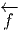(ωN) ∈ [ωM] et renverse l’orientation
si  (ωN) ∈ [-ωM].
(ωN) ∈ [-ωM].
Notre but, dans ce paragraphe, est d’introduire la notion d’intégration des formes différentielles. Comme d’habitude, on va commencer par définir cette notion pour l’espace numérique ℝn, puis, grâce à un système de cartes, on va pouvoir généraliser la construction au cas des variétés. On suppose le lecteur familier avec la notion d’intégrale (de Riemann) sur ℝn. Soit f une fonction (numérique) c’est-à -dire une fonction – que nous supposons différentiable – de ℝn à valeurs réelles. Nous supposons, de plus, que f est à support compact. Son intégrale est notée ∫ ℝnf ou ∫ ℝnf(x)dnx, comme d’habitude. Choisissons maintenant une orientation sur ℝn et considérons la n-forme

 ∧ dxn est une n-forme positive pour l’orientation choisie. On pose
simplement
∧ dxn est une n-forme positive pour l’orientation choisie. On pose
simplement

Notre étude générale des formes différentielles implique en particulier


 ω désigne l’image réciproque de ω, on voit que
ω désigne l’image réciproque de ω, on voit que  ω = ±∫
ω suivant que
T préserve ou non l’orientation : l’intégrale d’une n-forme est invariante sous le
groupe des difféomorphismes qui préservent l’orientation.
Passons maintenant au cas des variétés. Soit M une variété de dimension n et
ω une n-forme à support compact. Supposant la variété orientable, on choisit une
orientation [M] et une partition de l’unité {ρα}α∈I subordonnée à un atlas
{(Uα,φα)}α∈I, c’est-à -dire qu’on se donne une famille de fonctions différentielles
non négatives ρα telles que le support de ρα soit contenu dans Uα et
telles que ∑
ρα = 1 (chaque point de M doit posséder un voisinage dans
lequel la somme précédente est une somme finie). L’existence d’une telle
partition de l’unité, pour une variété différentiable, est un théorème
(que nous ne démontrons pas) qui permet, dans de nombreux cas, de
passer des résultats locaux (valables dans une carte) aux résultats globaux
(valables pour toute la variété M). On définit l’intégrale de ω sur [M] par
l’égalité
ω = ±∫
ω suivant que
T préserve ou non l’orientation : l’intégrale d’une n-forme est invariante sous le
groupe des difféomorphismes qui préservent l’orientation.
Passons maintenant au cas des variétés. Soit M une variété de dimension n et
ω une n-forme à support compact. Supposant la variété orientable, on choisit une
orientation [M] et une partition de l’unité {ρα}α∈I subordonnée à un atlas
{(Uα,φα)}α∈I, c’est-à -dire qu’on se donne une famille de fonctions différentielles
non négatives ρα telles que le support de ρα soit contenu dans Uα et
telles que ∑
ρα = 1 (chaque point de M doit posséder un voisinage dans
lequel la somme précédente est une somme finie). L’existence d’une telle
partition de l’unité, pour une variété différentiable, est un théorème
(que nous ne démontrons pas) qui permet, dans de nombreux cas, de
passer des résultats locaux (valables dans une carte) aux résultats globaux
(valables pour toute la variété M). On définit l’intégrale de ω sur [M] par
l’égalité
L’orientation étant choisie une fois pour toutes, on note ∫ M et non plus ∫ [M] l’intégrale correspondante. Il reste alors à démontrer que la définition adoptée ne dépend pas des cartes choisies. . .
On appelle élément de volume sur M (de dimension n) ou forme volume un élément quelconque ϵ de ΩnM. Le volume de M, supposée compacte, est alors égal, par définition, à ∫ Mϵ. Il faut bien noter que sur une variété quelconque (orientée), on intègre des n-formes, et non des fonctions, à moins, précisément, d’avoir choisi un élément de volume ϵ une fois pour toutes, auquel cas on peut évidemment poser ∫ Mf = ∫ Mfϵ où f ∈ C∞(M). Un cas particulièrement important à considérer est celui où la forme volume est associée canoniquement au choix d’une structure riemannienne (voir section 1.11) sur la variété en question.
En toute logique, cette section ne devrait pas se trouver dans ce premier chapitre consacré aux variétés différentielles. En effet, la définition de la structure de variété riemannienne est liée à un cas particulier de restriction d’espace fibré (les espaces fibrés font l’objet du chapitre 4). Cela dit, pour des raisons à la fois historiques et pédagogiques, il est sans doute préférable que le lecteur se familiarise d’ores et déjà avec certaines propriétés des variétés riemanniennes.
En géométrie élémentaire, on étudie d’abord les propriétés linéaires et affines et on passe, ensuite, aux notions métriques. Il en va de même dans l’étude des variétés. Une variété différentiable est encore un objet flasque et mou. . . la donnée d’une métrique rigidifie l’espace considéré et permet, d’une part, de parler de norme des vecteurs tangents et, d’autre part, de parler de distances entre points. La définition élémentaire d’une métrique g, sur une variété différentiable M, est la suivante : c’est un champ de tenseurs covariants symétriques de degré deux (en général on impose également une condition de non dégénérescence). Si {xμ} désigne un système de coordonnées locales, on écrira

Une variété différentiable munie d’une métrique (non dégénérée) est, par définition, une variété riemannienne. Nous n’avons pas imposé au produit scalaire défini par (gμv) d’être positif et nous ne l’imposerons pas. En général, une forme bilinéaire symétrique est caractérisée par sa signature (p,q) – le nombre de signes +(p) et de signes -(q) obtenus lorsqu’on la diagonalise. Si on tient à préciser que la signature est de type (p, 0) ou (0,p), on dira que la variété est proprement riemannienne. Si on tient à préciser que la signature est de type (p, 1) ou (1,p), on dira que la variété est lorentzienne (on dit aussi, dans ce dernier cas, que la signature est hyperbolique). Les cas riemanniens et lorentziens sont particulièrement importants en physique mais nous n’avons pas besoin de nous restreindre à ce cadre pour l’essentiel de ce qui suit.
∙ Pour une variété riemannienne (M,g) orientée, on peut définir une forme de
volume canonique de la façon suivante. Soit {e } un repère mobile orthonormal,
c’est-Ã -dire g(e,e
} un repère mobile orthonormal,
c’est-Ã -dire g(e,e ) = η
) = η 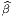, avec η
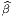, avec η 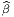 = ±δ
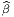 = ±δ
 , le signe ± dépendant de la signature
de la métrique. Pour l’instant nons pouvons supposer que l’espace est proprement
riemannien, et orienté, mais à la fin de cette section, nous verrons comment
compléter les propriétés qui suivent lorsque la signature de la métrique est
quelconque, et plus particulièrement lorsqu’elle est hyperbolique. Désignant par
{e
, le signe ± dépendant de la signature
de la métrique. Pour l’instant nons pouvons supposer que l’espace est proprement
riemannien, et orienté, mais à la fin de cette section, nous verrons comment
compléter les propriétés qui suivent lorsque la signature de la métrique est
quelconque, et plus particulièrement lorsqu’elle est hyperbolique. Désignant par
{e } le co-repère dual du repère mobile choisi, l’élément de volume riemannien
est
} le co-repère dual du repère mobile choisi, l’élément de volume riemannien
est
Soit {σα} un autre repère, non nécessairement orthonormal, et Λα la
matrice de passage, c’est-Ã -dire σα = Λα e
e . Alors gαβ = Λα
. Alors gαβ = Λα Λ
β
Λ
β g
g , ce qui
implique
, ce qui
implique
![det(g ) = [det(Λ^α)]2det(g ) et donc det (Λ ^α) = |detgαβ-|1∕2
αβ α ^αβ^ α detg^αβ^](source160x.png)
 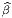)| = 1 puisqu’on a supposé la base {e
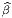)| = 1 puisqu’on a supposé la base {e } orthonormale et
donc
} orthonormale et
donc


En particulier, si {σα} désigne un repère naturel 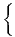 ∂ __
∂xμ , on a g = gμνdxμ ∧dxν
et
, on a g = gμνdxμ ∧dxν
et
∙ La métrique g permet également d’établir un isomorphisme canonique entre l’espace tangent TM et l’espace cotangent T*M. Cette propriété est évidente puisqu’en chaque point, l’existence d’un produit scalaire permet d’identifier les espaces vectoriels TP M avec TP *M. En d’autres termes, on peut “monter” et “descendre” les indices à l’aide de la métrique : au vecteur v = vμe μ on associe la 1-forme bv = v μeμ définie par v μ = gμνvν ( {eμ} désignant la base duale de {eμ}). Inversement, à la 1-forme σ = σμeμ on associe le vecteur ♯σ = σμe μ avec σμ = gμvσ ν. On peut écrire ⟨bv 1,v2⟩ = g(v1,v2) et ⟨σ, ,♯σ2⟩ = (σ1,σ2). Les isomorphismes ♭ et ♯ sont appelés isomorphismes musicaux (pour des raisons évidentes !).Cela dit, les physiciens choisissent en général une métrique une fois pour toutes et décident donc de passer sous silence ces isomorphismes musicaux. En d’autres termes, ils identifient v et ♭v ainsi que σ et ♯σ et écrivent tout simplement v = vμe μ = vμeμ ou σ = σ μeμ = σμe μ. Pour des raisons analogues ils écrivent g = gμveμ ⊗ eν = gμve μ ⊗ ev (mais il faut bien entendu se rappeler que (gμv) est la matrice inverse de (gμv). Les isomorphismes musicaux permettent, de la même façon, d’identifier les tenseurs covariants et contravariants de même rang . Attention, lorsqu’on n’utilise pas de métrique pour monter ou baisser les indices, il n’y a pas de raison de faire attention à la position relative des indices covariants et contravariants (par exemple, on peut parler de Tνρμ sans dire s’il s’agit de Tμ νρ, de Tνρμ ou de Tνμ ρ). Les trois types de composantes correspondent d’ailleurs à des objets différents puisque on travaille, suivant les cas, dans TM ⊗ T*M ⊗ T*M, T*M ⊗ T*M ⊗ TM ou T*M ⊗ TM ⊗ T*M. Par contre, si on utilise la métrique pour procéder à des identifications, il faut faire attention aux positions relatives des indices haut et bas ! Ainsi, par exemple, Tμνρ désignera gμμ′Tμ′ νρ. Tout ceci est assez trivial, mais peut être fallait-il le dire une fois ?
Lorsqu’on a choisi une métrique, on écrira donc abusivement (sans utiliser la notation ♭ et ♯), par exemple T = Tμvρeμ ⊗ev ⊗eρ = T μνρeμ ⊗e v ⊗eρ = Tμvρe μ ⊗ev ⊗eρ = …
Les isomorphismes musicaux sont quelquefois simplement désignés par le même symbole g que la métrique elle même, le nombre d’arguments permettant de décider si on parle des isomorphismes en question ou de la métrique. Par exemple, on peut noter g(eμ) = gμveν et g(eμ) = gμve ν. Ceci est en accord avec les notations précédentes puisque par exemple g(v) = g(vμe μ) = vμg(e μ) = vμg μveν = v veν.
Avec ces notations, nous avons alors g(v,w) = ⟨g(v),w⟩ = ⟨g(w),v⟩ = g(w,v).
∙ L’existence d’une métrique permet non seulement de calculer le produit scalaire de deux vecteurs (ou de deux 1-formes) mais de contracter n’importe quel tenseur d’ordre k covariant, contravariant ou partiellement covariant et contravariant avec n’importe quel autre tenseur d’ordre k. On utilisera encore la notation ⟨|⟩ pour écrire ces contractions de type assez général. Plutôt que de décrire les différents cas, il suffit de dire, en termes imagés, qu’on “monte” tous les indices du premier à l’aide de la métrique, qu’on “descend” tous les indices du second et qu’on contracte complètement les objets obtenus. Par exemple, si S = Sμνρeμ ⊗ eν ⊗ e ρ et T = Tμνρeμ ⊗ e ν ⊗ eρ on fabrique Sμvρ′ = gρ′ρSμvρ et Tμ′νρ = gμ′μT μνρ. On peut alors calculer ⟨S,T⟩ = SμνρT μνρ. En particulier, si {φ1,φ2,…,φk} désignent une famille de 1-formes et {ψ1,ψ2,…,ψk} en désigne une autre, on peut vérifier que cette définition conduit Ã
∙ Lorsque la signature de la métrique n’est pas proprement riemannienne, c’est à dire lorsqu’elle est de type (p,q), il faut supposer que la variété admet une orientation temporelle et qu’elle est temporellement orientée. Dans le cas usuel de l’espace-temps de la physique (signature (3, 1)), on utilisera des indices 0, 1, 2, 3, comme c’est l’usage, plutôt que 1, 2, 3, 4 ; on posera alors
 ) = (-1)q.
Les formules précédentes restent donc valables et on aura toujours, par
exemple,
) = (-1)q.
Les formules précédentes restent donc valables et on aura toujours, par
exemple,


 δα1α2…αn12…n, mais si
on “monte” ces indices (à l’aide de la métrique) le résultat va dépendre de la
signature, plus particulièrement du nombre q de signes “-” dans la métrique. On
obtient donc
δα1α2…αn12…n, mais si
on “monte” ces indices (à l’aide de la métrique) le résultat va dépendre de la
signature, plus particulièrement du nombre q de signes “-” dans la métrique. On
obtient donc

∙ Pour terminer, notons que l’existence d’une métrique permet d’associer à la différentielle df d’une fonction f, un champ de vecteurs, le gradient de f défini par gradf = ♯df. Ainsi, dans un repère naturel, on écrira
Encore une fois, la présente section consacrée aux variétés riemanniennes n’est destinée qu’à introduire certaines notations utiles et quelques notions élémentaires. Nous reviendrons plus en détail sur les variétés riemanniennes à la fin du chapitre consacré aux connexions.
Nous regroupons dans ce paragraphe un certain nombre de notions et de commentaires qui peuvent être considérés comme un peu moins élémentaires que ce qui précède ; cela ne signifie pas qu’ils sont moins “importants” mais simplement que nous utiliserons peu ou pas ces concepts dans la suite de l’ouvrage. On se contente donc ici de présenter quelques définitions de façon à suggérer au lecteur des lectures plus approfondies et à donner quelques idées intuitives.
L’ensemble des dérivations de l’algèbre associative se note Der. Rappelons
qu’une dérivation est une application linéaire v de A dans A telle que
v[fg] = v[f]g + fv[g] avec f,g ∈. Il est facile de voir que la somme
de deux dérivations est une dérivation, par contre le produit de deux
dérivations n’est pas une dérivation (dans les cas où on peut le définir,
c’est un opérateur du “second ordre” ). Il est intéressant de savoir si
l’opérateur w défini par w = hv avec h ∈ et v ∈ Der est, ou non, une
dérivation. En d’autres termes, on veut savoir si l’espace Der est stable
lorsqu’on multiplie (à gauche) ses éléments par des éléments de . Dans
l’affirmative, on dit que Der est un module sur . La réponse est oui, mais
seulement dans le cas où est commutative. En effet, prenons f et g dans .
Alors, (hv)[fg] = h(v[fg]) = h(v[f]g + fv[g]) = hv[f]g + hfv[g] mais
(hv)[f]g + f(hv)[g] = hv[f]g + fhv[g]. Ces deux expressions ne coïncident que si
hf = fh.
Conclusion : L’ensemble des dérivations d’une algèbre associative n’est pas, en
général, un module sur cette algèbre, sauf si cette cette dernière est commutative.
Il est facile de voir que Der est un module sur le centre de , centre qui peut
être assez petit...
Par contre, l’ensemble des dérivations est toujours une algèbre de Lie : on peut y définir une loi de composition interne (notée [, ]) non associative et anti-commutative ([u,v] = -[v,u]), qui vérifie l’identité suivante (l’identité de Jacobi) :
![[u,[v,w ]] + [v,[w, u]] + [w,[u,v]] = 0](source184x.png)
Rappelons que l’ensemble des champs de vecteurs sur une variété n’est autre que l’algèbre de Lie DerC∞(M).
Le fait que l’ensemble des dérivations de soit un module sur lorsque est
commutative admet une généralisation supersymétrique. Supposons que A soit
une algèbre ℤ2-graduée. Chaque élément a de peut donc s’écrire comme
somme d’un élément pair (#a = 0) et d’un élément impair (#a = 1). On définit
les dérivations graduées (ou super-dérivations ) des algèbres ℤ2-graduées comme
les dérivations usuelles, mais en introduisant un signe. On dit qu’une
super-dérivation est paire si c’est une dérivation, au sens usuel du terme. On dit
qu’une super-dérivation est impaire si c’est une application linéaire de A dans A
telle que v[fg] = v[f]g + (-1)#ffv[g]. On introduit donc alors une ℤ
2 graduation
pour les super-dérivations et on réunit les deux types de formules de la façon
suivante :
![|-----------------------------|-
v[fg] = v[f]g + (- 1 )#v#f fv[g]
--------------------------------](source185x.png) . En pratique, il suffit d’utiliser la règle dite “Règle de Milnor”
disant qu’il faut introduire un signe “-” chaque fois qu’on doit commuter deux
éléments impairs.
. En pratique, il suffit d’utiliser la règle dite “Règle de Milnor”
disant qu’il faut introduire un signe “-” chaque fois qu’on doit commuter deux
éléments impairs.
L’ensemble des super-dérivations d’une algèbre A ne constitue pas, en général,
un module sur , sauf lorsque est commutative graduée (on dit aussi
super-commutative ), c’est à dire lorsque fg = (-1)#f#ggf. Par contre l’ensemble
des dérivations graduées constitue toujours un module sur le super-centre de
(l’ensemble des éléments de qui commute – au signe près – avec ) et il
constitue également une super-algèbre de Lie , c’est à dire que les dérivations
graduées super-anticommutent :
Nous avons vu que l’opérateur d satisfait d2 = 0 et envoie ΩkM dans Ωk+1M. Soit Zk le noyau de d, c’est-à -dire Zk = {ω ∈ ΩkM tq dω = 0}. Les éléments de Zk sont appelés cocycles de De Rham de degré k (ou formes fermées). Soit Bk l’image par d de Ωk-1M dans ΩkM, c’est-à -dire Bk = {ω ∈ ΩkM tq ∃τ ∈ Ωk-1 avec ω = dτ}. Les éléments de Bk sont les cobords de De Rham de degré k ou formes exactes . Le fait que d2 = 0 implique l’inclusion Bk ⊂ Zk.
Il résulte de la linéarité de d que Zk et Bk sont stables par addition, ce sont donc des groupes abéliens ; on peut alors considérer le groupe quotient Hk = Zk∕Bk qu’on appelle groupe de cohomologie (de De Rham) de degré k. On peut calculer, pour toute variété, les groupes H0,H1,…,Hn. Ces groupes fournissent, en quelque sorte une “mesure” de la non-trivialité de la topologie de la variété M. En effet, tous ces groupes sont triviaux (se réduisent à l’élément neutre 0) dans le cas de l’espace numérique ℝn, ce que le lecteur sait déjà puisque, dans un autre contexte, celui de la théorie des équations différentielles sur ℝn, on montre de façon élémentaire que, pour résoudre une équation df = 0, il faut poser f = dg (Lemme de Poincaré).
La définition de l’homologie de De Rham est plus délicate que celle de la cohomologie. De façon à en donner une image intuitive, disons qu’on s’intéresse à des “morceaux” de la variété M (comptés possiblement avec multiplicité). Un tel morceau C (techniquement une chaîne ) peut avoir un bord (le bord d’un disque est un cercle) ou pas de bord (le bord d’un cercle est nul). On peut formellement additionner les chaînes (avec des coefficients réels, dans le cas présent). On définit alors un opérateur bord ∂, de carré nul lui aussi (∂2 = 0, le bord d’un bord est nul) et on peut considérer les cycles (chaînes C dont le bord ∂C est nul) et les bords (chaînes C qui sont le bord de quelque chose C = ∂D).
Tous les bords étant des cycles, on peut là aussi considérer les cycles Zk de dimension k modulo les bords Bk et définir les groupes d’homologie Hk = Zk∕Bk. De façon générale, on parle de cohomologie lorsqu’on a un opérateur de carré nul (tel d) dont l’action sur un espace vectoriel ℤ-gradué fait croître le degré d’une unité et d’homologie lorsqu’on a un opérateur de carré nul (tel ∂) dont l’action fait décroître le degré.
Paradoxalement, la définition de d est plus simple que celle de ∂ (nous avons passé cette dernière sous silence) alors que l’action de ∂ est plus intuitive, plus “visuelle” que celle de d. Le lien entre les deux est fournit par le théorème de Stokes : de façon générale on peut intégrer les k-formes sur les k-chaînes et on a la propriété
 .d
.d = ∫
V div
= ∫
V div dτ où la surface Σ est le bord du
volume V et où l’intégrale représente le “flux sortant” du champ électrique
dτ où la surface Σ est le bord du
volume V et où l’intégrale représente le “flux sortant” du champ électrique
 .
La dualité entre homologie et cohomologie s’écrit très simplement dans le cas
des variétés compactes ; dans ce cas, on démontre que Hk est isomorphe Ã
Hn-k où n est la dimension de la variété. Le support visuel intuitif suffit,
en dimension 2, pour calculer l’homologie (et donc la cohomologie) de
quelques variétés très simples. C’est ainsi que, pour la sphère S2 on a
H0(S2) = H
2(S2) = ℝ et H
1(S2) = 0 (tout cercle tracé sur la sphère est le bord
de quelque chose), alors que pour le tore T2, on a H
0(T2) = H
2(T2) = ℝ mais
H1(T2) = ℝ ⊕ ℝ : les deux générateurs de H
1(T2) correspondent respectivement
aux deux types de cercles qu’on peut tracer sur un tore et qui ne “bordent”
rien, c’est-Ã -dire “ceux qui font un tour”. On appelle nombres de Betti
de la variété M, la dimension bp de Hp(M) considéré comme espace
vectoriel.
.
La dualité entre homologie et cohomologie s’écrit très simplement dans le cas
des variétés compactes ; dans ce cas, on démontre que Hk est isomorphe Ã
Hn-k où n est la dimension de la variété. Le support visuel intuitif suffit,
en dimension 2, pour calculer l’homologie (et donc la cohomologie) de
quelques variétés très simples. C’est ainsi que, pour la sphère S2 on a
H0(S2) = H
2(S2) = ℝ et H
1(S2) = 0 (tout cercle tracé sur la sphère est le bord
de quelque chose), alors que pour le tore T2, on a H
0(T2) = H
2(T2) = ℝ mais
H1(T2) = ℝ ⊕ ℝ : les deux générateurs de H
1(T2) correspondent respectivement
aux deux types de cercles qu’on peut tracer sur un tore et qui ne “bordent”
rien, c’est-Ã -dire “ceux qui font un tour”. On appelle nombres de Betti
de la variété M, la dimension bp de Hp(M) considéré comme espace
vectoriel.
Nous avons choisi de développer la notion de produit extérieur en partant du fibré cotangent , c’est-à -dire que nous avons considéré des produits tensoriels complètement antisymétriques de vecteurs covariants. Ceci nous a amené au concept de forme différentielle. Nous aurions pu faire de même en partant des vecteurs contravariants. Le formalisme est très semblable et les objets contravariants Ωp(M) correspondant aux formes différentielles Ωp(M) sont simplement baptisées “p-vecteurs”. On peut alors bien entendu évaluer une p-forme sur un p-vecteur, le résultat étant une fonction sur M.
Le lecteur est sans doute déjà familier avec la notion de distribution. Pour les fonctions numériques sur un compact de ℝn les distributions sont définies comme dual des fonctions infiniment différentiables. Cet espace contient d’une part des éléments “réguliers” mais aussi toutes les mesures (en particulier la mesure de Dirac) et même des objets encore plus singuliers (les dérivées de la distribution de Dirac par exemple). On peut généraliser la théorie des distributions aux formes différentielles de degré quelconque sur une variété ; on définit ce qu’on appelle l’espace des courants de De Rham comme dual (sur ℝ) des formes différentielles. L’évaluation d’un courant C sur une forme ω est donc un nombre ⟨C,ω⟩. Si la variété M est compacte et si ω est une k-forme, un élément “régulier” peut être représenté par une n - k forme σ puisque l’évaluation de l’intégrale ∫ Mσ ∧ ω est bien une fonctionnelle linéaire. L’intégration d’une forme sur une chaîne (théorie de l’homologie), l’évaluation d’un p-vecteur sur une p-forme suivie de l’intégration sur M de la fonction obtenue, fournissent aussi des exemples de courants de De Rham. La théorie de l’homologie de De Rham (opérateur ∂) se généralise d’ailleurs au cadre des courants et le théorème de Stokes s’écrit dans ce cas ⟨∂C,ω⟩ = ⟨C,dω⟩.
Nous savons que l’algèbre de De Rham Ω(M), munie du produit extérieur, est une algèbre commutative graduée.
Nous savons aussi que l’ensemble des dérivations graduées d’une algèbre commutative graduée constitue une super-algèbre de Lie pour laquelle le crochet de Lie est donnée par le commutateur (gradué) que nous noterons simplement [.,.].
En conséquence Der(Ω(M)) est une algèbre de Lie graduée. Reste à identifier explicitement les éléments de cette algèbre.
Tout d’abord, puisque Ω(M) est ℤ-graduée, on dira qu’une dérivation est de degré p (qui peut être positif, négatif ou nul) si elle fait passer de Ωk(M) à Ωk+p(M). On notera Der p(Ω(M)) l’espace des dérivations de degré p. La dérivée extérieure est elle-même un élément de Der1(Ω(M).
Soit Ω(M,TM) l’espace des formes différentielles sur M à valeurs dans le fibré tangent, c’est à dire Ωk(M,TM) = Γ(ΛkT*M ⊗ TM). Une k-forme K à valeurs vectorielles s’écrira, dans un repère naturel,

Un résultat du à Richardson et Nijenhuis montre que l’algèbre de Lie graduée des dérivations (graduées) de l’algèbre de De Rham Ω(M) peut s’identifier à deux copies de Ω(M,TM) munies de deux crochets différents, connus respectivement sous le nom de crochet de Nijenhuis-Richardson et crochet de Frölicher-Nijenhuis. Plus précisément, pour tout toute dérivation D, de degré k de l’algèbre Ω(M) on peut trouver un unique K ∈ Ωk(M,TM) et un unique L ∈ Ωk+1(M,TM) tels que
Il se trouve que les éléments de Ω(M,TM) peuvent en effet agir par dérivation sur Ω(M), et ce, de deux façons distinctes.
La première consiste en une généralisation du produit intérieur. Au lieu de considérer le produit intérieur d’une forme par un vecteur, on remplace le vecteur par une k-forme à valeurs vectorielles. En effet, soit K ∈ Ωk(M,TM), L ∈ Ωl(M,TM) et ω une forme différentielle de degré q sur M. On va définir i Kω, qui sera une forme différentielle de degré k + (q - 1) (la partie “champ de vecteurs” présente dans K fait passer de q à q - 1 mais les k indices de forme demeurent). Soient Xi i ∈{1, 2,…,k + (q - 1) des champs de vecteurs. On pose

La deuxième façon d’agir consiste en une généralisation de la dérivée de Lie. Soit encore K ∈ Ωk(M,TM). On définit K par
![k-1
LK = [iK ,d] = iK d - (- 1) diK](source198x.png)
![[α ⊗ X, β ⊗ Y ]FN = α ∧ β ⊗ [X, Y ] + α ∧ LX β ⊗ Y
- L α ∧ β ⊗ X + (- 1)#α(dα ∧ i β ⊗ Y + i α ∧ dβ ⊗ X )
Y X Y](source200x.png)
Les groupes de Lie et les espaces homogènes fournissent une multitude d’exemples particulièrement simples de variétés différentiables et c’est une des raisons pour lesquelles nous leur consacrons une section de cet ouvrage. Une autre raison importante est que les groupes de Lie vont être utilisés comme “outils” dans les chapitres suivants.
Chacun est censé être déjà familier avec la notion de structure de groupe. L’introduction aux groupes et leur utilisation dans toutes les branches de la physique est un thème présenté et étudié, suivant les années et les réformes de l’enseignement secondaire, entre la classe de quatrième et les années de Licence... Rappelons donc qu’un groupe est un ensemble (fini ou infini) muni d’une loi de composition interne associative, possédant un élément neutre, et tel que tout élément possède un symétrique pour la loi en question. Du point de vue du calcul, notons que, dans un groupe, il est toujours possible de résoudre une équation du premier degré (du type ax = b, la solution étant x = a-1b). Les exemples les plus simples habituellement présentés aux élèves de nos lycées sont les suivants : Le groupe (ℤ, +) des entiers relatifs, les groupes (additif et multiplicatif) de nombres rationnels (Q, +) et (Q -{0},×) ainsi que leurs généralisations réelles et complexes, les groupes de congruence ℤp = ℤ∕pℤ, les groupes de symétrie des solides platoniques, les groupes de transformations linéaires, affines ou projectives et les groupes de substitutions. Les groupes ne sont pas nécessairement commutatifs, comme les derniers exemples le montrent clairement. Les groupes peuvent être finis (comme ℤ∕pℤ), infinis mais discrets (comme ℤ) ou infinis et “continus” (comme ℝ ou comme le groupe U(1) des rotations autour d’un axe). Regardons ce dernier exemple d’un peu plus près. Toute rotation autour d’un axe est parfaitement caractérisée par un angle θ compris entre 0 et 2π ; de surcroît, les rotations d’angle 0 et 2π sont identiques. En d’autres termes, on peut considérer les rotations en question comme les différents points d’un cercle S1 de rayon quelconque, l’élément neutre (c’est à dire la rotation d’angle nul) étant un point marqué de ce cercle S1. Ceci nous fournit un image “visuelle” de ce groupe U(1), image qui peut nous faire oublier momentanément la structure algébrique proprement dite de cet ensemble (un groupe) mais qui attire notre attention sur sa structure topologique ou même différentiable (un cercle). La notion de groupe de Lie généralise ce dernier exemple en juxtaposant de façon axiomatique la structure de groupe et celles de variété.
Par définition, un groupe de Lie G est donc une variété différentiable munie d’une structure de groupe, de façon à ce que les deux structures soient compatibles, c’est à dire de façon à ce que la multiplication 1 et le passage à l’inverse soient des applications différentiables. Notons que la multiplication est une application de G×G dans G alors que le passage à l’inverse est une application de G dans G. Le lecteur pourra visuellement se représenter un groupe de Lie comme un “patatoïde” avec multiplication (entre points) et origine marquée (voir 2.1).
La dimension d’un groupe de Lie est, par définition, sa dimension en tant que variété (nous verrons de nombreux exemples un peu plus loin) ; notons dès à présent que le groupe U(1) présenté plus haut est de dimension 1.
On désigne par M(n, ℂ) l’algèbre (de dimension complexe n2) des matrices carrées d’ordre n à coefficients complexes et par a† l’adjointe d’une matrice a de M(n, ℂ) (si a = (aij), alors a† = (a ji)). L’ensemble précédent n’est certes pas un groupe pour la loi de multiplication des matrices puisqu’il contient de nombreux éléments non inversibles (toutes les matrices de déterminant nul) mais il contient plusieurs sous-ensembles intéressants qui, eux, sont bien des groupes multiplicatifs, comme on pourra le vérifier aisément.
Notons que les éléments de U(n) ont automatiquement un déterminant (un nombre complexe) de module 1, puisque deta† = deta = 1∕deta, mais pas nécessairement égal à 1.
Les groupes précédents sont définis comme groupes de matrices ; les entrées de ces matrices (les “éléments de matrice”) sont des nombres qui peuvent être réels mais sont généralement complexes. Si on impose à ces éléments de matrice d’être réels, on obtient de nouveaux groupes. Soit M(n, ℝ) l’algèbre (de dimension réelle n2) des matrices carrées d’ordre n à coefficients réels. Cet ensemble, comme M(n, ℂ) est une algèbre associative mais n’est pas un groupe multiplicatif. On définit
Les éléments du groupe unitaire ayant un déterminant de module 1, ceux de O(n, ℝ) auront un déterminant égal à -1 ou à 1 ; ceux pour lesquels il est précisément égal à 1 constituent le groupe SO(n, ℝ). On désigne par 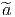 la transposée d’une matrice a de M(n, ℝ).
Une algèbre de Lie 𝔤 sur un corps commutatif K est un ensemble qui est, d’une part un espace vectoriel sur K (sa loi de groupe abélien est notée + et sa loi externe sur K est notée multiplicativement), de dimension finie ou non, et qui, d’autre part, est muni d’une loi de composition interne –non associative– généralement notée [,] vérifiant les propriétés suivantes
On suppose également vérifiée la linéarité par rapport aux scalaires, c’est à dire [αX,Y ] = [X,αY ] = α[X,Y ] si α ∈ K. La loi [,] est généralement désignée sous le nom de “crochet de Lie”. Dans toute la suite, le corps K coïncidera avec le corps ℂ des nombres complexes.
Soit une algèbre associative ; on peut lui associer canoniquement
une algèbre de Lie en définissant le crochet de Lie de la façon suivante
(auquel cas le crochet de Lie peut également être désigné sous le nom de
commutateur) :
![X, Y ∈ A → [X, Y ] = XY - Y X](source203x.png)
Supposons que 𝔤, en tant qu’espace vectoriel sur le corps des complexes ℂ soit de dimension finie n et soit {Xα}α∈{1…n} une base de 𝔤. Le crochet de Lie [Xα,Xβ] de deux vecteurs de base est a priori un élément de 𝔤 et peut donc se développer sur la base choisie :
![γ
[X α,X β] = C αβX γ](source204x.png)
On désigne par exp : α →∑ p=0∞αp∕p! l’application exponentielle définie sur M(n, ℂ). Posons g = eA. Il est facile de voir que
△ ATTENTION : On n’a pas dit que tout élément de GL(n, ℂ) pouvait être atteint par la fonction exp (c’est faux !).
Soit G un groupe de Lie défini comme sous-ensemble de M(n, ℂ). On définit son algèbre de Lie notée 𝔤 ou LieG comme suit,

La définition ci-dessus de l’algèbre de Lie d’un groupe G semble un peu restrictive en ce sens qu’elle semble ne pouvoir s’appliquer qu’aux groupes de matrices, mais il existe une définition plus abstraite de la notion d’algèbre de Lie d’un groupe de Lie, définition ne faisant pas l’hypothèse d’une réalisation matricielle ; nous y reviendrons plus loin.
Soient g et h deux éléments de G et supposons qu’on puisse écrire g = etA et h = etB avec A,B ∈ 𝔤. Tout d’abord, notons que g-1 = e-tA. On peut alors considérer le commutateur de g et h au sens de la théorie des groupes, c’est à dire l’élément c = ghg-1h-1 de G. Au second ordre en t, il vient
![tA tB -tA - tB
c = e e e e
= (1 + tA + t2A2∕2! + ...)(1 + tB + t2B2 ∕2! + ...)
2 2 2 2
(1 - tA + t A ∕2! + ...)(1 - tB + tB ∕2! + ...)
= 1 + 0t + t2[A, B ] + O (t3)](source207x.png)
 1 + t2[A,B]). De plus, on peut démontrer
que
1 + t2[A,B]). De plus, on peut démontrer
que
Soit g ∈ G et supposons qu’on puisse écrire g = eA ; alors, en utilisant la structure d’espace vectoriel de LieG, on voit qu’on peut décomposer A sur une base {Xα} ;ainsi, A = ∑ aαX α. Les n nombres aα permettent donc de définir sur G un système de coordonnées (une carte). Ceci montre également que la dimension de G, en tant que variété, est égale à celle de LieG, considéré comme espace vectoriel.
Notons d’abord que, pour les groupes unitaires,

Nous avons déjà rencontré la relation deteA = eTrA ; il s’ensuit que, si le déterminant de g = eA est égal à 1, la trace de A est nulle. Ainsi,
![A †
e ∈ SU (n) ⇐⇒ [A + A = 0 et T rA = 0]](source211x.png)
![t
eA ∈ O (n) ⇐ ⇒ [eAeA = 1 et A r´eel] ⇐ ⇒ [A + At = 0 et A r´eel]](source212x.png)
Pour calculer la dimension des groupes de Lie, le plus simple est en général de calculer la dimension des algèbres de Lie correspondantes. Voici un exemple que lecteur pourra généraliser sans peine : “Fabriquons” une matrice carrée antihermitienne. Une matrice n × n dépend, a priori, de n2 paramètres complexes ; nous enlevons d’abord la diagonale (donc il reste n2 - n paramètres), puis nous fabriquons une matrice triangulaire inférieure stricte (donc (n2 - n)∕2 paramètres) ; la partie triangulaire supérieure est alors complètement déterminée par la condition d’anti-hermiticité ; finalement, cette même condition implique que les éléments diagonaux sont imaginaires purs : il nous faut donc rajouter n paramètres réels. Au total, on a donc 2(n2 - n)∕2 + n = n2paramètres réels. Ainsi donc dimRU(n) = dimRLieU(n) = n2.
Le lecteur pourra sans doute ainsi retrouver sans difficulté la dimension des algèbres de Lie suivantes. Remarque : La notation Sp(n) utilisée ci-dessous désigne le groupe unitaire-quaternionique (voir “remarques diverses” en fin de section 2 concernant les groupes symplectiques) ; les matrices de l’algèbre de Lie correspondante sont du type 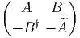 avec A† = -A et 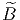 = B.
| G | LieG | dimℝG |
| GL(n, ℂ) | M(n, ℂ) | 2n2 |
| GL(n, ℝ) | M(n, ℝ) | n2 |
| U(n) | Matrices anti-hermitiennes | n2 |
| SU(n) | Matrices anti-hermitiennes de trace nulle | n2 - 1 |
| SO(n) | Matrices antisymétriques réelles |  |
| Sp(n) | Voir ci-dessus | 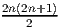 |
Remarques
Même si G est connexe, l’application exp n’est pas nécessairement surjective. Par contre, on démontre que si G est compact et connexe, cette application est surjective (c’est le cas de U(n), SU(n), SO(n) et Sp(n)). Si G est connexe mais non compact, on démontre que exp est “presque” surjective, en ce sens que

Nous avons déjà vu (dans le cas du groupe orthogonal O(n)) que les éléments d’un groupe n’appartenant pas à la composante connexe de l’identité ne pouvaient pas être atteints par la fonction exponentielle. Pour cette raison, nous supposerons que tous les groupes de Lie considérés dans la présente sous-section sont connexes (cas de SO(n)). Nous nous intéressons en effet ici à des phénomènes plus fins que la connexité.

![[Xi, Xj] = - ϵijkXk](source219x.png)

![exp[(θ + 2π)X3 ] = - exp[θX3 ]
exp[(θ + 4π)X3 ] = + exp[θX3 ]](source221x.png)

![[Xi, Xj] = - ϵijkXk](source223x.png)
![exp [θX3 ] = diag(cosθ, cosθ,1) + X3 sin θ ∈ SO (3)](source224x.png)
![exp[(θ + 2π)X3 ] = + exp[θX3 ]](source225x.png)
Expérience utilisant SO(3) : Prenez un objet quelconque, posez-le sur la table et faites-lui subir une rotation de 360 degrés autour d’un axe vertical ; la configuration que vous obtenez est indiscernable de la configuration initiale.
Expérience utilisant SU(2) : Prenez un objet quelconque, suspendez-le au milieu de la pièce en utilisant huit élastiques reliés aux huit coins (haut et bas) de la pièce (vous pouvez utiliser un moins grand nombre d’élastiques !) et faites subir à votre objet une rotation de 360 degrés ; notez que les élastiques sont emmêlés ; essayez de démêler les élastiques sans faire tourner l’objet… vous n’y parvenez pas. Faites alors subir à votre objet une seconde rotation de 360∘ (depuis la configuration initiale vous aurez ainsi effectué une rotation de 4π = 720∘) ; les élastiques semblent être encore plus emmêlés ; essayez de démêler ces élastiques (retrouver la configuration initiale) sans faire tourner l’objet… A votre grande surprise (même si vous avez fait cette expérience plusieurs fois) vous y parvenez !
Remarque : Si vous avez vraiment des difficultés à démêler les élastiques, ouvrez l’ouvrage [5] où la suite des mouvements à effectuer est décrite en détails.
Il existe une autre expérience, encore plus simple, mais un peu plus difficile à décrire “avec des mots”, qui illustre la même différence de comportement entre les deux groupes et qui illustre donc la façon dont SU(2) décrit les “rotations d’objets attachés à leur environnement”. Prenez un verre (rempli de votre vin favori) et essayez, par pivot du poignet, de lui faire subir une rotation de 360∘… échec : à moins d’avoir des articulations très spéciales, vous vous retrouvez tout tordu. Essayez alors, à partir de cette position (tordue) de faire subir à votre verre une seconde rotation, dans le même sens, de 360∘ (le coude doit normalement s’abaisser) et ça marche : Vous vous retrouvez dans l’état initial !
Ce phénomène amusant est d’une importance physique capitale. C’est lui qui, en définitive, explique la différence entre fermions et bosons (rappelons que les électrons — et plus généralement les particules de spin demi-entier — obéissent à la statistique de Fermi-Dirac alors que les photons (ou les noyaux d’Hélium !) — et plus généralement les particules de spin entier — obéissent à la statistique de Bose-Einstein.
On admettra le résultat suivant. Deux groupes compacts connexes non isomorphes peuvent admettre des algèbres de Lie isomorphes (on dit qu’il s’agit de groupes localement isomorphes). Les groupes de Lie qui admettent la même algèbre de Lie 𝔤 sont tous de la forme Gi = G∕Di où Di est un sous-groupe discret distingué de G. Le sous-groupe Di est isomorphe au groupe fondamental de Gi (i.e. au premier groupe d’homotopie π1(Gi)) et le groupe G est simplement connexe (ce qui signifie que son sous-groupe fondamental est réduit à l’identité). G et est appelé revêtement universel de Gi. On note quelquefois G = 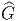i
| SU(2) et SO(3) = SU(2)∕ℤ2 | π1(SU(2)) = 1 | π1(SO(3)) = ℤ2 |
| SU(3) et SU(3)∕ℤ3 | π1(SU(3)) = 1 | π1(SU(3)∕ℤ3) = ℤ3 |
| ℝ et U(1) = ℝ∕ℤ | π1(ℝ) = 1 | π1(U(1)) = ℤ |
On a bien entendu une terminologie analogue au niveau des groupes.
 ,
,  ,
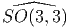 et 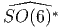 sont non compacts. L’algèbre de Lie réelle unique
dont l’exponentielle constitue un groupe de Lie compact s’appelle
forme réelle compacte de l’algèbre de Lie complexe donnée (bien que,
stricto sensu cette algèbre possède évidemment une topologie non
compacte puisqu’il s’agit d’un espace vectoriel !).
,
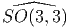 et 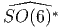 sont non compacts. L’algèbre de Lie réelle unique
dont l’exponentielle constitue un groupe de Lie compact s’appelle
forme réelle compacte de l’algèbre de Lie complexe donnée (bien que,
stricto sensu cette algèbre possède évidemment une topologie non
compacte puisqu’il s’agit d’un espace vectoriel !).
 , on associe
alors une famille de groupes de Lie Gi connexes, mais non simplement
connexes en quotientant
, on associe
alors une famille de groupes de Lie Gi connexes, mais non simplement
connexes en quotientant  par un sous-groupe distingué discret Ki
(voir la sous-section précédente) : Gi =
par un sous-groupe distingué discret Ki
(voir la sous-section précédente) : Gi =  ∕Ki. On a π1(Gi) = Ki et
∕Ki. On a π1(Gi) = Ki et
 est le revêtement universel des Gi. Par exemple, on obtient ainsi
SO(6) =
est le revêtement universel des Gi. Par exemple, on obtient ainsi
SO(6) =  ∕ℤ2 (rappelons la notation consacrée : Spin(n) =
∕ℤ2 (rappelons la notation consacrée : Spin(n) =
 ).
).

Au niveau des groupes compacts correspondants, on obtient donc les isomorphismes
Citons enfin quelques isomorphismes concernant les groupes non compacts. Spin↑(p,q) désigne ici la composante connexe de l’identité dans Spin(p,q) :

Un tout dernier mot : passer en revue “l’essentiel” de la théorie des groupes de Lie en une seule section – même en se limitant aux généralités et aux problèmes de classification – est certainement une tâche impossible. Un ouvrage entier serait d’ailleurs insuffisant. Nous n’avons fait qu’aborder le sujet. Vouloir dresser la liste de ce qui n’a pas été effleuré serait à la fois inutile et… incomplet ! Voici donc le message le plus important destiné à notre lecteur néophyte : La section qui s’achève ici ne doit pas être considérée comme un résumé, mais comme une invitation au voyage…
L’étude des groupes pour eux-mêmes ne devrait pas nous faire oublier un fait essentiel : un groupe sert surtout à agir sur “quelque chose”. Historiquement, d’ailleurs, on définissait le plus souvent les groupes comme “groupes de transformations”, pour s’apercevoir, après coup, du fait que deux groupes de transformations pouvant sembler très différents de prime abord, ne constituaient, en fait, qu’un seul et même groupe “abstrait”, agissant de deux façons différentes sur deux espaces différents. Pour préciser cette notion d’action ainsi que pour décrire la façon dont un groupe G agit sur un ensemble M, il est utile d’introduire un vocabulaire approprié.
A tout élément g de G et à tout élément x (on dira “point”) de E, on associe un point y de E qu’on appelera image de x par la transformation g. On écrira

Pour définir une action quelconque, nous avons simplement supposé que Lg était une bijection, mais on peut contraindre davantage la situation en imposant à Lg d’être un homéomorphisme (E étant alors supposé muni d’une topologie), un difféomorphisme (E étant une variété différentiable), etc . On parle alors d’action continue, différentiable, etc .
On dit que G agit à droite sur E si on se donne un anti-homomorphisme R de G dans l’ensemble des substitutions de E. En d’autres termes, on remplace la condition Lg1g2 = Lg1Lg2 par la condition Rg1g2 = Rg2Rg1. Une action à droite n’est donc pas une action, au sens strict du terme, mais une anti-action. De façon à pouvoir se débarrasser du symbole R, mis pour Right, on notera y = xg au lieu de y = Rg(x). L’écriture de g, à droite de x permet de composer correctement les transformations sans qu’il y ait besoin de parenthèses : Rg1g2(x) = Rg2Rg1(x) implique en effet x(g1g2) = (xg1)g2.
Supposons donnée une action à droite R de G sur E ; on peut canoniquement lui associer une action à gauche L en définissant Lgx = Rg-1x ; c’est à dire encore, avec des notations plus dépouillées, gx = xg-1. On peut ainsi toujours passer de la droite à la gauche et inversement. Cela dit, il est, quelquefois, dangereux d’effectuer ce passage sans notations protectrices… En effet, prenons par exemple E = G lui-même ; on n’a alors certainement pas g.k = k.g-1 dans le groupe G ! Une telle expression devrait donc s’écrire g × k = k.g-1 et s’interpréterait, non comme une égalité dans G mais comme une expression définissant, à partir de la multiplication “.” une nouvelle multiplication “×” (qu’on appelle dailleurs la “multiplication opposée”).


L’action de G sur E est dite transitive s’il n’existe qu’une seule orbite, en d’autres termes, s’il est possible de passer de n’importe quel point de E à n’importe quel autre point à l’aide d’un élément de G.

 H de H dans G est l’ensemble des
éléments de G qui commutent (élément par élément) avec ceux de
H :
H de H dans G est l’ensemble des
éléments de G qui commutent (élément par élément) avec ceux de
H :
 de H dans G (que nous notons également H
pour pr̩ciser) est bien ̩videmment un sous-groupe Рnon n̩cessairement
ab̩lien Рde G. Il nous faut ̩galement rappeler la d̩finition du
centre d’un groupe G qui n’est autre que le centralisateur de G dans
lui-même. Bien entendu, le sous-groupe H possède lui-même son propre
centre CH et on a CH ⊂ ZH.
de H dans G (que nous notons également H
pour pr̩ciser) est bien ̩videmment un sous-groupe Рnon n̩cessairement
ab̩lien Рde G. Il nous faut ̩galement rappeler la d̩finition du
centre d’un groupe G qui n’est autre que le centralisateur de G dans
lui-même. Bien entendu, le sous-groupe H possède lui-même son propre
centre CH et on a CH ⊂ ZH.
Dans toute cette sous-section on considère un groupe G agissant sur E de façon fidèle.
Afin de se familiariser avec les concepts qui précèdent ainsi qu’avec la terminologie correspondante, nous suggérons très fortement au lecteur de revoir toute la géométrie élémentaire (celle étudiée dans les classes secondaires) en ces termes, c’est à dire en utilisant l’action des groupes de translations, rotations, homothéties, etc . Il pourra être également extrêmement utile de revoir la cinématique classique (puis la cinématique relativiste) sous cet angle, en étudiant l’action du groupe Euclidien, celle du groupe de Galilée, du groupe de Lorentz etc .


Attention : Une action à gauche fournit une application notée Lg quand on
gèle l’élément g du groupe mais fournit une application notée
RP quand on gèle le point P. L’application Lg n’est autre que
celle qui nous a permis précédemment de définir l’action d’un
groupe sur un ensemble. Notons que Lg = L(g,⋅). C’est en fait
surtout le point de vue 2 qui nous intéresse ici et nous allons donc
étudier l’application RP = L(⋅,P). L’application RP étant supposée
différentiable, nous pouvons considérer sa différentielle notée suivant les
auteurs, RP *, TRP ou simplement dRP . Comme on le sait (voir la
première partie de cet ouvrage), dRP est une application linéaire
de l’espace tangent T(G,g) dans l’espace tangent T(M,gP) dont
l’expression, relativement à un couple de repères mobiles dans G et M
s’écrit à l’aide de la matrice jacobienne. Si on choisit alors g = e
(l’élément neutre de G), on obtient ainsi une application linéaire
T(G,e) T(M,P) qu’on devrait noter (dRP )g=e mais que nous
préférons ne pas baptiser du tout. L’important est d’observer qu’on
obtient ainsi, pour tout vecteur X appartenant à T(G,e) un vecteur
noté XL(P) appartenant à T(M,P). Puisque cette application
existe pour tout P de M, on obtient donc un champ de vecteurs
P ∈ M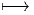XL(P) ∈ T(M,P). On dit que XL est le champ de vecteurs
fondamental gauche associé à l’élément X de l’espace tangent à G en
l’identité.
T(M,P) qu’on devrait noter (dRP )g=e mais que nous
préférons ne pas baptiser du tout. L’important est d’observer qu’on
obtient ainsi, pour tout vecteur X appartenant à T(G,e) un vecteur
noté XL(P) appartenant à T(M,P). Puisque cette application
existe pour tout P de M, on obtient donc un champ de vecteurs
P ∈ M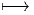XL(P) ∈ T(M,P). On dit que XL est le champ de vecteurs
fondamental gauche associé à l’élément X de l’espace tangent à G en
l’identité.


Le groupe euclidien E(2) agit sur le plan affine M = ℝ2 par composition de translations et de rotations autour de l’origine (c’est un produit semi-direct du groupe des rotations U(1) par le groupe des translations ℝ2). Une carte (qui est d’ailleurs globale) de ℝ2 est définie par les coordonnées (x,y) relatives à un repère du plan. L’action du groupe euclidien s’écrit

 . Grâce à l’utilisation de
quelques abus de notations évidents, nous voyons que
. Grâce à l’utilisation de
quelques abus de notations évidents, nous voyons que
 est
est
Xθ(P) = 
 =
=  et donc Xθ(P) = x ∂_
∂y - y ∂ _
∂x
et donc Xθ(P) = x ∂_
∂y - y ∂ _
∂x
 est
est
Xa(P) = 
 = et donc Xa(P) = ∂ _
∂x
= et donc Xa(P) = ∂ _
∂x
 est
est
Xb(P) = 
 = et donc Xa(P) = ∂ _
∂y
= et donc Xa(P) = ∂ _
∂y


![[XL, Y L] = - [X, Y ]L](source280x.png)
A titre d’exercice (ou d’illustration), vérifions ces propriétés générales dans le cadre de SL(2, ℂ).
Les générateurs (représentation fondamentale) sont donnés par
| X+ = , | X- =  , , | X3 = |
les actions à droite et à gauche sont données par :
X+ = = | , |  X+ = X+ = |
X- = =  | , |  X- = X- = |
| X3 = | , |  X3 = X3 =  |
Notez que les générateurs X± et X3 agissent par dérivations. En effet, les actions classiques (droite et gauche) ci-dessus peuvent aussi être écrites à l’aide des opérateurs différentiels suivants :
| X+L = c ∂_ ∂a + d ∂_ ∂b | , | X+R = a ∂_ ∂b + c ∂_ ∂d |
| X-L = a ∂_ ∂c + b ∂_ ∂d | , | X-R = b ∂_ ∂a + d ∂_ ∂c |
| X3L = a ∂_ ∂a + b ∂_ ∂b - c ∂_ ∂c - d ∂_ ∂d | , | X3R = a ∂_ ∂a - b ∂_ ∂b + c ∂_ ∂c - d ∂_ ∂d |
Il est alors facile de vérifier explicitement que, par exemple,
![[X ,X ] = +2X , [X R ,X R] = +2X R, [X L,X L ] = - 2X R
-3- -+- +-- --3 --+ --+ --3 --+ --+](source296x.png)
Le groupe G agit sur lui-même par multiplications à droite et à gauche, comme nous l’avons vu plus haut, mais également par l’application adjointe. Soit g un élément de G, on définit :

Nous avons déjà fait agir le groupe euclidien G (éléments g = (θ,a,b)) sur l’espace affine ℝ2. Nous allons maintenant faire agir G sur lui-même, à droite.
Soit P ∈ G. On considère l’application

 .
.
On calcule dRP  =
=  , dRP
, dRP  =
=  , dRP
, dRP  = .
= .
La base correspondante de LieG ≡ ΓG(TG) est donc

Nous laissons au lecteur le soin de vérifier les relations de commutation
Le groupe SU(2) est difféomorphe à la sphère S3. Pour le voir, il suffit d’écrire un
élément g de SU(2) comme une matrice  , obéissant à la condition
g† = g-1. Alors, detg†g = 1, c’est à dire
, obéissant à la condition
g† = g-1. Alors, detg†g = 1, c’est à dire
 .
.
Revenons à la sphère S3 qu’on peut donc identifier avec le groupe de Lie SU(2). Posons Xi = i∕2σi, où les σi sont les matrices de Pauli (section 2.2.2). On peut paramétriser un point quelconque g par trois angles d’Euler ψ,θ,ϕ en écrivant


![[XR1 ,XR2 ] = - XR3 etc](source319x.png)
On peut aussi considérer les courbes Gi(t) = Ri(t)g obtenues par translation à gauche. L’expression des champs de vecteurs invariants à droite XiL (et des formes correspondantes XiL) s’exprime à l’aide des formules précédentes en interchangeant simplement partout les coordonnées ϕ et ψ. Les relations de commutation s’écrivent alors
![[XRi ,XLj ] = 0](source322x.png)
Soit G un groupe de Lie et choisissons une base Xα dans son algèbre de Lie, ensemble que nous identifions, en tant qu’espace vectoriel, avec l’espace tangent T(G,e). Les vecteurs Xα déterminent, comme nous l’avons vu, des champs de vecteurs invariants à gauche Xα(⋅). L’espace de ces champs de vecteurs étant, comme on le sait, de dimension finie et étant lui-même identifiable à l’algèbre de Lie de G, on peut écrire, en tout point P de G,
 = fαγβ(P )X γ(P)](source323x.png)
Rappelons que, pour une variété différentiable quelconque, les fonctions de structure d’un repère mobile dépendent généralement du point où elles sont évaluées ; par contre, on voit ici que, lorsque cette variété est un groupe de Lie et que le repère mobile choisi est un champ de vecteurs invariant à gauche, ces fonctions de structure fαβγ sont des constantes de structure : elles ne dépendent que de la base choisie dans T(G,e) et non du point P où elles sont calculées.
En utilisant des champs invariants à droite, on pourrait mener une discussion analogue, c’est à dire, en particulier, associer à toute base {Xα} de T(G,e) un repère mobile global constitué de champs invariants à droite XL(g) = Xg et obtenir des constantes de structure gαβγ = -f αβγ.


Si u ∈ TG, c’est à dire que u est un vecteur en un certain point g, on peut, a priori décomposer u sur une base de champs invariants à gauche au point g : u = uαX α(g). On sait que θ(u) est alors l’élément de l’algèbre de Lie (identifiée ici avec T(G,e)) égal à θ(u) = uαX α(e) = uαX α. Puisque θ = θαX α, on définit dθ = dθαX α (rappelons que Xα ≡ Xα(e)), mais on sait que, pour un repère mobile quelconque (voir chapitre précédent), on a dθα + fβγαθβθγ = 0 où les fβγα sont les fonctions de structure du repère mobile ; ici les “fonctions de structure” sont les constantes de structure. Pour deux formes ω et σ à valeurs dans une algèbre de Lie (ω = ωαX α et σ = σαX α) on définit le crochet
![[ω ∧ σ ] = [ωαX α ∧ σβX β ] = ω α ∧ ω β[X α,X β] = ω α ∧ σ βfγαβX γ](source328x.png)
![|-----------------|
|dθ + 1[θ ∧ θ] = 0 |
------2-----------](source329x.png)
 = [ω (u),σ(v)]](source330x.png)
 (u,v) =
2ωα(u)ωβ(v)f
αβγX
γ Ainsi [ω ∧ ω](u,v) = 2[ω,ω](u,v) et l’équation
de Maurer-Cartan peut s’écrire également sous la forme
(u,v) =
2ωα(u)ωβ(v)f
αβγX
γ Ainsi [ω ∧ ω](u,v) = 2[ω,ω](u,v) et l’équation
de Maurer-Cartan peut s’écrire également sous la forme
![dθ + [θ,θ] = 0](source332x.png)
Une représentation L d’un groupe G dans un espace vectoriel E (sur le corps K) est un cas particulier de la notion d’action. L’espace E n’étant pas quelconque mais doté d’une structure d’espace vectoriel, on impose à l’action Lg d’être linéaire. En d’autres termes, à tout élément g de G, on associe un automorphisme Lg de E (une transformation linéaire bijective de E sur lui-même). Si E est de dimension finie p, moyennant un choix de bases, on peut écrire l’automorphisme Lg à l’aide d’une matrice inversible p × p encore désignée par Lg. On peut donc définir une représentation L comme un homomorphisme du groupe G dans le groupe GL(p,K). On dit qu’une représentation est fidèle lorsque l’homomorphisme L ci-dessus est injectif.
La théorie des représentations est un chapitre essentiel de la théorie des groupes et est également d’une importance capitale dans pratiquement toutes les branches de la physique. Les différents aspects de la théorie des représentations ne seront pas étudiés dans cet ouvrage.
Soit G un groupe et H un sous-groupe. On définit la relation d’équivalence g1 ~ g2 si et seulement si g1 ∈ g2H. L’ensemble des classes d’équivalence, c’est à dire l’ensemble quotient G∕ ~ se note G∕H. On dit que cet ensemble est un espace homogène pour le groupe G. Le vocable “homogène” vient du fait que les propriétés algébriques de G∕H sont les mêmes en tous ses points puisqu’on peut passer de l’un à l’autre par action de G.
On démontre, lorsque G est topologique, que H doit être fermé pour que le quotient ait une topologie séparée (propriété de Haussdorf). C’est toujours ce que nous supposerons.
Lorsque G est un groupe de Lie et H un sous groupe de Lie, G∕H est une variété différentiable. Les espaces homogènes fournissent donc une quantité d’exemples intéressants de variétés. Ce sont les variétés les plus “simples” qui soient (les groupes de Lie eux-mêmes étant des cas particuliers d’espaces homogènes). Nous aurons de nombreuses fois l’occasion d’y revenir lors de notre étude des espaces fibrés. Attention, une variété donnée peut parfois s’écrire de diverses façons comme espace homogène de groupes de Lie. En d’autres termes, deux quotients G1∕H1 et G2∕H2 peuvent très bien être difféomorphes, même si G1≠G2 (par exemple SU(3)∕SU(2) et SO(6)∕SO(5) sont tous deux difféomorphes à la sphère S5). Ainsi, deux groupes différents peuvent agir transitivement sur le même espace.
Les résultats concernant la théorie des espaces homogènes (en particulier tout ce qui concerne les espaces symétriques) sont d’un usage constant dans de nombreuses branches des mathématiques et de la physique théorique. Là encore, comme pour la théorie des représentations, que nous n’avons fait que mentionner… nous conseillons vivement au lecteur de se cultiver sur le sujet en consultant les ouvrages appropriés.
Bien connaître la structure des algèbres de Clifford est une chose essentielle, aussi bien pour les géomètres que pour les physiciens des particules, ou plus généralement pour les physiciens théoriciens. Cette section est bien trop courte pour couvrir tous leurs aspects. Nous nous contenterons de donner leur définition, de discuter leur structure générale, et de montrer comment se servir de ces algèbres pour obtenir une description explicite des groupes Spin.
L’algèbre de Clifford réelle C(p,q) est l’algèbre associative unitaire engendrée sur ℝ par n = p + q symboles γμ soumis aux relations (γμ)2 = 1 pour μ ∈{1, 2,…,p}, (γν)2 = -1 pour ν ∈{p + 1,p + 2,…,p + q}, et

Il est utile d’introduire une matrice diagonale η = diag(1…1,-1,… - 1) et d’écrire les relations précédentes à l’aide d’un anticommutateur ({,}) sous la forme {γμ,γν,} = 2ημν
Soit E un espace vectoriel de dimension n sur ℝ muni d’un produit scalaire non dégénérée g (la métrique), de signature (p,q). Soit {eμ} une base orthonormée et {eμ} la base duale. On a encore une métrique de composantes gμν sur le dual. On peut associer, à tout vecteur v = vμeμ du dual, un élément Cliff(v) = vμγμ de l’algèbre de Clifford C(p,q). Abus de notations : Nous noterons v = Cliff(v). Les physiciens des particules utilisent en général la notation “slash” de Feynmann. De cette façon nous obtenons la relation uv + vu = 2g(u,v) pour tout couple de vecteurs du dual.
Une base vectorielle de C(p,q) peut être choisie comme suit :

L’adjectif réel est important : Par exemple, en dimension (3, 1), l’élément γ5 = iγ0γ1γ2γ3 n’est pas un élément de C(p,q) mais un élément de l’algèbre complexifiée Cℂ = C(p,q) ⊗ ℂ.
L’algèbre C(p,q) n’est généralement pas isomorphe à C(q,p). Il faut se rappeler que (p,q) = (p+,q-).
Puisque l’algèbre de Clifford C = C(p,q) et l’algèbre extérieure Λ(E) ont même dimension, ils sont isomorphes en tant qu’espaces vectoriels. La correspondance entre les deux lois d’algèbre est la suivante : pour u,v ∈ E*, on peut directement définir le produit de Clifford uv = u ∧ v + g(u,v).
Soit C0 la partie paire de C, c’est à dire la sous-algèbre linéairement engendrée par les produits d’un nombre pair de générateurs γ.
Soit
Soit Z le centre de C et Z0 le centre de C0.
Le groupe des rotations O(n) possède, comme nous l’avons vu, deux composantes connexes, mais lorsqu’on autorise une signature pseudo-euclidienne (p,q), le groupe des rotations correspondant, noté L = O(p,q) en possède en général quatre.

Aucune des composantes connexes de L n’est simplement connexe. Il est donc naturel de considérer, pour chacun des groupes mentionné leur groupe de recouvrement universel. On note Pin, Spin et Spin↑ les groupes simplement connexes correspondant à O, SO et SO↑.
Le groupe de Clifford Γ est défini comme l’ensemble de tous les éléments s de l’algèbre de Clifford C = C(p,q) qui sont inversibles et satisfont à la propriété :

 vxv-1 est donc l’opposée de la symétrie par rapport Ã
l’hyperplan conjugué à v. Plus généralement, pour s ∈ Γ, la transformation
vxv-1 est donc l’opposée de la symétrie par rapport Ã
l’hyperplan conjugué à v. Plus généralement, pour s ∈ Γ, la transformation
L’application χ définit manifestement une représentation du groupe de Clifford, mais cette représentation n’est pas fidèle puisque s et 3s, par exemple, déterminent la même rotation. On va obtenir le groupe Spin à partir du groupe de Clifford en introduisant une condition de normalisation. Notons tout d’abord avec une “barre”, placée au dessus d’un symbole, l’involution principale de C, définie par γμ = γμ, c’est à dire


On peut non seulement décrire le groupe Spin(p,q) comme un sous ensemble de l’algèbre de Clifford C(p,q) mais aussi l’algèbre de Lie correspondante. Soient x,y,z ∈ E, alors [xy,z] ∈ E. En effet, [xy,z] = xyz -zxy = 2(xg(y,z) -g(x,z)y). En développant l’exponentielle, on obtient ainsi exp(txy)zexp(-txy) ∈ E, donc exp(txy) appartient au groupe de Clifford et xy appartient à l’algèbre de Lie du groupe de Clifford. On peut aussi, en développant l’exponentielle, montrer que exp(s) = exp(s).
Ces remarques montrent que l’algèbre de Lie du groupe de Clifford est engendrée par 1 et les produits xy lorsque x,y ∈ E. Cette algèbre de Lie est un peut trop “grosse”, celle de Spin↑ est plus intéressante. En effet, soient x et y deux (co)-vecteurs, alors
Exemple. Prenons (p = 3,q = 1). Le groupe des rotations correspondant est le groupe de Lorentz de la physique relativiste. Soit β un réel quelconque. Alors β 2 γ0γ1 ∈ Lie(Spin↑) et s = exp(β 2 γ0γ1) ∈ Spin↑. Un calcul facile (développer l’exponentielle) montre alors que

Ceci montre donc que la transformation de Lorentz χ(s) est un “boost” (rotation hyperbolique) le long de l’axe des x. Plus généralement, si


 avec (|n|2 = 1).
Notons pour finir que Spin(p,q) ⊂ C0(p,q) = C0(q,p), mais que C(p,q)≠C(q,p)
en général. L’inclusion est évidente au vu de la définition du groupe Spin. Les
égalités (ou inégalités) entre ces ensembles résultent de l’étude générale qui
suit.
avec (|n|2 = 1).
Notons pour finir que Spin(p,q) ⊂ C0(p,q) = C0(q,p), mais que C(p,q)≠C(q,p)
en général. L’inclusion est évidente au vu de la définition du groupe Spin. Les
égalités (ou inégalités) entre ces ensembles résultent de l’étude générale qui
suit.
Pour voir si C ou C0 sont des algèbres simples, il faut voir si on peut, ou non, fabriquer un projecteur non trivial P (P2 = P) qui commute avec C (ou C0). Un tel projecteur peut, dans certains cas, se fabriquer à l’aide de ϵ.
La discussion est très différente suivant que la dimension n est paire ou impaire (ϵ appartiendra, suivant les cas, au centre de C, ou seulement au centre de C0).
Dans ce cas, l’opérateur d’orientation ϵ commute avec les éléments pairs de C mais anticommute avec les éléments impairs (démonstration immédiate en utilisant les relations de commutation des générateurs γμ). Le centre de C 0 est en fait engendré, dans ce cas par 1 et par ϵ.
La discussion dépend alors du carré de ϵ. Si ϵ2 = 1 on peut fabriquer deux projecteurs PR = 1+ϵ 2 et PL = 1-ϵ 2 permettant de “couper” la sous-algèbre C0 en deux composantes simples (on voit immédiatement que PL2 = P L et PR2 = P R).
La discussion peut se résumer comme suit :
C est une algèbre simple pour n pair.
Remarque : dans le cas de l’algèbre de Dirac (nom donné à l’algèbre de Clifford dans le cas (p = 3,q = 1)), ϵ2 = -1. La sous algèbre paire C 0 est simple. Pour pouvoir la casser en deux, il faut introduire le nombre complexe i et fabriquer un projecteur (1 ± γ5)∕2 à l’aide de γ5 = iϵ, mais… cela ne peut évidemment se faire qu’en autorisant des coefficients complexes, c’est à dire en complexifiant l’algèbre C.
Dans ce cas, l’opérateur d’orientation ϵ commute avec les éléments impairs de C et commute aussi avec les éléments impairs (démonstration immédiate en utilisant les relations de commutation des générateurs γμ). Le centre de C est en fait engendré, dans ce cas par 1 et par ϵ.
La discussion dépend encore alors, comme précédemment du carré de ϵ. Si ϵ2 = 1 on peut fabriquer deux projecteurs 1+ϵ 2 et 1-ϵ 2 permettant de “couper” l’algèbre de Clifford C en deux composantes simples.
La discussion peut se résumer comme suit :
C0 est une algèbre simple.
De plus, C = C0 ⊕ C0ϵ.
La discussion qui précède pourrait laisser croire que la structure des algèbres de Clifford sur ℝ dépend de (p - q) modulo 4. En fait une analyse plus fine montre qu’elle dépend de (p - q) modulo 8. L’idée est la suivante : on commence par étudier explicitement la structure de quelques algèbres de Clifford de basse dimension, puis on construit les autres par produits tensoriels.
Ce théorème permet d’obtenir immédiatement les résultats suivants : Soit E un espace vectoriel de dimension 2. Soit ϵ = γ1γ2 son opérateur d’orientation.


Les théorèmes de périodicité montrent alors que

| p - qmod8 | 0 | 1 | 2 | 3 |
| C(p,q) | M(2n∕2, ℝ) | M(2n-1 2 , ℝ) ⊕ M(2n-1 2 , ℝ) | M(2n∕2, ℝ) | M(2n-1 2 , ℂ) |
| p - qmod8 | 4 | 5 | 6 | 7 |
| C(p,q) | M(2n 2 -1, ℍ) | M(2n-1 2 , ℍ) ⊕ M(2n-1 2 , ℍ) | M(2n 2 -1, ℍ) | M(2n-1 2 , ℂ) |
Le lecteur pourra faire usage des deux tables suivantes (qui se déduisent de la précédente) où on étudie explicitement le cas particulier d’une signature euclidenne (n, 0) ou (0,n) et d’une signature hyperbolique (n- 1, 1) ou (1,n- 1), pour les huit cas n = 4…11.
Cas euclidien (de n = 4 Ã n = 11).
Pour réduire la taille de la table, on a noté M(d,K) sous la forme (d,K).
| n | Cℂ | C(n, 0) | C(0,n) | C0(n, 0) | θ |
| 4 | (4, ℂ) | (2, ℍ) | (2, ℍ) | ℍ ⊕ ℍ | ϵ |
| 5 | (4, ℂ) ⊕ (4, ℂ) | (2, ℍ) ⊕ (2, ℍ) | (4, ℂ) | (2, ℍ) | |
| 6 | (8, ℂ) | (4, ℍ) | (8, ℝ) | (4, ℂ) | iϵ |
| 7 | (8, ℂ) ⊕ (8, ℂ) | (8, ℂ) | (8, ℝ) ⊕ (8, ℝ) | (8, ℝ) | |
| 8 | (16, ℂ) | (16, ℝ) | (16, ℝ) | (8, ℝ) ⊕ (8, ℝ) | ϵ |
| 9 | (16, ℂ) ⊕ (16, ℂ) | (16, ℝ) ⊕ (16, ℝ) | (16, ℂ) | (16, ℝ) | |
| 10 | (32, ℂ) | (32, ℝ) | (16, ℍ) | (16, ℂ) | iϵ |
| 11 | (32, ℂ) ⊕ (32, ℂ) | (32, ℂ) | (16, ℍ) ⊕ (16, ℍ) | (16, ℍ) | |
Cas hyperbolique (de n = 4 Ã n = 11).
Pour réduire la taille de la table, on a noté M(d,K) sous la forme (d,K).
| n | Cℂ | C(n - 1, 1) | C(1,n - 1) | C0(n - 1, 1) | θ |
| 4 | (4, ℂ) | (4, ℝ) | (2, ℍ) | (2, ℂ) | iϵ |
| 5 | (4, ℂ) ⊕ (4, ℂ) | (4, ℂ) | (2, ℍ) ⊕ (2, ℍ) | (2, ℍ) | |
| 6 | (8, ℂ) | (4, ℍ) | (4, ℍ) | (2, ℍ) ⊕ (2, ℍ) | ϵ |
| 7 | (8, ℂ) ⊕ (8, ℂ) | (4, ℍ) ⊕ (4, ℍ) | (8, ℂ) | (4, ℍ) | |
| 8 | (16, ℂ) | (8, ℍ) | (16, ℝ) | (8, ℂ) | iϵ |
| 9 | (16, ℂ) ⊕ (16, ℂ) | (16, ℂ) | (16, ℝ) ⊕ (16, ℝ) | (16, ℝ) | |
| 10 | (32, ℂ) | (32, ℝ) | (32, ℝ) | (16, ℝ) ⊕ (16, ℝ) | ϵ |
| 11 | (32, ℂ) ⊕ (32, ℂ) | (32, ℝ) ⊕ (32, ℝ) | (32, ℂ) | (32, ℝ) | |
Remarque : en observant ces tables, on voit que


Ces dernières égalités constituent un cas particulier de la relation générale (conséquence directe des relations de périodicité) :

On sait que le groupe Spin(p,q) est inclus dans la sous-algèbre de Clifford paire C0(p,q). Les tables ci-dessus permettent donc aussi de trouver les inclusions de Spin(p,q) dans les groupes SL(n,K) où K = ℝ, ℂ, ℍ. Dans les cas de plus basse dimension, les inclusions peuvent être des égalités. Par exemple Spin(5) = SL(2, ℍ), Spin(10) ⊂ SL(16, ℂ), Spin(6, 1) ⊂ SL(4, ℍ) etc.
Si on complexifie l’algèbre de Clifford réelle C, c’est à dire si on autorise les scalaires de l’algèbre à appartenir au corps des nombres complexes, on peut alors toujours fabriquer, à l’aide de ϵ, un opérateur de carré un. Cet opérateur est appelé opérateur de chiralité et noté traditionnellement γ5. Si ϵ est déjà de carré égal à 1, il n’y a plus rien à faire et on pose simplement γ5 = ϵ. Sinon, on le multiplie par i et on pose γ5 = iϵ. A l’aide de cet opérateur de carré 1 on peut alors toujours fabriquer 2 projecteurs 1±γ5 2 à l’aide desquels on pourra décomposer C0ℂ en deux composantes simples lorsque n est pair et Cℂ en deux composantes simples lorsque n est impair. La discussion se résume par :
Remarque : Lorsque n est impair, on dit parfois que γ5 n’existe pas… Il faut préciser ce qu’on entend par là : l’opérateur que nous venons de définir et de noter γ5 existe dans tous les cas. Cela dit, dans le cas impair, il ne peut pas servir à décomposer C0ℂ en deux, précisément parce que, dans ce cas C0ℂ est simple ! En d’autre termes, lorsque n est impair, on ne peut pas écrire un spineur de Dirac comme somme de deux spineurs de Weyl (terminologie précisée un peu plus bas).
On dit qu’une représentation d’une K-algèbre associative A sur le K-espace vectoriel V est de type F si l’ensemble des automorphismes de V qui commutent avec l’action de A est égal à F. On démontre que F = GLA(V ) est un corps et que K est un sous-corps de F. Lorsque la représentation est irréductible et K = ℝ, les seules possibilités pour F sont ℝ, ℂ ou ℍ. Les tables qui précèdent illustrent ce phénomène. En effet, lorsqu’on écrit, par exemple C(1, 3) = M(2, ℍ), c’est qu’il existe, entre ces deux objets, un isomorphisme d’algèbre associative réelle. En d’autres termes, il existe une représentation fidèle ρ de la ℝ-algèbre C(1, 3) sur l’espace vectoriel ℍ2 considéré comme espace vectoriel réel de dimension 8. Les générateurs γμ sont alors représentés par des matrices 2 × 2 notées ρ(γμ) à coefficients dans ℍ. Il est évident que si ψ ∈ ℍ2 et si k ∈ ℍ, alors (ρ(γμ)ψ)k = ρ(γμ)(ψk), ce qui montre que le commutant de la représentation ρ est bien égal à ℍ : ρ est de type ℍ. Bien entendu, si on se donne explicitement la représentation ρ par la donnée de matrices ρ(γμ), on peut fabriquer une infinité de représentations équivalentes en changeant simplement de base. Attention, l’algèbre de Clifford C(p,q) est définie par des générateurs γμ particuliers obéissant aux relations de Clifford, alors que ce n’est pas le cas a priori pour une algèbre de matrices donnée. Il est bon de garder à l’esprit la distinction entre ces algèbres de Clifford “abstraites” et les algèbres de matrices qui les représentent fidèlement, algèbres qui sont données par les tables précédentes. On parlera cependant abusivement du type de l’algèbre C(p,q).
Dans le cas n pair, on voit, en consultant la table, que le type est toujours, soit réel, soit quaternionique.
Dans le cas n impair, les trois types peuvent exister mais on peut noter que si C(p,q) est de type complexe, alors C(q,p) est de type réel ou de type quaternionique (on n’a jamais deux types complexes en même temps pour des signatures opposées).
On peut aussi changer de point de vue et partir d’une représentation complexe de l’algèbre de Clifford C(n)ℂ avec n = p + q. On veut alors retrouver les représentations des formes réelles C(p,q) à partir de celle(s) de Cℂ (cette dernière est d’ailleurs unique, à équivalence près, dans le cas pair, puisque l’algèbre est simple). De façon générale, à une forme réelle correspond une involution (une “étoile”) * qui doit satisfaire aux relations *(ab) = *(b) * (a) et ** = 1. Les éléments “réels” sont ceux qui sont hermitiens pour cette involution, c’est à dire, qui sont tels que *a = a. Ainsi, par exemple M(2, ℍ) est l’ensemble des éléments hermitiens de M(4, ℂ) pour une étoile particulière.
Au niveau de l’espace vectoriel support d’une représentation de l’algèbre complexifiée, l’existence des trois types de représentations est liée à l’existence, ou non, d’un opérateur c, appelé (en physique surtout) un opérateur de conjugaison de charge, qui est défini comme un opérateur antilinéaire de carré ±1, commutant avec les générateurs γμ de Cℂ. En d’autres termes c doit être un Cℂ-isomorphisme de l’espace vectoriel complexe EDirac sur l’espace vectoriel conjugué EDirac (le même espace vectoriel muni de la loi externe conjuguée). Il existe trois cas : Premier cas : c existe et c2 = -1. Dans ce cas le type est quaternionique. L’opérateur c (qui n’est pas unique) correspond à la conjugaison complexe dans le commutant, suivie de la multiplication par un des trois générateurs quaternioniques. Deuxième cas : il n’existe pas de conjugaison de carré -1 mais il existe une conjugaison c de carré 1. Dans ce cas, le type est réel et c correspond à la conjugaison complexe du commutant. Troisième cas : lorsqu’il n’existe pas de conjugaison, le type est complexe.
Si n = p + q est pair, il n’existe qu’une seule représentation de Dirac, puisque Cℂ est simple.
Si n est impair, nous en avons deux, puisque Cℂ est somme de deux algèbres simples, mais ces deux représentations ne sont pas fidèles (la somme des deux l’est).
Dans tous les cas, EDirac = ℂf où f = 2[n∕2], [n∕2] désignant la partie entière de n∕2. Ceci résulte immédiatement du fait que dimC = 2n.

Si n est impair, la restriction de la représentation de Dirac à la sous algèbre C0ℂ reste irréductible puisque C0ℂ est simple. L’opérateur γ5 ne permet pas de décomposer un spineur de Dirac (on a déjà γ5ψ = ±1).
Rappelons que Pin(p,q) et Spin(p,q) (le recouvrement de SO(p,q)) sont respectivement obtenus comme sous-ensembles des algèbres C(p,q) et C0(p,q). Les spineurs de Dirac et de Weyl fournissent également des représentations irréductibles des groupes correspondants.
Etant donné une dimension n et un couple d’entiers (p,q) avec n = p + q, on dit qu’il existe des spineurs de Majorana si l’une des deux algèbres C(p,q) ou C(q,p) est de type réel.
L’existence de spineurs de Majorana se lit sur les tables précédentes :
Dans le cas n pair, on a des spineurs de Majorana lorsque la signature (p,q) est telle que p-q = 0, 2ou6modulo8. Exemple : En dimension 4, lorsque la signature est proprement euclidienne, on n’a pas de spineurs de Majorana. Par contre, toujours avec n = 4, on a des spineurs de Majorana, aussi bien lorsque la signature est hyperbolique (un seul temps) que dans le cas neutre (cas (2, 2)).
Dans le cas impair, on a des spineurs de Majorana lorsque p - q = 1ou7modulo8. Ces représentations (cas impair) ne sont pas fidèles.
Soit EDirac l’espace des spineurs de Dirac. Dans le cas n pair, il n’y a pas d’ambiguïté. Dans le cas impair, on peut supposer ϵ2 = 1 (si ce n’est pas le cas, on remplace C(p,q) par C(q,p)). Avec cette dernière hypothèse, on peut toujours trouver un opérateur antilinéaire c. Lorsque c2 = 1, on définit l’espace vectoriel des spineurs de Majorana par

Lorsque (p - q) = 0modulo8, γ5c = cγ5, on peut donc définir les spineurs de Weyl-Majorana de chiralités gauche et droite :

Lorsque cette décomposition est impossible, c’est à dire lorsque γ5c = -cγ5, il faut noter que si ψ ∈ EWeylL, alors c(ψ) ∈ E WeylR
Il existe de nombreuses façons d’écrire les générateurs γμ de C(p,q) sous forme matricielle. En général il n’est pas indispensable d’effectuer un choix quelconque pour faire des calculs : la manipulation formelle des générateurs suffit. Si on tient absolument à utiliser des matrices, il faut noter que l’expression de l’opérateur c, lorsque ce dernier existe, dépend elle aussi de la représentation choisie. Cet opérateur, étant antilinéaire, s’écrira toujours comme la composée de la conjugaison complexe, dont la définition dépend de la représentation, et d’une matrice généralement notée C, dont l’expression dépend aussi de la représentation choisie.
En physique des particules, les spineurs décrivent les particules élémentaires fermioniques les plus “fondamentales” : celles de spin 1∕2. Les spineurs de Dirac décrivent les particules chargées (type électron). L’opérateur de conjugaison de charge associe, à toute particule décrite par le spineur ψ, une autre particule (l’anti-particule de la première) décrite par le spineur c(ψ). Dans le cadre du modèle standard des interactions électrofaibles, les neutrinos sont décrits par des spineurs de Weyl de chiralité gauche (et les anti-neutrinos, bien évidemment, par des spineurs de Weyl de chiralité droite). La nature n’est pas invariante par parité : les neutrinos droits ne semblent pas exister (et, même s’ils existent, ils ont des propriétés très différentes de leurs homologues gauches). Rappelons qu’il n’existe pas de spineurs de Weyl-Majorana en dimension 4 lorsque la signature est euclidienne ou hyperbolique. Il faudrait utiliser une signature (2, 2)… ! Par ailleurs, bien que les spineurs de Majorana soient mathématiquement disponibles en dimension (3, 1), ils n’entrent pas dans la formulation du modèle standard décrivant les particules fondamentales connues.
Avant d’introduire la notion d’espace fibré, nous allons montrer comment “le langage des fibrés” permet d’analyser de manière originale un aspect bien connu de la théorie des ensembles, à savoir la notion d’application d’un ensemble dans un autre, tout en y apportant un nouvel éclairage.
Soit π une application quelconque de P (espace de départ) dans M (espace d’arrivée). L’application π n’ayant aucune raison d’être injective, notons Fx = π-1(x) l’ensemble des antécédents de x ∈ M par π. Lorsque x décrit M, les ensembles Fx sont, bien entendu, distincts, puisque π est une application (il n’en serait pas nécessairement ainsi dans le cas où π serait une simple correspondance). En général aussi, la cardinalité de Fx, ou même sa structure topologique peut varier avec x.
Utiliser “le langage des fibrés” consiste à effectuer le changement de vocabulaire suivant :
| Espace de départ P | -→ | Espace total P |
| Espace d’arrivée M | -→ | Base M |
| Application π | -→ | Projection π |
| Ensemble Fx des antécédents de x | -→ | Fibre Fx au dessus de x |
et schématiser la situation par le dessin 3.1.
On peut toujours supposer π surjective, au besoin en dégonflant l’espace
d’arrivée M, mais π ne sera pas, en général, injective (en d’autres termes,
card(Fx) est, en général, plus grand que 1). Choisissons donc, pour chaque x de
M, un certain antécédent, c’est à dire un élément de Fx. Nous noterons σ(x)
l’antécédent choisi. Par construction, σ est une application de M dans P telle que
π ∘σ = 1 l, où le 1 l du membre de droite désigne l’application identique de M. Une
telle application σ est, par définition, une section de l’application P M. Le mot
“section” vient du fait qu’intuitivement, on définit σ en découpant avec des
ciseaux la figure 3.1 le long du pointillé. Le fait que π ne soit pas injective montre
qu’il existe généralement de nombreuses sections σ différentes (notons que nous
n’avons, pour le moment, rien imposé sur l’application σ). Chacune de ces
sections définit donc un inverse (à droite) pour l’application π ; encore une fois,
il nous faut insister sur le fait qu’il existe en général plusieurs sections et que
le choix d’une telle section résulte … d’un choix ! Lorsque M est muni
d’une topologie, le choix d’une section au dessus d’un ouvert U ⊂ M est
désigné sous le nom de “choix d’une section locale pour l’application
π”.
M. Le mot
“section” vient du fait qu’intuitivement, on définit σ en découpant avec des
ciseaux la figure 3.1 le long du pointillé. Le fait que π ne soit pas injective montre
qu’il existe généralement de nombreuses sections σ différentes (notons que nous
n’avons, pour le moment, rien imposé sur l’application σ). Chacune de ces
sections définit donc un inverse (à droite) pour l’application π ; encore une fois,
il nous faut insister sur le fait qu’il existe en général plusieurs sections et que
le choix d’une telle section résulte … d’un choix ! Lorsque M est muni
d’une topologie, le choix d’une section au dessus d’un ouvert U ⊂ M est
désigné sous le nom de “choix d’une section locale pour l’application
π”.
Le vocabulaire précédent est tellement général qu’il est utilisable pour des applications entre ensembles quelconques. Le lecteur pourra donc s’amuser à “repenser”, en ces termes, certaines de ses applications favorites.
Considérons, à titre d’exemple, l’application suivante qui, à tout point de la sphère unité, associe sa projection sur l’axe Oz :
 (0, 0,z) ∈ M
(0, 0,z) ∈ MLa fibre au dessus d’un point quelconque intérieur au segment M est un cercle de S2 parallèle à l’équateur xOy. Lorsque le point de M choisi coïncide avec l’un des deux pôles {0, 0,±1}, la fibre correspondante se réduit à un point (cercle de rayon nul).
De la même façon, l’analyse de la fonction exponentielle iθ ∈ P = iℝ eiθ ∈ M = S1
en utilisant le langage des fibrés revient à “regarder” la figure 3.2
eiθ ∈ M = S1
en utilisant le langage des fibrés revient à “regarder” la figure 3.2
Dans le cas présent, la fibre au dessus de n’importe quel point xθ = eiθ du cercle S1 est un ensemble F θ = {θ + 2kπ tel que k ∈ ℤ} qu’on peut mettre en bijection avec l’ensemble des entiers ℤ. Toute section définit un inverse pour l’exponentielle, c’est à dire une détermination du logarithme : exp Logeiθ = eiθ ; en pratique, on veut que ces déterminations soient des fonctions continues, ce qui impose des conditions supplémentaires sur les sections correspondantes.
Comme nous venons de le voir, toute application peut être décrite dans le “langage des fibrés”, mais toute application n’est pas une fibration : dans le cadre de cet ouvrage, nous travaillons dans la catégorie des variétés différentiables et nous dirons qu’une application π : P → M est une fibration si toutes les fibres π-1(x), x ∈ M sont difféomorphes (on suppose ici que P et M sont des variétés et que π est différentiable). Plus généralement, même dans le cas où les fibres sont discrètes, on dira qu’on a affaire à une fibration si toutes les fibres ont même cardinalité.
Puisque toutes les fibres sont difféomorphes, on dira que la fibre type est F lorsque toutes les fibres sont “de type F”, ce qui signifie : difféomorphes à F.
Soit P → M une fibration et U ⊂ M un ouvert de M appartenant à l’atlas définissant la structure différentiable de M. On a envie, intuitivement, de se représenter l’ensemble des antécédents π-1(U) comme un cylindre “au dessus de U” (voir figure 3.3).
On appelle espace fibré localement trivial la donnée d’une fibration (P,M,π) telle que, pour tout ouvert U de M, l’ensemble π-1(U) soit difféomorphe à U × F où F est la fibre type de la fibration. La condition de trivialité locale est souvent sous-entendue, et on parle alors simplement d’espace fibré.
Dire que (P,M,π) est localement trivial consiste à affirmer, comme nous l’avons vu, que localement, l’espace total P ressemble à un produit : c’est la propriété π-1(U) ≃ U × F. Cependant, le fait que P ≃ M × F n’est pas une propriété imposée. Lorsque tel est le cas, on dit que P est un fibré trivial. Bien qu’utilisable en toute généralité, la théorie des espaces fibrés est surtout intéressante lorsque P est seulement localement trivial, mais n’est pas trivial. Nous rencontrerons une multitude de tels exemples dans ce qui suit.
Lorsque U est un ouvert de M, dire que π-1(U) est difféomorphe à U ×F revient à dire qu’il existe un difféomorphisme ψU entre les deux ensembles :

La trivialisation ψU(z) = (x = π(z),g) est parfaitement caractérisée par l’application gU : π-1(U) → F définie par g U(z) = g ; en d’autres termes, le point z de P est caractérisé par le point x = π(z) sur M et le point g = gU(z) sur F. Seul le point x est canoniquement défini par la fibration ; l’élément g de F, au contraire, résulte du choix d’une trivialisation locale. Pour que ces deux composantes (les deux points (x,g) ∈ M × F) deviennent des coordonnées (des nombres), il suffit de choisir un repère local sur M et sur F. On pourra schématiser la situation par la figure 3.4.
Soient (P,M,π) et (P′,M′,π′) deux espaces fibrés. On dira que le premier est un sous-fibré du second si P (respectivement M) est une sous-variété de P′ (respectivement M′) et si π coïncide avec la restriction correspondante de π′.
Une fibration (P,M,π) est un espace fibré principal lorsque les trois conditions suivantes sont satisfaites :
Les trois conditions ci-dessus sont obligatoires pour qu’on puisse parler de fibré principal car nous verrons un peu plus loin des exemples où (1) et (2) sont vérifiées (mais pas (3)) et des exemples où (1) et (3) sont vérifiées (mais pas (2)).
En général, on considère des espaces fibrés principaux à droite, comme ci-dessus, mais il est bien évident qu’on peut également considérer des espaces fibrés principaux à gauche.
Le groupe G (la fibre type) est généralement désigné sous le nom de groupe structural du fibré considéré. Afin d’alléger les notations, nous noterons très simplement l’action de G sur P : Soient z1 ∈ P et g ∈ G, l’image z2 de z1 sous l’action de g sera notée z2 = z1g, ce qui peut être décrit, de façon imagée, par la figure 3.5.
Attention : Parce que G agit sur P, de nombreux physiciens désignent ces
transformations de P dans P (du type z ∈ P z′ = zg,g ∈ G) sous le nom de
transformations de jauge globales et désignent également G lui même sous le nom
de groupe de jauge ; cependant nous réserverons ce dernier vocable (groupe de
jauge) pour le groupe des transformations de jauge locales que nous définirons un
peu plus loin.
z′ = zg,g ∈ G) sous le nom de
transformations de jauge globales et désignent également G lui même sous le nom
de groupe de jauge ; cependant nous réserverons ce dernier vocable (groupe de
jauge) pour le groupe des transformations de jauge locales que nous définirons un
peu plus loin.
La relation z2 = z1g est formellement très semblable à la relation élémentaire
A2 = A1 +  où A1 et A2 désignent deux points d’un espace affine et où
où A1 et A2 désignent deux points d’un espace affine et où  désigne un vecteur de l’espace vectoriel sous-jacent. Les élèves de nos lycées
savent bien qu’on peut “soustraire” deux points en écrivant
désigne un vecteur de l’espace vectoriel sous-jacent. Les élèves de nos lycées
savent bien qu’on peut “soustraire” deux points en écrivant  = A2 -A1 (on n’a
pas le droit d’“additionner” deux points !). De la même façon, on pourra écrire
ici g = z1-1z
2, puisque z1g = z2 et que g est bien déterminé par la donnée de z1
et de z2. Notons enfin que l’analogue de la célèbre “relation de Chasles” s’écrit
z1-1z
2 = (z1-1z
3)(z3-1z
2).
= A2 -A1 (on n’a
pas le droit d’“additionner” deux points !). De la même façon, on pourra écrire
ici g = z1-1z
2, puisque z1g = z2 et que g est bien déterminé par la donnée de z1
et de z2. Notons enfin que l’analogue de la célèbre “relation de Chasles” s’écrit
z1-1z
2 = (z1-1z
3)(z3-1z
2).
Dans le cas d’un fibré principal, chaque fibre Gx au dessus de x, élément de M est une “copie” du groupe G, mais il s’agit d’une copie au sens topologique (ou différentiable) du terme car l’origine du groupe G (l’élément neutre) est connue mais celle de la fibre Gx ne l’est pas ! Afin de mieux faire sentir le sens de cette importante remarque, considérons l’exemple suivant 3.6

Dans le cas présent, P est un cylindre fini P = M ×S1 où M est un intervalle et S1 désigne le cercle de rayon 1 ; la fibre au dessus de x est un cercle, et ce cercle, comme tous les cercles, est homéomorphe au groupe U(1). Sur ce cercle, tous les points “se valent” et on ne sait pas multiplier un point par un autre. Par contre, si le cercle est marqué par une origine, il devient isomorphe au groupe U(1) et on sait alors multiplier les points (eiθeiα = ei(θ+α)). Le groupe U(1) agit bien sur l’ensemble P ci-dessus en faisant tourner un point quelconque z ∈ P d’un angle θ.
Revenons au cas général d’un fibré principal (P,M,π) de groupe structural G.
Le choix d’une section locale x ∈ U ⊂ M σ(x) ∈ P permet de “marquer une
origine” sur chacune des fibres Gx situées au dessus de l’ouvert U. En
d’autres termes, le choix d’une section locale σ permet d’identifier la fibre
Gx avec le groupe G lui-même. La façon la plus simple d’exprimer ceci
de façon algébrique consiste à montrer qu’à la section locale σ on peut
associer une trivialisation locale ψU définie comme suit : soit z ∈ P,
alors ψU(z) = (x; gσ) où x = π(z) et où gσ désigne l’unique élément de G
défini par z = σ(x)gσ. En effet, z et σ(x) étant dans la même fibre, il
existe un et un seul élément gσ de G permettant de passer de σ(x) Ã
z ; l’existence et l’unicité de cet élément gσ résulte des axiomes (2) et
(3) de la structure de fibré principal. Une section locale σ définit donc
également une application — que nous noterons encore gσ — de P dans
G ; en d’autres termes, les “composantes” de z ∈ P sont x = π(z) ∈ M
et gσ = gσ(z) ∈ G. La composante x est canoniquement définie par la
structure fibrée et la composante gσ résulte du choix d’une section locale
σ.
σ(x) ∈ P permet de “marquer une
origine” sur chacune des fibres Gx situées au dessus de l’ouvert U. En
d’autres termes, le choix d’une section locale σ permet d’identifier la fibre
Gx avec le groupe G lui-même. La façon la plus simple d’exprimer ceci
de façon algébrique consiste à montrer qu’à la section locale σ on peut
associer une trivialisation locale ψU définie comme suit : soit z ∈ P,
alors ψU(z) = (x; gσ) où x = π(z) et où gσ désigne l’unique élément de G
défini par z = σ(x)gσ. En effet, z et σ(x) étant dans la même fibre, il
existe un et un seul élément gσ de G permettant de passer de σ(x) Ã
z ; l’existence et l’unicité de cet élément gσ résulte des axiomes (2) et
(3) de la structure de fibré principal. Une section locale σ définit donc
également une application — que nous noterons encore gσ — de P dans
G ; en d’autres termes, les “composantes” de z ∈ P sont x = π(z) ∈ M
et gσ = gσ(z) ∈ G. La composante x est canoniquement définie par la
structure fibrée et la composante gσ résulte du choix d’une section locale
σ.
Il faut enfin noter que le choix d’une section locale permet de définir localement l’action à gauche du groupe G sur P ; en effet, en plus de l’action à droite z ∈ P,k ∈ G → zk = (x; gσ)k = (x; gσk) ∈ P qui ne dépend pas de σ et qui est globalement définie puisqu’elle résulte de la structure d’espace fibré principal, on peut définir localement une action à gauche z ∈ P,k ∈ G → (kz)σ = (x; kgσ) ∈ P, qui dépend de σ.
Supposons que nous ayons fait le choix d’une section locale σ au dessus de
l’ouvert U et d’une section locale τ au dessus de l’ouvert V ; si on fait un choix
de z ∈ P tel que la projection π(z) appartienne à l’intersection U ∩ V , on peut
écrire aussi bien z  (x; gσ) que z
(x; gσ) que z  (x; gτ). Il existe donc un élément gστ du
groupe G (et en fait une fonction gστ(x) définie sur U ∩ V ) tel que gσ = gστgτ.
Cette fonction porte le nom de fonction de transition . Ces fonctions de
transition permettent en fait de reconstruire le fibré principal lui-même. On
montre qu’étant donnés un atlas de M et une famille de fonctions de
transition obéissant à une certaine propriété (dite de cocycle) sur les
triples intersections, il est possible de reconstruire l’espace fibré dont on est
parti.
(x; gτ). Il existe donc un élément gστ du
groupe G (et en fait une fonction gστ(x) définie sur U ∩ V ) tel que gσ = gστgτ.
Cette fonction porte le nom de fonction de transition . Ces fonctions de
transition permettent en fait de reconstruire le fibré principal lui-même. On
montre qu’étant donnés un atlas de M et une famille de fonctions de
transition obéissant à une certaine propriété (dite de cocycle) sur les
triples intersections, il est possible de reconstruire l’espace fibré dont on est
parti.
L’exemple qui suit est fondamental, non seulement parce qu’il est mathématiquement important — il est d’ailleurs à l’origine de toute la théorie des espaces fibrés — mais aussi parce qu’il permet de fournir un support à notre intuition géométrique, en particulier dans le cas où l’on s’intéresse à des fibrés principaux (P,M,π) quelconques. L’exemple fondamental étudié ici nous permettra de développer les analogies suivantes :
Soit M une variété différentiable de dimension n. En chaque point x de M nous avons un espace tangent T(M,x) et nous pouvons considérer l’ensemble Gx de tous les repères en x. Un point z de Gx est donc un repère en x, c’est à dire la donnée de n vecteurs indépendants de T(M,x). Soit P = ⋃ x∈MGx l’ensemble de tous les repères de M. Notons π l’application qui, à un repère centré sur x, associe l’origine x elle-même ; il est facile de voir que (P,M,π) est un espace fibré principal de groupe structural GL(n). Il est clair, en effet, que le groupe linéaire GL(n) agit transitivement sur chaque fibre de P : la fibre Gx au dessus de x n’est autre que l’ensemble des repères en x et il est bien évident qu’on peut toujours passer d’un repère z = (zi)i∈{1…n} à un repère z′ = (z′j) au même point x à l’aide d’un élément g = (gji) de GL(n) : (z′ j = zigji). Par ailleurs, le fait que l’ensemble G x des repères en x soit homéomorphe à GL(n) peut se voir de la façon suivante : marquons (choisissons) un repère de référence σ = (σ)i en x ; alors, tout élément g de GL(n) définit un nouveau repère z = σg au même point, mais réciproquement, tout nouveau repère z détermine un et un seul élément g de GL(n) tel que z = σg. On obtient donc une correspondance bi-univoque entre repères en x et éléments de GL(n) ; bien entendu, cette correspondance dépend du choix du repère de référence σ. Il resterait à montrer que cette application est bel et bien continue et à vérifier les conditions de trivialité locale. Le fibré principal P ainsi construit se note parfois FM (pour “Frame bundle of M”) et s’appelle le fibré des repères linéaires sur M. Nous invitons le lecteur à relire la sous-section précédente avec cet exemple en tête ; il est alors clair qu’une section locale n’est autre qu’un repère mobile choisi dans le domaine d’un ouvert et qu’une fonction de transition n’est autre qu’un changement de repère mobile.
Si z′ = zg désigne le repère issus de z par une “rotation” finie g, on pourra écrire ϵα(z) = zXα et interpréter ϵα(z) comme une déplacement infinitésimal du “repère” z à l’aide de la “rotation infinitésimale” Xα.
Pour ne pas alourdir le texte, nous supprimerons les guillemets autour des mots “repère” et “rotation” dans la suite du texte, mais le lecteur devra se souvenir que ces mots désignent respectivement les éléments du fibré principal considéré (qui ne sont pas nécessairement des repères au sens usuel du terme) et les éléments du groupe structural (qui n’est pas nécessairement un groupe de rotations).
 σ(x) ∈ P ;
on a vu qu’une telle section permettait d’identifier la fibre Fx avec
G lui-même en associant au point z ∈ Fx l’élément gσ de G défini
par l’équation z = σ(x)gσ. On a alors non seulement une action de
G à droite mais également une action de G à gauche définie par
k ∈ G,z = (x,gσ) ∈ P
σ(x) ∈ P ;
on a vu qu’une telle section permettait d’identifier la fibre Fx avec
G lui-même en associant au point z ∈ Fx l’élément gσ de G défini
par l’équation z = σ(x)gσ. On a alors non seulement une action de
G à droite mais également une action de G à gauche définie par
k ∈ G,z = (x,gσ) ∈ P z′ = (x,kgσ) ∈ P. Cette action dépend de la
section σ et permet de définir localement des champs fondamentaux
à gauche eα(z) ; ces champs dépendent donc également du choix de
la section σ et, si la chose est nécessaire, on pourra les noter σe
α.
z′ = (x,kgσ) ∈ P. Cette action dépend de la
section σ et permet de définir localement des champs fondamentaux
à gauche eα(z) ; ces champs dépendent donc également du choix de
la section σ et, si la chose est nécessaire, on pourra les noter σe
α.
Un fibré principal (P,M,π) de groupe structural G est trivial si, par définition, P est homéomorphe au produit cartésien M ×G (la projection π étant la projection sur le premier facteur). dans ce cas, il existe plusieurs (en général une infinité de) sections globales puisque toute application différentiable de M dans G définit une section globale : considérer par exemple l’application constante qui, à tout point de M associe l’identité de G. Réciproquement, supposons qu’un fibré principal possède une section globale σ, on peut alors considérer l’application de P dans M × G définie par z → (x,g) avec x = π(z) et g tel que z = σ(x)g ; on fabrique ainsi un homéomorphisme entre P et M × G.
En conclusion, un fibré principal est trivial si et seulement s’il possède une section globale. Lorsque P est trivial, son identification avec M × G résulte, comme on vient de le voir, du choix de la section globale σ ; on écrira simplement P = M × G si cela ne prête pas à confusion. Noter que, dans un tel cas, les champs fondamentaux à droite ϵα et à gauche σe α sont tous deux globalement définis.
Attention : pour des fibrés non principaux (voir plus loin), le fait de posséder une section globale n’est pas suffisant pour assurer la trivialité.
Nous n’aborderons pas le problème de la classification des espaces fibrés, le lecteur interessé devrait consulter [8].
 M
permet, comme nous le savons, de projeter les vecteurs de TP sur les
vecteurs de TM, en utilisant l’application tangente π* ; l’application
cotangente, π*, permet, quant à elle, de faire voyager les formes dans
l’autre sens. L’image, par π* d’une forme différentielle sur M est une
forme particulière sur P qu’on appelle une forme basique. On obtient
un homomorphisme injectif d’algèbres différentielles
M
permet, comme nous le savons, de projeter les vecteurs de TP sur les
vecteurs de TM, en utilisant l’application tangente π* ; l’application
cotangente, π*, permet, quant à elle, de faire voyager les formes dans
l’autre sens. L’image, par π* d’une forme différentielle sur M est une
forme particulière sur P qu’on appelle une forme basique. On obtient
un homomorphisme injectif d’algèbres différentielles


 M du
fibré considéré), notion générale déjà introduite au chapitre 1. Ici
l’ensemble des antécédents de x ∈ M par π n’est autre que la fibre
au dessus du point x. Un champ de vecteurs V ∈ ΓTP est donc dit
projetable si et seulement si π*V z = π*V zg pour tout g ∈ G.
M du
fibré considéré), notion générale déjà introduite au chapitre 1. Ici
l’ensemble des antécédents de x ∈ M par π n’est autre que la fibre
au dessus du point x. Un champ de vecteurs V ∈ ΓTP est donc dit
projetable si et seulement si π*V z = π*V zg pour tout g ∈ G.
Plusieurs propriétés des espaces fibrés (et des connexions) pourraient s’enoncer en utilisant cette notion, que nous n’utiliserons pas explicitement dans la suite.
Nous avons déjà étudié cet exemple en détail en 3.2.3 et nous verrons un peu plus loin divers exemples analogues.
L’espace total ℤ s’écrit donc ici comme réunion de trois fibres. La fibre type est le groupe additif des multiples de 3, noté 3ℤ et l’espace des fibres —la base— possède trois points : ℤ∕3ℤ = {0,1,2} et est un quotient de ℤ. La notation adoptée, pour l’action du groupe structural sur l’espace total ℤ est ici une notation additive et non pas une notation multiplicative (mais cela devrait être assez clair !), ainsi, l’élément 11 de la fibre 2 peut s’obtenir à partir de l’élément -1 de la même fibre sous l’action de 3ℤ en écrivant 11 = -1 + 3 × 4.
Bien évidemment, le groupe U(1) agit, par multiplication à droite, sur l’espace total SU(2) (dans la construction précédente on a choisi U(1) comme sous-groupe de SU(2)). Cette fibration en cercles de S3 est souvent utilisée et porte le nom de “fibration de Hopf” (pour S3).
Avant de généraliser cet exemple, notons que la sphère S3 n’est, en aucun
cas homéomorphe au produit cartésien S2 × S1, ce qui ne l’empêche pas
d’être un fibré en cercles au dessus de S2. En d’autres termes, les deux
espaces fibrés principaux S3 S2 et S2 × S1
S2 et S2 × S1 S2 (avec projection
canonique évidente) ont même structure locale —ils sont tous deux fibrés
en cercles au dessus de S2— mais le second est trivial alors que le premier
ne l’est pas.
S2 (avec projection
canonique évidente) ont même structure locale —ils sont tous deux fibrés
en cercles au dessus de S2— mais le second est trivial alors que le premier
ne l’est pas.
 G∕H qui, Ã tout
élément associe sa classe g = gH, définit une fibration principale.
Tout groupe G est donc ainsi un espace fibré principal au dessus de
G∕H, le groupe structural étant H. Notons que l’espace quotient (la
base du fibré) G∕H n’est généralement pas un groupe, à moins que
H ne soit un sous groupe distingué de G, c’est à dire à moins que les
classes à gauche et à droite ne coïncident. La propriété qui précède est
illustrée par la figure 3.9 et est à l’origine d’une multitude d’exemples
que le lecteur pourra construire en utilisant les données “zoologiques”
concernant les groupes de Lie et les espaces homogènes (voir chapitre
précédent).
G∕H qui, Ã tout
élément associe sa classe g = gH, définit une fibration principale.
Tout groupe G est donc ainsi un espace fibré principal au dessus de
G∕H, le groupe structural étant H. Notons que l’espace quotient (la
base du fibré) G∕H n’est généralement pas un groupe, à moins que
H ne soit un sous groupe distingué de G, c’est à dire à moins que les
classes à gauche et à droite ne coïncident. La propriété qui précède est
illustrée par la figure 3.9 et est à l’origine d’une multitude d’exemples
que le lecteur pourra construire en utilisant les données “zoologiques”
concernant les groupes de Lie et les espaces homogènes (voir chapitre
précédent). 


Si x = x0 + ix1 + jx2 + kx3 ∈ ℍ, alors x = x0 - ix1 - jx2 - kx3, et (x|y) = ∑ xiyi. Comme dans le chapitre précédent, la notation Sp(n) désigne le groupe de Lie compact simplement connexe correspondant à la forme réelle compacte de l’algèbre de Lie complexe Cn. Avec d’autres notations : Sp(n) = U(n, ℍ) = {u ∈ GL(ℍ)|(u(x)|u(y)) = (x|y). Le groupe symplectique (non compact) usuel correspondant à la même algèbre de Lie Cn sera généralement plutôt désigné par la notation Sp(2n, ℝ).
Le cas m = n - 1 mérite une attention particulière puisque nous obtenons les sphères de cette façon.

Noter que la même sphère peut être obtenue comme base de plusieurs fibrations différentes de groupes de Lie (trois possibilités si elle est de dimension 4n - 1, deux possibilités si elle est de dimension 2n - 1 et une seule possibilité si elle est de dimension paire). Il existe encore quelques autres possibilités dites “exceptionnelles” et nous y reviendrons plus loin.
Si nous divisons les groupes orthogonaux O(n) ou SO(n) — ou leurs analogues complexes ou quaternioniques — par un sous groupe maximal quelconque, nous obtenons plus généralement les variétés de Grassmann et les fibrations principales correspondantes :


Les Grassmaniennes non orientées réelles et complexes sont

Le cas m = n- 1 mérite également une mention particulière puisque nous obtenons ainsi les espaces projectifs réels (ℝPn), complexes (ℂPn) et quaternioniques (ℍPn).

Le lecteur devrait également connaître l’existence des difféomorphismes exceptionnels suivants : ℂP1 ~ S2 et ℍP1 ~ S4. Une remarque sur les notations : H = S(U(n - 1) × U(1)) désigne un sous groupe maximal de SU(n) ; on écrit quelquefois SU(n - 1) × U(1) pour désigner ce même sous groupe H mais une telle notation est un peu abusive puisque H est en fait en quotient du produit direct de ces deux groupes par un groupe discret (il ne faut pas compter l’unité deux fois !). Les deux objets ont bien évidemment la même algèbre de Lie. Une remarque analogue s’applique au cas symplectique (par ailleurs on se rappelle que Sp(1) et SU(2) sont isomorphes, ce qui explique l’apparition de ce dernier dans le tableau précédent).
 GL ~ G et GLGR
GL ~ G et GLGR GR ~ G qui définissent deux autres
fibrés principaux (cette fois-ci, la structure de groupe passe au
quotient).
GR ~ G qui définissent deux autres
fibrés principaux (cette fois-ci, la structure de groupe passe au
quotient).
 et que G est isomorphe au groupe quotient
et que G est isomorphe au groupe quotient
 |H où H est un sous groupe discret (distingué) du centre de G
isomorphe au groupe d’homotopie π1(G). On se retrouve donc dans
la situation considérée précédemment d’une fibration de
|H où H est un sous groupe discret (distingué) du centre de G
isomorphe au groupe d’homotopie π1(G). On se retrouve donc dans
la situation considérée précédemment d’une fibration de  au dessus
de G =
au dessus
de G =  |H avec groupe structural (fibre type) H, à ceci près que
le groupe H est ici un groupe discret admettant une interprétation
topologique particulière et que le quotient G est non seulement un
espace homogène, mais est lui-même un groupe. Plus généralement
d’ailleurs, tout sous groupe K ⊂ H ~ π1(G) définit un revêtement
|H avec groupe structural (fibre type) H, à ceci près que
le groupe H est ici un groupe discret admettant une interprétation
topologique particulière et que le quotient G est non seulement un
espace homogène, mais est lui-même un groupe. Plus généralement
d’ailleurs, tout sous groupe K ⊂ H ~ π1(G) définit un revêtement
 ∕K qui est un fibré principal au dessus de G =
∕K qui est un fibré principal au dessus de G =  ∕H avec fibres
H|K (c’est bien un groupe puisque H est abélien) ; ce revêtement
n’est pas universel puisque son π1 est égal à K. Tout ceci est presque
intuitif si on se représente ces fibrations par des figures telles que 3.10.
∕H avec fibres
H|K (c’est bien un groupe puisque H est abélien) ; ce revêtement
n’est pas universel puisque son π1 est égal à K. Tout ceci est presque
intuitif si on se représente ces fibrations par des figures telles que 3.10.
Soit H un sous groupe de Lie d’un groupe de Lie G et supposons que H soit
isomorphe au produit H1 × H2 de deux groupes de Lie. On peut alors considérer
H1 (en fait H1 × Identité) comme sous groupe de G et on a une projection
G∕H1 G∕(H1 × H2) de fibre H2. L’action de H2 (Ã droite) sur G∕H1 est bien
définie car H1 et H2 commutent, et donc (gH1)h2 = (gh2)H1 lorsque h2
appartient à H2. Vu la diversité des cas à considérer nous n’énoncerons aucun
résultat précis dans ce cas. Néanmoins nous énoncerons les trois remarques
suivantes :
G∕(H1 × H2) de fibre H2. L’action de H2 (Ã droite) sur G∕H1 est bien
définie car H1 et H2 commutent, et donc (gH1)h2 = (gh2)H1 lorsque h2
appartient à H2. Vu la diversité des cas à considérer nous n’énoncerons aucun
résultat précis dans ce cas. Néanmoins nous énoncerons les trois remarques
suivantes :
 K\G∕H ne définit en général pas une fibration
principale, ni même une fibration, car le type topologique des fibres
(ou même la cardinalité) peut varier d’un point à l’autre de la base.
K\G∕H ne définit en général pas une fibration
principale, ni même une fibration, car le type topologique des fibres
(ou même la cardinalité) peut varier d’un point à l’autre de la base.Afin de conclure cette sous section consacrée aux exemples par un théorème précis concernant les fibrations principales d’espaces homogènes, nous considérons maintenant le cas suivant.
Soit H un sous groupe de Lie du groupe de Lie G et soit N son normalisateur dans G. On rappelle que N = {n ∈ G|nH = Hn} ;end’autrestermes, N est le plus grand sous groupe de G dans lequel H est un sous groupe normal (on dit aussi sous groupe distingué). H étant normal dans N, il s’ensuit que les classes à gauche et à droite de N par rapport à H coïncident (voir ci-dessus la définition de N) et que l’espace homogène N|H = N∕H = H\N possède une structure de groupe. Par ailleurs, N agit à droite sur G∕H : soit gH ∈ G∕H et n ∈ N ; alors gHn = gnH ∈ G∕H. Cette action n’est pas fidèle car les éléments de H lui-même n’agissent pas : si h ∈ H, alors gHh = gH. Le fait de quotienter N par H rend précisément cette action fidèle. On peut se représenter les actions de G à gauche de G∕H et de N|H, à droite de G∕H par le schéma :

Ce type de fibration principale est également à l’origine d’une multitude d’exemples. Les fibrations de Hopf des sphères au dessus des espaces projectifs réels, complexes ou quaternioniques sont d’ailleurs de ce type. En effet, on a
| G = SO(n) | H = SO(n - 1) | N = SO(n - 1) × ℤ2 | N|H = ℤ2 |
| G∕H = Sn-1 | G∕N = ℝPn |
| G = SU(n) | H = SU(n - 1) | N = SU(n - 1) × U(1) | N|H = U(1) |
| G∕H = S2n-1 | G∕N = ℂPn-1 |
| G = Sp(n) | H = Sp(n - 1) | N = Sp(n - 1) × SU(2) | N|H = SU(2) |
| G∕H = S4n-1 | G∕N = ℍPn |
et on peut illustrer les fibrations correspondantes par la figure 3.12
On se souvient aussi que Z2 ≡ S0, U(1) ≡ S1 et SU(2) ≡ S3 ; ainsi les trois fibres types représentées sur la figure 3.12 sont non seulement des groupes, mais aussi des sphères.
Le lecteur pourra fabriquer aisément d’autres exemples de ce type en choisissant, pour tout groupe G donné, un sous groupe H qui ne soit pas trop “gros” (de façon à ce que N|H ne soit pas trop trivial). Voici un dernier exemple de ce type qui utilise les groupes de Lie exceptionnels : G = E8, H = E6 , N = (E6 × SU(3))∕ℤ3, N|H = SU(3)∕ℤ3.
Il existe des fibrations exceptionnelles des sphères et des espaces projectifs qui
ne sont pas liées aux inclusions de groupes unitaires, orthogonaux ou
symplectiques (forme compacte) c’est à dire aux structures réelles, complexes ou
quaternioniques. Certaines de ces fibrations sont liées à l’existence de
l’“algèbre” non-associative des octaves de Cayley (octonions). On sait que
pour n = 1, 2, 4, 8 (et ce sont les seules valeurs possibles), il existe une
opération bilinéaire ℝn × ℝn ℝn sans diviseurs de zéro (c’est à dire que
a × b = 0 ⇒a = 0oub = 0), conduisant à la définition des corps ℝ, ℂ, ℍ et des
octaves .
ℝn sans diviseurs de zéro (c’est à dire que
a × b = 0 ⇒a = 0oub = 0), conduisant à la définition des corps ℝ, ℂ, ℍ et des
octaves .
Certaines des fibrations mentionnées ici ne sont pas des fibrations principales (en particulier la fibre type n’est pas un groupe) mais elles y ressemblent beaucoup (on sait que la sphère S7, par exemple, est presque un groupe…) Nous donnons ici une liste de fibrations qui sont à la fois intéressantes et célèbres (la fibration de Hopf exceptionnelle de S15 !) bien qu’elles ne s’inscrivent pas logiquement toutes dans cette section puisqu’il ne s’agit pas toujours de fibrations principales. Nous ne les utiliserons pas dans la suite et ne les mentionnons que pour des raisons culturelles, en espérant que le lecteur pourra y retourner (soit-dit en passant, il reste à étudier de nombreux problèmes intéressants concernant ces objets).

Comme nous l’avons vu précédemment, à une variété différentiable donnée, on peut attacher l’ensemble de tous les repères, et cet ensemble, qu’on désigne sous le nom de fibré des repères possède une structure d’espace fibré principal. Il est d’autres ensembles qu’on peut attacher à une variété donnée, par exemple, l’ensemble de tous ses vecteurs tangents, ou l’ensemble de tous ses tenseurs de type donné. Ces différents ensembles sont, d’une façon que nous allons rendre précise, “associés” au fibré des repères, en ce sens que le groupe structural — le groupe linéaire dans ce cas — agit également sur les composantes des vecteurs, tenseurs etc
Plus généralement, nous allons définir des fibrés associés en “remplaçant” le groupe structural d’un fibré principal par un ensemble sur lequel ce groupe opère. D’un certain point de vue, on peut dire que les groupes eux-mêmes n’ont un intérêt que parce qu’ils agissent (opèrent) sur des ensembles bien choisis et cette théorie des actions de groupe — que nous avons sommairement décrite dans la deuxième partie de cet ouvrage — est particulièrement riche lorsqu’il s’agit d’une action linéaire sur un espace vectoriel (théorie des représentations). Les groupes sont donc des “machines à agir sur des espaces”. D’une façon analogue, nous allons considérer les fibrés principaux comme des “machines à fabriquer des fibrés associés” et la théorie sera particulièrement riche lorsque ces fibrés associés seront fabriqués à l’aide d’une représentation de groupe sur un espace vectoriel (théorie des fibrés vectoriels).
Soit P M un espace fibré principal (à droite), de groupe structural G, et
soit ρ une action (Ã gauche) de G sur un ensemble F. On obtient alors
une relation d’équivalence sur P × F en disant que (z,f) ∈ P × F est
équivalent à (z′,f′) ∈ P × F s’il existe un élément g de G qui soit tel
que z′ = zg et f′ = ρ(g-1)f. L’ensemble quotient E = P ×
GF prend le
nom de fibré associé à P via l’action de G sur F. En d’autres termes, on
identifie (z,f) avec (zg,ρ(g-1f)). Cette définition un peu abstraite ne
devrait pas rebuter le lecteur, en effet elle correspond à une situation
bien connue : supposons l’action ρ fixée une fois pour toutes et notons
g-1f l’objet que nous notions un peu plus haut ρ(g-1)f ; par ailleurs,
désignons par z.f la classe de (z,f) ; l’élément u = z.f de E n’est donc rien
d’autre que l’objet géométrique qui possède les “composantes” f dans
le “repère” z et les “composantes” g-1.f dans le “repère” zg, en effet,
u = z.f = zg.g-1f. On voit donc ici que u généralise la notion classique
et élémentaire de “vecteur”. Nous verrons un peu plus loin comment
récupérer la notion déjà introduite de vecteur tangent à une variété par cette
construction.
M un espace fibré principal (à droite), de groupe structural G, et
soit ρ une action (Ã gauche) de G sur un ensemble F. On obtient alors
une relation d’équivalence sur P × F en disant que (z,f) ∈ P × F est
équivalent à (z′,f′) ∈ P × F s’il existe un élément g de G qui soit tel
que z′ = zg et f′ = ρ(g-1)f. L’ensemble quotient E = P ×
GF prend le
nom de fibré associé à P via l’action de G sur F. En d’autres termes, on
identifie (z,f) avec (zg,ρ(g-1f)). Cette définition un peu abstraite ne
devrait pas rebuter le lecteur, en effet elle correspond à une situation
bien connue : supposons l’action ρ fixée une fois pour toutes et notons
g-1f l’objet que nous notions un peu plus haut ρ(g-1)f ; par ailleurs,
désignons par z.f la classe de (z,f) ; l’élément u = z.f de E n’est donc rien
d’autre que l’objet géométrique qui possède les “composantes” f dans
le “repère” z et les “composantes” g-1.f dans le “repère” zg, en effet,
u = z.f = zg.g-1f. On voit donc ici que u généralise la notion classique
et élémentaire de “vecteur”. Nous verrons un peu plus loin comment
récupérer la notion déjà introduite de vecteur tangent à une variété par cette
construction.
L’espace E est bien un espace fibré et on a une projection, encore notée π, de E sur M, définie par π(z.f) = π(z) où le π du membre de droite se réfère à la projection dans le fibré principal correspondant. Il est bien clair que cette définition ne dépend pas du choix du représentant choisi (puisque les différents z possibles sont tous dans la même fibre !) On se souvient, par ailleurs, qu’il est parfaitement légitime et non ambigu de noter le point x = π(z) de M sous la forme x = zG puisqu’il existe une correspondance bi-univoque entre points de M et fibres de P. Par ailleurs, la fibre de la nouvelle projection π (dans E) étant, par construction, homéomorphe à F, on a donc, de fait, “remplacé” G par F, ce qui justifie de représenter cette construction, associant E à P, par la figure suivante (fig. 3.13) :
On dit que G est le groupe structural du fibré associé E (attention, dans le cas des fibrés associés, le groupe structural G n’a aucune raison d’être difféomorphe à la fibre type F). Notons enfin que dimE = dimM + dimF.
Avant de donner quelques exemples de tels espaces, il importe de noter que, sauf exceptions, le groupe structural G n’agit pas sur le fibré associé E puisque E est précisément obtenu via un quotient de l’action simultanée de G sur P (c’est à dire sur les “repères”) et sur F (c’est à dire les “composantes”).
Une situation familière, bien connue du lecteur, nous est fournie par l’exemple des espaces vectoriels :
Soit E un espace vectoriel de dimension n ; les éléments de E sont nos vecteurs familiers ; il faut bien voir que le groupe linéaire GL(n, ℝ), défini comme groupe de matrices, ne sait pas comment agir sur les vecteurs si aucune base n’a été choisie. Par contre, il sait agir sur les bases de E (il fait passer d’une base à l’autre) et, une base étant choisie, il sait également agir sur les composantes des vecteurs de E. Il existe bien un groupe qui sait agir sur les vecteurs eux-mêmes, c’est le groupe AutE des automorphismes de E, mais ce groupe ne peut s’identifier à GL(n,, ℝ) que moyennant le choix d’une base. Un espace vectoriel usuel n’est autre chose qu’un espace fibré sur un point (la base est un point et la fibre s’identifie à l’espace vectoriel lui-même). Après quelques moments de réflexion passés à examiner ce cas assez trivial, mais instructif, le lecteur pourra sans doute se demander quel est l’objet généralisant AutE lorsqu’on passe de la situation bien connue évoquée ci-dessus au cas des espaces fibrés plus généraux où la base est, en général, une variété. Il se trouve que ce groupe AutE admet une généralisation, c’est à dire qu’il existe bien un groupe qui agit sur E : c’est un objet désigné sous le nom de groupe de jauge et son étude fera l’objet de la section 3.6.2. Nous verrons qu’il est, en général, de dimension infinie.
Une des conclusions que nous voulons tirer de la présente discussion est la suivante : le groupe structural G d’un fibré associé n’agit pas sur l’espace fibré associé en question ; il y a bien un groupe AutE qui agit sur E, mais ce groupe ne coïncide pas avec G.
Soit P = P(M,G) un fibré principal et H un sous groupe de Lie du groupe structural G. On considère l’action à gauche de G sur l’espace homogène F = G∕H et on construit, en suivant la méthode de construction générale des fibrés associés, l’ensemble E = P ×GG∕H. Les fibres de E sont difféomorphes à l’espace homogènes G∕H et la base est toujours M. La dimension de E est donc égale à dimM + dimG∕H = dimM + dimG - dimH et on peut représenter E à l’aide de la figure suivante (fig. 3.14) :
On peut noter E = PmodH ou simplement E = P∕H.
A l’aide de cette méthode générale et des exemples de fibrés principaux donnés précédemment, on peut ainsi fabriquer une foule de nouveaux espaces. En voici quelques exemples :
La figure ci-dessous (3.16), le fait que dimP = dimE + dimH et le fait que G soit lui-même un H-fibré principal au dessus de G∕H, suggèrent que l’espace total P du fibré principal P(M,G) dont on est parti peut également être considéré comme fibré principal P(E,H) de fibre H au-dessus du fibré associé E = P ×GG∕H. Il en est effectivement ainsi.
Soit z ∈ P(M,G), on considère l’application p : P E = P ×GG∕H = PmodH
définie par p(z) = (z,eH), où e désigne l’élément neutre du groupe G. La fibre
passant par z de cette application est simplement zH puisque
E = P ×GG∕H = PmodH
définie par p(z) = (z,eH), où e désigne l’élément neutre du groupe G. La fibre
passant par z de cette application est simplement zH puisque

Voici une famille d’exemples assez surprenante : on se donne P1 = P1(M1,G) et P2(M2,G), deux espaces fibrés principaux possédant le même groupe structural. On supposera, de plus, que P1 est un espace fibré à droite —comme d’habitude— mais que P2 est un espace fibré à gauche, ce qui n’est pas vraiment une restriction puisqu’on peut toujours passer d’une action à droite à une action à gauche (voir le chapitre sur les actions de groupes). On va alors fabriquer un fibré associé en choisissant P = P1, F = P2 et en suivant la méthode générale de construction des fibrés associés. On obtient ainsi un espace E = P1 ×GP2 dont la base est M1 et dont la fibre type est P2.
Voici un exemple de cette construction. Soit P1 = G = P1(G∕H,H), un groupe de Lie fibré en sous groupes de type H au dessus de G∕H et P2 = K = P2(H\K,H), un autre groupe de Lie fibré en sous groupe de type H au dessus de H\K ; on fabrique alors E = G ×HK qui a pour base G∕H et pour fibre type K. Une situation encore plus particulière correspond au choix G = K.
Soit P = P(M,G) un fibré principal. On peut faire agir G sur lui-même via l’action adjointe g ∈ G,Ad(g)k = gkg-1. On choisit alors F = G, ρ = Ad, et on construit E = P ×AdG, fibré noté habituellement AdP. Cet espace fibré associé a ceci de particulier que sa fibre type est un groupe de Lie —c’est le groupe structural lui-même— et donc, au niveau du “dessin”, rien ne le distingue de P, puisqu’ils ont tous deux même base M et même fibre type G. En revanche, G opère, comme il se doit, sur le fibré principal P, alors qu’il ne sait pas agir sur AdP. Cet exemple illustre bien la nécessité d’imposer la condition 2 dans la définition des fibrés principaux (voir section 3.2.1). A tout fibré principal P, on peut donc associer un fibré en groupes AdP, dont l’importance s’avérera essentielle (nous verrons plus tard que les sections de AdP sont les transformations de jauge) . Notons pour terminer que G agit non seulement sur lui-même par l’action adjointe Ad mais aussi sur Lie(G) par l’action adjointe ad définie par ad(g)X = gXg-1, où X appartient à l’algèbre de Lie de G. La construction générale peut encore être effectuée dans ce cas, et on fabrique ainsi le fibré associé adP = P ×GLie(G) qui est un fibré en algèbres de Lie, de base M.

“A tout seigneur, tout honneur”, voici les espaces fibrés vectoriels, espaces qui
tiennent une place de choix dans la théorie des espaces fibrés, et dont l’étude
peut se faire (et se fait souvent) de façon indépendante de la notion de
fibré principal. Dans notre approche, cependant, les fibrés vectoriels sont
des espaces fibrés associés comme les autres, à cette différence près que
la fibre F choisie est un espace vectoriel (ℝn ou ℂn) et que l’action ρ
de G sur F est une représentation de G sur cet espace vectoriel. Nous
devons donc nous répéter : soit P = P(M,G) un fibré vectoriel et ρ une
représentation de G sur l’espace vectoriel F ; on construit le fibré vectoriel
E = P ×GF. Les éléments  de E sont vraiment ici des “vecteurs”
(gardons la flèche pour le moment) et on pourra sans danger —et avec
profit— utiliser une notation “avec des indices”. Comme on l’a vu en
section 3.3.2, l’élément
de E sont vraiment ici des “vecteurs”
(gardons la flèche pour le moment) et on pourra sans danger —et avec
profit— utiliser une notation “avec des indices”. Comme on l’a vu en
section 3.3.2, l’élément  de E peut s’écrire
de E peut s’écrire  = (ϵ).(v) = (ϵg).(ρ(g-1v)),
avec ϵ ∈ P et v ∈ F, ce qui se lit “
= (ϵ).(v) = (ϵg).(ρ(g-1v)),
avec ϵ ∈ P et v ∈ F, ce qui se lit “ possède les composantes (v) dans
le repère (ϵ) et les composantes (ρ(g-1v)) dans le repère (ϵg)”. Si on
introduit des indices, on écrira
possède les composantes (v) dans
le repère (ϵ) et les composantes (ρ(g-1v)) dans le repère (ϵg)”. Si on
introduit des indices, on écrira  = ϵivi où les vi sont des nombres réels ou
complexes et où {ϵi} désigne un élément de P, c’est à dire un repère
généralisé au point x, repère qui peut, dans les cas simples (cas où ρ
désigne une représentation fondamentale de G, par exemple) être considéré
comme base de la fibre au point x. Schématiquement, on a la figure 3.17
= ϵivi où les vi sont des nombres réels ou
complexes et où {ϵi} désigne un élément de P, c’est à dire un repère
généralisé au point x, repère qui peut, dans les cas simples (cas où ρ
désigne une représentation fondamentale de G, par exemple) être considéré
comme base de la fibre au point x. Schématiquement, on a la figure 3.17
Le fibré vectoriel est dit réel ou complexe suivant que F = ℝn ou ℂn et on pourra écrire E = E(M,F). Le lecteur aura deviné que la notation utilisée ici permet de nommer la base, la fibre et l’espace total correspondant.
L’exemple fondamental est celui fourni par le fibré tangent à une variété M. Nous avons déjà défini cet espace de façon élémentaire au premier chapitre. Il s’introduit ici de façon parfaitement naturelle : Soit P = FM le fibré principal des repères linéaires sur M ; le groupe structural est G = GL(m, ℝ) avec m = dimM. On considère la représentation fondamentale de G sur ℝm et on construit le fibré tangent TM = FM ×GL(m,ℝ)ℝm comme fibré associé à FM. Les éléments de TM sont, par définition, des vecteurs tangents qu’on note v = ϵμ.vμ, où ϵ μ désigne un élément de FM, c’est à dire aussi une base de T(M,x), l’espace tangent en x, c’est à dire la fibre de TM au dessus de x ∈ M. On décide également de ne plus mettre de flèche sur les vecteurs. Noter que nous écrivons les composantes vμ de v à droite de la base ϵμ de façon à rester compatible avec la notation générale que nous avons introduite précédemment pour les espaces fibrés associés. Soit Λ = (Λμν) une matrice de GL(m, ℝ), on retrouve alors la propriété bien connue

Les tenseurs contravariants et covariants de tous ordres, qui ne sont autres que les éléments de (TM)⊗p ⊗(T*M)⊗q déjà introduits au premier chapitre s’interprètent ici comme des éléments des espaces fibrés vectoriels FM ×GF où F désigne la puissance tensorielle appropriée de ℝm et où GL(m, ℝ) agit sur F par la représentation tensorielle correspondante.
Les exemples qui précèdent sont d’une utilisation courante en physique de l’espace-temps (théorie de la gravitation) mais il faut bien voir qu’il n’y a pas grande différence conceptuelle entre vecteurs de l’espace temps et … quarks ! En effet, en théorie des interactions fortes, par exemple, on considère un fibré principal P de groupe structural SU(3) au dessus de l’espace-temps M, on choisit alors l’action de SU(3) sur ℂ3 et on construit le fibré vectoriel associé P ×SU(3)ℂ3 ; un quark au point x est alors décrit par un élément de ce fibré vectoriel. Nous reviendrons plus loin sur ces exemples utilisés en physique.
Revenons un peu sur la notion de trivialité déjà étudiée, dans le cas des fibrés
principaux, en section 3.2.5. On se souvient qu’une condition nécessaire et
suffisante, pour assurer la trivialité d’un fibré principal P, est l’existence d’une
section globale. Contrairement au cas des fibrés principaux, l’existence, pour un
fibré vectoriel, de sections globales, est une propriété évidente : tout
fibré vectoriel, trivial ou non, possède des sections globales, par exemple
la section nulle. Ce n’est donc pas ainsi qu’on détecte la trivialité. Par
contre, nous avons vu que, d’une certaine façon, on pouvait considérer un
élément du fibré principal P comme une base dans une certaine fibre du
fibré associé E. L’existence pour P d’une section globale équivaut donc,
pour E, à l’existence de n sections indépendantes en tout point de M
(n désignant ici la dimension de la fibre type). On dit qu’une variété
est parallélisable si son fibré tangent est trivial. De façon générale, les
groupes de Lie sont des variétés parallélisables. En effet la donnée d’une
base dans l’algèbre de Lie 𝔤 du groupe G détermine n = dim(G) champs
de vecteurs indépendants en tous points de G (les champs invariants Ã
gauche associés). On voit ainsi que le fibré tangent TG possède n sections
indépendantes (il est donc trivial), et que, ce qui revient au même, le
fibré principal FG (le fibré principal des repères sur la variété G, fibré
dont le groupe structural est GL(n)) possède une section globale. Les
groupes ne sont pas les seules variétés parallélisables ; l’exemple le plus
célèbre de variété ne possédant pas de structure de groupe mais étant
néanmoins parallélisable est sans doute celui de la sphère S7 (seules les sphères
S0, S1 et S3 possèdent une structure de groupe). La démonstration de
cette propriété repose sur l’utilisation du produit de Cayley dans R8
(l’“algèbre” des octonions). Les sphères Sn de dimension n = 0, 1, 3, 7 sont
les seules sphères à être parallélisables. Signalons sans démonstration
quelques autres exemples de variétés parallélisables : les variétés de Stiefel
complexes SU(n)∕SU(k) (en excluant les sphères, c’est à dire en supposant
k≠n - 1), les espaces homogènes qui sont des quotients de SU(n) par
des sous-groupes du type SU(2) ×… × SU(2) (Ã condition d’exclure une
seule exception, la sphère S5 = SU(3)∕SU(2)), les quotients du type
Sp(n)∕SU(2), l’espace homogène SU(4)∕H où H est le sous-groupe de
SU(4) isomorphe à SU(2) constitué des matrices du type  , avec
A ∈ SU(2).
, avec
A ∈ SU(2).
 (x) = ϵμ(x).vμ(x).
(x) = ϵμ(x).vμ(x).
On considère la situation où nous avons deux fibrés principaux Q(M,H) et P(M,G) avec H ⊂ G et f, un difféomorphisme de Q sur f(Q) ⊂ P tel que ∀z ∈ Q,∀s ∈ H,f(zs) = f(z)s. En pratique il s’agira souvent d’une inclusion Q ⊂ P, f n’étant autre que l’identité.
Dans une telle situation, on dit que P est un élargissement (ou un prolongement) de Q et que Q est une réduction de P.
Comme nous allons le voir, il est toujours possible d’élargir mais il n’est pas nécessairement possible de réduire.
Soit Q = Q(M,H) un fibré principal. On veut “agrandir” le fibré Q sans modifier la base M mais en agrandissant la fibre, c’est à dire en remplaçant le groupe de Lie H par un groupe G “plus grand”. La construction est la suivante : on se choisit un groupe de Lie G tel que H ⊂ G et on construit le fibré P associé à Q défini par P = Q ×HG où H agit sur G par multiplication à gauche. Les actions de H à droite de Q et à gauche de G s’annihilent, mais il est évident que l’espace P = P(M,G) est un G-fibré principal puisque G agit à droite de P via (z.k)k′ = z.kk′, avec z ∈ Q et k,k′∈ G. Par ailleurs, le difféomorphisme de Q sur f(Q) recherché est défini, pour z ∈ Q, par f(z) = z.e (e désignant l’élément neutre de G) et on notera simplement f(z) = z.
En conclusion, le passage de Q(M,H) à P(M,G) avec H ⊂ G est toujours possible. On dit que P est obtenu à partir de Q par élargissement du groupe structural et que Q lui-même est une réduction de P. Notons que les représentations de G sont toujours des représentations de H, mais que le contraire n’est pas nécessairement vrai (ainsi, il faut, en général, prendre la somme directe de plusieurs représentations de H pour construire une représentation de G) ; les fibrés associés à Q ne sont donc pas forcément toujours des fibrés associés à un élargissement P.
Soit P = P(M,G) un fibré principal. On veut diminuer la taille de P sans modifier la base M mais en “raccourcissant” la fibre, c’est à dire en remplaçant G par un groupe “plus petit”. En d’autres termes, si on considère les éléments de P comme des repères généralisés, on veut s’intéresser uniquement à une sous-classe particulière de repères, sous-classe qui soit stable sous l’action d’un sous-groupe H de G. La méthode du paragraphe précédent ne s’applique pas car le groupe H(⊂ G) n’est pas stable lorsqu’on le multiplie à gauche par des éléments de G.
Enonçons (et retenons) le résultat suivant que nous démontrerons un peu plus bas :
Le choix d’une réduction du fibré principal P = P(M,G) à un sous-fibré Q = Q(M,H) de groupe structural H, lorsqu’il existe, n’est pas en général unique, et est caractérisé par le choix d’une section globale dans un fibré en espaces homogènes associé à P, en l’occurrence le fibré associé P ×GG∕H.
Ce théorème est d’une importance fondamentale car il permet, comme nous allons le voir, de donner un sens précis à l’idée intuitive de “choix d’une géométrie” pour la variété différentiable M.
Preuve. Soit σ une section globale de E = PmodH. Un théorème
précédemment discuté (voir les diverses manières de considérer les
sections de fibré associé) nous dit qu’on peut associer à σ une
application du fibré principal P dans la fibre type G∕H, qui soit
équivariante ((ys) = s-1 (y)). Définissons Q =
(y)). Définissons Q =  -1(eH) ⊂ P.
La projection π : Q
-1(eH) ⊂ P.
La projection π : Q M n’est autre, par définition, que la restriction
à Q de la projection π de P. Considérons deux points y1 et y2 de la
même fibre de Q, c’est à dire π(y1) = π(y2) ; nous savons qu’il existe
s ∈ Gtel quey2 = y1s. Nous allons montrer qu’en fait, cet élément s
appartient au sous-groupe H. En effet,
M n’est autre, par définition, que la restriction
à Q de la projection π de P. Considérons deux points y1 et y2 de la
même fibre de Q, c’est à dire π(y1) = π(y2) ; nous savons qu’il existe
s ∈ Gtel quey2 = y1s. Nous allons montrer qu’en fait, cet élément s
appartient au sous-groupe H. En effet,
 (y1s) = s-1
(y1s) = s-1 (y
1) et donc, eH = s-1(eH), ce qui
montre que s ∈ H. Ainsi Q ⊂ P est un fibré principal de groupe
structural H.
Réciproquement, donnons nous H ⊂ G et une réduction Q =
Q(M,H) ⊂ P = P(M,G). Définissons
(y
1) et donc, eH = s-1(eH), ce qui
montre que s ∈ H. Ainsi Q ⊂ P est un fibré principal de groupe
structural H.
Réciproquement, donnons nous H ⊂ G et une réduction Q =
Q(M,H) ⊂ P = P(M,G). Définissons  : PG∕H par ∀y ∈ Q ⊂
P,(y) = eH ∈ G∕H. La fonction
: PG∕H par ∀y ∈ Q ⊂
P,(y) = eH ∈ G∕H. La fonction  est ainsi constante sur les
fibres de Q. Soient maintenant deux points y0 ∈ Q et y ∈ P que
nous prenons dans la même fibre de P mais nous supposons que y
n’appartient pas nécessairement à Q. Il existe donc un élément g de
G tel que y = y0g, alors
est ainsi constante sur les
fibres de Q. Soient maintenant deux points y0 ∈ Q et y ∈ P que
nous prenons dans la même fibre de P mais nous supposons que y
n’appartient pas nécessairement à Q. Il existe donc un élément g de
G tel que y = y0g, alors  (y) = (y0g) = g-1
(y) = (y0g) = g-1 (y
0) = g-1eH =
g-1H ∈ G∕H. On a ainsi construit une application
(y
0) = g-1eH =
g-1H ∈ G∕H. On a ainsi construit une application  : P
: P G∕H
équivariante sous l’action de G. Cela détermine, en vertu du théorème
énoncé au 2 du 3.3.10 une section globale de E(M,G∕H) = PmodH.
G∕H
équivariante sous l’action de G. Cela détermine, en vertu du théorème
énoncé au 2 du 3.3.10 une section globale de E(M,G∕H) = PmodH.
L’idée est essentiellement la même que dans l’exemple précédent, à ceci près que M est supposé être de dimension paire et qu’on choisit maintenant une réduction du fibré des repères linéaires à un sous-fibré dont le groupe orthogonal doit être SU(n). Les variétés pour lesquelles on a effectué un tel choix se nomment variétés presque-complexes et l’analogue de la métrique est ici la donnée, en chaque espace tangent T(M,x) d’un endomorphisme j de carré égal à -1. Cet opérateur peut encore s’identifier à une section globale d’un fibré en espaces homogènes GL(2n, ℝ)∕GL(n, ℂ). Le lecteur peut sans doute se demander pourquoi on parle ici de variétés presque-complexes et non, tout simplement, de variétés complexes. Il se trouve que ces deux notions sont de nature assez différentes (et la terminologie est désormais consacrée) : la notion de structure presque-complexe est, comme on vient de le voir, analogue à la notion de structure riemannienne et est associée au choix d’une réduction du fibré des repères pour une variété différentiable ; la notion de structure complexe est, quant à elle, analogue à la notion de structure de variété topologique, de variété linéaire par morceaux ou analogue à la notion de structure différentiable elle-même (on choisit des cartes à valeur dans ℂn et non plus dans ℝn et on impose aux fonctions de transitions d’être holomorphes). Nous n’aurons pas le loisir, dans cet ouvrage, d’étudier la géométrie des variétés complexes ; notons simplement que la terminologie vient du fait qu’une variété complexe donnée fournit une variété différentiable qui se trouve automatiquement munie d’une structure presque-complexe (l’endomorphisme j de carré égal à -1 provenant tout simplement de la multiplication par le nombre complexe i). Le passage inverse, celui d’une structure presque-complexe à une structure complexe, n’est pas automatique car il nécessite la vérification d’une certaine condition d’intégrabilité.
On peut aussi parler de variétés presque-hermitiennes lorsque la réduction du groupe structural va de GL(2n, ℝ) à U(n) = O(2n) ∩ GL(n, ℂ). Dans ce cas, il existe une métrique h compatible avec la structure presque-complexe, en ce sens que h(v1,v2) = h(jv1,jv2). On peut alors construire une forme hermitienne H(v1,v2) = 1 2(h(v1,v2)- ih(jv1,v2)) et une forme presque-Kählerienne ω(v1,v2) = h(jv1,v2).
L’histoire est la même que dans le cas précédent et les commentaires sont analogues. La section globale du fibré en espaces homogènes GL(4n, ℝ)∕Sp(n) caractérisant la réduction peut s’identifier à la donnée, en chaque espace tangent T(M,x) de trois opérateurs j1, j2, j3, tous trois de carré égal à moins l’identité, et satisfaisant aux relations j1j2 = -j2j1 = j3, j2j3 = -j3j2 = j1 et j3j1 = -j1j3 = j2. La raison du “presque” dans le presque-quaternionique est analogue celle donnée dans le paragraphe précédent à condition toutefois de remplacer nombres complexes par quaternions. Ici Sp(n) désigne le groupe compact des unitaires quaternioniques, quelquefois désigné par U(n, ℍ). Nous n’aurons pas le loisir de revenir sur ce sujet dans le cadre de cet ouvrage.
Avant de quitter cette partie consacrée aux réductions de fibrés principaux, notons que les représentations d’un groupe G sont aussi des représentations de tout sous-groupe H de G. Ainsi donc, les fibrés associés à P(M,G) sont aussi associés à tout sous-fibré Q(M,H) avec H ⊂ G. Il est rassurant de savoir que le fibré tangent TM défini à partir du fibré des repères linéaires FM coïncide avec celui qu’on peut définir à partir du fibré OFM des repères orthonormés !
Les deux sous-sections précédentes étaient, en quelque sorte, complémentaires, les deux qui suivent le seront aussi.
 avec G ~
avec G ~ |H)
|H)Le problème est le suivant : on part d’un espace fibré P = P(M,G)
et on veut remplacer le groupe structural G par un groupe  tel
que G soit isomorphe Ã
tel
que G soit isomorphe à  ∕H où H est un sous-groupe distingué de
∕H où H est un sous-groupe distingué de
 . Le cas le plus fréquent est celui où G est un groupe qui n’est
pas simplement connexe et où on veut le remplacer par son groupe
de recouvrement universel
. Le cas le plus fréquent est celui où G est un groupe qui n’est
pas simplement connexe et où on veut le remplacer par son groupe
de recouvrement universel  . H est alors un sous-groupe discret du
centre de
. H est alors un sous-groupe discret du
centre de  et s’identifie au groupe d’homotopie π1(G) (voir le chapitre
sur les groupes). Pour illustrer cette situation, voici un exemple
dont l’importance physique est importante. La variété différentiable
M est un modèle pour l’espace-temps et P désigne le fibré des
repères orthonormés correspondant au choix d’une certaine métrique
sur M. Certains champs de matière vont être représentés par des
sections de fibrés associés à P. Ces fibrés seront construits à partir de
représentations du groupe SO(n) (en physique quadri-dimensionelle,
généralement SO(3, 1) ou SO(4)). Dans bien des cas, cependant, les
champs de matière qui nous intéressent ne correspondent pas vraiment
à des représentations de SO(n) mais à des représentations de son
groupe de recouvrement universel Spin(n) c’est à dire Spin(3, 1) =
SL(2, ℂ) si G = SO(3, 1) et Spin(4) = SU(2) ×SU(2) si G = SO(4).
On se souvient en effet que les représentations de G peuvent également
être considérées comme des représentations de mais que certaines
représentations de
et s’identifie au groupe d’homotopie π1(G) (voir le chapitre
sur les groupes). Pour illustrer cette situation, voici un exemple
dont l’importance physique est importante. La variété différentiable
M est un modèle pour l’espace-temps et P désigne le fibré des
repères orthonormés correspondant au choix d’une certaine métrique
sur M. Certains champs de matière vont être représentés par des
sections de fibrés associés à P. Ces fibrés seront construits à partir de
représentations du groupe SO(n) (en physique quadri-dimensionelle,
généralement SO(3, 1) ou SO(4)). Dans bien des cas, cependant, les
champs de matière qui nous intéressent ne correspondent pas vraiment
à des représentations de SO(n) mais à des représentations de son
groupe de recouvrement universel Spin(n) c’est à dire Spin(3, 1) =
SL(2, ℂ) si G = SO(3, 1) et Spin(4) = SU(2) ×SU(2) si G = SO(4).
On se souvient en effet que les représentations de G peuvent également
être considérées comme des représentations de mais que certaines
représentations de  ne correspondent à aucune représentation de G
(ainsi, les spins demi-entiers correspondent à des représentations de
SU(2) mais pas à des représentations de SO(3)). Lorsque la topologie
de M et triviale, le fait de “considérer des spineurs” n’offre aucune
difficulté ; les choses changent lorsque M cesse d’être trivial : en
d’autre termes, il existe des espaces qui n’admettent pas de spineurs !
A l’opposé, il existe des espaces qui admettent plusieurs types de
spineurs. Nous discuterons de nouveau de ces problèmes un peu plus
loin.
ne correspondent à aucune représentation de G
(ainsi, les spins demi-entiers correspondent à des représentations de
SU(2) mais pas à des représentations de SO(3)). Lorsque la topologie
de M et triviale, le fait de “considérer des spineurs” n’offre aucune
difficulté ; les choses changent lorsque M cesse d’être trivial : en
d’autre termes, il existe des espaces qui n’admettent pas de spineurs !
A l’opposé, il existe des espaces qui admettent plusieurs types de
spineurs. Nous discuterons de nouveau de ces problèmes un peu plus
loin.
Revenons à un cadre plus général. On se donne G = Ĝ∕H. On a donc
un homomorphisme (surjectif) de groupe  G de noyau H = Kerλ.
On appellera “extension de fibré principal P = P(M,G) à un fibré
de groupe structural
G de noyau H = Kerλ.
On appellera “extension de fibré principal P = P(M,G) à un fibré
de groupe structural  ” la donnée d’un fibré principal =
” la donnée d’un fibré principal =  (M,
(M, )
et d’un homomorphisme de fibré :
)
et d’un homomorphisme de fibré :  P qui soit compatible
avec les actions respectives de G et
P qui soit compatible
avec les actions respectives de G et  et avec l’homomorphisme de
groupe λ ; en d’autres termes, doit préserver les fibres (c’est un
homomorphisme de fibré) et être tel que
et avec l’homomorphisme de
groupe λ ; en d’autres termes, doit préserver les fibres (c’est un
homomorphisme de fibré) et être tel que
Le problème de l’extension d’un fibré principal (passage de G à avec
G =  ∕H) peut être décrit de façon imagée par la figure suivante
(3.18).
∕H) peut être décrit de façon imagée par la figure suivante
(3.18).
On voit que  est aussi un H-fibré principal au dessus de P (voir
également la discussion menée en section 3.3.4) et que P ~∕H.
est aussi un H-fibré principal au dessus de P (voir
également la discussion menée en section 3.3.4) et que P ~∕H.
Dans le cas particulier où P = OFM désigne le fibré des repères
orthonormés d’une variété riemannienne M, le groupe structural est
G = SO(n) et = Spin(n). On dit que la variété M est une variété
spinorielle s’il existe une extension  =
=  (M,Spin(n)). Choisir une
structure spinorielle pour une variété riemannienne donnée M consiste Ã
choisir une extension
(M,Spin(n)). Choisir une
structure spinorielle pour une variété riemannienne donnée M consiste Ã
choisir une extension  (s’il en existe une). Le fibré
(s’il en existe une). Le fibré  , s’il existe,
est alors désigné sous le nom de fibré des repères spinoriels ou,
tout simplement fibré de spin et dénoté FM. Dans les bons cas
(“bon” signifiant qu’on peut ne pas se soucier du problème !),
, s’il existe,
est alors désigné sous le nom de fibré des repères spinoriels ou,
tout simplement fibré de spin et dénoté FM. Dans les bons cas
(“bon” signifiant qu’on peut ne pas se soucier du problème !),
 FM existe et est unique, à isomorphisme près. Notons encore que
le choix d’une structure spinorielle est tributaire du choix d’une
structure riemannienne (on choisit d’abord P = P(M,SO(n)), puis
= (M,Spin(n)), mais on doit se souvenir que deux métriques
distinctes définissent des fibrés P(M,SO(n)) différents. On sait que la
représentation fondamentale de SO(n) agissant sur ℝn permet de
fabriquer le fibré tangent TM = P ×SO(n)ℝn comme fibré associé Ã
P et de définir l’ensemble des champs de vecteurs ΓTM comme
ensemble des sections de TM. De la même façon, la représentation
fondamentale de Spin(n) agissant sur ℂs avec s = 2[n∕2], [n∕2] désignant la
partie entière de n∕2, permet de fabriquer le fibré des spineurs
SM =
FM existe et est unique, à isomorphisme près. Notons encore que
le choix d’une structure spinorielle est tributaire du choix d’une
structure riemannienne (on choisit d’abord P = P(M,SO(n)), puis
= (M,Spin(n)), mais on doit se souvenir que deux métriques
distinctes définissent des fibrés P(M,SO(n)) différents. On sait que la
représentation fondamentale de SO(n) agissant sur ℝn permet de
fabriquer le fibré tangent TM = P ×SO(n)ℝn comme fibré associé Ã
P et de définir l’ensemble des champs de vecteurs ΓTM comme
ensemble des sections de TM. De la même façon, la représentation
fondamentale de Spin(n) agissant sur ℂs avec s = 2[n∕2], [n∕2] désignant la
partie entière de n∕2, permet de fabriquer le fibré des spineurs
SM =  ×Spin(n)ℂs comme fibré associé Ã
×Spin(n)ℂs comme fibré associé à  et de définir l’ensemble
des champs de spineurs ΓSM comme ensemble des sections de
SM.
et de définir l’ensemble
des champs de spineurs ΓSM comme ensemble des sections de
SM.
Pour ce qui est des rappels concernant la représentation fondamentale de Spin(n), les algèbres de Clifford, etc , voir la fin du chapitre précédent.
On montre que l’existence d’une structure spinorielle, pour une variété donnée, est liée à l’annulation d’une certaine classe caractéristique (la deuxième classe de Stiefel-Whitney). Mis à part une courte remarque du même type à la fin de cette section, ce phénomène ne sera pas discuté dans le cadre de notre ouvrage.
En physique théorique, on montre que, dans le cadre de la théorie quantique des champs, et en dimension égale à 4, les particules obéissant à une statistique de Fermi-Dirac (les fermions) sont des particules de spin demi-entier, alors que celles obéissant à une statistique de Bose-Einstein (les bosons) sont des particules de spin entier. Nous n’expliquerons pas ici la signification de ce résultat célèbre (le théorème spin-statistique) puisque nous n’aborderons pas la théorie quantique des champs dans le cadre de cet ouvrage. Cependant, le résultat en question (qui n’est vraiment bien compris et démontré qu’en dimension 4) nous permet d’introduire la terminologie suivante en dimension quelconque : nous dirons qu’un champ est un champ bosonique s’il s’agit d’une section d’un fibré vectoriel associable au fibré des repères orthonormés d’une variété riemannienne M ; nous dirons que c’est un champ fermionique s’il s’agit d’une section d’un fibré vectoriel associable au fibré des repères spinoriels d’une variété riemannienne M, qui soit telle que la représentation correspondante (celle qui définit le fibré associé) soit une représentation de Spin(n) qui ne puisse pas être considérée comme une représentation du groupe SO(n) mais seulement comme une représentation de Spin(n).
Notons que, bien que moins proche de notre intuition, les champs spinoriels (sections de SM) sont plus “fondamentaux” que les champs vectoriels (sections de TM). Ceci est déjà évident au niveau de la théorie des représentations de SU(2) : on peut construire n’importe quelle représentation de ce groupe à partir de la fondamentale (qui est spinorielle ). Cette dernière est de dimension 2 et correspond physiquement à ce qu’on appelle un champ de spin 1∕2. Par ailleurs, il est facile de voir qu’on peut construire un champ de vecteurs à partir de (deux) champs de spineurs, mais pas le contraire…
Nous venons de discuter le cas particulier de G = SO(n) = Spin(n)∕ℤ2 mais nous aurions pu également considérer le cas de fibrés avec groupe structural G = SU(3)∕ℤ3 : le fait qu’il soit, ou non, possible, de définir des “champs de quarks” (associés à la représentation fondamentale de SU(3), ou plus généralement des champs associés à des représentations dont la trialité est différente de zéro) pour une variété M considérée comme base d’un fibré principal P(M,SU(3)∕ℤ3) n’est pas quelque chose d’automatique…. On pourrait alors parler de “structure quarkique” !
Il ne faudrait pas croire que le groupe H, tel que G =  ∕H dont il a
été question dans ce chapitre consacré aux extensions d’espaces
fibrés soit nécessairement discret. C’est ainsi qu’en théorie des
cordes, la variété M est remplacée par LM (le “loopspace” de M),
c’est à dire l’ensemble des applications de S1 dans M, G est, de la
même façon remplacé par LG et P par LP. L’ensemble LG est
naturellement un groupe (de dimension infinie) et LP est fibré en
LG au dessus de LM. Dans ce cas, toutefois, ce ne sont pas tant
les représentations de LG qui nous intéressent, mais celles d’une
extension centrale
∕H dont il a
été question dans ce chapitre consacré aux extensions d’espaces
fibrés soit nécessairement discret. C’est ainsi qu’en théorie des
cordes, la variété M est remplacée par LM (le “loopspace” de M),
c’est à dire l’ensemble des applications de S1 dans M, G est, de la
même façon remplacé par LG et P par LP. L’ensemble LG est
naturellement un groupe (de dimension infinie) et LP est fibré en
LG au dessus de LM. Dans ce cas, toutefois, ce ne sont pas tant
les représentations de LG qui nous intéressent, mais celles d’une
extension centrale  G de LG (on a Lie(
G de LG (on a Lie( G) = Lie(LG) ⊕ ℝ).
Dans ce cas, H = U(1) et la question se pose de savoir si LP peut
être étendu à un fibré
G) = Lie(LG) ⊕ ℝ).
Dans ce cas, H = U(1) et la question se pose de savoir si LP peut
être étendu à un fibré  P de groupe structural G. Là encore,
l’existence n’est pas assurée, et, en cas d’existence, l’unicité non
plus. Lorsque
P de groupe structural G. LÃ encore,
l’existence n’est pas assurée, et, en cas d’existence, l’unicité non
plus. Lorsque  P existe, on dit que le fibré en boucles LP possède
une structure encordée (“a string structure for a loop bundle”
…).
P existe, on dit que le fibré en boucles LP possède
une structure encordée (“a string structure for a loop bundle”
…).
L’existence et l’unicité (ou non) des extensions de fibrés peuvent se décrire
de façon cohomologique. Cette interprétation dépasse le cadre que nous
nous sommes fixés. Mentionnons seulement que l’existence de  peut être
lié à l’annulation d’une certaine classe de cohomologie appartenant Ã
H2(M,H). Dans le cas des structures spinorielles, H = ℤ
2 et la classe en
question, dont l’annulation fournit une condition nécessaire et suffisante Ã
l’existence de , s’appelle deuxième classe de Stiefel-Whitney . Dans
le cas des structures encordées, il faut considérer H2(LM,U(1))
puisque LM est la base du fibré considéré, ce groupe de cohomologie
(de LM) peut alors être relié à H3(M, ℤ) et … ceci est une autre
histoire.
peut être
lié à l’annulation d’une certaine classe de cohomologie appartenant Ã
H2(M,H). Dans le cas des structures spinorielles, H = ℤ
2 et la classe en
question, dont l’annulation fournit une condition nécessaire et suffisante Ã
l’existence de , s’appelle deuxième classe de Stiefel-Whitney . Dans
le cas des structures encordées, il faut considérer H2(LM,U(1))
puisque LM est la base du fibré considéré, ce groupe de cohomologie
(de LM) peut alors être relié à H3(M, ℤ) et … ceci est une autre
histoire.
On part de P = P(M,G), on se choisit un sous-groupe distingué H de G et on veut remplacer P par Q = Q(M,K), avec K = G|H. Cette opération est, en un sens, inverse de celle précédemment considérée. La méthode est simple puisqu’il s’agit de “diviser” P par H en considérant l’ensemble quotient Q = P∕H où l’action de H sur P est obtenue par restriction de celle de G. Il est évident que ce type de changement de groupe structural n’offre aucune difficulté, contrairement à la situation inverse décrite au paragraphe précédent. Il faut évidemment veiller à ce que H soit distingué dans G, de façon à ce que le quotient G|H soit bien un groupe. Nous n’en dirons pas plus sur ce sujet puisque la discussion résulte simplement des analyses déjà effectuées dans les sections précédentes. En particulier, P est un H-fibré principal au dessus du fibré quotient Q, lequel se trouve être, également, dans ce cas particulier, un fibré principal.
Nous utiliserons souvent l’expression “repère en x” —sans mettre les guillemets !— pour parler d’un point z de P = P(M,G) se projetant au point x, même si le fibré considéré n’est pas un sous-fibré de l’espace des repères mais un fibré principal quelconque au dessus de M, avec groupe de structure G. Le contexte devrait suffire à préciser s’il s’agit d’un repère de l’“espace interne” —comme disent les physiciens— c’est à dire un élément d’un fibré principal quelconque non relié au fibré FM des repères linéaires, ou, au contraire, d’un repère de l’“espace externe”, c’est à dire un élément de FM (ou de OFM, ou d’un autre sous-fibré de FM).

L’action de 𝔊 commutant avec celle de G, il est commode d’écrire l’action de 𝔊 à gauche et d’oublier les parenthèses, on voit alors (la notation est faite pour cela !) que

Soit Φ une transformation de jauge, z un élément de P et σ une section locale au voisinage de x = π(z) ∈ M. Le repère Φ(σ(x)) étant dans la même fibre (au même point !) que le repère mobile σ(x), il doit être possible d’atteindre le premier à partir du second par l’action d’un élément approprié de G que nous noterons g(x), puisque G est transitif sur les fibres. Cet élément est donc défini par l’équation Φ(σ(x)) = σ(x)g(x) c’est à dire encore par

Lorsque P est trivial, on sait qu’il existe des sections globales. Soit σ une telle section, alors, l’équation précédente définit une application de M dans G ; réciproquement, la donnée d’une application g(x) de M dans G permet, lorsque le fibré principal est trivial, de définir, via le choix d’une section globale σ, une transformation de jauge Φ par la même équation. Lorsque P est trivial, on peut donc identifier le groupe de jauge 𝔊 avec le groupe Ω0(M,G) des applications différentiables de M dans G. La correspondance n’est cependant pas canonique puisqu’elle dépend du choix d’une section globale σ. Cette identification “explique” pourquoi les automorphismes verticaux sont désignés par les physiciens (des particules) sous le nom de “transformations de jauge locales”, le mot “local” se référant ici à la dépendance “en x” car la transformation g(.) elle-même est globalement définie lorsque P est trivial.
 P une transformation de jauge. On sait que Φ(z) est
dans la même fibre que z, on doit donc pouvoir obtenir Φ(z) à partir
de z par action à droite d’un élément de G que nous désignerons par
ϕ(z) :
P une transformation de jauge. On sait que Φ(z) est
dans la même fibre que z, on doit donc pouvoir obtenir Φ(z) à partir
de z par action à droite d’un élément de G que nous désignerons par
ϕ(z) :

Soit P = P(M,G) un fibré principal et 𝔊 son groupe d’automorphismes verticaux
(groupe de jauge). Nous allons à présent considérer des automorphismes plus
généraux que ceux considérés dans les sous-sections précédentes. Jusqu’à présent,
nos automorphismes étaient verticaux, en ce sens que l’image Φ(z) de z par Φ
était dans la même fibre que z. Nous allons garder les conditions 1 et 3 données
dans la définition du groupe de jauge (section 3.6.2) mais atténuer la deuxième
condition ; les automorphismes devront préserver les fibres au sens suivant :
l’image d’une fibre devra être une fibre, mais on n’imposera pas le fait qu’image
et antécédent appartiennent à la même fibre ! En d’autres termes, si
x désigne un point de M, l’ensemble Φ(π-1(x)), image de la fibre au
dessus de x par Φ doit être une fibre de P. Cette fibre image se projette
en un certain point y de M. L’action d’un tel automorphisme Φ définit
donc également une application de M dans M (à x on associe le point y
tel que y = π(Φ(π-1(x)))). Cette application est, par construction, un
difféomorphisme. On obtient donc de cette façon une projection du groupe AutP
des automorphismes de P (le groupe engendré par les automorphismes que nous
venons de définir) sur le groupe DiffM des difféomorphismes de M.
Deux automorphismes de P se projetant sur le même difféomorphisme de
M diffèrent manifestement (au sens de la composition des morphismes)
par un automorphisme ne changeant pas le point de base, c’est à dire
par un automorphisme vertical. Localement, ces “symétries de jauge”
(nom qu’on donne quelquefois aux éléments de AutP) sont donc codées Ã
l’aide d’un difféomorphisme de M et d’une transformation de jauge. Plus
précisément, on a la fibration principale 𝔊 AutP
AutP DiffM (noter que 𝔊
est un groupe de dimension infinie) qu’on peut représenter par la figure
3.19
DiffM (noter que 𝔊
est un groupe de dimension infinie) qu’on peut représenter par la figure
3.19

Un fibré vectoriel n’est autre, intuitivement, qu’une famille Ex d’espaces vectoriels de même dimension, “collés” ensemble, et paramétrisés par une variété (x ∈ M). Lorsque M se réduit à un seul point, on n’a qu’une seule fibre et donc un seul espace vectoriel. On peut donc considérer un espace vectoriel E comme un fibré vectoriel au dessus d’un point ! Ce fibré vectoriel particulièrement trivial est associé à un fibré principal également constitué d’une seule fibre, fibre qui n’est autre que l’ensemble P des bases de l’espace vectoriel E. Si on suppose que E est isomorphe à ℝn, on voit que cette fibre est difféomorphe au groupe GL(n, ℝ). Si on choisit une base σ = {σμ} de référence (une section !), on obtient une correspondance bi-univoque entre bases (éléments de P) et matrices inversibles (éléments du groupe GL(n, ℝ)). L’identification de P avec GL(n, ℝ) dépend de la base σ choisie. Le groupe matriciel GL(n, ℝ) agit sur P ; cette action ne dépend pas du choix de σ. En effet, si e = (eμ) ∈ P et Λ = (Λνμ) ∈ GL(n, ℝ), on obtient e′ = eΛ ∈ P via eν′ = eμΛνμ. Les vecteurs u de l’espace vectoriel E sont des classes d’équivalence u = eμ.uμ avec e = {e μ}∈ P et uμ ∈ ℝn, la relation d’équivalence identifiant eμ.uμ avec e νΛμν.(Λ-1) ρμuρ. Le groupe GL(n, ℝ) n’agit donc pas sur E (il n’agit que sur les composantes des vecteurs de E). Par contre, l’espace vectoriel E possède un groupe d’automorphismes AutE (les applications linéaires bijectives). Si u ∈ E et Φ ∈ AutE alors Φu ∈ E ; les automorphismes Φ agissent aussi sur les bases e = {eμ}, l’action en question résultant de l’action sur chacun des vecteurs de base. Il faut bien voir que les groupes AutE et GL(n, ℝ) sont différents ! Cependant, si on se choisit une base σ = σμ de référence, on peut, de façon élémentaire —voir cours de Terminale de nos lycées— associer, à tout élément Φ de AutE, une matrice Λ de GL(n, ℝ). Dans le cas d’un espace vectoriel, donc, le groupe structural et le groupe des automorphismes (qui, dans ce cas, sont nécessairement verticaux), bien que conceptuellement distincts, sont identifiables dès qu’on se choisit une base de référence (c’est à dire une section de ce fibré !). En particulier, lorsque E est de dimension finie, ces deux groupes sont de dimension finie. Dès qu’on passe au cas de fibrés vectoriels au dessus d’une variété M non réduite à un point, l’identification n’est plus possible : G = GL(n, ℝ) reste ce qu’il était mais 𝔊 = AutV P devient un groupe de dimension infinie qu’on peut se représenter intuitivement comme une famille de groupe d’automorphismes d’espaces vectoriels (les fibres de E) paramétrisés par les points de la base M.
On veut donner un sens à l’idée de vouloir “garder un repère fixe” ou de
“transporter son repère avec soi” ; il s’agit là d’une notion intuitive qui n’a, a
priori, pas de sens lorsqu’on se déplace sur une variété différentiable quelconque
munie de sa seule structure de variété. Intuitivement, on souhaite disposer d’un
moyen d’assujettir le déplacement d’un repère choisi (déplacement qui a donc lieu
dans l’ensemble des repères) lorsqu’on déplace l’origine de ce repère dans l’espace
qui nous intéresse. Puisque nous avons maintenant à notre disposition la notion
d’espace fibré, nous nous plaçons dans le fibré des repères correspondant à une
variété M (la base du fibré en question) et nous souhaitons donc pouvoir disposer
d’une méthode nous permettant d’associer, à tout chemin allant du point au
point  sur la base, et à tout repère au point , un certain chemin dans
l’espace des repères. Choisir d’une telle méthode revient précisément Ã
choisir ce qu’on appelle une connexion dans le fibré principal des repères
linéaires. Le mot “connexion” – en anglais “connection”– est bien choisi
puisqu’il nous permet effectivement de connecter (de comparer) des vecteurs
(plus généralement des éléments d’un fibré associé) situés en des points
différents de la variété. Le cas de l’espace affine Rn est très particulier
puisqu’on peut disposer là de repères globaux permettant de comparer
des vecteurs situés en des points différents ; il existe d’autres variétés
pour lesquelles cette propriété est également valable et où le choix d’un
repère mobile global est possible : ce sont les variétés parallèlisables déjÃ
mentionnées dans le chapitre précédent. Nous allons, dans un premier
temps, définir la notion de connexion de façon infinitésimale, comme
étant un moyen d’associer un déplacement infinitésimal dans l’espace des
repères à un déplacement infinitésimal du point de base (c’est à dire du
point où le repère est situé). En fait, la seule structure utilisée dans la
définition de la notion de connexion est celle de fibré principal et tout ce
qu’on écrira aura encore un sens si on remplace le fibré des repères par un
fibré principal quelconque (cela dit, il est bien commode de visualiser les
choses en utilisant des repères, nous nous permettrons donc d’utiliser
le mot “repère” pour désigner un élément d’un espace fibré principal
quelconque).
sur la base, et à tout repère au point , un certain chemin dans
l’espace des repères. Choisir d’une telle méthode revient précisément Ã
choisir ce qu’on appelle une connexion dans le fibré principal des repères
linéaires. Le mot “connexion” – en anglais “connection”– est bien choisi
puisqu’il nous permet effectivement de connecter (de comparer) des vecteurs
(plus généralement des éléments d’un fibré associé) situés en des points
différents de la variété. Le cas de l’espace affine Rn est très particulier
puisqu’on peut disposer là de repères globaux permettant de comparer
des vecteurs situés en des points différents ; il existe d’autres variétés
pour lesquelles cette propriété est également valable et où le choix d’un
repère mobile global est possible : ce sont les variétés parallèlisables déjÃ
mentionnées dans le chapitre précédent. Nous allons, dans un premier
temps, définir la notion de connexion de façon infinitésimale, comme
étant un moyen d’associer un déplacement infinitésimal dans l’espace des
repères à un déplacement infinitésimal du point de base (c’est à dire du
point où le repère est situé). En fait, la seule structure utilisée dans la
définition de la notion de connexion est celle de fibré principal et tout ce
qu’on écrira aura encore un sens si on remplace le fibré des repères par un
fibré principal quelconque (cela dit, il est bien commode de visualiser les
choses en utilisant des repères, nous nous permettrons donc d’utiliser
le mot “repère” pour désigner un élément d’un espace fibré principal
quelconque).
Soit P le fibré principal des repères linéaires de la variété M, avec groupe
structural GL(n). Soit e ∈ P un repère au point ∈ M (attention e ne désigne
pas l’élément neutre de G !). L’espace tangent T(P,e), tangent à P en e est,
intuitivement, l’ensemble des déplacements infinitésimaux de repères, issus du
repère e. Nous savons déjà nous déplacer dans la direction verticale puisque cela
correspond à un déplacement infinitésimal induit par l’action du groupe GL(n) :
on fait “tourner” le repère e sans faire bouger le point . Le sous espace vertical
V (P,e) est donc déjà bien défini. Une connexion sera caractérisée par le choix
d’un sous-espace supplémentaire à V (P,e) dans T(P,e), sous-espace qui sera
bien évidemment qualifié d’“horizontal” et noté H(P,e). Par ailleurs, on
veut que ce choix puisse être effectué, de façon continue et différentiable,
pour tout repère, c’est à dire en tout point e de P. Enfin, on veut que ce
choix soit également équivariant sous l’action du groupe structural : nous
savons que GL(n) opère transitivement sur les fibres (par exemple sur les
repères au point ), l’image du repère e sous l’action d’ un élément g du
groupe structural est un repère e.g de la même fibre (Rg(e) = e.g) et
l’application tangente dRg ≡ (Rg)* en e envoie donc l’espace tangent
T(P,e) dans l’espace tangent T(P,e.g). Il est commode de noter simplement
T(P,e)g = (Rg)*T(P,e) ⊂ T(P,eg) puisque, formellement ∂(ge)∕∂e = g. La
propriété d’équivariance requise signifie simplement ceci : on veut que le choix de
l’espace horizontal H(P,e.g) en e.g puisse également être obtenu en utilisant
l’action du groupe structural sur les fibres, en d’autres termes on impose
H(P,e.g) = H(P,e).g
Noter que la discussion qui précède ne dépend pas du type particulier de fibré principal considéré et le lecteur est invité à remplacer partout le groupe GL(n) par un groupe de Lie quelconque (et le mot “repère” par les mots “élément du fibré principal P”). Le choix, en tout point e d’un fibré principal P, d’un tel espace vectoriel H(P,e) supplémentaire à V (P,e), c’est à dire, T(P,e) = V (P,e) ⊕H(P,e), est désigné sous le nom de distribution horizontale ; noter que le sens de ce mot “distribution” n’a ici aucun rapport avec celui utilisé en théorie de la mesure (la théorie des distributions !). Notre première définition d’une connexion principale est donc la suivante : c ’est la donnée, dans un fibré principal P, d’une distribution horizontale équivariante sous l’action du groupe structural.
Soit P = P(M,G) un fibré principal, on dispose donc d’une projection π : P → M et donc également de son application tangente π*. Cette application linéaire envoie l’espace tangent T(P,e) sur l’espace tangent T(M,π(e)) ; en d’autres termes, elle nous permet d’associer, à tout déplacement infinitésimal d’un repère e dans l’espace des repères, le déplacement infinitésimal correspondant du point x = π(e) dans la variété M (x est le point où le repère est centré). Comme nous l’avons remarqué à plusieurs reprises, étant donnée une application d’une variété dans une autre, nous pouvons faire “voyager” les vecteurs dans la même direction –il s’agit d’un “push-forward”– et les formes dans la direction opposée (“pull-back”)
De façon générale, soit γ(t) une courbe dans M, on dira qu’une courbe Γ(t)
dans P est un relèvement de γ(t) si Γ se projette sur γ (intuitivement “on” –un
voyageur qui se promène sur M– s’est choisi un repère mobile quelconque en tout
point du chemin qu’il suit). Supposons maintenant que nous nous sommes donnés
une connexion (au sens donné dans la sous section précédente) dans le
fibré principal P, nous savons donc définir l’horizontalité des vecteurs de
TP ; on dira qu’un relèvement est horizontal si les vecteurs tangents
au relèvement sont horizontaux. Considérons une courbe γ(t) dans M
allant de 0 = γ(0) à 1 = γ(1) et son relèvement horizontal issu de
e0 ∈ P, c’est à dire la courbe Γ(t) dans P. En utilisant les théorèmes
habituels concernant les équations différentielles, on montre qu’il y a
unicité du relèvement Γ de γ issus de e0. On dira que e1 = Γ(1) est le
transporté par parallélisme de e0 le long de γ par rapport à la connexion
choisie.
Nous définirons l’application de relèvement horizontal comme suit : soit x un point de M et e un repère quelconque en x (c’est à dire un élément de la fibre au dessus de x), soit vx un vecteur appartenant à l’espace tangent à M en x, on désignera par λe(vx) l’élément de l’espace tangent T(P,e) qui, d’une part, est horizontal et qui, d’autre part, se projette sur vx grâce à l’application π*. Il est bien évident que ce vecteur est unique : Il suffit de choisir un relevé quelconque de vx en e (c’est à dire un vecteur quelconque V e de T(P,e) qui se projette sur vx, puis de le décomposer en une partie verticale V ev et une partie horizontale V eh = λ e(vx) (c’est le vecteur cherché) en utilisant la décomposition de T(P,e) en deux sous-espaces supplémentaires.
La distribution horizontale n’étant pas quelconque (elle est équivariante !), l’application de relèvement horizontal n’est pas quelconque non plus : le relevé du vecteur v en eg doit coïncider avec l’image, par l’application tangente du relevé de v en e. En clair, λeg(v) = (Rg)*(λe(v)), qu’on peut écrire plus simplement

Toute cette discussion peut être résumée à l’aide de la figure ci-dessous.
Il existe plusieurs façons de définir la notion de connexion et nous venons d’en
mentionner deux (distribution horizontale équivariante et application de
relèvement horizontal) dont l’interprétation géométrique est intuitive ; en
pratique, cependant, c’est une troisième méthode qui va nous permettre de
traduire cette notion sous forme analytique. Nous supposons donc donnée
sur l’espace fibré principal P = P(M,G) une distribution horizontale
équivariante. La forme de connexion ω est une forme sur P et à valeurs dans
l’algèbre de Lie 𝔤 du groupe structural (nous verrons que cette forme doit, en
outre, être équivariante). Elle est définie comme suit. Soit e un élément
de P (un repère de M), et Xα une base de Lie(G). Nous décomposons
l’espace tangent T(P,e) en un sous espace vertical Tv(P,e) = V (P,e)
engendré par les champs fondamentaux  α et un sous espace horizontal
Th(P,e) = H(P,E) défini par la donnée de la distribution horizontale. On
pose
α et un sous espace horizontal
Th(P,e) = H(P,E) défini par la donnée de la distribution horizontale. On
pose

Ainsi donc, on peut décomposer tout vecteur V ∈ T(P,e), comme suit :
V = V α α(e) + V h avec V h ∈ H(P,e) et ω(V ) = V αX
α. La forme ω est donc
bien définie. Sa signification est claire : si on effectue un déplacement
infinitésimal du repère e (sans changer l’origine), on associe à ce déplacement la
rotation infinitésimale V αX
α correspondante ; si, au contraire, on effectue un
déplacement infinitésimal du repère e en déplaçant l’origine mais sans faire
“tourner” le repère, on obtient ω(V ) = 0. Bien évidemment, on peut analyser les
choses différemment en décidant que la connexion est définie par la forme de
connexion ω, la rotation du repère e lors d’un déplacement infinitésimal V
étant précisément mesurée par la rotation infinitésimale ω(V ) et ceci
donne alors un sens au verbe “tourner”. La distribution horizontale étant
équivariante, il s’ensuit que les noyaux de ω en e et en eg,g ∈ G sont reliés
par
α(e) + V h avec V h ∈ H(P,e) et ω(V ) = V αX
α. La forme ω est donc
bien définie. Sa signification est claire : si on effectue un déplacement
infinitésimal du repère e (sans changer l’origine), on associe à ce déplacement la
rotation infinitésimale V αX
α correspondante ; si, au contraire, on effectue un
déplacement infinitésimal du repère e en déplaçant l’origine mais sans faire
“tourner” le repère, on obtient ω(V ) = 0. Bien évidemment, on peut analyser les
choses différemment en décidant que la connexion est définie par la forme de
connexion ω, la rotation du repère e lors d’un déplacement infinitésimal V
étant précisément mesurée par la rotation infinitésimale ω(V ) et ceci
donne alors un sens au verbe “tourner”. La distribution horizontale étant
équivariante, il s’ensuit que les noyaux de ω en e et en eg,g ∈ G sont reliés
par

Nous reviendrons un peu plus loin (en 4.3.6) sur la théorie des connexions dans les fibrés principaux mais nous allons, pour des raisons aussi bien pédagogiques (c’est plus simple !) que pratiques (on mène en général les calculs sur la base), passer à une expression locale de la forme de connexion, puis, à partir de là , développer la théorie dans les fibrés vectoriels associés.
Le fait que tout fibré principal soit localement trivial va nous permettre -
moyennant le choix d’une section locale - d’écrire la forme de connexion ω, non
pas comme une forme sur P Ã valeurs dans 𝔤 mais comme une forme sur M Ã
valeurs dans 𝔤. Choisissons donc une section locale MP et notons
de : TM TP l’application linéaire tangente. Rappelons que, si P est un fibré de
repères, la section locale e(x) n’est autre qu’un repère mobile e(x) = (eμ(x))
défini dans le domaine d’un certain ouvert et que, dans le cas où P désigne le
fibré des repères d’un certain “espace interne” (terminologie utilisée en physique
des particules) on dira plutôt que e(x) est un choix de jauge. Supposons qu’on
s’est fixé une connexion caractérisée par la forme de connexion ω, on défini le
potentiel de jauge A
TP l’application linéaire tangente. Rappelons que, si P est un fibré de
repères, la section locale e(x) n’est autre qu’un repère mobile e(x) = (eμ(x))
défini dans le domaine d’un certain ouvert et que, dans le cas où P désigne le
fibré des repères d’un certain “espace interne” (terminologie utilisée en physique
des particules) on dira plutôt que e(x) est un choix de jauge. Supposons qu’on
s’est fixé une connexion caractérisée par la forme de connexion ω, on défini le
potentiel de jauge A

A est donc une 1-forme sur M à valeurs dans 𝔤. Soit {Xα} une base de 𝔤 et {∂∕∂xμ} une carte locale sur M, on pourra écrire :
En fait, il faudrait noter cet objet eA et non pas A de façon à se rappeler du
fait que la définition de A dépend du choix de la section locale e mais on omet
généralement d’y faire référence. Par contre, il est très important de savoir
comment se transforme A lorsqu’on effectue un choix différent. Posant A = eA et
A′ = e′A, et supposant que e′(x) = e(x).g(x) avec g(.) : M G, nous verrons un
peu plus loin que la propriété d’équivariance de ω se traduit pour A, par la
propriété suivante :
G, nous verrons un
peu plus loin que la propriété d’équivariance de ω se traduit pour A, par la
propriété suivante :
Pour finir, notons qu’en pratique les calculs sont effectués sur la base M et non sur le fibré P ; en d’autres termes on préfère utiliser le potentiel de jauge A plutôt que la forme de connexion ω, quitte à devoir recoller les morceaux puisque le fibré P considéré n’est pas en général trivial et qu’il faut donc définir A sur toutes les cartes d’un atlas de M. Le potentiel de jauge A est quelquefois désigné sous le nom “pull back de la forme de connexion” et il possède des interprétations physiques variées, dépendant, bien sûr, de la nature du fibré principal P (et donc du groupe structural G). Citons quelques unes de ces interprétations ainsi que la terminologie correspondantes :
G = U(1), A est le potentiel électromagnétique (ou champ de photons)
G = SU(3), A est le potentiel chromodynamique (ou champ de gluons)
G = SU(2) × U(1), A est le potentiel du champ électro-faible (champ des bosons γ, W± et Z).
Dans le cas des théories gravitationnelles où G désigne GL(n) et plus généralement un groupe de changement de repères d’une variété de dimension n, on parle plutôt de “symboles de Christoffel” pour désigner les composantes de A ; nous y reviendrons dans la section consacrée aux connexions linéaires.
Le lecteur aura compris (chose qu’il sait sans doute depuis longtemps) que les potentiels de jauge -et la théorie des connexions en général - permettent de représenter mathématiquement toutes les forces fondamentales de la physique.
Soit A = AμαX αdxμ le potentiel de jauge définissant une forme de connexion ω sur le fibré principal P = P(M,G) et soit E = P ×ρV un fibré vectoriel associé à P via la représentation ρ sur l’espace vectoriel V de dimension p. En utilisant la représentation ρ nous allons représenter le potentiel de jauge lui-même et obtenir ainsi une notion de connexion pour tout fibré vectoriel associé. Soit {Xα}α∈{1,dim(G)}, une base de 𝔤. Nous désignerons encore par ρ la représentation de 𝔤 correspondant à celle de G ; ainsi ρ(Xα) = (ρ(Xα)ji) est une matrice p × p décrivant un endomorphisme de l’espace vectoriel V .
Dans ce paragraphe nous noterons :
μ,ν,ρ… les indices de base (variété M de dimension d)
i,j,k… les indices de fibre (espace vectoriel V de dimension p)
α,β,γ… les indices d’algèbre de Lie (LieG de dimension n)
L’image ρ(A) du potentiel de jauge par la représentation ρ s’appelle la matrice de connexion

La représentation ρ étant choisie une fois pour toutes (le fibré vectoriel E étant choisi) on peut omettre le symbole ρ lui-même, et si nous posons

Ses éléments de matrice sont des 1-forme puisque
Les nombres Ajμi sont les coefficients de connexion . Revenons une fois de plus sur ces problèmes de notations, de terminologie et d’habitudes : les physiciens des particules utilisent les Aμα, les spécialistes de la gravitation préfèrent les A jμi (la relation précédente permettant de faire le lien entre les deux) ; ces derniers ont d’ailleurs l’habitude de noter Γ (plutôt que A) les coefficients de connexion, ils utilisent donc des Γjμi, les indices ji étant les indices de fibre et μ l’indice de forme. Là où les choses se compliquent, c’est que le fibré E peut désigner le fibré tangent TM et que, dans ce cas, les indices de fibre peuvent appartenir au même jeu d’indices que les indices de forme (on a donc des objets Γρμν) mais il faut toujours se rappeler qui est qui. Les conventions, comme d’habitude, n’étant pas universelles, le lecteur est prié de se rappeler que, pour nous, l’indice de base c’est à dire encore l’indice de forme (noté μ ci-dessus) est situé en bas, et en dernière position. Nous reviendrons un peu plus loin sur le cas particulier E = TM (connexions linéaires). En attendant, il convient de se rappeler que, dans la notation Ajμi, l’indice μ se réfère au choix d’un repère naturel associé à une carte (eμ = ∂ __ ∂xμ) ou d’un repère mobile quelconque ([eμ,eν] = fμνρe ρ) et que les indices i,j se réfèrent au choix d’une base (ei(x)) dans la fibre de E située au point x de M.

Une section v est dite parallèle (ou transportée par parallélisme) lorsque ∇v = 0
Puisque ∇v possède un indice de forme (c’est un élément de Γ(E) ⊗ Ω1(M)), on peut l’évaluer sur les vecteurs tangents. Soit ξ = ξμ∂ μ un vecteur tangent. La dérivée covariante de v dans la direction ξ se note ∇ξv et s’obtient en évaluant ∇v sur ξ :

Notons que ∇ξv, ainsi que v, est une section de E alors que ∇v est une section-1-forme. On note souvent v;μi les composantes de ∇ μv = ∇ ∂__ ∂xμ v par rapport au repère {ei} de la fibre :
Nous attirons l’attention du lecteur sur le fait que la moitié des physiciens n’utilisent que des objets “indexés”. Ces derniers ne considèrent jamais ni v ni ∇μv mais seulement leurs composantes vi et v ;μi. Cette habitude n’entraîne généralement aucune confusion. Par contre, cela devient un problème si on décide, simultanément, d’utiliser également la notation ∇μ et de décider que ∇μvi est un synonyme de v ;μi. Nous estimons qu’il s’agit là d’un abus de notations particulièrement dangereux pouvant facilement conduire à des erreurs. En effet, vi est une composante de v, c’est à dire une fonction de x ; sa dérivée covariante existe bien, mais, puisqu’il s’agit d’une simple fonction, elle est égale à sa dérivée ordinaire, ainsi ∇μvi = ∂ μvi = v ,μi, ce qui n’est pas du tout égal à v ;μi. Si le lecteur ne souhaite pas manipuler des objets comme v ou ∇μv mais seulement leurs composantes, nous lui suggérons très fortement de se contenter de la notation “point-virgule”.
Lors de la définition de ∇ei = ejAij en 4.2.2, le lecteur a pu être surpris de l’absence du signe de produit tensoriel entre le vecteur ej qui est une section locale du fibré vectoriel considéré et la 1-forme Aij qui est une section locale du fibré cotangent T*M (puisque A ij = A iμjdxμ).
Un peu plus loin, le lecteur a pu être de nouveau surpris, lors du calcul de ∇v et de ∇ξv, car nous avons allègrement commuté les formes sur M (par exemple eμ = dxμ) et les sections de E (les e i).
Mis à part le fait qu’il existe un isomorphisme canonique entre Γ(E) ⊗ Ω1(M) et Ω1(M) ⊗ Γ(E) et que le produit tensoriel utilisé est un produit au dessus de C∞(M) et non au dessus de ℝ, les manipulations précédentes, sur lesquelles nous ne nous étendrons pas, sont justifiées par le fait qu’il est possible de remplacer, dans la plupart des calculs de géométrie différentielle, l’algèbre commutative C∞(M) par l’algèbre commutative graduée Ω(M).
Les espaces E et T*M étant, en général bien distincts, nous décidons d’identifier par exemple dxμe i ⊗ ej… et ei ⊗ ej…dxμ et nous n’utiliserons pas de symbole de produit tensoriel entre les p-formes sur M et les sections de E, traitant ainsi les dxμ comme des fonctions. Par ailleurs nous écrirons toujours les formes “en dernier”.
Cette identification nous permet d’écrire aussi bien

Il existe cependant un cas particulier où il existe une confusion possible entre les fibrés E et T*M, c’est précisément le cas où on choisit E = T*M. Dans ce cas, il faut se rappeler “qui est qui”, c’est à dire quels sont les indices de forme et quels sont les indices de fibre. Cette possible identification permet en fait d’enrichir la théorie. Nous y reviendrons.
Soient e = (ei) et e′ = (e i′′) deux repères dans les fibres. L’un s’obtient à partir de l’autre par une transformation linéaire Λ :


On obtient alors immédiatement
Après avoir défini ∇ sur les sections de E grâce à la relation ∇ei = ejAij, {ei(x)} désignant une base de la fibre au point x, nous considérons le fibré dual E* et l’action de ∇ sur ses sections. Désignons respectivement par σ et v une forme différentielle et un champ de vecteurs, on aura : ∇⟨σ,v⟩ = ⟨∇σ,v⟩ + ⟨σ,∇v⟩. Notons {ei(x)} la base duale au point x ; alors ⟨ej,e i⟩ = δji.
La quantité δji est une fonction constante, et donc ∇δ ji = 0. On impose


Notre but est ici d’étudier la dérivation covariante des éléments de E⊗p ⊗ (E*)⊗q.
Considérons le fibré vectoriel E ⊗ E, c’est un fibré associé comme un autre... Ses éléments peuvent s’écrire
 ρ(x) ∈ EndV sur l’espace
vectoriel V , il agit via ρ(x) ⊗ 1 + 1 ⊗ ρ(x) sur l’espace vectoriel V ⊗ V , d’où il
s’ensuit que l’opérateur ∇ vérifie la propriété
ρ(x) ∈ EndV sur l’espace
vectoriel V , il agit via ρ(x) ⊗ 1 + 1 ⊗ ρ(x) sur l’espace vectoriel V ⊗ V , d’où il
s’ensuit que l’opérateur ∇ vérifie la propriété

On écrira par exemple, pour t = ei ⊗ ejtij,

Voici un dernier exemple : Soit t ∈ E ⊗ E ⊗ E*,


La dérivée covariante d’un tenseur quelconque t = ei ⊗ ej…ek ⊗ el…t kl…ij… dans la direction du champ de vecteurs eμ est définie par
On introduit le symbole D sur l’exemple suivant : prenons


Il faut bien voir que tkij est ici considéré comme une zéro-forme sur le fibré principal P à valeurs dans un espace vectoriel (la fibre type du fibré vectoriel approprié).
Il est facile de généraliser cette notation Dtkij au cas où l’objet considéré n’est pas une 0-forme à valeurs dans un espace vectoriel mais une p-forme à valeurs dans un espace vectoriel.
Il n’existe pas de de convention d’écriture qui soit universelle, pour désigner cet opérateur. Certains auteurs, par exemple, le notent d(gras). Même remarque d’ailleurs pour l’opérateur de différentielle extérieure covariante d∇ défini ci-dessous, que certains auteurs notent souvent… D !
Soit E = E(M,F) un fibré vectoriel ; on a défini ∇ comme un opérateur :
ΓE ΓE ⊗ Ω1(M) ; on définit maintenant d∇ comme l’unique opérateur
prolongeant ∇ comme dérivation graduée de l’algèbre ⊕
pE ⊗ Ωp(M). Ainsi
donc
ΓE ⊗ Ω1(M) ; on définit maintenant d∇ comme l’unique opérateur
prolongeant ∇ comme dérivation graduée de l’algèbre ⊕
pE ⊗ Ωp(M). Ainsi
donc

Le lecteur peut, à juste titre, se demander pourquoi nous distinguons les deux notations d∇ et ∇. La raison en est la suivante : nous réservons la notation ∇ au cas où l’on agit sur une 0-forme. En effet, il est des cas où un objet mathématique donné peut être considéré soit comme une p-forme à valeurs dans un certain fibré, soit comme une 0-forme à valeurs dans un fibré différent. Ecrire ∇ω signifie (pour nous) “ω est une 0-forme à valeurs dans un certain fibré vectoriel (c’est à dire une section de ce dernier) et nous calculons sa différentielle extérieure covariante, qui est donc une 1-forme à valeurs dans le même fibré”. Cette distinction que nous opérons, au niveau des notations, permet d’éviter des confusions possibles, en particulier lorsque le fibré E peut désigner le fibré tangent, son dual, ou une puissance tensorielle de ces derniers.
Complément concernant la notation D introduite plus haut :
Si V est, par exemple, un élément de Γ(E ⊗E*⊗E*)⊗Ω2(M) = Ω2(M,E ⊗E*⊗E*), c’est à dire


En effet :

A titre d’exercice, calculons d∇u où u est un élément de ΓE ⊗ Ω1(M). On choisit un repère (ei) dans ΓE et un repère (eμ) dans Ω1(M) il peut s’agir d’un corepère naturel par rapport à une carte (eμ = dxμ) ou d’un corepère mobile quelconque eμ avec deμ = -1 2fνρμeν ∧ eρ. On écrit donc u = e iui μeμ. L’ordre des symboles n’a pas trop d’importance —tout au moins en géométrie commutative !— mais nous suggérons fortement au lecteur d’adopter cette écriture, c’est à dire l’ordre 1)2)3) avec 1), un élément de ΓE, 2), un coefficient, c’est à dire un élément de l’algèbre (commutative) C∞(M) des fonctions sur M, et 3), une p-forme. Le lecteur aura sans doute également noté que, conformément à nos habitudes, nous avons omis d’écrire explicitement le symbole ⊗ du produit tensoriel entre les sections de E (les ei) et les p-formes (ici, les eμ).
La première méthode permettant de calculer d∇u est d’utiliser la règle de dérivation généralisée qui définit l’opérateur d∇ :

La deuxième méthode pour calculer d∇u n’est pas vraiment une méthode puisqu’elle revient à utiliser une formule générale. Posons u = eiui en ne faisant pas apparaître explicitement l’indice de forme dans l’expression de u, bien que ui = u μieμ. On écrit immédiatement (voir l’expression “modèle” de DV jki donnée précédemment)

Une forme extérieure de degré p à valeurs dans un fibré vectoriel E peut, bien sur, être évaluée sur p vecteurs v1,v2,…,vp tangents à M. Par exemple, si u ∈ Ω1(M,E), en évaluant d∇u ∈ Ω2(M,E) sur deux vecteurs v 1 et v2, on obtient
en effet,
![1
d∇u(eσ,e τ) = ej(ujμ;ν - ujρ--fνρμ)eν ∧ eμ(eσ,eτ)
2
= ej(uj - uj1-fνρμ)(δνδ μ- δμ δν)
μ;ν ρ2 σ τ σ τ
j j j1- ρ ρ
= ej(u τ;σ - uσ;τ - eju ρ2(fστ - fτσ ))
j j j ρ
= ej((u τ;σ - uσ;τ) - uρfστ )
= ∇eσu (e τ) - ∇e τu(eσ) - u([eσ,eτ])](source593x.png)
Plus généralement, si u ∈ Ωp(M,E),
![∇ p+1 i+1
d u (v1,v2,...,vp+1) = Σi=1(- 1) ∇viu(v1,...,vˆi,...,vp+1) +
Σ1≤i≤j≤p+1(- 1)i+ju ([vi,vj],v1,...,ˆvi,...,ˆvj,...,vp+1)](source594x.png)
Pour conclure cette section, nous attirons l’attention du lecteur sur le fait que, malgré la notation utilisée, le carré de l’opérateur d∇ n’est pas nul. C’est d’ailleurs la présence d’un second membre non nul dans l’équation (d∇)2 = F qui va nous permettre un peu plus loin de définir l’opérateur de courbure.
La différentielle covariante ∇σ d’un élément de ΓE est un élément de ΓE ⊗ Ω1(M). En général, les fibrés E et TM sont distincts (sauf dans le cas particulier 4.4). Il n’empêche que Ω1(M) peut être considéré comme l’ensemble des sections de T*M, et, qu’en conséquence, cet élément ∇σ, au lieu d’être considéré comme une 1-forme à valeurs dans le fibré vectoriel E peut être considéré comme une 0-forme à valeurs dans le fibré vectoriel T*M ⊗ E, c’est à dire un élément de Γ(T*M ⊗ E). Nous désignerons en général par le symbole Ωp(X,Y ) l’ensemble des p-formes sur X à valeurs dans Y . Avec ces notations, nous voyons qu’il est possible d’identifier Ω1(M,E) et Ω0(M,T*M ⊗ E).
Jusqu’à présent, la connexion (le potentiel de jauge Aji = A jμidxμ) avait trait au fibré E, mais il peut se faire…(et généralement il se fait) que T*M lui-même soit muni d’une connexion (un potentiel de jauge Γρν = Γ ρμνdxμ). Nous étudierons plus loin, et en détails, le cas particulier des connexions linéaires (du type Γρμν), mais dans le présent paragraphe, nous souhaitons seulement attirer l’attention du lecteur sur l’existence d’une ambiguïté (le fait qu’une 1-forme à valeurs dans un fibré puisse aussi être considérée comme une 0-forme à valeurs dans un fibré différent) et sur le fait que cette ambiguïté permet, en quelque sorte, d’enrichir la théorie. Reprenons l’exemple de σ ∈ Γ(E) ; on a u = d∇σ = ∇σ ∈ Ω1(M) ⊗ Γ(E). En tant que 1-forme à valeurs dans le fibré vectoriel E, nous pouvons faire appel à la théorie des différentielles extérieures covariantes et calculer d∇u = (d∇)2σ, qui est un élément de Γ(E) ⊗ Ω2(M). Cependant, en considérant u comme une 0-forme à valeurs dans le fibré T*M ⊗ E, nous pouvons — dans la mesure où les deux fibrés E et T*M sont équipés de connexions — calculer la différentielle covariante ∇u = ∇∇σ. Lorsque σ ∈ Γ(E), le calcul de ∇σ ne fait appel qu’à la connexion Aji, mais celui de ∇u (avec u = ∇σ) fait appel simultanément à la connexion Aji sur E et à la connexion Γνμ sur T*M. Plus généralement, si u désigne un objet ayant un certain nombre (p,q) d’indices de type E (ou E*) et un certain nombre (p′,q′) d’indices de type TM (ou de type T*M), nous pouvons le considérer comme une 0-forme à valeurs dans TMp′,q′⊗ Ep,q, et calculer ∇u, qui sera un élément de Γ(TMp′,q′⊗ Ep,q) ⊗ Ω1(M). Nous pouvons aussi, dans le cas où u est antisymétrique en s indices de forme (s indices de type T*M), considérer u comme un élément de Γ(TMp′,q′-s ⊗ Ep,q) ⊗ Ωs(M) et calculer sa différentielle extérieure covariante d∇u qui sera un élément de Γ(TMp′,q′-s ⊗Ep,q) ⊗ Ωs+1(M). On imagine aisément la richesse des possibilités… Au niveau des notations, nous adoptons la convention suivante : si on écrit ∇u, c’est que u doit être considéré comme une 0-forme dans un fibré approprié (même si u = ∇σ) ; par contre, si on écrit d∇u, c’est que u doit être considéré comme une p-forme sur M et que d∇ est une différentielle extérieure covariante. En d’autres termes, l’utilisation de d∇ conduit toujours à des objets possédant une certaine antisymétrie, ce qui n’est pas le cas pour ∇. Il est bien évident que ces notations sont insuffisantes pour couvrir tous les cas possibles, mais en général le contexte devrait permettre de préciser.
Soit u = eiuμieμ ∈ ΓE ⊗ Ω1(M). En tant que tenseur-1-forme, on écrira plutôt u = eiui sans faire apparaître explicitement l’indice de forme ; on a déjà calculé sa différentielle extérieure covariante


Par ailleurs,


Notons que, conformément à nos conventions, nous avons écrit les vecteurs de base (les eμe i ≡ eμ ⊗e i) à gauche des composantes (les uμi) et la base des 1-formes (les eν) à droite des composantes.
On pourra utilement comparer l’expression de ∇u obtenue ci-dessus avec celle de d∇u calculée auparavant :

On voit que d∇u = -2Alt∇u ou Alt désigne l’opérateur d’antisymétrisation. De façon générale, si u ∈ Ωp(M,E), on peut fabriquer d∇u ∈ Ωp+1(M,E) ou ∇u ∈ Γ(T*pM ⊗ E) ⊗ Ω1(M) ≡ Ω1(M,T*pM ⊗ E) ; la relation entre les deux est
Notons enfin que d∇ ne fait explicitement intervenir que la connexion A sur E
alors que ∇ fait appel à la fois à la connexion A sur E et à la connexion Γ sur
TM. Il existe un cas particulièrement intéressant où les fibrés E et TM
co incident ; nous y reviendrons dans la section consacrée aux connexions
linéaires.
incident ; nous y reviendrons dans la section consacrée aux connexions
linéaires.
Comme nous l’avons vu, l’opérateur
 Ωp+1(M,E) et vérifie la propriété
Ωp+1(M,E) et vérifie la propriété


Cette propriété de linéarité est absolument fondamentale. C’est elle qui, en définitive, est responsable du fait que la courbure est caractérisée par un tenseur. Par ailleurs, le fait que (d∇)2 envoie Γ(E) dans Γ(E) ⊗ Ω2(M) montre que, si on “gèle” les indices de forme (correspondant à l’espace Ω2(M)), cet opérateur envoie —linéairement— les sections de E dans les sections de E. En d’autres termes (d∇)2 peut être considéré comme une 2-forme à valeurs dans le fibré des endomorphismes de E.
Remarque : On peut directement définir la courbure sur un fibré principal en restant “dans le fibré principal” c’est à dire sans avoir besoin de se placer sur la base et sans même considérer les fibrés associés. Une telle définition, dans la lignée de celle donnée en section 4.2.1, peut alors se transporter au niveau des différents fibrés vectoriels associés, grâce au choix de la représentation définissant le fibré en question. Il s’agit là d’une méthode élégante mais un peu abstraite en première lecture … Nous y reviendrons un peu plus loin (cf. paragraphe 4.3.6). En attendant, nous préférons définir la courbure plus simplement, dans chaque fibré associé, en utilisant les résultats déjà obtenus pour l’écriture de la dérivée covariante et de la différentielle extérieure covariante.
Nous venons de voir que le carré de la différentielle extérieure covariante est un opérateur (en général non nul !) qui est linéaire par rapport aux fonctions sur la variété. Appliqué a une section d’un fibré vectoriel E, il lui fait correspondre une 2-forme (sur la base M) à valeurs dans E ; l’écriture locale de cet opérateur fera donc appel a deux jeux d’indices différents : des indices μ et ν en position basse, parce qu’il s’agit d’une 2-forme, et deux indices i et j, l’un en position haute et l’autre en position basse, en effet, les indices de forme étant fixés, l’opérateur agit comme un endomorphisme de la fibre (il transforme les sections en sections). Cet objet est, de surcroît, antisymétrique par rapport aux indices de forme μ et ν puisqu’il s’agit... d’une 2-forme ! La donnée de cet opérateur fera donc intervenir n(n - 1)∕2 + p2 nombres F jμνi si on suppose que dimM = n et que la fibre type est un espace vectoriel de dimension p.
L’objet fabriqué peut être considéré de bien des façons. En effet, si on gèle les indices de forme, on obtient Fμν qui est une matrice p × p dont les éléments de matrice sont les Fji μν. Si par contre, on gèle les indices de fibre, on obtient Fji qui est une 2-forme sur la base. Nous verrons même un peu plus loin encore d’autres façons de considérer cet objet. Certains auteurs réservent des notations différentes pour ces objets qui sont mathématiquement distincts. Nous ne le ferons pas car ne pas vouloir commettre de tels abus de notations nuit, à notre avis, à la compréhension. Chaque fois qu’on a un tenseur appartenant à un espace vectoriel E ⊗ F ⊗ G, on peut le considérer comme un élément de Hom((E ⊗ F ⊗ G)*, ℂ) ou comme un élément de Hom(E*,F ⊗ G) ou comme … Cela ne nous semble pas raisonnable de vouloir, à chaque fois, changer la notation désignant l’objet en question !
Nous poserons donc simplement

Nous calculons maintenant l’expression de l’opérateur de courbure F en terme de la connexion A. Soit ei une famille de sections (locales ou non) constituant, en chaque point x d’un certain voisinage de la base M une base de la fibre V x au dessus de x. On sait que (d∇)2 : ΓE = Ω0(M,E) → Ω2(M,E). On va calculer
Il vient :


Il existe essentiellement deux façons d’exprimer l’opérateur de courbure. la première, en fonction des coefficients de connexion (potentiels de jauge) est celle que nous venons de voir. La seconde, baptisée “équation de structure” exprime directement la courbure en fonction de l’opérateur de dérivée covariante. A titre d’exercice préliminaire, nous avons déjà calculé explicitement les composantes de la différentielle extérieure covariante d∇σ d’une 1-forme σ à valeurs dans un fibré vectoriel E. Soit {eμ} un co-repère mobile (base constituée de sections locales de T*M) et {e i} un repère local du fibré E (base constituée de sections locales de E). Soit σ ∈ Ω1(M,E). On peut donc écrire σ = e iσμieμ. Nous avons déjà vu que
![d ∇σ(e ,e ) = ∇ σ (e ) - ∇ σ(e ) - σ([e ,e ])
σ τ σ τ τ σ σ τ](source615x.png)
Supposons maintenant que la 1-forme σ, à valeurs dans E soit elle-même obtenue comme la différentielle d’une section v de E : σ = ∇v. Dans ce cas (d∇)2v = d∇σ. Nous utilisons le calcul précédent ; il vient
![∇ 2 ∇
(d )v (eμ, eν) = d σ (e μ,eν)
= ∇ μσ(eν) - ∇νσ (eμ) - σ ([eμ,eν])
= ∇ μ∇ νv - ∇ ν∇ μv - ∇ [μ,ν]v](source616x.png)
Mais, par définition,

![|-----------------------|
-Fμν-=-[∇-μ,∇-ν] --∇-[μ,ν]](source618x.png)
Cette identité, désignée souvent sous le nom de deuxième identité de Bianchi (nous verrons la “première” dans le chapitre consacré aux connexions linéaires) est une identité satisfaite par l’opérateur de courbure. Elle s’obtient en utilisant la définition de F = dA + A∧A et les propriétés élémentaires suivantes : d2 = 0 et A ∧ (A ∧ A) = (A ∧ A) ∧ A.
Tout d’abord F = dA + A ∧ A ⇒ dF = d2A + dA ∧ A - A ∧ dA. On utilise alors une deuxième fois la définition de F en remplaçant dA par F - A ∧ A dans la dernière expression. Il vient dF = 0 + (F - A ∧ A) ∧ A - A ∧ (F - A ∧ A), d’où
On peut écrire explicitement les indices de forme : voir page 373.
Notons que, lorsque le groupe structural est abélien, A ∧ F - F ∧ A = 0 puisque ces formes sont à valeurs réelles. L’identité de Bianchi s’écrit alors simplement dF = 0, ce qui nous donne la “moitié” des équations de Maxwell décrivant le champ électromagnétique (celles qui ne font pas intervenir les sources). Dans le cas non abélien, et dans le contexte de l’étude des particules élémentaires (par exemple dans l’étude du champ chromodynamique), la même équation de Bianchi nous donne la “moitié” des équations de Yang-Mills (celles qui ne font pas intervenir les sources).
Soit ω une forme de connexion sur un fibré principal P et Ω = Dω la forme de courbure correspondante. Nous avons vu que la définition du potentiel de jauge A et de la courbure F faisait appel au choix d’une section locale


Nous avons étudié au 4.2.4 comment se transformaient les potentiels de jauge par changement de section, à savoir,


Nous avons tout d’abord défini la forme de connexion ω au niveau de fibré principal, puis le potentiel de jauge Aμα sur la base (A n’est rien d’autre qu’une écriture locale de ω), puis nous avons défini la matrice de connexion Ajμi dans chaque fibré associé. Il est possible d’adopter une démarche similaire pour la courbure associée à une connexion : il est possible de définir une 2-forme de courbure Ω au niveau du fibré principal, puis son écriture locale Fμνα sur la base, puis enfin le tenseur Fji μν = Fμναρ(X α)ji dans chaque fibré associé caractérisé par une représentation ρ du groupe structural. Bien entendu, l’objet ainsi obtenu doit coïncider avec la courbure introduite et étudiée dans les sous-sections précédentes où nous avons travaillé tout du long dans les fibrés vectoriels. Cela dit, nous avons préféré, dans le cadre de cet ouvrage, pour des raisons d’ordre aussi bien pédagogiques que pratiques, développer le formalisme de la courbure dans les fibrés vectoriels. Nous allons néanmoins énoncer quelques définitions et résultats généraux, de façon à ce que lecteur se fasse une idée de ce qu’aurait pu être une autre façon de présenter le sujet. Nous laissons au lecteur le soin de démontrer l’équivalence des différentes approches.
Compléments sans démonstration. Soit P = P(M,G) un fibré principal muni
d’une forme de connexion ω. Nous savons déjà que les noyaux de ω en e et en
eg,g ∈ G sont reliés par Kerωeg = (Kerωe)g. Par ailleurs, on sait que la
composée de ω avec l’application (Rz)* : LieG T(z,P) qui, à tout élément
de l’algèbre de Lie associe un vecteur tangent en z, doit coïncider avec
l’application identique. On en déduit la loi de transformation suivante pour
ω :
T(z,P) qui, à tout élément
de l’algèbre de Lie associe un vecteur tangent en z, doit coïncider avec
l’application identique. On en déduit la loi de transformation suivante pour
ω :

La différentielle covariante sur un fibré principal , que nous noterons D et non ∇
se définit comme suit. Si  est une p-forme sur P (à valeurs réelles ou complexes,
à valeurs dans un espace vectoriel, ou encore à valeurs dans une algèbre de Lie),
on définit D
est une p-forme sur P (à valeurs réelles ou complexes,
à valeurs dans un espace vectoriel, ou encore à valeurs dans une algèbre de Lie),
on définit D comme la différentielle extérieure (usuelle) de l’horizontalisée de
comme la différentielle extérieure (usuelle) de l’horizontalisée de
 . Cela signifie que pour calculer D
. Cela signifie que pour calculer D (w1,w2,…,wp,wp+1) on évalue la
différentielle d
(w1,w2,…,wp,wp+1) on évalue la
différentielle d sur l’horizontalisé des vecteurs w1,w2,…,wp+1.
sur l’horizontalisé des vecteurs w1,w2,…,wp+1.

 est horizontal, ni qu’il est
équivariant. Lorsque ρ est une représentation du groupe structural G
et que
est horizontal, ni qu’il est
équivariant. Lorsque ρ est une représentation du groupe structural G
et que  est horizontal et équivariant de type ρ, c’est à dire qu’il est
à valeurs dans l’espace vectoriel support de la représentation ρ et que
est horizontal et équivariant de type ρ, c’est à dire qu’il est
à valeurs dans l’espace vectoriel support de la représentation ρ et que
 zg(w1,…,wp) = ρ(g-1)
zg(w1,…,wp) = ρ(g-1) z(w1,…,wp), on démontre que
z(w1,…,wp), on démontre que
 s’annule dès que
l’un de ses arguments est un vecteur vertical : D
s’annule dès que
l’un de ses arguments est un vecteur vertical : D est donc une forme
horizontale.
est donc une forme
horizontale.
Aspect global La 2-forme de courbure sur P, que nous noterons Ω (et non F) est définie très simplement comme
 supposait ce dernier horizontal, ce qui n’est
manifestement jamais le cas pour ω.
supposait ce dernier horizontal, ce qui n’est
manifestement jamais le cas pour ω.
Aspect local De la même façon que nous sommes passés de ω, défini sur P à son expression locale, le potentiel de jauge A (la 1-forme définie sur M par A(v) = ω(σ*v)), nous pouvons passer de Ω (défini sur P) à son expression locale, qui est une 2-forme F définie sur M et à valeurs dans LieG. Choisissons en effet une section locale x ∈ M-→σ(x) ∈ P, et v1,v2, deux vecteurs en x. On pose

Si v1 et v2 sont deux vecteurs eμ,eν appartenant à un repère mobile {eμ}, on pose Fμν = F(eμ,eν). Cette expression appartient à LieG. Si on choisit une base {Xα} de cette algèbre de Lie, on peut décomposer Fμν sur cette base, et on écrit donc
Soit maintenant E = E(M,V ) un fibré vectoriel associé à P via une représentation ρ de G sur un espace vectoriel V de dimension p.
Aspect global La forme de connexion ω, à valeurs dans 𝔤 devient ρ(ω) et, de la même façon, la forme de courbure Ω, à valeurs dans 𝔤 devient ρ(Ω) et est à valeurs dans les endomorphismes de V . On a encore
![1-
ρ(Ω ) = ρd(ω) + 2[ρ(ω ) ∧ ρ(ω)]](source649x.png)
Aspect local Pour obtenir l’expression locale de l’opérateur de courbure, il existe deux possibilités. La première est de transporter l’expression de F, un élément de Ω2(M,𝔤), dans le fibré vectoriel caractérisé par la représentation ρ (il s’agit donc en fait de ρ(F) ∈ Ω2(M,End(V )) mais nous continuerons à le noter abusivement F) en posant

La deuxième possibilité est de représenter localement la 2-forme ρ(Ω). Notons à ce propos que
![i j α i β j α β i
Aj ∧ A k = A (T α)j ∧ A (Tβ)k = A ∧ A (TαT β)k
1 α β i β α i
= 2(A ∧ A (T αTβ)k + A ∧ A (TβTα)k)
1 1
= -(A α ∧ Aβ[Tα,T β]ik) = -[A ∧ A]ik
2 2](source652x.png)
Ainsi
Rappelons une fois de plus que la courbure Ω, dans P, ne dépend que du choix de la connexion, alors que l’objet F qui lui correspond sur la base (ou dans un fibré associé) dépend également du choix d’une section locale σ. Nous notons encore F cet opérateur de courbure, mais un “puriste” rajouterait quelque part les symboles σ et ρ pour se rappeler que la définition dépend de la section locale σ (dépendance “de jauge”) et de la représentation ρ choisie.
Encore une fois, nous laissons au lecteur le soin de démontrer que cette définition de la courbure au niveau des fibrés associés coïncide avec celle donnée dans les sections précédentes.
L’opérateur D2 Les expressions données pour D et Dω conduisent à l’identité de Bianchi que nous avons déjà étudiée auparavant (mais écrite à l’aide de de F)
 est horizontale et équivariante.
est horizontale et équivariante.
La différentielle covariante D agit sur les formes (n’importe quelles formes)
définies sur le fibré principal P. Certaines de ces formes sont verticales (c’est le
cas de la forme de connexion ω), et les autres sont horizontales (c’est le cas de la
forme de courbure). Par ailleurs, on sait comment associer, Ã toute p-forme λ sur
M à valeurs dans le fibré vectoriel E, une p-forme  sur P, équivariante, Ã
valeurs dans la fibre type ; par construction, est aussi une forme horizontale.
La différentielle covariante D agit aussi bien sur ω que sur Ω ou
sur P, équivariante, Ã
valeurs dans la fibre type ; par construction, est aussi une forme horizontale.
La différentielle covariante D agit aussi bien sur ω que sur Ω ou  . Cependant,
nous avons déjà introduit un opérateur D agissant sur les sections de fibrés
associés (ou plus généralement sur les sections-p-formes) ainsi que les règles
de calcul correspondantes. Pour un objet équivariant et horizontal, il
est facile de voir que les notations sont compatibles en ce sens que, si
λ = classe((z,
. Cependant,
nous avons déjà introduit un opérateur D agissant sur les sections de fibrés
associés (ou plus généralement sur les sections-p-formes) ainsi que les règles
de calcul correspondantes. Pour un objet équivariant et horizontal, il
est facile de voir que les notations sont compatibles en ce sens que, si
λ = classe((z, )) alors d∇λ = classe((z.D
)) alors d∇λ = classe((z.D )). Par contre, il est dangereux
d’utiliser la notation D en dehors de ce contexte ; c’est ainsi, par exemple,
que nous nous garderons d’appliquer D (ou d∇) au potentiel de jauge A
lui-même (car il s’agit alors du pull-back, via une section locale, d’une forme
verticale).
)). Par contre, il est dangereux
d’utiliser la notation D en dehors de ce contexte ; c’est ainsi, par exemple,
que nous nous garderons d’appliquer D (ou d∇) au potentiel de jauge A
lui-même (car il s’agit alors du pull-back, via une section locale, d’une forme
verticale).
Nous avons déjà mentionné les diverses façons de considérer cet objet. Nous nous contentons ici de rassembler les diverses notations et formules essentielles. On pose Tα = ρ(Xα).
![F = (d∇)2
F μν = [∇ μ,∇ ν] - ∇ [μ,ν]
F ij = dAij + Aik ∧ Akj ⇔ F = dA + A ∧ A
F = 1F μνdxμ ∧ dxν
2
F μν = FμανT α
i α i
F jμν = Fμν(Tα )j](source663x.png)
Les physiciens des particules ont l’habitude de développer la courbure sur les générateurs de l’algèbre de Lie, et pour cette raison utilisent le plus souvent les composantes Fμνα. Par contre, les astrophysiciens, cosmologistes et autres spécialistes des phénomènes gravitationnels ont plutôt l’habitude d’utiliser les composantes Fji μν. Le lien entre les deux sortes de notations se fait grâce aux relations précédentes (rappelons que (Tα)ji désigne, dans le repère {ei} du fibré vectoriel, les éléments de matrice (i,j) de la matrice Tα, image du générateur Xα de LieG dans la représentation considérée.
Dans le chapitre précédent, nous avons vu qu’un espace fibré principal P permettait automatiquement de définir une opération de Cartan de l’algèbre de Lie 𝔤 sur l’algèbre différentielle Ω(P) des formes différentielles sur P, c’est à dire un produit intérieur iX et une dérivée de Lie LX, indexés par X ∈ 𝔤 obéissant aux relations usuelles. La seule structure de fibré principal nous a ainsi permis de définir et de caractériser les notions de formes invariantes, horizontales ou basiques.
Nous voulons maintenant généraliser ces opérateurs de façon à ce qu’ils puissent agir sur des formes sur P à valeurs dans une algèbre de Lie 𝔤, c’est à dire sur les éléments de Ω(P,𝔤) = 𝔤 ⊗ Ω(P).
Soit τ ∈ 𝔤 ⊗ Ωs(P) et X ∈ 𝔤, on peut décomposer τ comme une somme de termes du type Y ⊗ α avec Y ∈ 𝔤 et α ∈ Ωs(P). On définit :


Une connexion algébrique ω sur l’algèbre différentielle Ω(P) est, par définition, la donnée d’un élément de 𝔤 ⊗ Ω1(P) obéissant aux deux conditions suivantes
](source668x.png)
Cette définition est encore valable lorsqu’on remplace Ω(P) par une algèbre différentielle ℤ-graduée quelconque munie d’une opération de Cartan. Nous laissons au lecteur le soin de démontrer que la notion de forme de connexion, telle qu’elle a été définie précédemment coïncide bien avec la notion de connexion algébrique sur Ω(P).
De façon générale, on appelle courbure d’une connexion algébrique la 2-forme Ω Ã valeurs dans 𝔤 définie par
Il s’agit là d’un important sujet mais nous ne ferons que donner quelques définitions générales et énoncer un théorème célèbre.
Soit z un point d’un fibré principal P = P(M,G) qu’on supposera muni d’une connexion ω. Le groupe d’holonomie H(z) de la connexion ω au point z est défini comme suit

Nous venons de considérer l’ensemble des points de P qui, d’une part, sont situés dans la même fibre que z et qui, d’autre part, peuvent être reliés à z par une courbe horizontale. On peut, de façon plus générale ne pas supposer que ces points sont dans la même fibre. On obtient ainsi la définition du fibré d’holonomie en z :
Soient Z1 et Z2, deux champs de vecteurs horizontaux et Ω la 2-forme de courbure associée à la connexion choisie. On démontre alors (théorème d’Ambrose-Singer) que les éléments de LieG qui sont de la forme Ωz(Z1(z),Z2(z)) engendrent l’algèbre de Lie du groupe d’holonomie au point z.
D’une certaine façon, le groupe d’holonomie en z fournit donc une estimation de la courbure en ce point. Ceci est d’ailleurs assez intuitif : si un transport par parallelisme le long d’une courbe fermée n’entraîne aucune “rotation” du repère, c’est que la région dans laquelle on se promène est assez plate …
Soit P = P(M,G), un espace fibré principal, H un sous-groupe de G et soit Q = Q(M,H) une réduction du fibré P. Nous savons qu’une telle réduction est associée au choix d’une section globale (que nous désignerons par Φ) dans le fibré en espaces homogènes E = E(M,G∕H) qui est associé à P via l’action à gauche de G sur G∕H. On rappelle que Q = p-1(Φ(M)) où p désigne la projection de P sur E = PmodH.
Soit maintenant ω une forme de connexion définissant une forme de connexion principale dans P. On dira que cette connexion est réductible et se réduit à Q si la restriction (au sens de la restriction des applications) de ω à Q définit une connexion principale dans le fibré Q. En particulier, ω, restreinte à Q doit être à valeurs dans l’algèbre de Lie du groupe H.
Au niveau des algèbres de Lie, nous pouvons écrire 𝔤 = 𝔥 ⊕ 𝔰 où 𝔤 et 𝔥 désignent respectivement les algèbres de Lie de G et de H, et où 𝔰 est un sous-espace vectoriel supplémentaire de 𝔥 dans 𝔤, espace vectoriel qui peut être identifié avec l’espace tangent à l’origine de S = G∕H. Supposer la connexion ω réductible revient à supposer qu’elle ne possède pas de composantes le long de l’espace vectoriel 𝔰.
Soit ω une forme de connexion quelconque dans le fibré P et ωQ sa restriction au sous-fibré Q. On peut toujours décomposer

Soit Ω = dω + 1 2[ω ∧ ω] la courbure de ω et ΩQ sa restriction à Q. Il vient immédiatement :
![ΩQ = ΩΦ + D θΦ + 1[θΦ ∧ θΦ ]
2](source674x.png)
Cette décomposition de la forme de connexion ω et de la courbure correspondante Ω peut être effectuée chaque fois qu’on a une réduction du fibré P (chaque fois qu’on a une section globale Φ de PmodH). La forme de connexion elle-même n’est pas nécessairement réductible : en général θΦ≠0.
Citons trois exemples particulièrement importants de ce type de construction. Nous n’aurons pas le loisir de beaucoup les discuter plus avant mais nous les proposons néanmoins au lecteur, comme thèmes de réflexion.
A priori, un fibré principal donné n’est pas nécessairement relié au fibré des repères linéaires d’une variété. Cela étant, il est certain que le fibré des repères linéaires fournit un exemple particulièrement remarquable d’espace fibré. Il en va de même, plus généralement, pour n’importe quel fibré principal associé au fibré tangent d’une variété et pour lequel, donc, le groupe structural est un sous-groupe de GL(n, ℝ).
On dira qu’une connexion est une connexion linéaire si elle est définie dans le fibré principal des repères linéaires ou dans un sous-fibré de ce dernier. Ce qu’il y a de particulier dans ce cas est que les indices de fibre (que nous avons noté i,j,k… dans les sections précédentes) peuvent coïncider —ou tout au moins être canoniquement associés — avec les indices de base (que nous avons noté μ,ν,ρ,… dans les sections précédentes). Dans le paragraphe consacré aux différentielles extérieures covariantes, nous nous sommes efforcés de bien établir une distinction entre ces deux types d’indices. Le fait de pouvoir les confondre, dans le cas des connexions linéaires, ouvre de nouvelles possibilités (on peut ainsi, par exemple, “contracter” un indice de fibre avec un indice de base) mais est également à l’origine de confusions dangereuses…
Bien évidemment, les connexions dans des fibrés vectoriels associés quelconques (non reliés au fibré tangent) sont aussi “linéaires” que “nos” connexions linéaires mais il se trouve qu’une grande partie de la planète (en particulier la communauté des physiciens théoriciens) a adopté cette terminologie, par ailleurs commode.
Nous venons de définir une connexion linéaire comme connexion définie dans le fibré des repères linéaires ou dans un sous-fibré de ce dernier. Il y a là une subtilité qu’il faut bien comprendre : il est certain qu’une forme de connexion à valeurs dans l’algèbre de Lie du groupe H, avec H ⊂ G, peut s’étendre à une forme de connexion à valeurs dans l’algèbre de Lie de G puisque tout fibré principal peut être élargi (relire à ce sujet la section consacrée au changement de groupe structural dans les fibrés principaux) et qu’il suffit alors de mettre à zéro les composantes supplémentaires de la forme de connexion choisie. Par contre, et même dans le cas où le fibré des repères linéaires peut être réduit (relire la même section), il n’est pas du tout évident que la forme de connexion puisse l’être. Nous reviendrons à ce problème dans la section consacrée à l’étude des connexion riemanniennes.
Il faut enfin attirer l’attention du lecteur sur le fait qu’il est a priori possible de fabriquer, à partir d’une variété différentiable de dimension n donnée, différents fibrés principaux ayant pour groupe structural GL(n, ℝ) et ne coïncidant pas entre eux. Par exemple, on peut choisir une variété non parallélisable (comme la sphère S4) et construire d’une part le fibré principal (non trivial) des repères linéaires P ainsi que le fibré principal trivial Q = S4 × GL(4, ℝ).
Une connexion linéaire étant un cas particulier de connexion principale, tout ce qui a été écrit précédemment à ce sujet reste vrai. Nous nous contenterons donc de re-écrire les formules les plus utiles dans le contexte présent.
Pour des raisons historiques, le potentiel de jauge se note plutôt Γ (et non A) et le tenseur de courbure se note plutôt R (et non F).


![ρ
∇v = ∇ (eρv )
= (eνΓ νρ)vρ + eρdvρ
ν ρ ν μ
= (Γρμv + eμ[v ])eνe
= ∇ μveμ](source678x.png)


Re-écrivons, pour terminer, la loi de transformation des coefficients de connexion (avec, par exemple eν′′ = Λ ν′μe μ)

Si le repère choisi est un repère naturel {eμ = ∂ __ ∂xμ}, on a donc

Si le repère choisi est un repère mobile {eμ} avec fonctions de structure fμνρ définies par [e μ,eν] = fμνρe ρ, on a

L’expression R = dΓ + Γ ∧ Γ, ou, plus simplement, l’equation de structure pour la courbure,
![R (u, v) = [∇u, ∇v ] - ∇[u,v]](source684x.png)

où, comme d’habitude, on a noté h,μ = eμ[h], pour toute fonction h, que {eμ} soit un repère mobile ou un repère naturel (dans ce dernier cas, fμντ = 0). L’alignement des indices haut et bas dans la formule précédente est pour l’instant sans importance, car on n’a pas encore de métrique (de produit scalaire) pour identifier un espace vectoriel avec son dual, c’est à dire pour “monter” ou “descendre” les indices. Cela dit, c’est une bonne habitude d’écrire Γα βμ et fμνρ plutôt que Γ βμα et f μνρ car, dans la section suivante, consacrée aux connexions métriques, nous poserons Γαβμ = gαγΓγ βμ et fμνρ = gρσfμνσ
Nous avons déjà défini l’opérateur d∇ : Ωp(M,E) Ωp+1(M,E) agissant sur les
sections-p-formes d’un fibré vectoriel quelconque. Lorsque E = TM (ou une
puissance tensorielle quelconque d’icelui), ce qui a été précédemment écrit reste
vrai. La nouveauté vient du fait que, par suite de l’identification possible entre
indices de base et indices de fibre, un seul et même objet peut être regardé de
plusieurs façons différentes. Nous allons directement définir l’action de l’opérateur
D, agissant sur des objets indexés (par exemple Bμ
νρ) en décidant de ne
jamais faire apparaître les indices de forme : c’est ainsi que si nous nous
intéressons à une 2-forme à valeurs dans le fibré vectoriel TM ⊗ T*M ⊗ T*M,
objet dont la décomposition complète par rapport à un repère naturel
s’écrirait
Ωp+1(M,E) agissant sur les
sections-p-formes d’un fibré vectoriel quelconque. Lorsque E = TM (ou une
puissance tensorielle quelconque d’icelui), ce qui a été précédemment écrit reste
vrai. La nouveauté vient du fait que, par suite de l’identification possible entre
indices de base et indices de fibre, un seul et même objet peut être regardé de
plusieurs façons différentes. Nous allons directement définir l’action de l’opérateur
D, agissant sur des objets indexés (par exemple Bμ
νρ) en décidant de ne
jamais faire apparaître les indices de forme : c’est ainsi que si nous nous
intéressons à une 2-forme à valeurs dans le fibré vectoriel TM ⊗ T*M ⊗ T*M,
objet dont la décomposition complète par rapport à un repère naturel
s’écrirait


Pour ce qui est de l’opérateur D nous obtenons,

Nous laissons au lecteur le soin de généraliser (de manière évidente) ces formules pour un objet B quelconque ayant un nombre quelconque d’indices en haut et en bas. Dans le cas présent, l’objet obtenu est donc une 3-forme à valeurs dans TM ⊗ T*M ⊗ T*M et on pourrait le noter, de façon intrinsèque, sous la forme d∇B, avec, par conséquent

Pour lever l’ambiguïté concernant la notation d∇, il faudrait écrire d (p,q)∇ pour la différentielle extérieure covariante agissant sur les formes de degré quelconque à valeurs dans (TM)⊗p ⊗ (T*M)⊗q.
Pour illustrer notre propos, nous considérons un premier exemple donné par un tenseur antisymétrique de rang 2, noté F = 1 2Fμνdxμ ∧dxν = Fμνdxμ ⊗dxν, sur la variété M. Nous pouvons considérer cet objet comme


Notre deuxième exemple sera un tenseur symétrique de rang 2 noté g = gμνdxμ ⊗dxν. Cet objet peut être considéré comme une 0-forme à valeurs dans le fibré T*M ⊗T*M, en l’occurrence, dans la partie symétrique de ce dernier, ou encore, de deux façons différentes, comme une 1-forme à valeurs dans le fibré T*M. Pour être en accord avec nos conventions d’écriture, on devrait plutôt écrire g = (dxμ ⊗dxν)gμν lorsqu’on veut considérer g comme 0-forme. Dans ce cas, on posera


Le lecteur est maintenant familiarisé avec ce qui fait l’originalité des connexions linéaires par rapport aux connexions principales en général, à savoir la possibilité d’identifier “les indices de base” avec “les indices de fibre”. Il est donc largement temps d’examiner cette identification sous un angle un peu plus géométrique, ceci va nous conduire à découvrir un nouvel objet : la torsion.
Soit P = P(M,G) le fibré principal des repères sur M, ou un sous-fibré de ce
dernier. Soit e un élément de P, c’est à dire, un repère de M. Considérons un
vecteur u en e, c’est à dire un élément de T(P,e), c’est à dire encore,
intuitivement, un “petit déplacement” du repère e dans l’espace des repères.
Grâce à la projection π : P M qui, à un repère, associe son origine, ou plutôt,
grâce à son application tangente π*, nous pouvons prendre l’image v = π*u de u.
Le vecteur v est un vecteur tangent à M situé à l’origine du repère e :
v ∈ T(M,π(e)). Ce qu’il y a d’absolument unique dans le cas du fibré des repères,
c’est que nous pouvons maintenant décomposer v sur l’élément e de P d’où nous
sommes partis (puisque e est un repère !) : v = eμ.vμ, vμ ∈ ℝ. Nous avons donc
construit une application θ qui, à tout vecteur u tangent au fibré principal
P, associe un n-uplet de nombres (les composantes de v), c’est à dire
un élément de ℝn. Cette application θ est donc une 1-forme sur P Ã
valeurs dans ℝn et est désignée sous le nom de forme canonique (le mot
“canonique” faisant référence au fait que sa définition ne dépend d’aucun
choix de système de coordonnées) et quelquefois sous le nom de forme
de soudure puisqu’elle permet de “souder” la fibre type ℝn (considéré
comme espace de représentation pour le groupe linéaire) avec l’espace
tangent à la base. Cette forme θ est évidemment équivariante puisque
v = eμ.vμ = e
μΛ.Λ-1vμ. Elle définit donc une 1-forme sur M à valeurs dans le
fibré tangent TM = P ×Gℝn. A ce propos,nous suggérons au lecteur de relire la
discussion générale, section 3.3.10, décrivant la correspondance bi-univoque
existant entre sections de fibrés associés —ou p-formes à valeurs dans un fibré
associé— et les fonctions —ou les p-formes— équivariantes, définies sur le
fibré principal et à valeurs dans la fibre type. On identifie en général :
Ωeqp(P, ℝn) ≃ Ωp(M,TM).
M qui, à un repère, associe son origine, ou plutôt,
grâce à son application tangente π*, nous pouvons prendre l’image v = π*u de u.
Le vecteur v est un vecteur tangent à M situé à l’origine du repère e :
v ∈ T(M,π(e)). Ce qu’il y a d’absolument unique dans le cas du fibré des repères,
c’est que nous pouvons maintenant décomposer v sur l’élément e de P d’où nous
sommes partis (puisque e est un repère !) : v = eμ.vμ, vμ ∈ ℝ. Nous avons donc
construit une application θ qui, à tout vecteur u tangent au fibré principal
P, associe un n-uplet de nombres (les composantes de v), c’est à dire
un élément de ℝn. Cette application θ est donc une 1-forme sur P Ã
valeurs dans ℝn et est désignée sous le nom de forme canonique (le mot
“canonique” faisant référence au fait que sa définition ne dépend d’aucun
choix de système de coordonnées) et quelquefois sous le nom de forme
de soudure puisqu’elle permet de “souder” la fibre type ℝn (considéré
comme espace de représentation pour le groupe linéaire) avec l’espace
tangent à la base. Cette forme θ est évidemment équivariante puisque
v = eμ.vμ = e
μΛ.Λ-1vμ. Elle définit donc une 1-forme sur M à valeurs dans le
fibré tangent TM = P ×Gℝn. A ce propos,nous suggérons au lecteur de relire la
discussion générale, section 3.3.10, décrivant la correspondance bi-univoque
existant entre sections de fibrés associés —ou p-formes à valeurs dans un fibré
associé— et les fonctions —ou les p-formes— équivariantes, définies sur le
fibré principal et à valeurs dans la fibre type. On identifie en général :
Ωeqp(P, ℝn) ≃ Ωp(M,TM).
La 1-forme obtenue sur M se note encore θ et son expression, relativement au choix d’un repère mobile {eμ} et du corepère mobile dual {θμ}, est tout simplement


Le lecteur trouve peut-être un peu longue (tordue ?) cette variation sur l’application identique… mais il se trouve que c’est elle qui fait la spécificité du fibré principal des repères. Lorsque ce dernier est muni d’une connexion, la différentielle covariante de θ n’est pas nécessairement nulle et n’est autre que la torsion.
Reprenons :

Définissons la 2-forme de torsion

T est ainsi une 2-forme à valeurs dans le fibré tangent, on peut donc l’écrire


Ainsi

La différentielle extérieure ordinaire d n’agissant que sur les indices de forme, on a dθ = d(eμ.θμ) = e μ.dθμ et on peut donc écrire, encore plus simplement


Nous avons établi, en section 4.2.8, l’égalité suivante, valable pour la différentielle extérieure covariante d’une 1-forme σ quelconque, à valeurs dans un fibré vectoriel E : soit σ ∈ Ω1(M,E), alors
![d ∇σ(eμ,eν) = ∇ μσ (eν) - ∇ νσ(eμ) - σ([eμ,eν])](source713x.png)
![|-----------------------------|
|Tμν = ∇ μeν - ∇ νeμ - [eμ,e ν]|
------------------------------](source714x.png)


Nous avons, en section 4.3.4 établi l’identité de Bianchi relative à la courbure F d’une connexion quelconque A. Rappelons qu’elle s’écrit dF + A ∧ F = F ∧ A. Dans le cas des connexions linéaires on obtient donc directement l’identité


Le membre de droite de cette identité s’écrit explicitement


On peut soumettre la deuxième identité de Bianchi (celle relative à la courbure) à un traitement similaire : le membre de gauche dR + Γ ∧ R se transcrit immédiatement en une somme cyclique de dérivées covariantes du type Rμ νρσ;τ et le membre de droite R ∧ Γ peut se retranscrire en une somme de termes du type Rμ νρσTρ τκ en utilisant la relation entre torsion et coefficients de connexion établie en 4.4.6. Il vient


Soit v ∈ Ωp(M,TM), on a


Ainsi donc, D2vα = Rα β ∧ vβ, comme il se doit.
Soit maintenant v ∈ Ωp(M,TM ⊗ T*M), donc v = e α ⊗ θβv βα où vβα est une p-forme. Un calcul parfaitement analogue conduit Ã


La généralisation est évidente : si, par exemple, v ∈ Ωp(M,TM ⊗T*M ⊗T*M) c’est à dire v = eα ⊗ θβ ⊗ θγ.vα βγ, avec vα βγ ∈ Ωp(M), alors (d∇)2v = e α ⊗θβ ⊗θγD2vα βγ et D2vα βγ = Rα ρ ∧V ρ βγ -Rρ β ∧V α ργ -Rρ β ∧V α βρ
Soit S est un tenseur quelconque de rang (r,s), considéré comme section de E = TM⊗r ⊗ T*M⊗s, c’est à dire S ∈ Ω0(M,E), nous voulons donner un sens à ∇∇S. Nous savons que ∇S est une 1-forme à valeurs dans E, (ainsi ∇S = d∇S ∈ Ω1(M,E), puisque que ∇ et d∇ coïncident sur les 0-formes), et que (d∇)2S ∈ Ω2(M,E), mais ∇, par définition, n’agit que sur les 0-formes (à valeurs dans n’importe quel fibré). Pour pouvoir appliquer ∇ sur ∇S il suffira donc de considérer les 1-formes à valeurs dans E comme des 0-formes à valeurs dans E ⊗ T*M. Encore une fois, nous identifions Ω1(M,E) avec Ω0(M,E ⊗ T*M) (l’application identique sera notée Id). Explicitement, si v = eIV I ∈ Ω1(M,E), avec V I = V μIθμ ∈ Ω1(M) et si “I” désigne un multi-indice relatif à une base de E, on écrira simplement v = eIθμV μI ∈ Ω0(M,E ⊗ T*M), avec V μI ∈ Ω0(M). Pour ne pas alourdir les notations, on note encore v l’image de v par l’application identique ! Cette application identique déguisée Id se généralise d’ailleurs de façon évidente pour fournir un homomorphisme injectant l’espace vectoriel Ωp(M,E) dans Ω0(M,E ⊗ (T*M)⊗p)). Il faut donc comprendre ∇∇S comme


Prenons h ∈ Ω0(M, ℝ) et donc ∇h ∈ Ω1(M, ℝ) Ω0(M,T*M) avec
∇h = θαh
;α, et h;α = h,α = eα[h] Partant de ∇h ∈ Ω0(M,T*M) on obtient
∇∇h ∈ Ω1(M,T*M)
Ω0(M,T*M) avec
∇h = θαh
;α, et h;α = h,α = eα[h] Partant de ∇h ∈ Ω0(M,T*M) on obtient
∇∇h ∈ Ω1(M,T*M) Ω0(M,T*M ⊗ T*M), ainsi
Ω0(M,T*M ⊗ T*M), ainsi

![|--------------------------|
|h;αβ = eβ[e α[h ]] - eρ[h]Γ ρ |
------------------------α-β-](source738x.png)


![i i γ i i j
ξ;αβ = eβ[ξ;α ] - Γαβξ;γ + Ajβξ;α](source744x.png)
Nous reparlerons du hessien dans la section consacrée aux laplaciens (en page 372).
![|----------------γ------|
-h,αβ---h,βα-=---fαβeγ[h]-](source745x.png)
![ρ ρ
h;αβ - h;βα = [eβeα - eαeβ][h] - eρ[h ](Γ αβ - Γβα)
= [Γ ρ - Γ ρ - f ρ]e [h]
βα αβ βα ρ](source746x.png)
![|---------------------|
h;αβ - h;βα = Tγαβeγ[h]|
-----------------------](source747x.png)
Finalement, notons que h;α ~ h,α, l’indice α étant fixé, est une brave fonction sur la variété (pas un vecteur tangent !). En conséquence, ∇βh,α = eβ[h,α] = eβ[eα[h]] et cette quantité, qu’on peut même noter ∇β∇αh n’est pas égale à h;αβ. A ce propos, relire la section 4.2.3 consacrée aux notations.

Le lecteur pourra généraliser sans peine les identités de Ricci relatives à des tenseurs S d’ordre quelconque : en plus d’un unique terme de type “TS;”, on voit apparaître, pour chaque indice du tenseur considéré, une contribution —signée— de type ‘RS”, au membre de droite de l’identité de Ricci. Par exemple, prenons S = eμ ⊗eν ⊗θρSρμν, il vient

Le tenseur de courbure F pour une connexion principale quelconque possède des composantes Fji μν et il est impossible de contracter l’indice i avec l’indice μ puisque ces indices sont de nature différente : l’un est un indice de fibre et l’autre un indice de base. Par contre, pour une connexion linéaire, on peut choisir le même repère dans les fibres et sur la base, il devient donc possible de contracter un indice de fibre avec un indice de base : à partir du tenseur de courbure R ≡ F de composantes Rσρ μν, on peut fabriquer un tenseur covariant de rang 2, le tenseur de Ricci , que nous noterons ρ et qui est donc défini par l’égalité

Un champ de vecteurs v est dit parallèle ou transporté par parallélisme le long
d’un arc de courbe  : τ ∈ ℝ →(τ) lorsque sa dérivée covariante est nulle dans
la direction du vecteur tangent u = d _
dτ à . Ce vecteur tangent possède des
composantes uα = d
: τ ∈ ℝ →(τ) lorsque sa dérivée covariante est nulle dans
la direction du vecteur tangent u = d _
dτ à . Ce vecteur tangent possède des
composantes uα = d α
dτ dans un repère donné. La loi du transport parallèle s’écrit
donc
α
dτ dans un repère donné. La loi du transport parallèle s’écrit
donc
![μ μ σ α
∇uv = 0 ⇔ u[v ] + Γ σαv u = 0
dv μ μ σdCα
⇔ ---- + Γ σαv ----= 0
dτ d τ](source751x.png)
La courbe (τ) est dite courbe autoparallèle si son vecteur tangent u est
lui-même transporté par parallélisme le long de . Ainsi

Soit G un groupe, que nous supposons ici compact, et G∕H un espace homogène. Au niveau des algèbres de Lie, grâce au choix d’un produit scalaire dans LieG on peut écrire LieG = LieH ⊕ 𝔰 où 𝔰 peut s’identifier avec l’espace tangent à G∕H en l’origine. La forme de Maurer-Cartan sur G est à valeurs dans LieG et on peut considérer sa projection sur LieH. On montre qu’on obtient ainsi une forme de connexion (dite canonique) sur le fibré principal G = G(G∕H,H). Par ailleurs nous supposons (cas usuel) que [LieH,𝔰] ⊂ 𝔰 et même que ∀h ∈ H,h𝔰h-1 ⊂ 𝔰. En d’autres termes, l’espace vectoriel 𝔰 est le support d’une représentation linéaire du groupe H (c’est la représentation adH). En conséquence, on obtient un homomorphisme de H dans End𝔰. Cet homomorphisme permet d’étendre le fibré principal G = G(G∕H,H) au fibré des repères linéaire au dessus de G∕H (c’est un fibré de base G∕H et de fibre type GL(s) avec s = dim(𝔰)). La connexion canonique donne ainsi naissance à une connexion linéaire sur l’espace homogène G∕H.
Ce type de construction et les géométries qui lui sont associées constituent un vaste chapitre de la géométrie différentielle et nous renvoyons le lecteur à un ouvrage tel que [9] pour plus de détails. Notons pour finir qu’on obtient ainsi également une connexion linéaire sur G lui-même lorsqu’on considère la variété sous-jacente comme quotient de G×G par son sous-groupe diagonal (isomorphe à G).
REMARQUE : La théorie des connexions métriques en général et la géométrie riemannienne en particulier mériterait à elle seule plusieurs volumes… Malgré l’importance du sujet, la présente section est relativement brève et doit être considérée par le lecteur comme un simple survol permettant d’illustrer certaines des constructions générales précédentes. Nous voulons considérer la notion de connexion métrique comme un cas particulier de la notion de connexion réductible, et l’ensemble des repères orthonormés associés à une métrique comme un cas particulier de réduction d’espace fibré principal. Nous engageons le lecteur à discuter de façon analogue d’autres types de géométries (par exemple les structures presque complexes).
Soit FM = FM(M,GL(n, ℝ)) le fibré principal des repères sur la variété M. On considère une réduction de FM à un fibré principal de repères orthonormés OM = OM(M,SO(n)). Cette réduction est caractérisée par une métrique g qui, en chaque point, est donnée par une forme bilinéaire symétrique non dégénérée sur l’espace tangent. On sait que g peut être considérée comme une section globale du fibré en espaces homogènes E = E(M,GL(n, ℝ)∕SO(n)). Le lecteur aura noté que nous considérons une réduction à SO(n) et non à O(n), en d’autres termes, la variété est supposée orientable et orientée. Localement, c’est à dire relativement au choix d’un repère mobile (eα) ou d’un repère naturel ( ∂__ ∂xμ), g est donnée par


La matrice gμν étant non dégénérée en chaque point, nous pouvons considérer son inverse, notée (gμν). Ainsi gμνg νρ = δρμ. On obtient donc ainsi une forme bilinéaire symétrique sur l’espace cotangent. Cette forme est le plus souvent également notée g (mais il peut arriver de la noter g-1 !).


On se donne une connexion linéaire dans FM. Une métrique étant donnée, on suppose que cette connexion est compatible avec la réduction de FM à OM. On peut aussi supposer, de manière équivalente, qu’on se donne directement une connexion principale dans le fibré OM. On dit alors qu’on s’est donné une connexion métrique. Par construction, la métrique est orthonormée lorsqu’on l’écrit à l’aide des repères de OM. Soit {ea} un repère mobile orthonormé, alors g = ea ⊗ ebηab ou η est diagonal et constant (composantes ±1). Lorsqu”on considéré la métrique comme 0-forme à valeurs dans le fibré des tenseurs symétriques de rang 2, qui est inclus dans Ω0(M,TM ⊗ TM), on voit immédiatement que

La différentielle covariante de g est donc nulle, mais ceci peut alors s’écrire dans n’importe quel repère, orthonormé ou non {eα}. Ainsi, ∇g = (eα ⊗eβ)Dg αβ et


L’existence d’un produit scalaire non dégénéré g permet d’identifier un espace vectoriel avec son dual et de “monter” ou “descendre” les indices à volonté. On pose donc

Il ne devrait pas y avoir de confusion possible au niveau des notations : lorsqu’on écrit Γαβ, c’est que cet objet est une 1-forme (Γαβ = Γαβγeγ) et qu’on a utilisé la métrique pour abaisser le premier indice de fibre. Si on écrit, au contraire, Γγ, c’est qu’on parle alors du potentiel de jauge et qu’on a simplement fait apparaître l’indice de forme (qui est toujours en troisième — et dernière— position).
L’équation de compatibilité (condition de métricité) s’écrit alors

Si on se place dans un repère orthonormé, les fonctions gαβ sont des constantes. Il en va de même dans un “repère mobile de forme invariable” (précisément défini en imposant la constance des gαβ). Dans ce(s) cas, dgαβ = 0 et la condition de métricité s’écrit simplement


Une autre façon de retrouver de façon très naturelle (et sans calcul !) cette propriété d’antisymétrie est de se rappeler que les 1 - formes Γα β ne sont autres que les éléments de matrice Γα β = Γa(X a)βα où les X a constituent une représentation de l’algèbre de Lie du groupe structural, en l’occurrence SO(n), et ce sont donc, automatiquement, des matrices antisymétriques.
Nous verrons un peu plus loin que, pour une connexion bien particulière (la connexion de Levi-Civita) et dans des repères particuliers (les repères naturels), les coefficients de connexion possèdent également une propriété de symétrie sur les deux derniers indices.
Si, contrairement à ce que nous supposions ci-dessus, on se donne séparément une métrique g et une connexion linéaire Γ quelconque, il n’y a aucune raison pour que la connexion soit réductible. En d’autres termes, il n’y a aucune raison de supposer que cette connexion soit compatible avec la métrique. Si ∇ désigne la différentielle covariante associée à Γ, on définit alors le tenseur de non-métricité
Etant donnée une métrique et une connexion linéaire compatible (qui, a priori, possède de la torsion), nous allons voir qu’il est possible d’exprimer les coefficients de connexion en terme de la métrique, de ses dérivées premières, du tenseur de torsion et des fonctions de structure du repère mobile choisi.
Utilisant la métrique, on définit

Nous avons vu que la condition de métricité s’écrivait ∇g = 0, c’est à dire, en terme de composantes gαβ;γ = 0. Ceci implique


Les trois lignes ci-dessus sont quasiment identiques mais attention à notre façon de “descendre” les indices (comparer la définition de Tαβγ et celle de fαβγ). Nos conventions concernant la position des indices ne sont pas universelles…
L’expression ci-dessus des coefficients de connexion Γαβγ a été calculée en travaillant dans un repère quelconque (ainsi, par exemple, gαβ,γ = eγ[gαβ]). En travaillant dans un repère naturel on a, plus simplement, gμν,ρ = ∂ __ ∂xρ[gμν] et fμνρ = 0.
L’expression
Le tenseur
Le calcul précédent montre donc qu’une connexion linéaire compatible avec une métrique donnée est entièrement caractérisée par cette dernière et par la torsion de cette connexion (on peut toujours faire disparaître les fonctions de structure du repère mobile en se plaçant dans un repère naturel).
Le calcul précédent montre aussi que, étant donnée une métrique, si on impose une torsion nulle, on obtient une unique connexion compatible qui s’exprime entièrement en terme de la métrique. Cette (unique) connexion s’appelle la connexion de Levi-Civita ou encore la connexion riemannienne. Re-exprimons ce résultat sous la forme suivante :
Soit OM le fibré principal des repères orthonormés associé à une métrique donnée. Alors, parmi toutes les connexions possibles sur le fibré OM, il en existe une et une seule qui soit sans torsion. On l’appelle la connexion de Levi-Civita.
Pour cette connexion, et en repère naturel, on a donc simplement
De façon générale, l’expression du tenseur de torsion en terme des coefficients de connexion et des fonctions de structure du repère mobile (expression rappelée ci-dessus) montre que, si on utilise la connexion de Levi-Civita (Tμνρ = 0) dans un repère naturel (fμνρ = 0), les coefficients de connexions possèdent la symétrie suivante :

Il n’est pas difficile de démontrer que, dans le cas où la connexion n’est pas compatible avec la métrique, il faut rajouter, au second membre de l’équation donnant l’expression de 2Γμνρ, la quantité

Nous avons déjà analysé en détail les propriétés du tenseur de courbure, pour une connexion linéaire quelconque, et il n’y a pas grand chose à rajouter lorsqu’on suppose que cette connexion est une connexion métrique, si ce n’est la propriété d’antisymétrie suivante : en posant
En résumé, pour une connexion quelconque :
Pour une connexion métrique, sans torsion, c’est à dire pour la connexion de Levi-Civita, les deux identités précedentes impliquent une propriété de symétrie par échange de paires (utiliser les identités de Bianchi) :
Par ailleurs, les expressions des identités de Bianchi se simplifient pour la connexion de Levi-Civita (puisque la torsion disparaît). Il vient :
Bianchi-1 sans torsion (R ∧ θ = 0) :

Bianchi-2 sans torsion :
Nous avons déjà défini la notion de courbe autoparallèle dans la section précédente. Il s’agissait là d’une notion liée à la donnée d’une connexion linéaire. Dans le cas où cette connexion est la connexion de Levi-Civita déterminée par une métrique, une telle courbe est, par définition, une géodésique de la variété riemannienne. En fait, la terminologie (“le plus court chemin”) vient du fait qu’une telle courbe est également solution d’un problème variationnel (δ ∫ (gμνdxμdxν)1∕2) mais nous n’étudierons pas cet aspect de la question. Notons que, dans le cas où nous nous donnons séparément une métrique (et donc la connexion de Levi-Civita correspondante), ainsi qu’une seconde connexion compatible avec la métrique donnée, mais possédant de la torsion, il faut distinguer entre les courbes autoparallèles associées à cette dernière et les géodésiques. Une telle distinction est physiquement importante lorsqu’on traite du mouvement des particules à spin en Relativité Générale : les particules scalaires suivent en effet les géodésiques du champ gravitationnel mais les particules ayant un moment cinétique intrinsèque suivent les autoparallèles d’une connexion avec torsion.
Plaçons nous dans un repère naturel. Nous avons déjà établi l’équation des autoparallèles dans la section consacrée aux connexions linéaires. L’équation des géodésiques est donc identique, à ceci près que les coefficients de connexion Γμ νρ doivent être donnés par les symboles de Christoffel {νρμ}. On voit donc que pour que géodésiques et autoparallèles coïncident, il faut et il suffit que le tenseur de contorsion Sαβγ soit nul. Ce sera évidemment le cas si la torsion est nulle mais cette condition n’est pas nécessaire.
De façon plus générale, le lecteur pourra se convaincre que si, ∇ et ∇′ désignent deux connexions, une condition nécessaire et suffisante pour que les autoparallèles des deux connexions coïncident est que la partie symétrique s(x,y) = (c(x,y) + c(y,x))∕2 du tenseur différence c(x,y) = ∇xy -∇′xy s’annule (noter que c(x,y) est bien un tenseur).
 (u) = Σμρ(u,eμ)eμ et les valeurs propres de
(u) = Σμρ(u,eμ)eμ et les valeurs propres de
 sont les courbures principales de Ricci .
sont les courbures principales de Ricci .

Par ailleurs mentionnons qu’une variété pour laquelle le tenseur d’Einstein est proportionnel à la métrique est, par définition, une variété d’Einstein . L’étude des variétés d’Einstein —un sujet fascinant de la géométrie Riemannienne— sort également du cadre de cet ouvrage et nous renvoyons le lecteur aux articles spécialisés ainsi qu’au beau livre d’Arthur Besse (autre mathématicien imaginaire, comme Bourbaki) intitulé “Einstein Manifolds” [1].
Remarque : si la connexion, supposée métrique, possède une torsion, la propriété pour R d’être invariant par échange de paires n’est plus vérifiée, le tenseur de Ricci n’est plus symétrique et, dans ce cadre, on ne connait pas de généralisation naturelle du tenseur d’Einstein.

La fonction K associe un nombre à tout sous-espace de dimension 2 de l’espace tangent. Soit u,v une base orthonormale d’un 2-plan, on définit alors la courbure sectionelle de ce sous-espace de dimension 2 par K = K(u,v) et on démontre que K est indépendant du choix de u et v dans ce sous-espace. On démontre que, géométriquement, K n’est autre que la courbure Gaussienne de la 2-surface engendrée par les géodésiques ayant des vecteurs tangents de la forme λu + μv. Nous renvoyons le lecteur à un traité élémentaire de géométrie des surfaces pour les notions relatives aux courbures de Gauss etc.
Nous nous contenterons de rassembler ici quelques définitions et résultats généraux. Cette section mériterait également un traitement plus approfondi. Nous suggérons au lecteur de relire la section 1.11 consacré à la définition de l’élément de volume ϵ.
Soit ϵ la forme volume canonique d’une variété riemannienne orientée. On définit une opération {,} associant un nombre réel à la donnée d’une k-forme et d’une n - k-forme.

On définit un isomorphisme ⋆ : Ωk(M) → Ωn-k(M) comme la composition de l’isomorphisme ω ∈ Ωk(M) →{ω,.}∈ (Ωn-k(M))* et de l’isomorphisme musical entre Ωn-k(M) et son dual, induit par la métrique.
Explicitement, soit {ϵμ} une base orthonormée de sens direct et {ωμ} sa base duale. Soit μ1 ≤ μ2… ≤ μk ⊂{1, 2,…n} et soit ν1 ≤ ν2… ≤ νn-k la suite complémentaire. Alors

Soit {ϵμ} une base orthonormée de sens direct et {ωμ} sa base duale, alors

Soit S ∈ Ωk(M), alors, ⋆S est le seul élément de Ωn-k(M) tel que

Explicitement, soit S une k-forme de composantes Sμ1μ2…μk. Son dual est la (n - k)-forme ⋆S de composantes


Notons que si ω est une n-forme, et qu’il existe donc un nombre réel λ tel que ω = λϵ, alors ⋆ω = (-1)qλ.
On voit que ⋆⋆ 1 = (-1)q1 et que ⋆⋆ϵ = (-1)qϵ. Plus généralement, pour une k-forme S,
Notons que, dans le cas d’une signature purement euclidienne (n, 0), il n’y a pas à ce préoccuper du signe supplémentaire (-1)q.
Pour des applications à la physique de l’espace-temps (signature (3, 1)), les formules suivantes sont particulièrement utiles :
pour une 1-forme J, ⋆Jαβγ = Jμϵ μαβγ et ⋆ ⋆ J = J.
pour une 2-forme F, ⋆Fαβ = 1 2!Fμνϵ μναβ et ⋆ ⋆ F = -F.
pour une 3-forme B, ⋆Bα = 1 3!Bλμνϵ λμνα et ⋆ ⋆ B = B.
Soient ω,η ∈ Ωk(M). On pose

On en déduit un produit scalaire global dans Ωk(M). Nous supposons maintenant que la variété M est compacte. Soient ω,η ∈ Ωk(M). On pose

On démontre que ⋆ est unitaire pour (.,.) :
δ : Ωk(M) Ωk-1(M) est défini comme l’adjoint de d pour le produit scalaire
global, c’est à dire
Ωk-1(M) est défini comme l’adjoint de d pour le produit scalaire
global, c’est à dire


Notons également que
Notons enfin qu’on peut définir δ même si M n’est pas orientable. En effet, la définition est locale et changer l’orientation revient à changer ⋆ en -⋆, de sorte que δ est inchangé.
Le lecteur pourra vérifier que, relativement à un système de coordonnées locales xμ, la codifférentielle d’une k-forme

Le lecteur pourra également vérifier qu’on peut remplacer les dérivées ordinaires par des dérivées covariantes dans la formule ci-dessus (remplacer la virgule par le point virgule) car, bien que ωρμ1μ2…μp-1,μ soit en général différent de ωρμ1μ2…μk-1;μ, tous les termes dépendant de la connexion disparaissent dans la somme.
On peut considérer une k-forme comme un tenseur covariant (particulier) c’est à dire comme une 0-forme à valeur dans le fibré (T*M)⊗k. On peut donc considérer la différentielle covariante ∇ω ainsi que la dérivée covariante ∇vω dans la direction d’un vecteur v. Soit {eμ} un repère mobile orthonormée et ∇ la connexion de Levi-Civita, la formule précédente, donnant l’expression de δω peut se re-écrire sous la forme
Il est parfois commode d’utiliser un symbole Tr (trace) qui contracte les deux derniers indices d’un tenseur donné à l’aide de la métrique (on suppose que ces deux derniers indices sont tous deux covariants ou tous deux contravariants, sinon, on n’a pas besoin de métrique). La relation précédente s’écrit alors
La codifférentielle δ n’était définie que sur les formes extérieures, mais la formule δω = -Tr∇ω a un sens pour des tenseurs quelconques. Soit T un tenseur de rang quelconque. On pose
On définit le laplacien de De Rham (encore appelé laplacien de Hodge ou opérateur de Beltrami) comme
ΔDR est self adjoint pour (.) : (ω, ΔDRη) = (ΔDRω,η).
ΔDR est un opérateur positif (on suppose maintenant que M est proprement riemannienne) : (ω, ΔDRω) ≥ 0.
On dit que ω est harmonique si et seulement si ΔDRω = 0 c’est à dire si et seulement si ω est à la fois fermée (dω = 0) et cofermée (δω = 0). Théorème de Hodge (M est supposée compacte) :
Toute classe de cohomologie de De Rham Hp contient un unique représentant harmonique.
Nous définissons un peu plus bas le laplacien usuel (naïf) qu’on notera Δ sur les fonctions (C∞(M) = Ω0(M)). Attention, il s’avère que le laplacien de De Rham sur les fonctions et le laplacien naïf diffèrent par un signe : Δf = -ΔDRf.
Au lieu de considérer des formes différentielles (éléments de Ωp(M)) on peut considérer des formes différentielles à valeur dans un fibré vectoriel (éléments de Ωp(M,E)). L’existence d’une métrique sur la base ainsi que d’un produit scalaire dans les fibres permet là encore, avec les mêmes hypothèses, de définir un produit scalaire global. On définit alors une codifférentielle covariante δ∇ comme l’adjoint de la différentielle extérieure covariante d∇. On définit ensuite un laplacien de De Rham
Mentionnons l’existence du laplacien de Lichnerowicz associé à une métrique g et agissant sur les tenseurs symétriques 2 × 2 :

Nous avons consacré une section aux différentielles covariantes généralisées (section 4.2.9). Nous avons vu, en particulier, que si ξ est une 0-forme à valeurs dans un fibré vectoriel E, on pouvait tout d’abord considérer ∇ξ qui est un élément de Ω1(M,E) puis identifier Ω1(M,E) avec Ω0(M,E ⊗T*M), ce qui nous autorise, dans la mesure où les fibrés E et T*M sont tous deux équipés de connexion, à considérer l’objet ∇∇ξ, qui sera donc un élément de Ω1(M,E ⊗ T*M) qu’on peut identifier avec Ω0(M,E ⊗ T*M ⊗ T*M). De façon générale, nous avons défini le hessien de ξ comme Hess(ξ) = ∇∇ξ Dans le cas le plus simple où ξ est une fonction scalaire f et si nous choisissons la connexion de Levi-Civita, la torsion est nulle, auquel cas les dérivées covariantes secondes commutent (voir section 4.4.8) et Hess(f) est une forme bilinéaire symétrique sur le fibré tangent.
Plus généralement, soit ξ ∈ Ω0(M,E), e i un repère local dans les fibres de E et {θα} un corepère mobile sur M. Nous avons calculé explicitement Hess(ξ) en section 4.4.8. Le laplacien naïf sur Ω0(M,E) (on dit souvent “laplacien brut”) est défini par l’égalité


Dans le cas particulier d’une fonction f, et en utilisant un repère naturel, on obtient simplement
![∂2f ∂f
Δ (f) = - ΔDRf = g μνf;μν = gμν[---μ--ν-- Γ ρμν--ρ-]
∂x ∂x ∂x](source822x.png)
En jouant avec les différentes sortes de différentielles covariantes généralisées, on peut définir plusieurs autres sortes de Laplaciens. On peut aussi trouver les formules reliant ces différents Laplaciens…
Les équations de Maxwell décrivent la physique de l’electromagnétisme. Nous avons vu comment écrire la moitié de ces équations, en l’occurence, les équations “sans terme de source”, dF = 0, qui résultent directement de la définition F = dA du champ electromagnétique F en terme du potentiel electromagnétique A. Ces équations, qui sont en quelque sorte des équations structurelles, n’utilisent pas la notion de métrique. A ce propos, si on souhaite écrire explicitement ces équations “avec des indices”, dans un repère naturel, on obtiendra indifféremment

Les charges électriques, quant à elles, sont les “sources” du champ et ces charges sont décrites par une 1-forme J = Jμdxμ (le “vecteur courant”). Le couplage entre champ et charges doit être tel que toutes les équations de Maxwell soient vérifiées. En dimension 4 = 3 + 1 (physique de l’Espace-Temps) le dual de Hodge de J est une 3-forme et les équations de Maxwell “avec sources” s’écrivent
Le lecteur pourra bien entendu écrire les deux équations “quadridimensionelles” Ã
l’aide des composantes  et
et  de F (les champs électriques et magnétiques) et Ã
l’aide des composantes ρ (la charge) et
de F (les champs électriques et magnétiques) et Ã
l’aide des composantes ρ (la charge) et  (le courant electrique tridimensionnel)
de J et redécouvrir ainsi les quatre équations de Maxwell habituelles. On rappelle
que
(le courant electrique tridimensionnel)
de J et redécouvrir ainsi les quatre équations de Maxwell habituelles. On rappelle
que

En ce qui concerne les théories de jauge non abéliennes (par exemple la chromodynamique décrivant les interactions fortes élementaires entre quarks), le potentiel de jauge A et la courbure F sont maintenant des formes à valeurs matricielles (l’algèbre de Lie de SU(3) dans le cas de la chromodynamique). Il en est de même du vecteur courant J. Les équations de Yang-Mills “sans sources” s’écrivent

![1 ρ μ ν
F ∧ A - A ∧ F = --[F μν,A ρ]dx ∧ dx ∧ dx
21
= --([Fνρ,A μ] + [Fμν,A ρ] + [Fρμ,A ν])dx ρ ∧ dx μ ∧ dx ν
3!](source833x.png)

![∇ ρFμν = ∂ ρF μν + [A ρ,Fμν]](source835x.png)
Les équations de Yang-Mills “avec sources” s’écrivent

Notons que, même lorsque J = 0, c’est à dire dans “le vide”, l’ensemble des équations de Yang-Mills DF = 0 et D ⋆ F = 0 constitue un système d’équations différentielles hautement non trivial dont la discussion générale sort du cadre de cet ouvrage.
Soit P = OFM le fibré des repères orthonormés correspondant à une certaine
métrique g sur une variété orientée M,  =
=  FM, le fibré des repères spinoriels
correspondant (on suppose qu’il existe — c’est à dire que la variété est spinorielle
— et qu’il est unique — c’est à dire que la variété possède une seule structure
spinorielle).
FM, le fibré des repères spinoriels
correspondant (on suppose qu’il existe — c’est à dire que la variété est spinorielle
— et qu’il est unique — c’est à dire que la variété possède une seule structure
spinorielle).
Nos considérations sont valables pour une signature quelconque (p,q) et on désignera par η la forme diagonale de la métrique g, c’est à dire la matrice donnant l’expression de la métrique g dans un repère orthonormé, ainsi, ηab = ±1. Pour simplifier on posera Spin(η) = Spin(p,q). Rappelons que nous avons également une inclusion Spin↑(η) ⊂ Spin(η) et que l’existence d’une structure spin↑ sur une variété implique non seulement que M est orientée mais encore orientée temporellement (le “temps” pouvant avoir plusieurs directions).
Soit V un espace vectoriel réel, complexe (ou même quaternionique) sur
lequel est donnée une repésentation ρ de l’algèbre de Clifford Cliff(η).
On sait (voir la section consacrée aux groupes Spin) que Spin(η) est un
sous-ensemble de Cliff(η), on a donc ainsi automatiquement une représentation,
encore notée ρ, du groupe Spin(η). Nous pouvons également, dans le
cas pair, parler de spineurs de Weyl (demi-spineurs) mais il n’est pas
utile d’établir ici une distinction entre la droite et la gauche ni d’ailleurs
de mentionner les propriétés de réalité des spineurs considérés. Nous
travaillerons donc avec des spineurs définis comme section d’un fibré vectoriel
SM =  ×Spin(η)V .
×Spin(η)V .
On choisit un ensemble de générateurs {γa} de Cliff(n), avec
![1- ab 1- ab
ρ(M ) = 8 M [γa, γb] = 2 M Σab](source842x.png)
![Σ = 1∕4 [γ ,γ ]
ab a b](source843x.png)
Une connexion spinorielle est une connexion principale sur le fibré . Il existe une
bijection entre l’ensemble des connexions sur le fibré P des repères orthonormés
et l’ensemble des connexion sur le fibré des repères spinoriels. En effet, si ω
est une connexion sur P, si λ désigne l’homomorphisme d’espaces fibrés
 ∈
∈ → e ∈ P, et si V ∈ T(,
→ e ∈ P, et si V ∈ T(, ), on obtient une connexion
), on obtient une connexion  sur
sur  en
posant
en
posant


En vertu de l’étude générale sur les différentielles et dérivées covariantes, on voit immédiatement que si Ψ est un champ de spineurs (une section du fibré vectoriel SM), sa différentielle covariante est donnée par

Soit (ea) un repère mobile orthonormé (en général local), on peut construire les dérivées covariantes ∇aΨ = ∇eaΨ et on définit l’opérateur de Dirac par :

 = 2 s’appelle le laplacien spinoriel et on
peut vérifier que sa relation avec le laplacien naïf -ηab∇
a∇b est donnée par la
formule
= 2 s’appelle le laplacien spinoriel et on
peut vérifier que sa relation avec le laplacien naïf -ηab∇
a∇b est donnée par la
formule

L’opérateur de Dirac est sans doute l’opérateur différentiel le plus important de la géométrie (et de la physique !) Ne pouvant y consacrer plus de place ici, nous renvoyons le lecteur à des ouvrages (ou articles) spécialisés (le résumé qui précède s’inspire de [4]).
On part du fibré principal  des repères spinoriels et on utilise l’action
adjointe du groupe structural Spin(η) sur l’algèbre de Clifford Cliff(η)
(voir plus haut) pour construire le fibré associé en algèbres de Clifford
Cliff(M) =
des repères spinoriels et on utilise l’action
adjointe du groupe structural Spin(η) sur l’algèbre de Clifford Cliff(η)
(voir plus haut) pour construire le fibré associé en algèbres de Clifford
Cliff(M) =  ×Spin(η)Cliff(η). On peut définir une inclusion γ du fibré tangent
TM dans le fibré de Clifford Cliff(M) et on note γμ = γ( ∂__
∂xμ). Plus simplement,
on peut considérer les γμ comme des “matrices gamma” dépendant du
point x ∈ M. Soit {ea} un repère mobile orthonormé et ∂μ un repère
naturel, alors ∂μ = eμae
a. On peut alors utiliser la matrice eμa (qui dépend
de x) pour définir γμ(x) = eμa(x)γ
a. En posant γμ = gμνγ
ν, on vérifie
immédiatement que γμγν + γνγμ = 2gμν et que l’opérateur de Dirac s’écrit
= γμ∇
μ.
×Spin(η)Cliff(η). On peut définir une inclusion γ du fibré tangent
TM dans le fibré de Clifford Cliff(M) et on note γμ = γ( ∂__
∂xμ). Plus simplement,
on peut considérer les γμ comme des “matrices gamma” dépendant du
point x ∈ M. Soit {ea} un repère mobile orthonormé et ∂μ un repère
naturel, alors ∂μ = eμae
a. On peut alors utiliser la matrice eμa (qui dépend
de x) pour définir γμ(x) = eμa(x)γ
a. En posant γμ = gμνγ
ν, on vérifie
immédiatement que γμγν + γνγμ = 2gμν et que l’opérateur de Dirac s’écrit
= γμ∇
μ.
Remarque : Il existe un sous-fibré de Cliff(M) dont les fibres sont des
groupes spinoriels, puisque Spin(η) ⊂ Cliff(η). Ce sous-fibré ne coïncide pas
avec le fibré principal  des repères spinoriels puisque l’action du groupe Spin(η)
sur lui-même, définie par restriction, est l’action adjointe. On en déduit que le
sous-fibré en question n’est autre que le fibré adjoint Ad. C’est un fibré
en groupes, mais il n’est pas principal. On sait que ses sections ne sont
autres que les transformations de jauge du fibré principal dont on est
parti.
des repères spinoriels puisque l’action du groupe Spin(η)
sur lui-même, définie par restriction, est l’action adjointe. On en déduit que le
sous-fibré en question n’est autre que le fibré adjoint Ad. C’est un fibré
en groupes, mais il n’est pas principal. On sait que ses sections ne sont
autres que les transformations de jauge du fibré principal dont on est
parti.
Il n’entre pas dans nos intentions d’étudier ici ce vaste chapitre de la géométrie riemannienne. Nous voulons simplement attirer l’attention du lecteur sur le fait suivant : un groupe de Lie donné possède en général une infinité de métriques. Si, pour simplifier, le groupe est simple et compact, il existe une métrique particulièrement “symétrique” désignée généralement sous le nom de métrique de Killing . Comme tous ses multiples, elle est bi-invariante, en ce sens que son groupe d’isométries est G × G. Par contre il existe des métriques invariantes par G × 1, des métriques invariantes par 1 × G, des métriques invariantes par H × K où H et K sont des sous-groupes de G, mais aussi des métriques n’ayant aucune isométrie particulière… Par ailleurs, il est intéressant de comparer la connexion riemannienne (sans torsion) induite par la métrique de Killing sur un groupe de Lie avec la connexion canonique définie à l’aide de la forme de Maurer Cartan (celle de gauche ou celle de droite) qui généralement a de la torsion mais est de courbure nulle (revoir l’équation de Maurer-Cartan sur les groupes de Lie). L’étude des métriques invariantes sur les espaces homogènes est également un chapitre important de la géométrie riemannienne, et là encore, nous renvoyons au traité [9].
Soit AdP = P ×AdG le fibré adjoint en groupes et adP = P ×ad𝔤 le fibré adjoint en algèbres de Lie (voir le chapitre “Espaces fibrés”). On se souvient que l’ensemble des sections globales de AdP n’est autre que le groupe de jauge 𝔊 (automorphismes verticaux de P) et que l’ensemble des sections globales de adP est l’algèbre de Lie du groupe de jauge. La fibre type de adP est une algèbre de Lie, et donc, en particulier, un espace vectoriel. Puisque adP est un fibré vectoriel, toute connexion ω sur P donne naissance à une différentielle covariante ∇ω agissant sur les sections de adP (qui sont des transformations de jauge infinitésimales) et plus généralement à une différentielle extérieure covariante d∇ω agissant sur p = Ωp(M,adP).

Soit l’ensemble de toutes les connexions qu’on peut définir sur un fibré principal donné P = P(M,G). Il est facile de voir que le groupe de jauge 𝔊 agit sur par “pull-back”. Soit Φ ∈ 𝔊, ω ∈ , z ∈ P et V ∈ T(P,z). On définit ωΦ ≡ ω.Φ par
L’équivariance d’une connexion peut s’écrire, comme on le sait, en terme du potentiel de jauge, sous la forme A → A′ = g-1Ag + g-1dg. Le second membre de cette égalité peut encore s’écrire A + g-1(dg + [A,g]) et la quantité dg + [A,g] apparaît comme une différentielle covariante ∇g relative à la connexion choisie. De la même façon, l’action du groupe de jauge 𝔊 sur l’espace des formes de connexion s’écrit

Cette loi de transformation nous montre que l’ensemble de toutes les connexions n’est pas un espace vectoriel mais un espace affine. En géométrie élémentaire, la différence de deux points est un vecteur de l’espace vectoriel sous-jacent. Il en est de même ici. L’objet Φ-1∇ωΦ est une 1-forme (équivariante) sur P, à valeurs dans 𝔤 = Lie(G). L’espace vectoriel sous-jacent à l’espace affine est donc 1. En particulier, notons que si ω 1 et ω2 désignent deux connexions, alors (ω2Φ - ω 1Φ) = (ω 2 - ω1) + Φ-1(∇ω2 -∇ω1)Φ.
Puisqu’on a une action de groupe sur un espace, on peut étudier le quotient par
cette action, c’est à dire l’espace des orbites  = ∕𝔊. Il faut tenir compte, en
fait, de quelques subtilités car l’action de 𝔊 n’est pas libre, en général. En
d’autres termes, certaines connexions peuvent avoir des symétries : c’est le cas
lorsque le sous-groupe de 𝔊 qui stabilise une connexion donnée ne se réduit pas Ã
l’identité. Pour rendre cette action libre, il faut, soit considérer un espace des
connexions plus petit (c’est à dire ne considérer que les connexions “irréductibles”
pour lesquelles le stabilisateur est trivial), soit diminuer la taille du groupe de
jauge (on considère le groupe de jauge pointé 𝔊x obtenu en se fixant
arbitrairement un point x de M et en ne considérant que les transformations de
jauge Φ telles que Φ(z) = z, pour tout z appartenant à la fibre de P
au dessus de x). Moyennant ces quelques précautions, par exemple celle
qui revient à ne considérer que l’action du groupe de jauge pointé, on
montre que l’espace des connexions est lui-même un espace fibré principal,
de groupe structural 𝔊x au dessus de l’espace des orbites, qu’on note
.
= ∕𝔊. Il faut tenir compte, en
fait, de quelques subtilités car l’action de 𝔊 n’est pas libre, en général. En
d’autres termes, certaines connexions peuvent avoir des symétries : c’est le cas
lorsque le sous-groupe de 𝔊 qui stabilise une connexion donnée ne se réduit pas Ã
l’identité. Pour rendre cette action libre, il faut, soit considérer un espace des
connexions plus petit (c’est à dire ne considérer que les connexions “irréductibles”
pour lesquelles le stabilisateur est trivial), soit diminuer la taille du groupe de
jauge (on considère le groupe de jauge pointé 𝔊x obtenu en se fixant
arbitrairement un point x de M et en ne considérant que les transformations de
jauge Φ telles que Φ(z) = z, pour tout z appartenant à la fibre de P
au dessus de x). Moyennant ces quelques précautions, par exemple celle
qui revient à ne considérer que l’action du groupe de jauge pointé, on
montre que l’espace des connexions est lui-même un espace fibré principal,
de groupe structural 𝔊x au dessus de l’espace des orbites, qu’on note
.
Lorsque la variété M est compacte, munie d’une métrique et qu’on a choisi
également une métrique bi-invariante sur le groupe de structure G, on peut
construire un produit scalaire global sur les espaces vectoriels p ainsi qu’un
laplacien généralisé. Le produit scalaire sur l’espace vectoriel 1 (identifié avec
l’espace vectoriel sous-jacent à l’espace affine en un point quelconque ω)
fait de un espace affine euclidien (de dimension infinie, bien sûr !).
On a donc une métrique sur . Cette métrique permet de décomposer
l’espace tangent T( ,ω) en un sous-espace vertical évident (celui qui
est tangent à l’action de 𝔊) et un sous-espace horizontal défini comme
étant perpendiculaire au sous-espace vertical pour cette métrique. On
obtient ainsi une connexion sur le fibré = ( ,𝔊). La métrique sur ,
étant 𝔊-invariante, permet également de définir une nouvelle métrique
sur la base du fibré = ( , ), c’est à dire sur l’espace des orbites
.
La géométrie riemannienne de l’espace des orbites des connexions, modulo
l’action du groupe de jauge, est un sujet à la fois complexe et fascinant. Notre
but, dans ce dernier chapitre n’avait d’autre but que d’entrebailler une porte…
Nous allons arrêter là notre escapade en dimension infinie, non sans faire un clin
d’œil à la physique...bouclant ainsi la boucle. En effet, on sait que dans les
théories de jauge, deux connexions qui diffèrent par une transformation de jauge
décrivent la même situation physique. L’espace des champs de Yang-Mills
possibles, celui sur lequel on doit intégrer lorsqu’on fait de la théorie quantique
des champs “Ã la Feynman” est donc l’espace des orbites . Par ailleurs, les
champs de matière sont, comme on le sait, décrits par des sections de fibrés E
associés à un fibré principal P = P(M,G), mais le groupe de jauge 𝔊 agit sur
l’espace ΓE de ces sections et deux sections qui diffèrent par l’action du
groupe de jauge sont également physiquement équivalentes. On en déduit
que la physique des champs de Yang-Mills et des champs de matière qui
leur sont couplés est en définitive décrite par la géométrie de l’espace
fibré
C’est donc de la géométrie différentielle en dimension infinie qu’il faut faire pour comprendre, du point de vue quantique, la structure des théories physiques décrivant les interactions fondamentales. Il n’est pas exclu que le traitement mathématique le plus adapté à cette étude de la géométrie en dimension infinie passe par une “algébraïsation” complète des techniques de la géométrie différentielle et au remplacement de celle-ci par la géométrie non commutative (voir chapitre suivant).
Lorsqu’on se donne un “espace” M (techniquement, un ensemble dont les éléments sont surnommés “points”), on sait construire l’algèbre des fonctions sur M à valeurs réelles ou complexes. Cette algèbre est commutative puisque multiplication et addition sont définies ponctuellement comme suit : (fg)[x] = f[x]g[x] = g[x]f[x] = (gf)[x] et (f + g)[x] = f[x] + g[x] = g[x] + f[x] = (g + f)[x]. Lorsque notre espace M est équipé d’une structure topologique, on sait construire l’algèbre C0(M) des fonctions continues et lorsque M est équipé d’une structure différentiable, on sait construire l’algèbre C∞(M) des fonctions différentiables.
Il est possible de complètement inverser cette démarche : en d’autres termes,
il est possible de partir d’une algèbre commutative, abstraitement définie, et de
fabriquer une espace M, tel que s’identifie avec l’algèbre des fonctions sur M.
Nous allons maintenant préciser cette construction.
On se donne une algèbre de Banach, c’est à dire une algèbre associative sur
ℂ, munie d’une norme || qui soit telle que ||fg||≤||f||||g|| et telle que l’espace
vectoriel sous-jacent soit un espace de Banach (un espace vectoriel normé
complet).
On appelle caractère de tout homomorphisme non nul de vers le corps
ℂ des complexes. L’ensemble des caractères M s’appelle le spectre de
.
On suppose maintenant l’algèbre commutative. On appelle transformation
de Gelfand l’application  de dans l’algèbre commutative C0(M) qui
à f ∈ associe
de dans l’algèbre commutative C0(M) qui
à f ∈ associe  ∈ C0(M), défini, pour tout caractère x ∈ M de
par
∈ C0(M), défini, pour tout caractère x ∈ M de
par

Résultat (sans démonstration) : est un homomorphisme d’algèbre de
Banach commutative.
Encore quelques définitions :
Une algèbre de Banach involutive est une algèbre de Banach munie d’une étoile c’est à dire une involution (f** = f), anti-linéaire (λf)* = λf* (pour λ ∈ ℂ) et anti-multiplicative ((fg)* = g*f*), telle que l’étoile soit isométrique ||f*|| = ||f||.
Une C - étoile algèbre, est une algèbre de Banach involutive telle que, ∀f ∈
||f*f|| = ||f*||||f|| = ||f||2
Théorème de Gelfand (sans démonstration) : Lorsque est une C-étoile
algèbre commutative, la transformation de Gelfand entre et l’algèbre C0(M)
des fonctions continues sur le spectre de est un isomorphisme.
En fait, on peut préciser davantage : lorsque est une C-étoile algèbre
commutative unitale (c’est à dire avec unité), l’espace M est compact. D’une
certaine façon, rajouter une unité à une algèbre qui n’en a pas revient Ã
compactifier (via Alexandrov) son spectre.
Ce qui ressort de cette discussion, c’est le fait que s’intéresser à un espace (un
ensemble de points) ou s’intéresser à une algèbre commutative sont deux activités
grosso modo essentiellement équivalentes. En langage savant, on dit que la
transformation de Gelfand permet de définir un foncteur réalisant une
équivalence entre la catégorie des espaces topologiques (compacts) et celle des ℂ*
algèbres commutatives (unitales).
Une algèbre non commutative ne peut pas être considérée comme une algèbre de fonctions (à valeurs réelles ou complexes) sur un espace, puisque l’algèbre serait alors commutative. La “géométrie non commutative”, au sens le plus large du terme, consiste souvent à re-écrire les diverses propriétés géométriques des “espaces” dans le langage des algèbres commutatives, c’est à dire sans utiliser la notion de point, puis à effacer, partout où cela est possible, le mot “‘commutatif”. Ce faisant, on invente alors une nouvelle géométrie, celle des algèbres non commutatives. Les espaces non commutatifs n’existent donc pas, mais les algèbres qui les définissent, elles, existent bel et bien.
Du point de vue de la physique, il est pratique (et d’usage courant !) de
décrire notre environnement à l’aide de points (pensez à la tête du voyageur à qui
on dirait “Voyez-vous ce caractère de la C-étoile algèbre C0(S2) ?” au lieu de
“Voyez-vous ce point à la surface de la Terre ?”). Cela dit, les deux points de vue
sont équivalents, et on passe d’un point de vue à l’autre à l’aide de la superbe
formule  (x) = x(f) sur laquelle il est bon de méditer…A ce sujet, nous invitons le
lecteur à relire le paragraphe de l’Introduction intitulé “Du classique au
quantique”.
(x) = x(f) sur laquelle il est bon de méditer…A ce sujet, nous invitons le
lecteur à relire le paragraphe de l’Introduction intitulé “Du classique au
quantique”.
Dans le cadre commutatif, étant donné une variété M, nous avons décrit, de façon détaillée, une algèbre différentielle graduée, en l’occurence, celle, notée Λ(M) des formes différentielles : le “complexe de De Rham”. Cette algèbre est différentielle (puisque munie d’une différentielle d) et différentielle graduée puisque d envoie Λp(M) dans Λp+1(M). De plus, elle est telle que Λ0(M) = C∞(M). Comme nous le verrons un peu plus bas, le lecteur devrait se garder de croire qu’il s’agit là de la seule possibilité.
Dans le cadre non commutatif, nous supposons donnée une algèbre
associative , unitale pour simplifier, mais non nécessairement commutative.
va remplacer, dans la construction, l’algèbre commutative C∞(M),
c’est à dire, “philosophiquement”, l’espace M lui-même. On veut pouvoir
associer à une algèbre différentielle graduée Ω, qui coïncide avec en
degré zéro. Les éléments de Ω vont remplacer les formes différentielles
usuelles. On pourrait dire que ce sont des formes différentielles quantiques
.
Nous cherchons à fabriquer une algèbre différentielle graduée qui, en degré
zéro, coïncide avec . En fait, il existe de nombreuses possibilités, chaque
possibilité définit ce qu’on appelle un calcul différentiel sur l’algèbre .
Cependant, une de ces possibilités est plus générale que les autres, en un sens que
nous allons préciser. C’est celle qu’on désigne sous le nom d’algèbre Ω des
formes universelles.
Soit une algèbre associative unitale. On veut construire une algèbre
différentielle ℤ-graduée (Ω,δ) qui soit “la plus générale possible”, et qui soit
telle que Ω0 = . Etre “la plus générale possible” signifie que tout autre algèbre
du même type pourra s’obtenir à partir de celle-ci en imposant des relations
supplémentaires. Techniquement, cela revient à dire que si (Ξ,d) est une autre
algèbre différentielle ℤ-graduée, avec Ξ0 = , alors, c’est qu’il existe un
morphisme α (morphisme d’algèbre différentielle graduée) de Ω sur Ξ tel que
l’algèbre (Ξ,d) apparaisse comme un quotient de l’algèbre des formes universelles
(Ω,δ) :
 (idéal
bilatère car Ω.K ⊂ K, K.Ω⊂ K et différentiel car δK ⊂ K). En
d’autres termes, (Ω,δ) est un objet universel dans la catégorie des algèbres
différentielles ℤ-graduées et on pourrait écrire tout ceci à l’aide de diagrammes
commutatifs…
(idéal
bilatère car Ω.K ⊂ K, K.Ω⊂ K et différentiel car δK ⊂ K). En
d’autres termes, (Ω,δ) est un objet universel dans la catégorie des algèbres
différentielles ℤ-graduées et on pourrait écrire tout ceci à l’aide de diagrammes
commutatifs…
par générateurs et relationsOn part de . Désignons les éléments de par des symboles ap. On introduit
alors de nouveaux symboles qu’on va désigner par δap. Attention, pour l’instant, δ
n’est pas (encore) un opérateur : le symbole δap doit être pris comme un tout :
c’est une copie de l’élément ap. L’espace vectoriel engendré par les symboles δap
est simplement une copie de l’espace vectoriel . Ensuite, on fabrique des mots,
en concaténant librement des éléments de (donc des ap) et des éléments du
type δaq. Ainsi a0δa1a2a3δa4δa5a6 est un mot. On décide alors d’additionner et de
multiplier librement ces mots de façon à ce que la structure obtenue soit une
algèbre. Jusque là , on n’obtient rien de très palpitant : juste une algèbre “libre”
engendrée par des symboles. Pour finir, on va imposer des relations : celles de
, tout d’abord, mais surtout, les deux suivantes (pour tout a,b dans
) :
 . La dernière
chose à faire consiste à introduire l’opérateur noté δ, défini pour tout élément a
de par δ(a) = δa et δδa = 0. L’algèbre obtenue devient ainsi une algèbre
différentielle.
. La dernière
chose à faire consiste à introduire l’opérateur noté δ, défini pour tout élément a
de par δ(a) = δa et δδa = 0. L’algèbre obtenue devient ainsi une algèbre
différentielle.
On pourrait, bien entendu, formaliser la construction ci-dessus, en terme
d’idéaux et de relations, mais, le résultat est, somme toute, très simple : on part
des éléments a de et on introduit des différentielles δa (attention, ce ne sont
pas des éléments de ) de façon à ce que la règle de Leibniz (la règle de
dérivation d’un produit) soit vérifiée.
Les règles ci-dessus permettent de re-écrire n’importe quel élément de Ω
sous la forme d’une combinaison linéaire de termes du type a0δa1δa2…δap où tous
les ai sont des éléments de et où le seul élément qui n’est pas différentié (a0) se
situe à gauche. En effet, par exemple
= ⊕
p=0∞Ωp, où Ωp est l’espace vectoriel
engendré par les termes du type a0δa1δa2…δap, avec ai ∈. Ainsi, Ω est donc
bien ℤ-graduée. Il est facile de vérifier, en utilisant les règles précédentes que,
pour σ ∈ Ωp et τ ∈ Ω

Le fait que l’algèbre différentielle Ω soit universelle vient du fait que, dans sa
construction, nous n’avons rien imposé d’autre que la règle de Leibniz
ainsi que les relations algébriques déjà présentes dans . Tout autre
algèbre différentielle construite sur contiendra donc automatiquement des
relations supplémentaires. Soit (Ξ,d) une autre algèbre différentielle,
également associée à , on sait qu’il doit alors exister un morphisme α de Ω
dans Ξ, ce morphisme est simplement défini sur les éléments de base, par
α(a0δa1δa2…δap) = a0da1da2…dap et étendu par linéarité sur toute l’algèbre
Ξ.
par produit tensorielLa construction précédente est simple et, en principe suffisante. Cela dit, il est agréable de pouvoir considérer δa comme un objet construit concrètement “à partir” de a et non comme un symbole abstrait. Voici donc une seconde construction de l’algèbre des formes universelles qui répond à ce souci.
Soit m : ⊗ , l’opérateur de multiplication m(a ⊗ b) = ab.
, l’opérateur de multiplication m(a ⊗ b) = ab.
Posons Ω0 = On décide de noter (prenons a et b dans ) :
 désigne une algèbre de fonctions sur une
variété comment ceci est explicitement réalisé). Plus généralement, nous
poserons :
désigne une algèbre de fonctions sur une
variété comment ceci est explicitement réalisé). Plus généralement, nous
poserons :
Soit Ω1 l’espace vectoriel engendré par les éléments de  du type aδb.
Notons que aδb appartient au noyau de l’opérateur de multiplication
m(aδb) = ab - ab1 l = 0. Plus généralement, il est évident que les éléments de
Ker(m) sont des combinaisons linéaires d’éléments de ce type. En d’autres
termes, on a
du type aδb.
Notons que aδb appartient au noyau de l’opérateur de multiplication
m(aδb) = ab - ab1 l = 0. Plus généralement, il est évident que les éléments de
Ker(m) sont des combinaisons linéaires d’éléments de ce type. En d’autres
termes, on a
On pose alors
 est inclus dans la (p + 1)-ième puissance tensorielle de (bien
noter cette translation d’une unité !). Attention : le produit tensoriel est pris au
dessus de et non pas au dessus du corps des scalaires ! Cela signifie, en clair,
la chose suivante : Considérons le produit de l’élément (a0δa1) ∈ Ω1⊂⊗
par l’élément (δa2) ∈ Ω1⊂⊗. Ce produit, pris dans Ω1⊗ Ω1 est
l’élément
est inclus dans la (p + 1)-ième puissance tensorielle de (bien
noter cette translation d’une unité !). Attention : le produit tensoriel est pris au
dessus de et non pas au dessus du corps des scalaires ! Cela signifie, en clair,
la chose suivante : Considérons le produit de l’élément (a0δa1) ∈ Ω1⊂⊗
par l’élément (δa2) ∈ Ω1⊂⊗. Ce produit, pris dans Ω1⊗ Ω1 est
l’élément
 ⊗⊗⊗⊗ tandis que le produit dans Ω1⊗
Ω1 est un élément de
⊗⊗⊗, en l’occurence, il s’agit de
⊗⊗⊗⊗ tandis que le produit dans Ω1⊗
Ω1 est un élément de
⊗⊗⊗, en l’occurence, il s’agit de  . Noter que la multiplication, lorsqu’on écrit explicitement les
éléments de cette algèbre en termes de produits tensoriels, s’écrit explicitement
en concaténant les différents termes et en effectuant la multiplication dans
.
. Noter que la multiplication, lorsqu’on écrit explicitement les
éléments de cette algèbre en termes de produits tensoriels, s’écrit explicitement
en concaténant les différents termes et en effectuant la multiplication dans
.
Soit M une variété différentiable, ou même, un ensemble absolument quelconque.
On peut alors construire l’algèbre commutative des fonctions sur M (bien
entendu, lorsque M est un espace topologique, ou une variété différentielle, on
peut choisir les fonctions continues, les fonctions différentiables etc). Notons
encore cette algèbre, sans préciser davantage. La construction de Ω reste
valable, puisque nous n’avons rien eu a supposer d’autre que l’associativité de
l’algèbre . Considérons l’élément
sont des fonctions sur M (des fonctions d’une variable
x ∈ M) les éléments de ⊗ sont des fonctions de deux variables :
 = a(x)b(y) - a(x)b(x) = a(x)(b(y) - b(x))|
-----------------------------------------------------](source891x.png) est constitué de
l’ensemble des fonctions de deux variables sur l’espace M, qui s’annulent sur la
diagonale.
est constitué de
l’ensemble des fonctions de deux variables sur l’espace M, qui s’annulent sur la
diagonale.
Remarque : lorsque M est discret, il est d’usage d’identifier, comme nous venons de le faire, l’algèbre des fonctions Fun(M × M… × M) du produit cartésien de l’espace M par lui-même avec l’algèbre produit tensoriel Fun(M) ⊗ Fun(M) ⊗…Fun(M). Lorsque M est un espace topologique (en particulier une variété), on n’a, en général, qu’une inclusion stricte de Fun(M) ⊗ Fun(M) ⊗…Fun(M) dans Fun(M × M… × M), et il faudrait tenir compte de la topologie utilisée pour pouvoir préciser davantage. Nous ne tiendrons pas compte de cette subtilité topologique dans ce qui suit.
Considérons maintenant un élément de Ω2 :
 = a (x)b(y )c(z) - a(x)b(x)c(z) - a(x)b(y)c(y) + a(x)b(x)c(y)
= a (x)[b(y) - b(x)][c(z) - c(y)]](source892x.png)
Cet élément peut donc s’interpréter comme une fonction de trois variables, qui s’annule lorsque x = y ou lorsque y = z (mais pas lorsque x = z).
Plus généralement, les élements de Ωp peuvent être considérés comme des
fonctions de p + 1 variables qui s’annulent lorsque deux arguments successifs sont
égaux.
On voit que δb désigne bien ici la différence discrète b(y) - b(x). Lorsque M est une variété différentiable, on peut faire tendre y vers x et obtenir ainsi la forme différentielle usuelle db(x) = ∂b _ ∂xμdxμ. La théorie générale s’applique évidemment dans ce cas particulier : ΩpC∞(M) est une algèbre différentielle universelle mais il existe par ailleurs une algèbre de formes différentielles (ΛM,d) que nous connaissons bien (le complexe de De Rham), il existe donc un morphisme α de la première algèbre sur la seconde. Ce morphisme envoie a0δa1δa2… (dans le cas présent a0(x)(a1(y) - a1(x))(a2(z) - a2(y))…) sur la forme différentielle a0da1 ∧ da2….
Notons que le noyau de ce morphisme est très gros. D’une part, on sait que lorsque p > dim(M), ΛpM = 0, alors que ΩpC∞(M) n’est jamais nul (quel que soit p). Par ailleurs, même si p ≤ dim(M) il est facile de trouver des éléments de ΩC∞(M) qui s’envoient sur zéro : par exemple, l’élément aδ(bc) - abδc - caδb n’est certainement pas nul dans Ω1C∞(M), alors que ad(bc) -abdc-cadb est nul dans Λ1M.
L’exemple qui nous venons de considérer montre bien que cette algèbre différentielle de De Rham, dont nous avons l’habitude, est loin d’être la seule possible, même dans le cadre commutatif, lorsqu’on veut définir un calcul différentiel. L’inconvénient de l’algèbre des formes universelles, c’est qu’elle est généralement très (trop) “grosse” et peu maniable. Cependant, il est des cas, même commutatifs, où l’algèbre de De Rham n’est pas utilisable — par exemple lorsque M n’est pas différentiable — et il est bien pratique de pouvoir faire appel à la dernière construction. Un autre cas interessant est celui d’une variété M qui n’est pas connexe : on peut alors, bien sûr, faire du calcul différentiel “à la De Rham” sur chaque composante connexe, mais, ce faisant, on perd de l’information, car les formes universelles non nulles du type aδb[x,y] où x et y appartiennent à deux composantes connexes distinctes n’ont aucune correspondance dans l’algèbre de De Rham. Pour illustrer ce phénomène, qui se trouve posséder une interprétation physique aussi bien inattendue que capitale, nous allons choisir l’exemple d’un espace non connexe extrêmement simple : celui fourni par la donnée de deux points. Dans ce cas, les 1-formes usuelles (celles de De Rham) n’existent pas. Par contre, on va pouvoir construire et utiliser l’algèbre des formes universelles Ω = Ω(ℂ ⊕ ℂ).
Considérons donc un ensemble discret {L,R} constitué de deux éléments que
nous désignons par les lettres L et R (penser a Left et Right). Soit x la fonction
coordonnée x(L) = 1,x(R) = 0 et y la fonction coordonnée y(L) = 0,y(R) = 1.
Remarque : xy = yx = 0, x2 = x,y2 = y and x + y = 1 l où 1 l est la fonction unité
1l(L) = 1, 1 l(R) = 1. Un élément quelconque de cette algèbre associative (et
commutative) engendrée par x et y peut s’écrire λx + μy (où λ et μ sont deux
nombres complexes) et peut être représenté par une matrice diagonale
. On peut écrire = ℂx ⊕ ℂy. L’algèbre est donc isomorphe Ã
ℂ ⊕ ℂ. Nous introduisons maintenant deux symboles δx,δy, ainsi qu’une
différentielle δ qui satisfait à δ2 = 0, qui doit satisfaire à δ1 l = 0 et à la règle
habituelle de dérivation d’un produit (règle de Leibniz). Il est évident
que Ω1, l’espace des différentielles de degré 1 est engendré par les deux
quantités indépendantes xδx and yδy. En effet, la relation x + y = 1 l
implique δx + δy = 0 ; de plus, les relations x2 = x and y2 = y impliquent
(δx)x + x(δx) = (δx), donc (δx)x = (1 l - x)δx and (δy)y = (1 l - y)δy. Ceci
implique également, par exemple, δx = 1 lδx = xδx + yδx, xδx = -xδy,
yδx = (1 l - x)δx, (δx)x = yδx = -yδy etc . Plus généralement, désignons
par Ωp, l’espace des différentielles de degré p ; les relations ci-dessus
montrent qu’une base de cet espace vectoriel est fourni par les éléments
{xδxδx…δx,yδyδy…δy}. Posons Ω0 = et Ω = ⊕
pΩp. L’espace Ω est une
algèbre : on peut multiplier les formes librement, mais il faut tenir compte de la
règle de Leibniz, par exemple x(δx)x(δx) = x(1 l -x)(δx)2. Attention : l’algèbre Ω
est de dimension infinie, comme il se doit puisque p parcourt toutes les
valeurs de 0 à l’infini. Bien entendu, la différentielle δ obéit à la règle de
Leibniz lorsqu’elle agit sur les éléments de mais elle obéit à la règle de
Leibniz graduée lorsqu’elle agit sur les éléments de Ω, en l’occurence
δ(ω1ω2) = δ(ω1)ω2 + (-1)∂ω1ω
1δ(ω2) où ∂ω1 désigne 0 ou 1 suivant que ω1 est
pair ou impair.
Dans le cas particulier de la géométrie d’un ensemble à deux points, {L,R}
nous retrouvons le fait qu’un élément A de Ω1 considéré comme fonction de deux
variables doit obéir aux contraintes A(L,L) = A(R,R) = 0 et peut donc être
écrit comme une matrice 2 × 2 indexée par L et R dont les éléments non
diagonaux sont nuls (“matrice hors diagonale”). Un élement F de Ω2 peut être
considéré comme fonction de trois variables obéissant aux contraintes
F(L,L,R) = F(R,R,L) = F(L,R,R) = F(R,L,L) = F(R,R,R) = F(L,L,L) = 0.
Les deux seules composantes non nulles sont donc F(L,R,L) and F(R,L,R). Le
fait que dim(Ωp) = 2 pour tout p suggère la possibilité d’utiliser des matrices de
taille fixe (en l’occurence des matrices 2 × 2) pour toutes valeurs de p. Ceci ne
serait pas le cas pour une géométrie à plus de deux points. En effet, on peut
aisément généraliser la construction précédente, par exemple en partant de trois
points au lieu de deux. Mais dans ce cas, Ω1 est de dimension 6 et Ω2 de
dimension 12. Avec q points, la dimension de Ωp est q(q - 1)p. Ce dernier résultat
vient du fait que dim(⊗) - dim(Ker(m)) = dim(). On a donc
dim(Ω1) = q2 - q.
Pour revenir au cas de la géométrie à deux points, nous voyons qu’il est
possible de représenter λx(δx)2p + μy(δy)2p comme une matrice diagonale  et l’élément αx(δx)2p+1 + βy(δy)2p+1 comme la matrice “hors” diagonale
et l’élément αx(δx)2p+1 + βy(δy)2p+1 comme la matrice “hors” diagonale
 Autrement dit nous pouvons représenter les formes paires par des
matrices paires (i.e. diagonales) et les formes impaires par des matrices impaires
(i.e. “hors” diagonales) ; ceci est non seulement naturel mais obligatoire si on
veut que la multiplication des matrices soit compatible avec la multiplication dans
Ω. En effet, les relations
Autrement dit nous pouvons représenter les formes paires par des
matrices paires (i.e. diagonales) et les formes impaires par des matrices impaires
(i.e. “hors” diagonales) ; ceci est non seulement naturel mais obligatoire si on
veut que la multiplication des matrices soit compatible avec la multiplication dans
Ω. En effet, les relations
Nous verrons un peu plus loin qu’il est possible, en géométrie non
commutative, de donner un sens à la notion de connexion. Dans le cas le plus
simple, la forme de connexion A n’est autre qu’une forme de degré 1 appartenant
à une algèbre différentielle (Ξ,δ) associée à l’algèbre associative choisie. On
verra que la courbure F, dans ce cas, peut également s’écrire comme
F = δA + A2.
Dans le cas présent, Ξ = Ω. Une forme de degré 1 est un élément de Ω1. Prenons A = (φxδx + yδy). La représentation matricielle de A se lit donc

Notre calcul différentiel, dans le cas présent, est commutatif, puisque l’algèbre des fonctions sur un espace à deux points est simplement l’algèbre des matrices diagonales 2 × 2 avec des coefficients complexes (ou réels) mais notre calcul différentiel est, en un sens, “non local” puisque la “distance” entre les deux points étiquetés par L et R ne peut pas tendre vers zéro…Le lecteur aura sans doute remarqué que ces résultats peuvent s’interpréter en termes de champs de Higgs. Nous y reviendrons (exemple poursuivi en 6.2.4).
Rappelons (relire 1.10.1) que
) est une algèbre de Lie
) n’est pas un module sur
) est un module sur le centre de
) = {ada∕a ∈ } avec ada(b) = [a,b] qu’on appelle ensemble
des dérivations intérieures est un idéal d’algèbre de Lie de Der (en
effet soit Xa = ada ∈ Int et Y ∈ Der, alors [Y,Xa] = adY (a) ∈).
= Der∕Int
Classiquement, une forme différentielle ω est une n-forme sur l’algèbre de Lie des champs de vecteurs, antisymétrique, linéaire par rapport aux scalaires, bien sûr, mais aussi linéaire par rapport aux fonctions, et à valeur dans les fonctions.
On va définir ici les formes différentielles comme des objets qui soient des
n-formes sur l’algèbre de Lie des dérivations de , antisymétrique, linéaire par
rapport au scalaires, bien sur, mais aussi linéaire par rapport au centre (A) de
et à valeurs dans l’algèbre .
En d’autres termes, on pose
Cette définition est due à [6]
C’est une algèbre différentielle graduée avec un produit défini par
) et β ∈Ω
Dern(), et où d est une différentielle définie
comme suit : la forme différentielle dω peut se définir directement par son
action sur tout (k + 1)-uplet {v1,v2,…,vk+1} de dérivations, en posant
En particulier, pour une 1-forme da (agissant sur la dérivation v) on a simplement

On peut immédiatement vérifier que d est alors une dérivation graduée de
degré 1 sur l’algèbre ΩDer() et que d2 = 0.
Les définitions qui précèdent sont tout à fait naturelles puisque ce sont
exactement les mêmes que pour les différentielles habituelles (rappelons encore
une fois que, dans le cas usuel de la géométrie ”commutative”, les dérivations
d’algèbres vk de l’algèbre = C∞(M) ne sont autres que les champs de
vecteurs).
En utilisant la règle de Leibniz, on voit qu’un produit quelconque d’éléments
de a et de différentielles (du type da) peut se réordonner sous la forme
d’une somme de termes du type a0da1…dan. Cela dit, il y a une petite
subtilité : avec la définition que nous avons adoptée, il n’est pas clair que tout
élément de ΩDer puisse s’écrire comme une somme finie d’éléments
de ce type. Ceci conduit à introduire la définition suivante : on pose
ΩDer = ⊕
n=0∞Ω
Dern où Ω
Dern est le sous-espace vectoriel de Ω
Dern
constitué des sommes finies du type a0da1…dan. On démontre alors [6] que ΩDer
est la plus petite sous algèbre différentielle graduée de ΩDer contenant
.
En général, on peut oublier cette distinction entre ΩDer et ΩDer. Dans le cas
de la géométrie des variétés (variétés connexes ou réunion dénombrables de
variétés connexes), on peut démontrer que les deux notions coïncident lorsque la
variété M est paracompacte. Cela qui revient à dire que la variété admet une
base topogique dénombrable…(et dans ce cas elle admet également un atlas
comprenant au plus une infinité dénombrable de cartes). Pour des variétés
paracompactes, donc (hypothèse qu’on fait presque toujours !), les deux notions
coïncident et coïncident évidemment avec l’algèbre des formes différentielles
usuelles (ceci découlant immédiatement de l’identité entre les définitions
ci-dessus et celles qu’on peut trouver en 1.6.2). Lorsque l’algèbre n’est pas
commutative, on aura également les deux possibilites : ΩDer et ΩDer qui
peuvent coïncider ou non. Le cas le moins “sauvage” est évidemment
celui où les deux notions coïncident (analogue non commutatif du cas
paracompact). Dans la suite de cette section, on supposera que c’est le
cas.
= C∞(M), que Der =
ΓTM (champs de vecteurs) et que ΩDer = ΛM = ΓT*M (formes
différentielles usuelles).
= M(n, ℂ). Il est bien connu que toutes les
dérivations de cette algèbre sont intérieures, c’est à dire qu’elles sont
obtenues en calculant des commutateurs avec une matrice donnée.
Cela dit, prendre un commutateur avec une matrice X ou prendre
un commutateur avec une matrice X + k1 l donne le même résultat.
On peut donc décider de normaliser en fixant la trace de X Ã
zéro. L’ensemble des matrices n × n de trace nulle coïncide, on le
sait (cf chapitre 2) avec l’algèbre de Lie de SL(n, ℂ). On voit que
Der = Lie(SL(n, ℂ)). Les éléments de ΩDern sont donc les n
formes (antisymétriques) sur Lie(SL(n, ℂ) à valeurs dans l’algèbre
elle-même, c’est à dire dans M(n, ℂ). On peut finalement écrire
= M(n, ℂ) ⊗ C∞(M). Nous ne détaillerons pas cet exemple (voir
[6]). Le résultat est assez intuitif et s’obtient à partir des deux cas
précédents : Der = Der(C∞(M)) ⊗ 1 l ⊕ C∞(M) ⊗ Der(M(n, ℂ))
et ΩDer(M(n, ℂ) ⊗ C∞(M)) = Λ(M) ⊗ Ω
DerM(n, ℂ). Cet exemple
a été utilisé pour la construction de certains modèles physiques
généralisant les théories de jauges usuelles (voir [10])
Remarque : il existe des algèbres très simples qui n’admettent pas de dérivations…par exemple l’algèbre des nombres complexes ! Dans ce cas, la construction qu’on vient d’exposer ne donne rien (bien que l’algèbre des formes universelles soit néanmoins non triviale).
Soient et deux algèbres associatives (commutatives ou non). Il est
certain que l’algèbre des formes universelles pour l’algèbre ⊗ n’est pas
isomorphe au produit tensoriel gradué des algèbres universelles de et
séparément.
⊗) ⊂⊗⊗⊗ alors que
 ⊗) et Ω⊗ Ω sont toutes deux des algèbres différentielles
ℤ-graduées dont le terme de degré zéro coïncide avec ⊗. La première étant
universelle, il existe donc un morphisme surjectif de la première sur la
seconde.
⊗) et Ω⊗ Ω sont toutes deux des algèbres différentielles
ℤ-graduées dont le terme de degré zéro coïncide avec ⊗. La première étant
universelle, il existe donc un morphisme surjectif de la première sur la
seconde.
Supposons maintenant que qu’on s’intéresse à une variété non connexe
obtenue comme réunion (disjointe) de plusieurs copies (deux pour simplifier)
d’une même variété connexe M. On se retrouve donc dans la situation précédente
avec = C∞(M) et = ℂ ⊕ ℂ. En effet ⊗ = C∞(M) ⊕ C∞(M). L’algèbre
différentielle Ω(C∞(M)) ⊗ Ω(ℂ ⊕ ℂ) est encore peu commode à utiliser (on se
souvient que les éléments de Ω(C∞(M)) sont des fonctions de plusieurs variables
qui s’annulent lorsque deux arguments successifs sont égaux). Par contre, rien
ne nous interdit de remplacer cette dernière par l’algèbres des formes
différentielles usuelles ΛM. On obtient ainsi le diagramme suivant, où
chaque flèche désigne un morphisme surjectif d’algèbres différentielles
graduées :

L’algèbre


On pourrait ici continuer notre exemple des connexions sur ℂ ⊕ ℂ, en choisissant cette fois-ci pour forme de connexion un élement quelconque de Ξ1. La norme carré de la courbure s’interprète alors physiquement comme le lagrangien d’un modèle de jauge U(1) × U(1), avec potentiel de Higgs et symmétrie brisée. Un des deux champs de jauge devient massif (le boson Z0) et l’autre reste sans masse (le photon).
La construction qui suit est un peu plus élaborée que les précédentes, en ce sens
qu’elle utilise un plus grand nombre d’ingrédients. On a vu que la construction de
l’algèbre des formes différentielle universelle Ω() était possible, pour une algèbre
associative quelconque . L’algèbre différentielle ΩDer(), quant à elle, fait jouer
un rôle particulier aux dérivations de (pour autand qu’elles existent). L’algèbre
différentielle que nous allons présenter maintenant, et dont la construction est due
à A. Connes, repose sur la donnée d’un “triplet spectral”, donnée qui englobe,
non seulement l’algèbre associative elle-même, mais également d’autres
données qui peuvent être considérées comme le codage d’une structure
riemannienne non commutative. Certains rappels et/ou constructions annexes
sont nécessaires.
Dans l’approche traditionnelle de la géométrie différentielle, on commence par se donner un espace M (on peut alors parler de l’algèbre des fonctions sur M), on le munit tout d’abord d’une topologie (on peut alors parler de l’algèbre C0(M) des fonctions continues sur M), puis d’une structure différentiable (ce qui revient à choisir une sous-algèbre particulière C∞(M) incluse dans dans C0(M)), puis d’une structure riemannienne (choix d’une métrique), puis d’une structure spinorielle (si la variété le permet), on construit alors le fibré des spineurs, puis l’opérateur de Dirac relatif à la métrique choisie et agissant sur les champs de spineurs (sections du fibré des spineurs). Dans le cas d’une variété compacte et d’une métrique proprement riemannienne, on peut alors fabriquer un produit scalaire global et un espace de spineurs (l’espace L2 des champs de spineurs de carré intégrable). Dans le cas où la variété est de dimension paire, on peut également décomposer cet espace de Hilbert en deux sous-espaces supplémentaires correspondant à des demi-spineurs de chiralités opposées, l’opérateur de Dirac allant d’un sous-espace à l’autre (on rappelle que cet opérateur anti-commute avec l’opérateur de chiralité).
Tout ceci est maintenant bien connu du lecteur (voir chapitres précédents). L’approche “à la A. Connes” [3] de la géométrie non commutative consiste à “renverser la vapeur” en écrivant tout ceci à l’envers, et sous forme algébrique (en utilisant des algèbres commutatives), puis de promouvoir l’essentiel de ces transcriptions au rang de définitions, en effaçant l’adjectif “commutatif”.
La théorie se divise alors en deux : il existe un cas dit “pair” et un cas dit
“impair”. Nous allons simplement ébaucher la discussion du cas pair, cas qui
généralise au cas non commutatif la géométrie associée à la donnée d’un
opérateur de Dirac sur une variété de dimension paire. On se donne un
triplet (,,D) possédant les propriétés suivantes : est un espace de
Hilbert ℤ2 gradué (l’opérateur de graduation est alors appelé opérateur de
chiralité), est une algèbre associative munie d’une involution (*) et
représentée fidèlement dans à l’aide d’opérateurs bornés pairs, et D est
un opérateur auto-adjoint tel que les commutateurs [D,a],a ∈ soient
bornés ; on impose également à la résolvente (D + i)-1 d’être un opérateur
compact.
Un tel triplet est appelé triplet spectral mais on pourrait peut-être, de façon
plus imagée, le désigner sous le nom d’espace riemannien quantique. Dans le cas
de la géométrie commutative, coïnciderait avec la complexifiée de l’algèbre
C∞(M), avec l’espace de Hilbert L2() des champs de spineurs de carré
intégrable, et D avec l’opérateur de Dirac lui-même.
Dans le cas classique (commutatif), si on n’impose pas de propriété
de compacité pour la résolvente de D, l’algèbre (qui est telle que les
commutateurs de ses éléments avec D soient bornés) n’est autre que l’algèbre des
fonctions Lipschitziennes sur M, c’est à dire celle dont les éléments sont tels que
|f(x) - f(y)|≤ cd(x,y),∀x,y ∈ M.
Dans ce cadre commutatif, il se trouve qu’il est en fait possible de retrouver la distance riemannienne d(x,y) entre deux points quelconques x et y de M à partir de ces données. En effet, on montre que
Nous avons maintenant tout ce qu’il nous faut pour construire l’algèbre
différentielle ΩD(). Nous savons déjà construire l’algèbre des formes universelles
Ω(). Soit ω = a0δa1δa2…δan, une n-forme universelle (un élément de Ωn()).
Nous lui associons l’opérateur borné
)
dans l’algèbre des opérateurs bornés sur l’espace de Hilbert (on se
souvient que est, par hypothèse, représenté dans ). Ceci vient du
fait que la dérivation d’algébre d est représentée par l’opération [D,.]
qui est elle-même une dérivation. La première est de carré nul, mais ce
n’est malheureusement pas le cas de la seconde. En d’autres termes, la
représentation π n’est pas une représentation d’algèbre différentielle. Il est
cependant facile de remédier à cela. Soit K le noyau de π ; c’est un idéal
de Ω(), puisque π est une représentation d’algèbre. Mais K n’est pas
en général un idéal différentiel : δK n’est pas dans K. On pose alors
J = K ⊕ δK. Par construction J est alors un idéal différentiel. On pose
alors
) est bien une algèbre différentielle. On peut
finalement la regraduer en considérant les intersections de Ker(π) avec l’algèbre
universelle. La construction est donc achevée et on démontre que, dans le cas
classique (où = C∞(M)), l’algèbre différentielle ℤ-graduée Ω
D() obtenue est
isomorphe au complexe de De Rham Λ(M), c’est à dire à l’algèbre des formes
différentielles usuelles.
Nous n’irons pas plus avant dans cette direction. Le lecteur interessé pourra consulter une litérature plus spécialisée. Cela dit, il est peut-être important de signaler ici que les constructions mathématiques présentées dans cette section — et même dans le présent chapitre — sont souvent récentes, ce qui signifie que les définitions et constructions proposées n’ont peut être pas encore suffisemment bénéficié du mûrissement nécessaire. Cela ne signifie pas qu’elles sont erronées mais elles n’ont peut être pas atteint le même degré de stabilité temporelle que les autres concepts présentés auparavant dans cet ouvrage.
En vertu de la dualité existant entre un espace M et l’algèbre commutative C(M) des fonctions sur cet espace (la correspondance précise a été donnée plus haut), on peut essayer de re-écrire toutes les mathématiques traitant des propriétés des “espaces” dans le langage purement algébrique de la théorie des algèbres commutatives. On peut essayer, également, de re-exprimer tous ces concepts d’une façon qui ne fasse pas explicitement appel à la commutativité de l’algèbre. Bien entendu, ce n’est pas toujours possible, mais, lorsque c’est le cas, on peut alors effacer l’adjectif “commutatif” et promouvoir le concept en question au niveau (par exemple) d’une définition, valable pour les algèbres non commutatives, en général. D’une certaine façon, on pourrait voir les mathématiques non commutatives simplement comme une étude des algèbres associatives non commutatives. Un tel point de vue ne correspondrait cependant pas à la démarche psychologique adoptée : c’est en effet la géométrie ordinaire — plus précisemment la notion de point — qui est souvent choisie comme support de notre intuition ; les thèmes qui intéressent la géométrie non commutative sont précisemment les propriétés des algèbres non commutatives qui généralisent les propriétés des espaces “ordinaires”, même si les points n’existent plus. De cette façon, on peut alors construire une théorie de la mesure non commutative, une topologie non commutative, un calcul différentiel pour les algèbres non commutatives (voir supra), une théorie des connexions, des espaces fibrés (non commutatifs) et même une généralisation de la théorie des groupes (la théorie des groupes quantiques). Notre propos n’est pas ici de détailler et d’étudier toutes ces théories, mais simplement d’illustrer les considérations qui précèdent et d’effectuer un tour rapide de ce zoo non commutatif, en espérant que le lecteur aura plaisir à y retourner en consultant la littérature spécialisée. L’ouvrage présent étant essentiellement dédié à l’étude de certains aspects de la géométrie différentielle, nous avons décidé de consacrer néanmoins la section précédente à une étude un peu plus détaillée des notions relatives aux calculs différentiels non commutatifs. Pour le reste, notre étude ne sera guère plus qu’une ébauche.
Nous avons déjà parlé de la transformation de Gelfand établissant une correspondance entre espaces topologiques compacts et C*-algèbres commutatives unitales (l’existence d’une unité est liée à l’hypothèse de compacité). On voit donc, en enlevant l’adjectif “commutatif” que la topologie non commutative n’est autre que l’étude des C*-algèbres non commutatives.
Passons à la théorie de la mesure. Classiquement, au lieu de démarrer avec un espace topologique M, on peut partir de l’algèbre C(M) des fonctions continues sur M et définir les mesures (positives) comme les formes linéaires continues (positives) sur l’algèbre C(M), c’est à dire comme des fonctionnelles μ telles que μ[ff] ≥ 0,∀f ∈ C(M). La correspondance avec la notion élémentaire de mesure se fait grâce au théorème de Riesz, c’est à dire en écrivant μ[f] = ∫ Xfdμ. A partir de C(M), nous définissons les mesures ; pour une mesure μ donnéee, nous pouvons fabriquer l’espace de Hilbert = L2(M,μ) des fonctions de carré intégrable pour cette mesure. C(M) agit dans cet espace de Hilbert par multiplication : nous avons une représentation π définie par π(f)g = fg, avec f ∈ C(M) et g ∈. A partir de , nous pouvons fabriquer l’algèbre L∞(M,μ) des fonctions mesurables essentiellement bornées sur M. Soit (H) l’algèbre des opérateurs bornés sur . Rappelons que l’algèbre L∞(M,μ) peut être construite comme le commutant de l’action π de C(M) dans (H).

Tout ce qu’on vient de rappeler figure — peut être dans un ordre différent —
dans un cours standard de théorie de la mesure. Le trait essentiel, dans la
présentation qui précède est de ne pas faire intervenir les points de l’espace M.
En recopiant tout ceci, mais en effaçant l’adjectif “commutatif”, on peut alors
inventer une version non commutative de la théorie de la mesure…Soit dit en
passant, les physiciens théoriciens ont inventé la plupart de ces différents
concepts, dans le cadre de la mécanique statistique quantique, bien avant qu’ils
aient été formalisés par des mathématiciens ! Reprenons donc rapidement ce qui
précède, en partant d’une C*-algèbre non commutative , remplaçant la donnée
de C(M). On définit les états (ce sont précisemment des mesures non
commutatives) comme ci-dessus : un état μ est une forme linéaire positive
continue sur , c’est à dire μ ∈* et μ[ff] ≥ 0,∀f ∈. On peut supposer μ
normé : μ[1 l] = 1. On construit alors un espace de Hilbert en définissant tout
d’abord le produit scalaire (f,g) = μ[f*g] sur l’espace lui-même (on n’a alors
qu’une structure pre-Hilbertienne) puis en fabriquant l’espace de Hilbert
correspondant (complété et séparé). Cette construction bien connue porte le
nom — en mathématiques non commutatives — de construction GNS
(Gelfand-Naimark-Segal). Comme dans le cas commutatif, agit dans par
multiplication, ce qui fournit une représentation π de dans l’espace des
opérateurs bornés (H). On considère alors , le bi -commutant de dans
(H). Ce bi-commutant est une algèbre de Von Neumann (il est égal Ã
son propre bi-commutant) ; c’est donc l’analogue non commutatif de
L∞(M,μ). 1
Rappel : lorsque est une algèbre d’opérateurs, , ′ et ′′ sont d’ordinaire
différents, mais ′ = ′′′. La dernière étape consiste à étendre la définition de
l’état μ à l’algèbre de Von Neumann tout entière (on a évidemment
⊂).
La théorie que l’on vient d’ébaucher est à la base de très nombreux développements, aussi bien en mathématiques (théorie des facteurs), qu’en physique (mécanique quantique statistique des systèmes avec nombre fini ou infini de degrés de liberté). Notre but, comme nous l’avions anoncé plus haut, n’était que d’attirer l’attention du lecteur sur le parallèle évident existant entre ces deux théories : théorie de la mesure (en fait mesures de Radon) et théorie des algèbres de Von Neumann ; l’un étant en quelque sorte la généralisation non commutative de l’autre.
Comme on l’a vu en 6.2, étant donné une algèbre associative , on peut toujours
fabriquer une algèbre différentielle ℤ-graduée qui coïncide avec en degré 0. Le
choix d’une telle algèbre différentielle n’est pas, en général, unique : on dit qu’on
fait alors le choix d’un calcul différentiel pour l’algèbre . On peut faire
un choix qui soit plus “général” que les autres (formes différentielles
universelles). Les différentes algèbres différentielles possibles (les autres
calculs différentiels associables à une algèbre associative donnée) sont des
quotients de l’algèbre des formes universelles. Nous renvoyons le lecteur Ã
la section précédente pour une analyse plus détaillée de ces différents
choix.
En géométrie différentielle ordinaire, un espace fibré principal peut être considéré comme un outil servant à la fabrication de fibrés associés, de la même façon que les groupes eux-mêmes servent à fabriquer des représentations. En géométrie non commutative, on pourrait, bien sur, tenter de généraliser dans un premier temps la structure de groupe elle-même (c’est la théorie des groupes quantiques), puis la structure de fibré principal, et enfin celle de fibré associé. Ces généralisations existent. Cependant la définition et l’étude des groupes quantiques (ou algèbres de Hopf ) nous entrainerait trop loin. Nous préférons donc suivre ici une approche plus directe, qui n’utilise pas cette notion.
Nous partons de la constatation suivante : en géométrie différentielle
ordinaire, l’ensemble ΓE des sections d’un fibré associé E (les champs de
matière de la physique) constitue un module sur l’algèbre C∞(M) des
fonctions sur la base. Par exemple, si x ∈ M V (x) ∈ ΓE est un champ de
tenseurs (ou de spineurs …), et si x ∈ M
V (x) ∈ ΓE est un champ de
tenseurs (ou de spineurs …), et si x ∈ M f(x) ∈ ℝ (ou ℂ) est une fonction,
alors [fV ](x) = f(x)V (x) est aussi un champ de tenseurs (ou de spineurs
etc…).
f(x) ∈ ℝ (ou ℂ) est une fonction,
alors [fV ](x) = f(x)V (x) est aussi un champ de tenseurs (ou de spineurs
etc…).
Ce n’est pas la notion d’espace fibré vectoriel associé que nous allons
généraliser, mais celle de l’ensemble de ses sections. Etant donné une
algèbre associative , possiblement non commutative, nous allons donc
considérer tout module Γ sur comme l’analogue non commutatif d’un fibré
vectoriel associé. En fait, dans le cas commutatif, les modules obtenus
par construction de fibré associé sont d’un type un peu particulier. On
dit qu’ils sont projectifs de type fini (théorème de Serre-Swann). Sans
rentrer dans les détails, cela signifie la chose suivante. L’ensemble des
sections d’un fibré vectoriel trivial dont la fibre type est de dimension
n est manifestement isomorphe au module (C∞(M))n. Lorsque le fibré
n’est pas trivial, il suffit de se placer dans un espace un peu plus grand
(c’est à dire de rajouter un certain nombre de dimensions à la fibre) pour
le trivialiser. Le fibré de départ est alors obtenu comme p(C∞(M))n,
p désignant un projecteur (p2 = p) de l’algèbre des matrices n × n sur
C∞(M).
Dans le cadre non commutatif, on remplacera donc la notion d’“espace des
sections d’un fibré vectoriel” (physiquement l’espace des champs de matière d’un
certain type) par la notion de module projectif fini sur une algèbre associative .
L’espace vectoriel pn, p désignant un projecteur, est manifestement un module
(Ã droite) sur .
Si n’est pas commutative, il faut évidemment faire la distinction entre les
modules à droite et les modules à gauche.
Notons, pour finir, qu’un cas intéressant de module sur est celui où
on choisit un module particulier égal à l’algèbre elle-même opérant sur
elle-même par multiplication (c’est l’analogue non commutatif d’un fibré en
droites).
Soit Ξ un calcul différentiel sur une algèbre , c’est à dire une algèbre
différentielle ℤ-graduée, avec Ξ0 = . Soit un module à droite sur . Une
différentielle covariante ∇ sur est une application ⊗Ξp ⊗
Ξp+1 telle
que
⊗
Ξp+1 telle
que
 mais il est facile de constater que la courbure ∇2 est un
opérateur linéaire par rapport à .
mais il est facile de constater que la courbure ∇2 est un
opérateur linéaire par rapport à .
Dans le cas particulier où l’on choisit le module comme l’algèbre
elle-même, toute 1-forme Ξ (tout élément de Ξ1) permet de définir une
différentielle covariante : on pose simplement
. Lorsque f ∈, on obtient
Choisissons u, un élément inversible de et agissons avec d sur l’equation
u-1u = 1 l. On obtient (utilisant le fait que d1 l = 0) l’equation

Définissons également ω′ = u-1ωu + u-1du et calculons la nouvelle courbure ρ′ = dω′ + ω′2. On obtient immédiatement ρ′ = u-1(dω + ω2)u = u-1ρu où
 .
.
Remarque : Ici nous avons choisi un module (un ingrédient nécessaire pour
construire n’importe quelle théorie de jauge) égal à l’algèbre elle-même. Plus
généralement, nous aurions pu choisir un module libre n, ou même, un module
projectif pn sur . Dans ce dernier cas, le formalisme précédent doit être
légérement modifié. En effet, le projecteur p va intervenir dans le calcul de la
courbure (c’est un peu comme si nous faisions de la géométrie différentielle
classique de façon extrinsèque, en plongeant notre espace dans un espace “plus
grand”). Comme toujours, la courbure est ρ = ∇∇. La différentielle covariante
est
 , alors
, alors
![2
∇ (X ) = pd (pdX + ωX ) + ω(pdX + ωX )
= pd (pdX + ωX ) + ω(dX + ωX )
= p(dp )dX + pd2X + (dω )X - ω(dX ) + ωdX + ω2X
= p(dpdX + (d ω)X ) + ω2X = [pdpdp + dω + ω2 ]X](source926x.png)
 ) et non
pas en recopiant servilement la formule classique dω + ω2, ce qui serait
faux !
) et non
pas en recopiant servilement la formule classique dω + ω2, ce qui serait
faux !
est presque triviale, du
point de vue cohomologique. Le “presque” vient du fait que δ1 l = 0 et
on rappelle qu’il est nécessaire de supposer que possède une unité
pour construire Ω (on verra un peu plus loin comment faire si ce
n’est pas le cas). Il est donc raisonnable de chercher à définir une
autre théorie cohomologique ou homologique qui se restreigne, dans
le cas classique, à celle déjà connue (celle de De Rham). En fait, nous
allons voir que ceci se fait en deux temps : on définit tout d’abord
la cohomologie de Hochschild, puis la cohomologie cyclique, et c’est
cette dernière qui va nous fournir un analogue non commutatif de la
cohomologie de De Rham.
= C∞(X)), l’algèbre
Ω des formes universelles était “bien plus grande” que celle des
formes différentielles usuelles Λ(X). Nous allons voir que, dans le cas
classique, il existe une façon purement (co)homologique de récupérer
l’algèbre des formes différentielles usuelles, ou plutôt, en travaillant de
façon duale, l’espace des courants de De Rham. Le but de cette section
est donc d’ébaucher une construction qui conduise aux courants de
De Rham dans le cas usuel, mais qui soit, bien entendu, valable pour
une algèbre associative quelconque.
Soit ϕ une (n + 1)-forme linéaire ϕ(a0,a1,…,an) sur l’algèbre . Alors
 - ϕ(a0,a1a2,a3) + ϕ(a0,a1,a2a3 )
- ϕ (a a ,a ,a )
3 0 1 2](source929x.png)
Puisque nous avons un opérateur cobord (il est de carré nul et envoie bien
les n formes dans les n + 1 formes), nous pouvons définir l’espace des
cocycles de Hochschild Zn = {ϕ ∈ Cn∕bϕ = 0}, l’espace des cobords de
Hochschild Bn = {ϕ ∈ Cn∕ϕ = bψforψ ∈ Cn-1} et les groupes de
cohomologie (de Hochschild) correspondants Hn = Zn∕Bn. Ci-dessus, la
notation Cn, l’espace des cochaines de Hochschild, désigne l’espace des
formes n + 1 multilinéaires sur (attention à la translation d’une
unité).
Remarque terminologique : un lecteur curieux, qui chercherait la définition
de la cohomologie de Hochschild dans un ouvrage d’algèbre homologique
pourrait être surpris car celle-ci fait d’ordinaire référence au choix d’un
certain bimodule. Ici, le bimodule en question n’est autre que le dual de .
Nous n’avions pas besoin de mentionner ceci plus haut mais il
est bon de savoir que c’est précisemment ce choix particulier de
bimodule (ainsi que l’existence d’un accouplement naturel entre
et son dual *) qui est à l’origine de la définition précédente de
b.
Des courants de De Rham aux cocycles de Hochschild : étant donné C, nous construisons ϕ(f,g,h) = ⟨C,fdg ∧ dh⟩. on peut alors vérifier que bϕ = 0.
Des cocycles de Hochschild aux courants de De Rham : étant donné ϕ, nous construisons ⟨C,fdg ∧ dh⟩ = ϕ(f,g,h) - ϕ(f,h,g).
Les deux formules ci-dessus sont différentes car il n’y a aucune raison de supposer qu’un cocycle de Hochschild donné ϕ soit antisymétrique.
Si ϕ est un cobord de Hochschild, il reste à vérifier que le courant de De Rham correspondant s’annule. Ceci est une conséquence immédiate de la définition de b et de l’antisymmétrie du produit extérieur.
De façon générale, le p-ième groupe de cohomologie de Hochschild coïncide avec l’espace des courants de De Rham en degré p. On peut en particulier vérifier que la dimensionalité de l’espace Hp est triviale dès que p est plus grand que la dimension de la variété X elle - même.
(6.2.2). On voit que le fait de calculer bϕ revient, dans cet exemple,
à évaluer ϕ sur un type particulier de commutateurs (dans Ω), en
l’occurence ϕ([a0δa1δa2,a3]).
Cette remarque peut être généralisée, en ce sens qu’on peut être tenté de
considérer les p formes sur comme des formes linéaires sur l’algèbre Ω
et de définir b non pas sur les formes p-linéaires sur mais sur les formes
linéaires sur Ω. En fait, on se heurte alors à un problème un peu subtil
lié au rôle particulier joué par l’unité dans la construction de l’algèbre des
formes universelles.
Notons l’algèbre obtenue en rajoutant une unité 1 l à , que celle-ci en
possède déjà une ou non. Les éléments de cette augmentation sont, par
définition, des paire (a,c), avec a ∈ et c ∈ ℂ. La nouvelle unité est
1l = (0, 1). On identifie a ∈ avec (a, 0) ∈ . Les éléments (a,c) de
l’algèbre augmentée sont notés simplement a + c1 l. La multiplication est
telle que (a1 + c11 l)(a2 + c21 l) = a1a2 + c1a2 + a1c2 + c1c21 l ; elle doit donc
être formellement définie par
. Les éléments (a,c) de
l’algèbre augmentée sont notés simplement a + c1 l. La multiplication est
telle que (a1 + c11 l)(a2 + c21 l) = a1a2 + c1a2 + a1c2 + c1c21 l ; elle doit donc
être formellement définie par
 ne posséde pas d’unité, il n’y a pas de confusion possible. Si en
posséde déjà une, nous la désignons par e = (e, 0) et il est certain que e
n’est plus l’unité de , mais seulement un projecteur (e2 = e). Notons que,
avec a ∈ et c ∈ ℂ, δ(a + c1 l) = δa dans Ω
ne posséde pas d’unité, il n’y a pas de confusion possible. Si en
posséde déjà une, nous la désignons par e = (e, 0) et il est certain que e
n’est plus l’unité de , mais seulement un projecteur (e2 = e). Notons que,
avec a ∈ et c ∈ ℂ, δ(a + c1 l) = δa dans Ω . On peut donc identifier les
formes multilinéaires sur avec certaines formes linéaires sur Ω
. On peut donc identifier les
formes multilinéaires sur avec certaines formes linéaires sur Ω , en
l’occurence avec les formes ϕ qui sont telles que ϕ(1 lδa1δa2…δan) = 0 en
posant, pour ai ∈
, en
l’occurence avec les formes ϕ qui sont telles que ϕ(1 lδa1δa2…δan) = 0 en
posant, pour ai ∈

Grâce à cette identification, on peut effectuer toutes les constructions de
nature cohomologique en utilisant comme cochaines ce type particulier de
formes linéaires sur Ω plutôt que de faire appel à des formes
multilinéaires sur . Nous n’irons cependant pas plus loin dans cette
direction.
plutôt que de faire appel à des formes
multilinéaires sur . Nous n’irons cependant pas plus loin dans cette
direction.
Il devient alors naturel de considérer le sous complexe cyclique du complexe de Hochschild, c’est à dire de restreindre l’opérateur b (le même que précédemment) aux cochaines de Hochschild cycliques. On définit alors les espaces Zλn, B λn des cocycles et cobords cycliques, ainsi que leurs quotients, les groupes de cohomologie cyclique Hλn.
= C∞(X), on montre [2] que

Ainsi, nous n’obtenons pas une correspondance bi-univoque entre les groupes de cohomologie cyclique et les groupes d’homologie de De Rham ; néanmoins, l’information contenue est la même, puisque, en choisissant k assez grand, les groupes de cohomologie cycliques pairs ou impairs seront respectivement égaux à la somme directe des groupes d’homologie de De Rham (pairs ou impairs).
Ce résultat suggère qu’il existe une façon canonique d’envoyer Hλp
dans Hλp+2, et c’est effectivement le cas (pour une algèbre
quelconque, d’ailleurs). En fait, on peut démontrer un résultat encore
plus fort : pour toute algèbre, on peut définir un opérateur S, souvent
désigné sous le nom de “opérateur de périodicité de Connes”, qui
envoie Cλp dans C
λp+2 – le symbole C
λ* se réferrant aux cochaines
cycliques.
Outre l’opérateur de périodicité déjà mentionné, S : Cλp → C λp+2, on considère aussi les opérateurs suivants :
 = ϕ(a0,a1,...,an) + (- 1) ϕ(an,a0,...,an- 1)+
+ ϕ(an-1,an,a0,...) + (- 1)nϕ (an-2,an-1,an, a0,a1,...) + ...](source941x.png)
 = ϕ (e,a0,...,an) - ϕ(a0,...,an,e)](source942x.png) (et il faut effectivement supposer
que l’algèbre est unitale).
(et il faut effectivement supposer
que l’algèbre est unitale).
On montre alors que B envoie Cn sur Cn-1, que B2 = 0 et que bB + Bb = 0. En utilisant ces deux dernières propriétés, ainsi que b2 = 0, on peut construire un bi-complexe (puisque b and B agissent dans des directions opposées) à partir duquel on peut également définir la cohomologie cyclique.
En utilisant ce dernier bi-complexe on définit aussi la “cohomologie cyclique entière” de la façon suivante. Les cocycles entiers sont des suites (ϕ2n) ou (ϕ2n+1) de fonctionnelles paires ou impaires ϕ qui doivent satisfaire à la contrainte suivante (nous ne l’écrivons que pour le cas impair) :
 ,
,

La cohomologie cyclique entière fournit un formalisme approprié pour l’étude de certaines algèbres non commutatives de dimension infinie apparaissant en théorie quantique des champs.
Comme nous l’avons signalé plus haut, notre propos, dans cette dernière section était simplement d’effectuer un tour rapide dans certains secteurs du zoo non commutatif, en espérant que le lecteur aura plaisir à y retourner en consultant la littérature spécialisée. Le présent ouvrage est en effet essentiellement dédié à l’étude de plusieurs aspects de la géométrie différentielle ; en l’occurence, la théorie des connexions et des espaces fibrés. Cependant, la physique du vingtième siècle n’est (n’était !) pas seulement courbe : elle est (était) aussi quantique. Il eût donc été dommage de passer sous silence ces quelques développements récents — et passionnants — des mathématiques, qui généralisent les notions habituelles et quasi intuitives de la géométrie “ordinaire” (celle des espaces) au monde, encore un peu mystérieux, des espaces non commutatifs.
action effective, 64
action fidèle, 64
action libre, 65
action transitive, 66
algèbre commutative graduée, 42
algèbre de Banach involutive, 220
algèbre de Clifford, 79
algèbre de De Rham, 22
algèbre de Lie semi-simple, 58
algèbre de Lie simple, 58
algèbre tensorielle, 16
algèbres de Von Neumann, 237
application cotangente, 28
application de relèvement horizontal, 145
application différentiable, 6
atlas, 4
atlas maximal, 5
automorphismes verticaux, 101, 122, 138
bord, 43
bra et ket, 15
calcul différentiel non local, 224
caractère, 219
carte, 4
centralisateur, 66
centre, 66
champ de vecteurs projetable, 28
champ electromagnétique, 25, 208
champs de Killing, 69
champs de matière, 126
champs de vecteurs, 8, 41
champs de vecteurs fondamentaux, 68
Champs de vecteurs projetables, 108
champs invariants à droite, 71
champs invariants à gauche, 71
classe de Stiefel-Whitney, 136
cobords, 42
cocycles, 42
codifférentielle, 205
coefficients de connexion, 149, 177
cohomologie, 43
cohomologie cyclique, 242, 244
cohomologie de Hochschild, 242
conjugaison de charge, 90
connexion affine, 175
connexion de Levi-Civita, 198
connexion linéaire , 176
connexion métrique, 175
connexion principale, 145
constantes de structure, 14, 76
construction GNS, 238
corepère mobile, 23
corepère naturel, 23
courants de De Rham, 44
courbe autoparallèle, 193
courbure scalaire, 201
courbure sectionelle, 203
courbures principales de Ricci, 201
crochet de Frölicher-Nijenhuis, 45
crochet de Lie, 12
crochet de Nijenhuis-Richardson, 45
cycle, 43
dérivée covariante, 151
dérivée de Lie, 30
dérivations graduées, 41
difféomorphisme, 7
différentielle covariante, 150
différentielle covariante sur un fibré principal, 168
différentielle de Connes, 246
différentielle de De Rham, 23
différentielle de Hochschild, 242
différentielle extérieure, 23
distribution horizontale, 144
distribution horizontale équivariante, 145
dualité de Hodge, 203
elargissement d’espace fibré, 128
element de volume, 35
equation de Maurer-Cartan, 26, 77
equations d’Einstein, 202
equations de Maxwell, 165, 208
equations de Yang-Mills, 165, 209
espace fibré localement trivial, 98
espace riemannien quantique, 235
espace tangent, 10
espace tangent vertical, 104
extension centrale, 136
extension d’espace fibré, 132
fibré d’holonomie, 173
fibré tangent, 10
fibré de spin, 133
fibré des repères, 117
fibré des repères linéaires, 104
fibré des repères spinoriels, 133
fibré des spineurs, 134
fibré en boucles, 136
fibré en groupes, 122
fibration, 97
fibre type, 98
fonctions de structure, 14
fonctions de transition, 103
fonctions différentiables, 8
forme canonique, 183
forme de connexion, 146
forme de soudure , 183
forme de torsion, 184
forme extérieure, 17
forme volume, 35, 37
formes basiques, 107
formes différentielles, 22
formes différentielles associées au choix d’un opérateur de Dirac, 233
formes différentielles associées aux dérivations, 229
formes différentielles pour espaces non connexes, 232
formes différentielles quantiques , 221
formes différentielles universelles, 221
formes exactes, 42
formes fermées, 42
formes horizontales, 107
formes invariantes, 107
générateurs infinitésimaux, 53
gradient, 40
groupe adjoint, 73
groupe d’holonomie, 173
groupe de Clifford, 81
groupe de jauge, 101, 119
groupe de jauge pointé, 216
groupe structural, 100
groupes localement isomorphes, 57
harmonique, 207
Hessien, 208
Higgs, 229, 233
homologie, 43
identité de Ricci, 191
identités de Bianchi, 165, 170, 185–187, 200
image directe, 27
isomorphismes musicaux, 38
laplacien de De Rham, 206
laplacien de Lichnerowicz, 207
métrique, 36
métrique de Killing, 214
matrice de connexion, 149, 177
matrices de Pauli, 55
mesures, 237
mesures non commutatives, 238
nombres de Betti, 43
normalisateur, 66
octonions, 116
opérateur d’orientation, 80
opérateur de chiralité, 88
opérations de Cartan, 108
parallèle, 151, 193
partition de l’unité, 35
potentiel de jauge, 148
produit extérieur, 17
produit intérieur, 20
prolongement d’espace fibré, 128
quotient d’espace fibré, 132
réduction d’espace fibré, 128
rang, 54
relèvement, 145
repère mobile, 13
repère naturel, 12
représentation, 78
représentation fidèle, 78
section, 96
section locale, 96
sous-espace horizontal, 105
sous-groupe d’isotropie, 65
sous-groupe distingué, 66
spineurs de Majorana, 91
spineurs de Weyl-Majorana, 92
stabilisateur, 65
strate, 67
strate générique, 67
structure encordée, 136
structure spinorielle, 133
superalgèbre de Lie, 42
supersymétrique, 41
symboles de Christoffel, 177, 198
tenseur d’Einstein, 201
tenseur de contorsion, 198
tenseur de non-métricité, 197
tenseur de Ricci, 192
tenseur de Riemann , 178
théorème de Stokes, 43
théorème spin-statistique, 135
torsion, 175
torsion de Nijenhuis, 46
torsion généralisée, 175
transformation de Gelfand, 219
transformations de jauge globales, 101, 137
transformations de jauge locales, 101, 122, 137, 138
transport par parallélisme, 145
transport par parallèlisme, 193
triplet spectral, 235
trivialisations locales, 99
variété d’Einstein, 202
variété différentiable, 4
variété parallélisable, 125
variété riemannienne, 36
variété topologique, 1
variétés presque-complexes, 131
vecteur tangent, 10
volume, 35, 41